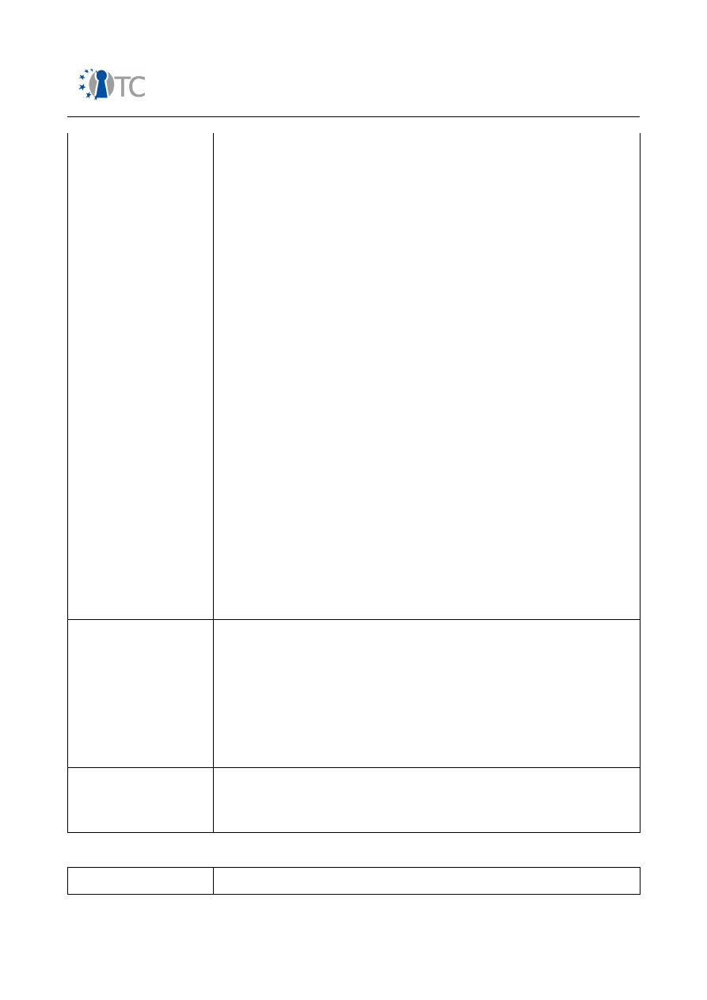
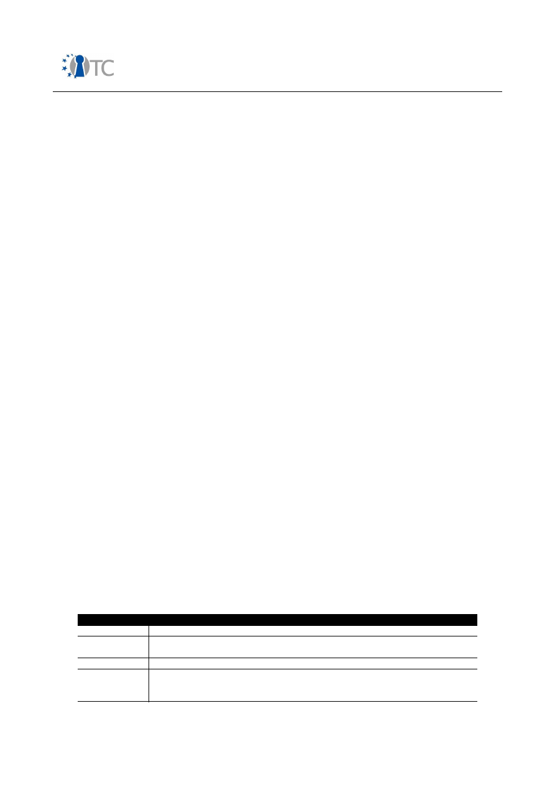

D08.1 Market requirements and functionality
for a mobile phone trust demonstrator
Project number
IST-027635
Project acronym
Open_TC
Project title
Open Trusted Computing
Deliverable type
Report
Deliverable reference number
IST-027635/D08.1/FINAL
Deliverable title
Market requirements and functionality for a
mobile phone trust demonstrator
WP contributing to the deliverable
WP08
Due date
January 2007 - M15
Actual submission date
February 9
th
2007
Responsible Organisation
RUB
Authors
David Jennings (IFX), Eckhard Delfs (COM),
Eimear Gallery (RHUL), Stephane Lo Presti
(RHUL).
Abstract
This document analyses market, user and
mobile network operator requirements in
terms of security.
Based on recent activities in the relevant
standardisation bodies such as OMTP and
TCG mobile phone working group, the
document defines an abstract set of
minimum security and trust functionalities to
form a basis for implementing a robust
security architecture in a mobile phone.
This document also presents four use-cases,
namely OMA DRM v2, core software
download, SIMLock and IMEI protection. The
security threats that may impact upon
devices on which these mechanisms are not
robustly implemented are extracted. This in
turn enables the derivation of requirements
for a robust implementation of each
mechanism. Following this, a description is
given of the architectural components, based
on the TCG architecture, and the functions
and interfaces, as specified in the version1.2
TPM and TSS specifications, which meet
these requirements. This has enabled those
architecture components, functions or

Market requirements and functionality for a mobile phone trust demonstrator
FINAL
interfaces not currently defined within the
TCG specification set, but required for the
secure implementation of the selected use
cases on a trusted mobile platform, to be
identified.
Keywords
WP08, market, standards, mobile, trust,
security, demonstrator
Dissemination level
Public
Revision
FINAL
Instrument
IP
Start date of the
project
1
st
November 2005
Thematic Priority
IST
Duration
42 months
Open_TC Deliverable 08.1
2/229

Market requirements and functionality for a mobile phone trust demonstrator
FINAL
Table of Contents
1 Introduction ......................................................................................................... 11
1.1 Background ....................................................................................................... 11
1.2 Overview ........................................................................................................... 13
1.3 Appendix overview ............................................................................................ 14
2 Analysis of market, user and mobile network provider requirements ................. 15
2.1 Market structure & security related features ..................................................... 15
2.2 Possible future security related features ........................................................... 20
2.3 Mobile network provider requirements .............................................................. 21
2.3.1 Customer satisfaction ..................................................................................... 21
2.3.2 MNO business model ...................................................................................... 21
2.4 Open Mobile Terminal Platform (OMTP) ............................................................. 22
2.4.1 OMTP hardware security requirements ........................................................... 22
2.4.2 OMTP application platform security ................................................................ 24
2.4.2.1 Generic functional groups ............................................................................ 24
2.4.2.2 Trust levels .................................................................................................. 25
2.4.2.3 Abuse cases ................................................................................................. 26
2.4.2.4 User prompting ............................................................................................ 26
2.5 Mobile network user requirements .................................................................... 27
2.5.1 The business user ........................................................................................... 27
2.5.2 Personal user .................................................................................................. 28
2.5.3 Implications of ubiquitous computing for mobile phone users ....................... 29
2.5.3.1 Privacy considerations and pervasive computing ........................................ 30
2.5.4 Mobile phone theft prevention ........................................................................ 30
2.5.5 M-Commerce .................................................................................................. 31
2.5.5.1 M-Commerce standards .............................................................................. 32
2.6 TCG MPWG use case scenarios .......................................................................... 35
3 Analysis of mobile phone standard requirements and dependencies with regard to
trust and security ..................................................................................................... 36
3.1 Protected authentication to mobile networks .................................................... 36
3.1.1 GSM authentication ........................................................................................ 36
3.1.2 UMTS authentication ...................................................................................... 38
3.1.3 Confidentiality of data exchanged over wireless interfaces ........................... 39
3.1.4 GSM ciphering ................................................................................................ 40
3.1.5 UMTS ciphering ............................................................................................... 41
3.2 User identity confidentiality ............................................................................... 42
3.2.1 User identity protection in GSM ...................................................................... 42
3.2.2 User identity protection in UMTS .................................................................... 43
3.3 IMEI protection ................................................................................................... 43
3.3.1 Internal resource integrity .............................................................................. 43
3.3.2 Access control and partitioning for handset applications and software .......... 43
3.3.3 Software quality ............................................................................................. 44
3.4 Access control to broadcast services ................................................................ 45
3.4.1 3GPP MBMS .................................................................................................... 45
3.4.1.1 3GPP Generic Bootstrapping Architecture (GBA) ......................................... 45
3.4.1.2 MBMS security framework ........................................................................... 46
3.4.2 DVB-H ............................................................................................................. 48
3.4.2.2 IPDC SPP 18Crypt ........................................................................................ 51
Open_TC Deliverable 08.1
3/229

Market requirements and functionality for a mobile phone trust demonstrator
FINAL
3.5 Installation of downloaded software .................................................................. 52
3.5.1 OMA Device Management .............................................................................. 52
3.5.2 Java Verified ................................................................................................... 53
3.5.3 Symbian Signed .............................................................................................. 53
3.5.4 M2M ................................................................................................................ 54
3.6 Protection of commercial DRM content ............................................................. 55
3.6.1 OMA DRM 1.0 .................................................................................................. 55
3.6.2 OMA DRM 2.0 .................................................................................................. 56
3.6.3 Microsoft Windows Media DRM for portable devices ...................................... 57
3.6.4 Apple Fairplay ................................................................................................. 57
3.6.5 CPRM / SD-Audio ............................................................................................. 57
3.7 End-2-end data confidentiality ........................................................................... 58
3.7.1 VPN - IPSec ..................................................................................................... 58
3.7.2 Secure browsing ............................................................................................. 58
3.8 RF-ID / NFC ........................................................................................................ 59
4 Minimum set of security and trust functionalities on a mobile phone ................. 61
4.1 Overview ........................................................................................................... 61
4.1.1 Integrity .......................................................................................................... 61
4.1.2 Authenticity .................................................................................................... 61
4.1.3 Confidentiality ................................................................................................ 62
4.1.4 Authorisation .................................................................................................. 62
4.1.5 Secure execution ............................................................................................ 62
4.2 The minimum set of functionalities and its relation to market segments .......... 62
4.3 User experience related system aspects ........................................................... 63
4.4 The minimum set of functionalities and its relationship to a TPM ..................... 65
5 Use case descriptions .......................................................................................... 67
5.1 OMA DRM ........................................................................................................... 67
5.1.1 Introduction .................................................................................................... 67
5.1.2 DRM ................................................................................................................ 67
5.1.3 The OMA ........................................................................................................ 68
5.1.4 Model .............................................................................................................. 68
5.1.5 OMA DRM v1 .................................................................................................. 69
5.1.6 OMA DRM v2 ................................................................................................... 70
5.2 Core software download .................................................................................... 71
5.2.1 Introduction .................................................................................................... 71
5.2.2 Model .............................................................................................................. 72
5.2.3 Signed software .............................................................................................. 74
5.2.4 HTTPS ............................................................................................................. 75
5.3 SIMLock ............................................................................................................. 76
5.3.1 Introduction .................................................................................................... 76
5.3.2 Model .............................................................................................................. 77
5.3.3 3GPP TS 22.002 .............................................................................................. 79
5.4 IMEI protection ................................................................................................... 84
5.4.1 Introduction .................................................................................................... 84
5.4.2 The IMEI .......................................................................................................... 85
5.4.3 Model .............................................................................................................. 85
5.4.4 Theft protection .............................................................................................. 86
5.4.5 Service provision ............................................................................................ 87
5.4.6 Software authorisation ................................................................................... 87
5.4.7 Location tracking ............................................................................................ 87
Open_TC Deliverable 08.1
4/229

Market requirements and functionality for a mobile phone trust demonstrator
FINAL
6 Use case requirement analysis ............................................................................ 88
6.1 Summary of requirements ................................................................................. 88
6.1.1 Use-case 1: A robust implementation of OMA DRM v2 ................................... 88
6.1.2 Use-case 2: Secure software download .......................................................... 89
6.1.3 Use-case 3: A robust implementation of SIMLock ........................................... 90
6.1.4 Use-case 4: Secure IMEI protection ................................................................ 91
6.2 Global requirements analysis ............................................................................ 91
6.2.1 Common requirements ................................................................................... 91
6.2.2 Conflicting requirements ................................................................................ 94
7 TCG mappings ..................................................................................................... 95
7.1 Introduction ....................................................................................................... 95
7.2 Revised architectural models ............................................................................ 95
7.3 Assumptions ...................................................................................................... 96
7.4 The trusted mobile platform architecture ......................................................... 96
7.5 Authenticated boot process ............................................................................... 97
7.6 Secure boot process ......................................................................................... 98
7.6.1 Prior art .......................................................................................................... 99
7.6.2 Secure boot using a version 1.1 compliant TPM ........................................... 100
7.6.3 Secure boot using a version 1.2 compliant TPM ........................................... 101
7.7 Platform run-time integrity .............................................................................. 103
7.8 Fundamental TPM command runs .................................................................. 105
7.8.1 TPM permanent flags .................................................................................... 105
7.8.2 TPM initialisation ........................................................................................... 105
7.8.3 TPM startup .................................................................................................. 106
7.8.4 Context management .................................................................................. 106
7.8.5 Endorsement key pair generation ............................................................... 108
7.8.6 Accessing the public endorsement key ....................................................... 109
7.8.7 TPM self testing ............................................................................................ 110
7.8.8 Enabling the TPM ......................................................................................... 110
7.8.9 The ownership flag ....................................................................................... 111
7.8.10 Taking ownership of the TPM ..................................................................... 111
7.8.11 TPM activation ........................................................................................... 112
7.9 Secure storage ............................................................................................... 113
7.9.1 Key hierarchy ............................................................................................... 113
7.9.2 Installing integrity and confidentiality sensitive agent data ......................... 113
7.9.3 Secure storage of and access control to sensitive agent data ...................... 115
7.9.4 Security of sensitive XYZ agent data while in use ........................................ 121
7.10 Platform attestation ...................................................................................... 121
7.10.1 Key certification .......................................................................................... 124
7.11 Demonstrating privilege ................................................................................ 124
7.12 Random number generation ......................................................................... 128
7.13 Trusted time source ....................................................................................... 128
8 Conclusions ....................................................................................................... 129
Appendix A Analysis of OMTP and mobile TCG requirements ................................ 134
A.1 OMTP Trusted Environment (TE) profile 0 ....................................................... 134
A.1.1 Threat model ............................................................................................... 134
A.1.1.1 Attacks from non-secure software ........................................................... 134
A.1.1.2 Attacks on HW-level ................................................................................ 135
A.1.2 IMEI protection ............................................................................................ 135
A.1.3 DRM ............................................................................................................. 136
Open_TC Deliverable 08.1
5/229

Market requirements and functionality for a mobile phone trust demonstrator
FINAL
A.1.4 Secure boot and encryption strength requirements .................................... 137
A.2 TCG MPWG ..................................................................................................... 137
A.2.1 Platform integrity ........................................................................................ 138
A.2.2 Device authentication ................................................................................. 138
A.2.3 Robust DRM implementation ....................................................................... 138
A.2.4 SIM-lock/Device personalisation .................................................................. 138
A.2.5 Secure software download .......................................................................... 138
A.2.6 Secure channel between device and UICC .................................................. 139
A.2.7 Mobile ticketing ........................................................................................... 139
A.2.8 Mobile payment ........................................................................................... 139
A.2.9 Software use ............................................................................................... 140
A.2.10 Prove platform and/or application integrity to end user ............................ 140
A.2.11 User data protection and privacy ............................................................. 141
A.2.12 Some conclusions to the TCG MPWG use cases ........................................ 141
Appendix B Analysis of primary and derived use cases ......................................... 142
B.1 Introduction .................................................................................................... 142
B.2 Primary and derived use case partitioning ..................................................... 142
B.3 Derived use case analysis .............................................................................. 153
B.3.1 Conclusions ................................................................................................. 157
B.4 Mapping of the minimum set of trust functionalities to the primary use cases ......
157
Appendix C Access policies and domains for open platforms ................................ 167
Appendix D Use case requirement threat analysis ................................................ 171
D.1 Requirements for a robust implementation of OMA DRM v2 .......................... 171
D.1.1 Introduction ................................................................................................. 171
D.1.2 OMA DRM v2 agent installation ................................................................... 171
D.1.3 The ROAP suite ............................................................................................ 173
D.2 Requirements for secure software download ................................................. 184
D.2.1 Introduction ................................................................................................. 184
D.2.2 Signed software .......................................................................................... 184
D.2.3 HTTPS .......................................................................................................... 189
D.3 Requirements for secure SIMLock .................................................................. 199
D.3.1 Introduction ................................................................................................. 199
D.3.2 Personalisation agent installation ............................................................... 199
D.3.3 Device personalisation ................................................................................ 200
D.3.4 Operation of a personalised device ............................................................. 201
D.3.5 Device de-personalisation ........................................................................... 202
D.4 Requirements for secure IMEI ........................................................................ 202
D.4.1 Introduction ................................................................................................. 202
D.4.2 Reprogramming the IMEI ............................................................................. 202
D.4.3 Communication of the IMEI ......................................................................... 203
Appendix E A secure download protocol which leverages TC technologies ........... 205
E.1 Generic protocol specification ........................................................................ 205
E.1.1 Security threats ........................................................................................... 205
E.1.2 Security services ......................................................................................... 205
E.1.3 Notation ....................................................................................................... 207
E.1.4 Assumptions ................................................................................................ 207
E.1.5 Protocol specification ................................................................................... 209
E.2 Protocol implementation using TCG-defined functionality .............................. 211
E.2.1 Notation ....................................................................................................... 211
Open_TC Deliverable 08.1
6/229

Market requirements and functionality for a mobile phone trust demonstrator
FINAL
E.2.2 Assumptions ................................................................................................ 211
E.2.3 Protocol implementation .............................................................................. 212
E.2.4 Security analysis of the key exchange protocol ........................................... 218
List of Abbreviations ............................................................................................ 222
Open_TC Deliverable 08.1
7/229

Market requirements and functionality for a mobile phone trust demonstrator
FINAL
List of figures
Figure 1: GSM AKA – relevant components in mobile phone........................................ 36
Figure 2: Simplified UMTS AKA – relevant components in mobile phone...................... 39
Figure 3: 3GPP MBMS – ME and UICC based key derivation..........................................48
Figure 4: Hierarchical protection scheme in DVB-H from a device perspective............ 49
Figure 5: IPDC OSF components in a mobile device..................................................... 50
Figure 6: KMS device agent platform in IPDC SPP OSF (informative section)............... 51
Figure 7: OMA DRM 2.0 model...................................................................................... 56
Figure 8: Possible simple architecture of an NFC-capable mobile phone......................60
Figure 9: Architecture model........................................................................................ 68
Figure 10: Software download system model............................................................... 72
Figure 11: Core software download.............................................................................. 74
Figure 12: SSL/TLS/WTLS protocol stack....................................................................... 75
Figure 13: SIMLock....................................................................................................... 77
Figure 14: Architecture model...................................................................................... 85
Figure 15: ME Software model...................................................................................... 86
Figure 16: Agent installer key hierarchy..................................................................... 113
Figure 17: Relationship between derived use cases................................................... 154
Figure 18: Illustration of IMEI validation procedure.................................................... 160
Figure 19: Example for domains in a smartphone environment................................. 168
Figure 20: Sample key hierarchy................................................................................ 213
Open_TC Deliverable 08.1
8/229

Market requirements and functionality for a mobile phone trust demonstrator
FINAL
List of Tables
Table 1: Mobile phone market segments...................................................................... 16
Table 2: Security features in mobile phones from end user perspective...................... 20
Table 3: Levels of trustworthiness according to OMTP P6, application platform security
..................................................................................................................................... 25
Table 4: Mapping of minimum set of trust functionality to market segments.............. 63
Table 5: User experience related system aspects........................................................ 65
Table 6: Personalisation agent installation................................................................... 79
Table 7: The VALIDATION_DATA structure.................................................................. 103
Table 8: The TSS_EVENT_CERT structure....................................................................103
Table 9: TPM permanent flags.................................................................................... 105
Table 10: TPM initialisation......................................................................................... 105
Table 11: TPM start-up................................................................................................106
Table 12: Creating a context...................................................................................... 106
Table 13: Creating a TPM object................................................................................. 107
Table 14: Connecting to a context.............................................................................. 107
Table 15: Closing context........................................................................................... 107
Table 16: Freeing memory allocated to the context................................................... 107
Table 17: The default policy object (created on TPM initialisation).............................108
Table 18: TPM device driver communications............................................................ 108
Table 19: Creating an endorsement key pair............................................................. 109
Table 20: Accessing the public endorsement key.......................................................110
Table 21: Self testing.................................................................................................. 110
Table 22: Physically enabling the TPM........................................................................ 110
Table 23: Physically disabling the TPM....................................................................... 111
Table 24: Enabling the TPM........................................................................................ 111
Table 25: Setting the state of the 'TPM_PF_OWNERSHIP' flag.....................................111
Table 26: Taking ownership of the TPM...................................................................... 112
Table 27: Activating the TPM...................................................................................... 113
Table 28: Transport session........................................................................................ 115
Table 29: Creating a wrap key.................................................................................... 116
Table 30: Loading a key............................................................................................. 119
Table 31: Sealing data using a storage key................................................................ 119
Table 32: Wrapping a key to PCR(s)........................................................................... 121
Table 33: Creating a platform attestation identity key .............................................. 122
Table 34: Platform attestation.................................................................................... 123
Table 35: Authorising a TPM owner read of the public endorsement key................... 125
Table 36: Authorising a load key and an object seal.................................................. 128
Table 37: Random number generation....................................................................... 128
Table 38: TPM commands required in a MTPM........................................................... 131
Table 39: Partitioning between primary and derived use cases................................. 143
Table 40: Mapping of minimum set of trust functionality to primary use cases......... 158
Table 41: OMA DRM v2 agent installation...................................................................172
Table 42: The 4-pass registration protocol................................................................. 176
Table 43: The 2-pass rights acquisition protocol........................................................ 179
Table 44: The 1-pass rights acquisition protocol........................................................ 179
Table 45: The 2-pass join domain protocol................................................................. 182
Table 46: The 2-pass leave domain protocol.............................................................. 183
Open_TC Deliverable 08.1
9/229

Market requirements and functionality for a mobile phone trust demonstrator
FINAL
Table 47: Core software download agent installation................................................. 185
Table 48: The core software download process.......................................................... 186
Table 49: Core software download process using nonces.......................................... 187
Table 50: Core software download process using timestamps................................... 188
Table 51: Core software download agent and WTLS client installation.......................193
Table 52: The full handshake protocol........................................................................ 196
Table 53: Personalisation agent installation............................................................... 199
Table 54: Device personalisation................................................................................ 200
Table 55: Device operation......................................................................................... 201
Table 56: Device de-personalisation........................................................................... 202
Open_TC Deliverable 08.1
10/229

Market requirements and functionality for a mobile phone trust demonstrator
FINAL
1
Introduction
According to GSMA [1], today about 2.2 billion subscribers use GSM™ systems.
Security features were incorporated in modern digital mobile handset devices from the
beginning.
The majority of deployed phones are realised as closed systems, where the end user
can only execute pre-implemented functions or at most download applets to run on a
virtual machine with restricted access to system resources. However, the number of
handsets featuring open operating systems which allow the execution of native code is
increasing. There are inherent security risks associated with open, multi-peripheral
and always-connected devices, as exemplified by the possibilities for software virus
infection and propagation over mobile networks. As a result, the need for a more
robust trust and security architecture for mobile platforms is increasingly accepted.
The work of mobile standardisation bodies such as 3GPP (3rd Generation Partnership
Project) or OMA (Open Mobile Alliance) has mainly focussed on functional aspects of
security. However, the Open Mobile Terminal Platform (OMTP) forum and the TCG
mobile phone work group have recently started activities dealing with robustness
issues. The OMTP TR0 Hardware Security Requirements appear to be of particular
interest, since they cover both open and closed systems.
The goal of this work package is to investigate market requirements and functionality
for a mobile phone trust demonstrator. For the purposes of this work we use the
definition of trust given by the Trusted Computing Group (TCG), where trusted
computing means that a system can be trusted by its designers and other software
writers not to run unauthorised programs. That is, a trusted system is one that
behaves in a particular manner for its intended purpose [67].
Whereas the OMTP TR0 requirements are specific in terms of the strength of the
necessary security, they do not go into detail regarding the security architecture. We
consider a Trusted Computing Architecture based on the Trusted Platform Module. In
particular we consider whether a TPM and its Trusted Software Stack would provide
one possible solution, and cover a basic set of required security properties for mobile
platforms.
1.1 Background
The main security element in a GSM mobile phone is the SIM card, which protects both
network operators and end users against various types of attack.
The importance of trust in SIM cards is reflected by the effort which smart card
vendors put into making these devices tamper-proof, throughout their long lifetime on
the market. In spite of this, many types of attacks against SIM cards such as SIM card
cloning, IMSI catching have been published [2]. They exploit specification protocol
deficiencies in the way how SIM card resources can be accessed over the GSM air-
interface, weaknesses of deployed cryptographic algorithms and insufficient
countermeasures against side-channel attacks.
Other legacy security requirements in GSM terminals are protection of the IMEI
integrity and SIM-lock, a mechanism to restrict usage of mobile phones to specific SIM
Open_TC Deliverable 08.1
11/229

Market requirements and functionality for a mobile phone trust demonstrator
FINAL
cards. Since an efficient protection against handset theft requires inter-network
coordination of blacklist database entries, IMEI protection was not considered very
seriously for quite some time. But in the meantime some countries such as Great
Britain have introduced laws to force mobile network operators to take care of handset
theft. Also the GSM Association has issued guidelines on proper IMEI integrity
protection on GSM devices. SIM-lock, on the other hand, gained immediate attention
as any end user with a corresponding subscription could be considered a potential
attacker. Since many proprietary SIM-lock solutions turned out to provide inadequate
resistance against simple attacks and the fact that professional offering of SIM-unlock
services is not forbidden by law in many countries, mobile network operators are still
very interested in suitable countermeasures.
Apart from these legacy issues, the introduction of new services in current and future
mobile networks, and the ever-growing increase of new features in mobile handsets,
impose further security demands. A rising number of wireless connectivity interfaces
such as Bluetooth®, WLAN, IrDA® etc offer the end user flexible and easy methods to
exchange data with other devices, but also represent possible ways for attackers to
eavesdrop private and confidential user information. This becomes even more critical
due to the fact that mobile devices are usually switched on continuously. Also location
based mobile services are seen as a potential threat to people's privacy.
A recent trend in the mobile handset market is the introduction of broadcasting
services such as DVB-H which require both access and content protection schemes. A
generic requirement for owners of various types of content such as music, video clips
or games is the protection of usage rights on mobile devices. In 2005, the Open Mobile
Alliance (OMA) released a candidate version for a PKI-based DRM protection scheme
(OMA DRM 2.0), and there are also company-proprietary DRM solutions competing in
the market.
Another trend in the high-end handset market is the increasing deployment of open
operating systems offering services similar to those of standard computer systems.
The user is invited to install downloadable third-party software applications, either as
native or virtual-machine code. Certificate based software installation schemes are
being introduced to counteract potential execution of trojan horses, which may either
harm end user or mobile network assets. The threat scenario becomes apparent
especially when considering fast super distribution of data among mobile devices.
Other types of malware such as viruses or worms using exploits in mobile operating
systems impose similar threats as in standard PCs.
The increasing demand for protecting assets in mobile devices has resulted in the
development of various company-proprietary solutions. It has also been recognised
that many threats are related to the fact that modern mobile operating systems are
mainly light-weight versions of standard PC operating systems. Though security has
not been seriously taken into consideration during design of these monolithic
operating systems, compatibility to legacy software APIs is a major requirement for all
future improvement concepts.
In order to introduce a robust security architecture in mobile handset platforms, a
number of investigations have taken place both in universities as well as in industrial
bodies.
Open_TC Deliverable 08.1
12/229

Market requirements and functionality for a mobile phone trust demonstrator
FINAL
The Open Mobile Terminal Platform (OMTP) forum have defined a set of so called
'abuse cases' describing attack scenarios in open platform based systems at the
application level. OMTP has also specified hardware requirements for a trusted
environment in order to formalise the security needs of sensitive assets and
applications. The mobile phone work group of the Trusted Computing Group (TCG)
have compiled a list of security related use case scenarios in the life cycle of a mobile
phone.
1.2 Overview
This document provides an analysis of existing and future security requirements on
mobile handsets, as far as they are publicly available.
In chapter 2 we look into market, user and mobile network provider requirements.
Mobile network operators (MNOs) and end users are considered as the key
stakeholders for this investigation. It is shown how security requirements impact both
MNO business model and customer satisfaction.
In chapter 3 we investigate the mobile phone standard requirements in more detail.
The analysis of mobile networks will focus on GSM and UMTS networks. This is done in
order to gain a complete system overview of all aspects concerning security.
Furthermore, we investigate in more detail, how current security requirements are
realised in terms of functionality. We also consider some threat scenarios with a focus
on how they allow shortcomings of existing specifications or implementation
deficiencies to be exploited.
In chapter 4 we define a set of abstract security and trust functionalities required on a
mobile phone (which is based on a comprehensive use case analysis found in
Appendix B). This set forms a foundation for implementing a robust security
architecture. We briefly look at the way how these functions are related to market
segments and which ramifications they have to the user experience such as startup
time. Chapter 4 ends with a short analysis of the relationship between the basic
security properties and a TPM.
The remainder of this document is concerned with four use-cases that have been
chosen according to certain criteria (commercial and scientific interest, duration of
study and implementation) and an analysis of the requirements which enable a robust
implementation of each. It also contains a specification of the trusted computing (TC)
functionality required of a trusted mobile platform (TMP) with respect to the four use-
cases described.
Chapter 5 presents the four chosen use-cases, namely, OMA DRM v2, secure software
download, SIMLock and IMEI protection.
Chapter 6 details the functionality required of a trusted mobile platform if it is to
facilitate a robust implementation of the chosen use cases. The requirements listed in
this chapter have resulted from a detailed threat analysis completed on each of the
four use cases. This analysis can be found in Appendix D.
In chapter 7 the requirements listed in chapter 6 are utilised in order to examine which
Open_TC Deliverable 08.1
13/229

Market requirements and functionality for a mobile phone trust demonstrator
FINAL
architectural components and functionality described within the TCG version 1.2
specification set may be used to provide robust or secure implementations of the four
use cases defined. This examination also allows us to identify any architecture
components and functionality not currently defined within the TCG specification set
but which are required for the robust or secure implementation of OMA DRM v2,
secure software download, SIMLock and IMEI protection on a trusted mobile platform.
1.3 Appendix overview
Appendix A introduces the OMTP Trusted Environment (Profile 0) threat model.
Particular focus is put on the IMEI protection feature. The IMEI has special
requirements on the mobile phone, as it represents a read-only and unchangeable
piece of information stored in non-volatile memory. We also look into recent activities
of the TCG mobile working group.
Taking the list of use cases provided by the TCG Mobile Working Group as a starting
point, we show the relationship between primary and derived use cases in Appendix B.
We then look at the derived use cases in more detail and show that all security
properties are at least indirectly dependent on platform integrity. The minimum set of
security and trust functionalities defined in chapter 4 is then mapped to the list of
primary use cases.
In order to fulfil the different mobile security stakeholder requirements, Appendix C
gives an example of how abstract access control policies could be deployed in an open
OS based system. A domain concept is introduced to represent the different roles and
responsibilities of the various stakeholders.
Appendix D presents a comprehensive threat analysis completed on each of the four
use-cases described in chapter 5. The functionality required of a trusted mobile device
in order to mitigate the threats extracted, and to therefore facilitate a robust
implementation of OMA DRM v2, core software download, SIMLock and IMEI protection
is also defined.
Finally, in Appendix E we specify a secure download protocol designed to leverage
trusted computing technologies in order to enable the protected download and
execution of non-application software.
Open_TC Deliverable 08.1
14/229
Market requirements and functionality for a mobile phone trust demonstrator
FINAL
2
Analysis of market, user and mobile network provider
requirements
2.1 Market structure & security related features
The structure of the mobile phone market as of today can be classified as follows:
Segment
Description
Entry Segment:
Phones in this category mainly provide basic 2
nd
Generation
telephony services for voice and data calls. A virtual machine for
running downloadable software is not present. If required,
system software is patched mainly in local service centres.
Architecture
: Systems with the highest integration level are
built on top of a single processor, running both application and
protocol stack components on a real-time operating system.
Also two processor systems are deployed. Connectivity
interfaces are often constrained to a proprietary system
connector interface in order to provide synchronisation services
to a PC. Main security features are IMEI protection, all SIM-
related services and the binding of the mobile device to a MNO
SIM card (SIM-lock).
Feature Segment
This segment contains the majority of all mobile phones shipped
today. High-speed wireless data connections (GPRS, EDGE,
UMTS) are offered together with a large set of connectivity
interfaces. Messaging services such as email, MMS etc are
supported. A lot of multimedia facilities support deployment of
DRM protected content such as ring tones, music clips etc.
Various external memory interfaces allow off-line storage of
content. A virtual machine offers end users to download 3
rd
party applets in order to increase the software functionality.
System software can be patched either via local interfaces or
over-the-air.
Architecture
: Systems are mainly built on a two-processor
architecture, one processor running real-time critical
components and the other application related features. To
accelerate multimedia processing, dedicated hardware
accelerators are deployed. In order to increase protection of
DRM related content, some platform vendors deploy proprietary
HW/SW facilities. Depending on the system memory
configuration, access control schemes may also be present.
High-End Segment
Phones in this category offer the richest feature set. Compared
to the feature segment, 3-G wireless data connections are
further extended by HSDPA and HSUPA. Support for UMA allows
seamless handover between mobile networks and W-LAN access
points. Also facilities for reception of broadcast channels such as
Open_TC Deliverable 08.1
15/229
Market requirements and functionality for a mobile phone trust demonstrator
FINAL
Segment
Description
DVB-H are being introduced.
As many solutions are built on top of open operating systems,
installation of native 3
rd
party software is supported. Depending
on the software installation profile, a signature validation
scheme may be mandatory. Controlled content rendering and
distribution is supported by means of one or multiple DRM
systems. In case of broadcasting channels, an access protection
scheme may be implemented to restrict content rendering to
valid subscriptions. VPN clients allow secure IP tunnels to remote
networks. Secure wallet applications offer safe storage of private
and confidential user data.
Architecture
: Systems are built on at least two processors. For
many connectivity interfaces or broadcast receivers, additional
companion ICs are used to implement these functions. Examples
of such companion chips would be bluetooth or wireless LAN
modem ICs. Dedicated HW accelerators for multimedia services
are used, either integrated or stand alone. Inbuilt biometric
sensors or speaker recognition schemes (ASR) may be used for
access control. Various proprietary HW/SW IPs are used to
increase the robustness of the mobile platform security features.
In the future, application processor virtualisation facilities may
be deployed in order to increase the level of system architecture
protection.
Table 1: Mobile phone market segments
In the following, an overview over security related features in mobile phones is
presented. Table 2 gives a short introduction into features, involved stakeholders and
protection measures on the device.
Please note that in terms of mobile networks only GSM/UMTS systems have been
considered.
Feature
Description
Protected authentication
to 3GPP networks
Stakeholders
: MNOs, end users.
Motivation
: MNO needs to ensure that only customers
with valid subscriptions can use mobile network
resources.
End users need to be sure that they are only charged for
services they effectively consumed.
Method of enforcement:
(U)SIM card as specified in
3GPP specifications. In GSM, A3/A8 algorithms as specified
by MNO. In particular: secret 128-bit Key Ki and IMSI in
SIM card, secret Authentication Algorithm in SIM card and
access control to SIM via PIN. In UMTS, f1-f5 algorithms as
specified by MNO.
Open_TC Deliverable 08.1
16/229
Market requirements and functionality for a mobile phone trust demonstrator
FINAL
Feature
Description
Protected access to
mobile phone
Stakeholders
: End users.
Motivation:
End users who want to restrict usage of their
mobile phone to themselves or a limited number of
people.
Methods of enforcement
: SIM PIN and Phone PIN stored
in non-volatile memory of mobile phone, Fingertip
sensors, speaker recognition schemes.
SIM-lock
Stakeholders
: MNOs.
Motivation:
MNO offer subsidised mobile phones linked
to long-term contracts. The phone usage is linked to
specific SIM card attributes such as mobile network,
mobile network subset or a dedicated SIM. For
unrestricted usage of mobile phone, the end user needs to
purchase one or several unlock codes.
Methods of enforcement:
According to
OMTP P4/T6 or
proprietary.
Device theft protection
Protect network from
disturbances caused by
unapproved devices
Stakeholder
: MNOs, end users.
Motivation:
End users are interested in an efficient
protection scheme that would make it unattractive for
attackers to steal their mobile phones. MNOs need to
support the effectiveness of IMEI protection measures by
maintaining black lists stored in EIR databases. It is also
required that black lists are exchanged with other MNOs.
MNOs can also use IMEI protection schemes to identify
terminals which should not be able to gain access to their
network resources, e.g. because of missing type approval.
Methods of enforcement:
According to
OMTP P4/T6 or
proprietary.
Confidentiality of data
exchanged over wireless
interfaces
Stakeholder
: MNOs, end users.
Motivation:
It shall not be possible to eavesdrop
voice/data when transmitted over the air interface.
Methods of enforcement:
GSM/UMTS:
Symmetric encryption of user data over the
air interface via A5,GEA/f8, generation of secret key in the
(U)SIM card, encryption and decryption facilities in the
mobile phone.
Bluetooth
: 3 security modes, E0 cipher for encryption.
WLAN
: WEB, WPA.
IrDA
: None.
Open_TC Deliverable 08.1
17/229
Market requirements and functionality for a mobile phone trust demonstrator
FINAL
Feature
Description
Wireless USB
: None.
End-to-end confidentiality
Stakeholder
: MNOs, end users, legal authorities.
Motivation:
It shall not be possible for an unauthorised
person to eavesdrop voice/data transmitted to a remote
party.
Methods of enforcement:
GSM/UMTS
:
No end-to-end voice/data encryption provided
by 3GPP infrastructure or public networks (PSTN,
ISDN,...,). Legal interception facilities in mobile network
(out of scope).
Data services via GSM/UMTS,WLAN incl VoIP
:
VPN clients,
IPSec, Secure Socket Layer, SRTP, PKI-based email.
Access control to
broadcast services
Stakeholder
: Broadcast service providers, end users,
MNOs.
Motivation:
The broadcast service providers want to be
ensured that access to premium content is only possible
for valid subscriptions.
Methods of enforcements:
Security frameworks for
3GPP MBMS and DVB-H. OMA/BCAST currently under
specification. Proprietary schemes for DMB.
User identity
confidentiality
Stakeholders
: End users, MNOs.
Motivation
: End users do not want to be traced by
unauthorised people when roaming through networks.
Methods of enforcement
: TMSI/IMSI scheme as
specified in GSM/UMTS. TMSI/IMSI stored securely in
(U)SIM card. Mutual authentication in UMTS.
Protection of user data
Stakeholders:
End users.
Motivation
: End users want to be ensured that their
private and confidential data is not accessible to
unauthorised people. This can be any kind of data:
telephone book entries, call records, private emails and
messages, pictures, video clips etc .
In a certain perspective, it is not only important for people
owning a specific device but also for those forwarding
their private data (e.g. address information) to them.
A secure wallet is a more sophisticated application for
protecting sensitive user data such as passwords.
Methods of enforcement
: Proprietary, anti-virus
Open_TC Deliverable 08.1
18/229
Market requirements and functionality for a mobile phone trust demonstrator
FINAL
Feature
Description
software. Policy settings in ad-hoc networks such as
Bluetooth.
Protected download and
installation of 3
rd
party
software
Stakeholders
: End users, MNOs, 3
rd
parties offering
software applications.
Motivation
: End users benefit from a flexible software
application ecosystem which allows them to extend the
device functionality. Apart from increased functionality
they want to be ensured that the downloaded software is
trustworthy.
Methods of enforcement:
In the feature segment,
software download is usually restricted to virtual
machines such as a Java™ VM. Java MIDP 2.0 offers a
framework supporting validation of applet signatures. A
policy manager supports restriction to system resources
according to end user or MNOs preferences. Root
certificates are pre-installed on the device flash memory
or in the (U)SIM card.
In open platform systems such as Symbian, certificate-
based software validation schemes and policy
management systems are also introduced for native code.
Secure download and
installation of system
software
Stakeholders
: End users, MNOs.
Motivation:
It is important for MNOs and end users to
provide a method that can remove system software bugs.
The update procedure is usually triggered on request of
the end user, but it is also considered to perform updates
over-the-air during idle-times. The latter could be
considered as a form of device management by the MNO.
Both complete SW image replacements as well as
differential SW updates can be executed.
Methods of enforcement
: Update after download to
external host and subsequent installation via system
connector or download over-the-air and subsequent
installation. The code is checked for authenticity and
integrity before installation. Usually a system reboot is
required.
Protection of commercial
DRM content
Stakeholders
: End users, content owners, MNOs.
Motivation
: Content owners seek for flexible ways to
offer end users content rendering based on predefined
rights, e.g. a fixed number of playbacks or a playback
within a certain time frame. This includes downloaded,
streamed and broadcast content. On the other hand, the
required protection scheme should not result in user
Open_TC Deliverable 08.1
19/229

Market requirements and functionality for a mobile phone trust demonstrator
FINAL
Feature
Description
annoyance. So it is also important that protected content
can be rendered on other devices belonging to the user.
Methods of enforcement
: OMA 1.0 is used for
protection of low value content. It supports three
methods: forward lock, combined and separate delivery.
Only separate delivery applies content encryption. The
next version OMA DRM 2.0 is based on a PKI
infrastructure. In this framework all content is encrypted.
The required rights object to decrypt the content is bound
to a specific device or a device domain. An organisation
called CMLA provides the required PKI infrastructure.
Other rights management schemes are CPRM, Windows
Mobile™DRM, Apple's fairplay, etc. In all systems some
kind of DRM agent is used to enforce content protection
according to the specified rights. Implementation
robustness rules are proprietary or, in case of OMA DRM,
specified according to OMTP P4/T6.
Denial of Service
Protection
Stakeholders
: MNOs, end users.
Motivation
: MNOs need to protect their network infra-
structure from attacks launched by mobile devices
infected with malware. This may result in increased
downtimes of important network nodes or complete
service failure in certain regions.
End users expect their mobile device to behave as
specified. Any downtime or corruption of user assets must
be avoided.
Methods of enforcement
: In open-platforms based on
anti-virus software, otherwise proprietary.
Table 2: Security features in mobile phones from end user perspective
2.2 Possible future security related features
●
Advanced authentication methods:
•
Biometric sensors;
●
Medical Services:
•
Protected storage of medical data on mobile phone;
•
Tele-monitoring: Secure transmission of medical data received via
connectivity interfaces to remote medical facility;
•
Secure transmission of localisation information (GPS) in case of emergency;
●
M-commerce:
•
Payment services with mobile phone;
•
Services involving digital signature.
Open_TC Deliverable 08.1
20/229

Market requirements and functionality for a mobile phone trust demonstrator
FINAL
2.3 Mobile network provider requirements
The Mobile Network Providers or Operators (MNOs) are interested in security for
various reasons. Primarily, as their name suggests, they are in the business of
providing mobile network services to their customers, and as this is a business, they
need to be able to make a profit, and at the same time, compete with other operators.
This means that the end user or customer is free to choose the operator with the
business model which is most appropriate for his particular needs. The MNO has two
main requirements:
●
The customer must be satisfied with the experience of using this particular
service. Otherwise, the customer may switch to a different MNO;
●
It should not be possible for the customer to break the business model, as the
MNO has based the cost calculation on the business model being adhered to.
Security can aid the MNO in both of these requirements.
2.3.1 Customer satisfaction
A dissatisfied customer will lead either in the short term or long term to loss of
revenue for the MNO. Short term loss of revenue could be due to a service not being
used by a customer, and long term by the loss of that customer.
Of course there are many ways for an MNO to keep customer's happy, but as this
document is concerned with security, we concentrate on this aspect here.
It is therefore a primary interest of the MNO that the end customer's handset functions
correctly. A non functional handset cannot produce any revenue, or even worse may
disrupt the network and generate additional costs. An MNO is therefore interested in
robust handsets which are protected by appropriate security mechanisms.
Further, uptake of future services provided by the MNO will depend on the customer
trusting the handset and the network with which it communicates. This includes
knowing that there is damage limitation in the case of loss or theft of a mobile phone,
and preferably conditions where there is little to gain from mobile phone theft.
2.3.2 MNO business model
One of the most common business models used by the MNO is the handset subsidy
model. The customer gets a reduced price or is given a mobile phone, but is tied to a
particular contract with the MNO, who hopes to make its money back either through
the sale of prepaid calling cards or monthly contract payments and call, data or
service generated revenue.
Payment is tied to the use of a particular (U)SIM card in GSM/UMTS systems. The MNO
therefore needs to make sure that handsets cannot be modified to function with a
different SIM card.
Furthermore, if the MNO supplies certain services which are based on a certain
business model, regarding use of this service, the MNO needs to make sure that these
rules cannot be modified.
Open_TC Deliverable 08.1
21/229

Market requirements and functionality for a mobile phone trust demonstrator
FINAL
When considering MNO requirements it is worth looking at the work carried out by
Open Mobile Terminal Platform (OMTP).
2.4 Open Mobile Terminal Platform (OMTP)
OMTP is an operator sponsored forum which aims to serve all stakeholders in the
mobile phone value chain by gathering and driving requirements. The requirements
are technology platform neutral and aim to promote the adoption of new services
across a range of platforms.
OMTP aims to:
●
Make applications more usable so that user adoption is rapid;
●
Allow simpler customisation of services;
●
Allow MNOs to create a similar look and feel across platforms;
●
Standardise non-differentiating features (also called defragmentation).
MNO security issues are addressed in the OMTP Application Security Working Group,
and in the OMTP Hardware Security Requirements Group.
2.4.1 OMTP hardware security requirements
These requirements are defined as a reference for:
●
Terminal Requirements Definitions;
●
Platform and Terminal Characteristic Definitions.
The specification defines a security model where certain assets can be protected. It
begins with discussing the threat model and defining which threats are in and out of
scope. This threat model is then referred to throughout the specification.
A set of security properties are then defined for the platform. These are:
●
Authenticity;
●
Integrity;
●
Confidentiality;
●
Authorised Party.
Authenticity is used to qualify the source of an asset on the platform.
Integrity is used to qualify that an asset has not been altered or corrupted.
Confidentiality defines that an asset is only readable by those agents with the
appropriate rights.
An authorised party is a party which has the rights to carry out a particular action.
The goal of the specification is to define a set of requirements which, when adhered
to, allow the authorised parties to have trust in the resulting platforms. They will then
be comfortable leaving assets in the hands of the platform.
The specification can be split into two parts. One part concentrates on a set of use
cases.
Open_TC Deliverable 08.1
22/229

Market requirements and functionality for a mobile phone trust demonstrator
FINAL
These are:
●
IMEI Protection;
●
SIM-lock Protection;
●
DRM Protection.
The respective assets to protect are:
●
The mobile phone from theft (IMEI);
●
The subsidised mobile from use on a different network or under different
business conditions to the ones in the agreed contract;
●
Data objects from use in a way which contradicts the agreement made before
delivery or creation of these objects.
The second part of the specification concentrates on a set of base requirements
defined to make the platform trustworthy. These are:
1. Definition of a hardware unique key on the platform
This also includes a definition of the minimum cryptographic algorithms and
their respective key or signature lengths which must be used to ensure
integrity, authenticity, and confidentiality.
2. Platform secure debug requirements
This is a set of requirements which defines how the platform must be protected
from having its integrity, authenticity, or confidentiality compromised by an
unauthorised party.
3. Secure boot
This defines how the platform must be initialised to a trusted state to ensure the
required authenticity, integrity and confidentiality properties are present.
4. Secure flash update
This defines how the platform can have its software updated in a way which
does not compromise the authenticity, integrity and confidentiality of the
platform.
Although the specification aims to leave the actual implementation open, where
considered to be absolutely critical to the overall security of the trusted environment,
implementation details are defined. It is generally of interest, that the base security of
the platform is based on non obscure methods using standard and well reviewed
public algorithms. Security is based on the protection of keys, or their length in order
to protect the platform from brute force attacks.
Another interesting aspect is the definition of platform and execution environments.
Open_TC Deliverable 08.1
23/229

Market requirements and functionality for a mobile phone trust demonstrator
FINAL
What does this mean for the Open Trusted Computing Project? How does it match with
the TCG proposals? This will be considered in more detail in appendix A.
2.4.2 OMTP application platform security
Most security threats can be seen as a consequence of increased platform openness
and in particular installation of downloaded application software, as unrestricted
access to APIs may result into damage to user, MNO or 3
rd
party assets.
2.4.2.1 Generic functional groups
For this reason, the OMTP group “Application Platform Security” specified so-called
abuse cases [3], which refer to a set of generic functional groups specific to mobile
device platforms. Some of these groups shall only be available for applications with a
sufficient level of trust, since otherwise they could be misused. These functional
groups are:
●
Access to core telephony services, e.g. launch an outgoing call;
●
Access to packet data networks including HTTP and VoIP connections;
●
Messaging functions to send/receive SMS, MMS;
●
Ability to allow applications automatic launch after boot or a specific event;
●
Access to local connectivity services such as Bluetooth, IrDA, WLAN, Serial, IEEE
1394, USB etc;
●
Access to multimedia recording capabilities such as camera, microphone;
●
Read and/or write access to user data such as photos, messages or documents;
●
Read and/or write access to sensitive SIM fields;
●
Access to restricted SIM-ME commands;
●
Read and/or write global network configuration data;
●
Read and/or write configuration data used for UI customisation, themes;
●
Functions to determine current device location via dedicated GPS receivers or
network assisted GPS methods;
●
Functions to access DRM protected data in unencrypted form;
●
Functions to delegate playback of DRM protected content;
●
Read and/or write application data such as high scores of a game;
●
Functions to access OS management capabilities to start or shut down
processes;
●
Access to AT command interpreter;
●
Access to relay UI input events such as keyboard, touch-pad entries.
Very critical functions, such as:
●
Access to critical (U)SIM procedures, e.g. GSM authentication and key
agreement via A3/A8;
●
Access to low-level HW drivers;
●
Access to critical DRM resources such as a DRM private key or content
encryption keys;
●
Access to internal 3GPP protocol stack procedures such as IMEI or IMSI
processing;
●
Access to keys used to decrypt protected broadcast content;
●
Access to low-level multimedia engines such as audio/video mixing facilities
shall never be available to downloaded applications, at least not under the framework
Open_TC Deliverable 08.1
24/229
Market requirements and functionality for a mobile phone trust demonstrator
FINAL
specified by the OMTP forum.
2.4.2.2 Trust levels
Under the assumption of an established certification scheme which enables the device
to validate software signatures based on a PKI/OCSP scheme, OMTP defines the
following levels of trustworthiness:
Trust Level
Description
Untrusted
Applications with expired, missing or invalid certificates;
Applications with certificates which cannot be linked to pre-
installed root certificates.
As code cannot be considered trustworthy, access to certain
device functional groups shall be made unavailable for these
applications or be granted upon user permission only.
Trusted
Applications with valid certificate that can be linked to pre-
installed root certificate.
Further constraint:
Approving authority should be able to ensure trustworthiness
of application by following means:
○
Developer authentication, legal/contractual binding with
developer, declarative statements, testing and validation
procedures, revocation facilities, mechanism to limit API
access during runtime as requested for during
certification.
Code has limited risk of carrying malware. More functional groups
shall be made available for usage, others upon user permission only.
Highly Trusted
Applications certified by MNOs, manufacturers or enterprises
with corresponding pre-installed root certificates. In case of a
root certificate stored on the SIM, that SIM must also be
present during runtime;
It is assumed that application code has undergone thorough
source code review and a trusted relationship between
developer, MNO, manufacturer or enterprise is in place.
Code has lowest risk of carrying malware. Access to MNO,
manufacturer or enterprise related functional groups shall be made
possible.
Table 3: Levels of trustworthiness according to OMTP P6, application platform
security
Installation and execution of applications shall be carried out according to the trust
Open_TC Deliverable 08.1
25/229
Market requirements and functionality for a mobile phone trust demonstrator
FINAL
level. For example, in case of untrusted applications this means that the user shall be
informed about the risk, and that the installation will only start after explicit approval.
In this case the application shall only be granted access permission to the functional
groups corresponding to the default settings in the level 'untrusted'.
OMTP regards existing 3
rd
party certification schemes such as Java Verified™
1
,
Mobile2Market
2
or Symbian Signed
3
as important elements of a security framework,
but currently does not state explicitly that these frameworks fulfil their requirements.
2.4.2.3 Abuse cases
The abuse cases identified by OMTP are as follows:
●
Unauthorised use of voice, multimedia, messaging and data services;
●
Privacy, confidentiality and data integrity breaches;
●
Unauthorised access to smart card resources;
●
Bypassing of DRM;
●
Interception of raw in-/output;
●
Malware spreading;
●
Service degradation.
Bypassing of broadcast related access protection schemes is not mentioned yet.
The architectural mapping of functional groups to abuse cases and trust levels can
also be found in [3].
2.4.2.4 User prompting
An important concept discussed in OMTP P6 is user prompting which has been
investigated in a usability study during 2006. The idea behind the prompting scheme
is twofold: First the user shall be provided with a second level of security at the
application level by allowing/rejecting downloaded applications access to certain
functional groups; Second, the operating system shall be able to automatically request
user approval for those applications which are generally untrusted. For trusted and
highly trusted applications the user may be offered to switch off security related
prompting. It shall also be possible to reset access allowance for certain applications,
e.g. in case the user sells his phone and the new user has different preferences.
The prompting definition includes single, permanent or temporal access allowance or
prohibition.
The usability study will show to what extent such a prompting scheme can be applied
reasonably.
OMTP also states a problem related to certificate revocation:
●
What shall be done if during an installation procedure the revocation status of a
certificate (OCSP) cannot be verified? In this case the user shall be informed and
prompted for explicit approval.
1
JVP:
www.javaverified.com
2
M2M:
http://msdn.microsoft.com/mobility/windowsmobile/partners/mobile2market/default.aspx
3
Symbian Signed:
www.symbiansigned.com
Open_TC Deliverable 08.1
26/229

Market requirements and functionality for a mobile phone trust demonstrator
FINAL
2.5 Mobile network user requirements
The previous section concentrated on the Mobile Network Operator security
requirements. As already mentioned, it is also a goal of the MNOs and in their interest
to meet the network users security requirements. For this reason some of the MNO
and the customer requirements are the same, but in this section we focus on the
customer requirements for security.
Mobile device user and owner are not always the same person or organisation,
although both can be viewed as customers. If the mobile device is for personal use,
then the owner and user will generally be the same person, although there could be
some exceptions here, such as a parent who is the owner of a mobile phone used by a
child.
The general case where owner and user are not the same is the business user, and
user security requirements are becoming an issue here. This will be considered first,
although it will be seen that the security issues will also become relevant in the future
for personal use of mobile phones.
2.5.1 The business user
The business users are the first users to make use of smart phones in large numbers.
These smart phones are actually more like PDAs (Personal Digital Assistants), and in
reality are beginning to resemble small PCs.
Many of the functions available on a PC are available in a reduced form on these
devices. This has lead to the situation where large amounts of corporate information
may be stored on these devices. Also, the ability to send and receive e-mail has
become especially popular, and it implies that potentially sensitive data can be stored
on the device.
These devices have similar risks for organisations as mobile PCs, as they are taken out
of a safe environment, but in some ways are an even greater risk. Their small size
means that they are much more likely to be lost or stolen than a laptop PC. They are
also continuously turned on and are as connected as a PC, often with Bluetooth and
WLAN connections as well as the cellular connectivity.
This leads to two explicit requirements:
●
Access protection
Unfortunately, as noted by Quocirca in a recent report [4] many users do not
even enable the pin code of their mobile devices. These findings highlight the
point, that many users see security as a hindrance. Although the use of a pin for
starting up a device should be an acceptable price to pay for first level device
security, if many users do not even manage this, then great care must be taken
with security policies which impose too much inconvenience on the user. If the
required effort is too high, then the security procedures will be simply ignored.
Many users are already overwhelmed with the number of passwords which they
have to manage for the various applications running on their PCs. It is
Open_TC Deliverable 08.1
27/229

Market requirements and functionality for a mobile phone trust demonstrator
FINAL
important to look for ways to simplify systems and help users with their security
tasks.
●
Secure storage
If a device is stolen, and the first level of access protection is broken, then it
should also be possible to protect sensitive data on the device with some form
of secure storage. This could be some kind of encrypted storage using a
password protected key.
In fact, an example of an application using secure storage which aids the user in
managing security tasks would be an encrypted password protected secure
wallet for storing other passwords in. This would reduce the number of
passwords which the user has to remember.
Secure storage is not only useful for the case in which the mobile phone is
stolen. As spyware and malware becomes more common, it is important to be
able to protect the most sensitive data from misuse. Of course, the mobile
phone should be robust enough that it is not possible for malicious applications
to install themselves on the mobile phone, but the system should be prepared
for the eventuality.
Malware is more likely to be a problem with open platforms using a common
operating system running on the application system. By open systems, we
mean systems which allow additional native applications to be loaded
following manufacturing. These types of operating systems are more
commonly found on smart phones and are currently favoured by the business
user. Business users are more likely to want to install additional applications
which aid them in their work life. This gives us a further security requirement.
●
Secure software update (including addition of new applications)
The business user requires a safe method for loading new applications onto her
mobile phone.
2.5.2 Personal user
As mentioned in the previous section, many of the requirements of the business user
will at some point be requirements for the personal user. The bulk of mobile phones
currently owned by the personal user are not of the smart phone variety. They tend to
be closed systems with no option for installing new application other than games or
screen savers which run in the Java™ environment, which offer isolation from the rest
of the mobile phone's system.
This means that these phones are inherently less at risk than the business phones. But
this may change as users begin to adopt the advanced applications which will be
offered with the new 3G systems in the future.
Open_TC Deliverable 08.1
28/229

Market requirements and functionality for a mobile phone trust demonstrator
FINAL
2.5.3 Implications of ubiquitous computing for mobile phone users
This term was first coined by Mark Weiser, who wrote a paper in the journal Scientific
American titled 'The Computer for the 21
st
Century' in 1991 while working at Xerox
Palo Alto Research Centre (PARC) in California. Weiser describes how computing
systems had progressed from mainframes to desktop PC, and would soon make their
next developmental step to becoming networked computing appliances. He described
these as advanced computing devices, which were always networked, and always able
to communicate. Ubiquitous computing is also sometimes referred to as pervasive
computing.
Weiser believed that in the near future people would be continuously communicating
with nearby wireless connected computing devices. Considering the advance in
connectivity of mobile phones (WLAN, Bluetooth, different cellular technologies), the
mobile phone has evolved into the device which most closely resembles the
connected device which Weiser predicted. A further step is envisaged where
computing disappears into surroundings, hidden in all types of everyday day objects
such as clothing, household appliances, and buildings.
Being surrounded by devices which are continuously sensing their environment, and
communicating with each other and the wider network, while offering all types of
useful applications, does raise some serious security and privacy issues.
We briefly consider these issues here, but they are handled in greater depth in a paper
titled 'Privacy and Ubiquitous Network Societies' by Gorden Gow of the London School
of Economics [5]. Gow's paper argues that privacy is important for the following
reasons:
●
It empowers people to control information about themselves;
●
It allows people to protect themselves from being bothered by others;
●
It allows two parties to come to a reciprocal agreement regarding disclosure of
information;
●
It is a regulating agent with respect to controlling those capable of collecting
information.
The development and acceptance of this form of ubiquitous computing is dependent
on the public feeling happy with the control or 'trust' which they feel they can place in
the technology to also protect their privacy. This is particularly so given the ease with
which data can now be collected and searched. This has resulted in the possibility to
easily generate personal profiles. The problem is compounded further if people can be
easily identified by a device (mobile phone), which they are carrying. This leads to a
further problem regarding privacy, as this is a loss of anonymity.
Gow further argues that trust in ubiquitous networks relies on:
●
Authentication;
●
Access Control.
This means you know who you are communicating with and give access to information
accordingly. Furthermore, you may know who you are talking to, but before you allow
access:
Open_TC Deliverable 08.1
29/229
Market requirements and functionality for a mobile phone trust demonstrator
FINAL
●
You need to trust the partner to behave appropriately with your data; and
●
For the system which will access and then store/communicate your information,
to be a secure system, which can not be easily compromised.
Another interesting point and requirement here is:
●
To be able to prove who you are;
●
Trust in your device that nobody can imitate you (identity theft).
The ePer space project (
http://www.ist-eperspace.org
) is also concerned with the
promotion of public acceptance of networked audio visual systems in and outside of
the home. Trust and user control of information was identified as a major issue here
too.
Gow's paper states that the Trusted Computing Group is working on the specification
of technologies and techniques to facilitate the development of systems which will
embody this trustworthiness. WP8 is actually concerned with trustworthiness of
personal devices, but other Work Packages in the Open Trusted Computing project are
concerned with server technology.
2.5.3.1 Privacy considerations and pervasive computing
When new systems and services are defined, which will play a role in the pervasive
computing ecosystem, it is important that all security and privacy issues are
considered from the outset. It is very difficult to build these in later. The Open Mobile
Alliance (OMA) has been working on a set of specifications which define requirements
for privacy for mobile phone services [6]. This is as an example of industry standards
defined in the interest of the end user, so as to encourage the uptake of new services.
A further example is the OMA standard Push Security Requirements [7]. This is
concerned with security required to control and authenticate communication from
external service providers to a user's mobile phone.
Server and clients must properly implement these systems so as to provide the
defined level of security and privacy. Specifications such as those defined by the TCG
can be used to make these implementations more robust, and protect them from
being subverted.
2.5.4 Mobile phone theft prevention
Anything which can be done to protect the end user from the consequences of mobile
phone theft is welcome. The GSM Association is promoting methods to reduce the
incidence of handset theft through IMEI protection.
The International Mobile Equipment Identity (IMEI) number was originally included in
handsets so that networks could determine which handsets had been type approved
when they connected with the network. It is now being used for theft control. This has
been acknowledged as a method by many countries, and in some countries it is now a
criminal offence to reprogram the IMEI on a handset, or under some circumstances,
even to possess equipment capable of carrying out such an operation.
Open_TC Deliverable 08.1
30/229

Market requirements and functionality for a mobile phone trust demonstrator
FINAL
A central database called the Central Equipment Identity Register (CEIR) exists, and is
used as a central record of the IMEI numbers of all stolen mobile phones. When the
mobile phone is stolen, then the customer reports this to the Mobile Network Operator,
and the MNO then reports the number to the CEIR. The IMEI number which is reported
to the network can therefore be used to bar stolen phones from the network, even if
the stolen mobile phone is now being used with a new SIM.
Further, the SIM can be used to further deter theft, by locking the phone to a particular
SIM card. The phone can then be disabled by disabling the number on the SIM.
Of course, these measures only work if the IMEI and/or SIM-lock data cannot be easily
reprogrammed, or swapped by the mobile phone system software whilst in use. The
IMEI number itself is a 15 digit number which includes information on the origin, model
and serial number of the device. This is programmed and administered by the mobile
phone manufacturer.
2.5.5 M-Commerce
M-Commerce has already been indirectly mentioned in the previous sections. It is a
very general terms, and take on many forms. Kapil Raina and Anurag Harsh in their
book 'mCommerce Security' [8] describe the scope of mCommerce as including
'transactions of products, services, and payments that occur across a wireless data
platform, such as GPRS, SMS, HSCSD, UMTS, or just basic 9.6Kbps wireless networks,
as a result of some interaction with the subscriber.' WLAN could now also be added as
a possible wireless network which would be in the scope of this definition.
As examples of mCommerce, they cite the use of a phone for:
●
Paying a bill;
●
Buying services and products;
○
Buy a product from a vending machine;
○
Buy a movie ticket;
○
Buy an airline ticket;
○
Buy an MP3 file;
○
Buy stocks and shares.
Raina and Harsh go onto state that where financial transactions are concerned the
following areas are key:
●
Integrity of data
This is guaranteed by SSL (Secure Socket layer), and increasingly IPSec in
standard e-commerce business. An alternative called WTLS (Wireless Transport
Layer Security) is used in the wireless world as a part of WAP (Wireless
Application Protocol). These protocols can be used to keep communication
between client and server confidential, and also to ensure that a message has
not been modified.
Open_TC Deliverable 08.1
31/229
Market requirements and functionality for a mobile phone trust demonstrator
FINAL
●
Authentication
During a financial transaction, both parties must be sure that a message comes
from the correct source. WTLS and SSL manage this through the use of digital
certificates.
There is currently much interest in location based services. These are especially useful
with a mobile phone. The idea is that services are offered to a user depending on
where the customer currently is. Privacy is one of the major issues here. A customer
may not want a supplier of a service to be able to track where he is. One reason would
be that the customer does not want it to be possible to build up a profile regarding his
behaviour, and another reason could be to prevent misuse of this information. If it was
possible to find out on a poorly secured server where an individual currently is, then
this could help a prospective thief to know when best to break into the mobile phone
user's house!
2.5.5.1 M-Commerce standards
A recently published White Paper by OMA called 'White Paper on the M-Commerce
Landscape' [9] gives an overview of the different standardisation groups. There are
many different standards, and the market appears to be somewhat fragmented. The
White paper defines a reference model in order to carry out the analysis.
The model consists of:
The customer
who wishes to purchase the goods or service is the user of the
mobile phone. This is referred to as the PTD (Personal Trusted Device).
The Merchant
who provides the service.
The Issuer
who provides the customer with the means to pay for a service. The
issuer will send the bill to the customer.
The Acquirer
who pays the merchant for supplying goods, and send the billing
information to the Issuer.
Each of the focus groups mostly have a different perspective of the subject, and are
motivated in different ways. Some of the groups complement each other and
cooperate, although there is some overlap. Each group is presented below.
●
3GPP
The 3GPP (
http://www.3gpp.org
) originally dealt with all the various radio
standards such as GSM, GPRS, EDGE etc. In the area of M-Commerce they
concentrate mostly on network standards for charging and billing, with an
emphasis on the charging.
●
ECBS
The European Committee for Banking Standards (
http://www.ecbs.org/
) purpose
is to develop standards once a commercial need is seen for them. It is driven by
Open_TC Deliverable 08.1
32/229

Market requirements and functionality for a mobile phone trust demonstrator
FINAL
credit institutes. ECBS has a working group which looks into mobile payment.
It concentrates on infrastructure issues such as Public Key Infrastructure.
●
GSMA
The GSM Association (
http://www.gsmworld.com
) is driven by the MNOs. The
GSMA has a working group concerned with micro payments called MCIG. Some
of the issues which the MCIG gives emphasis to are how to have a mobile
system which supports roaming, and it also looks into the legal issues with
respect to the use of a system in different countries. The GSMA expects the
payment system to be SIM card based, and that a transaction can only take
place when a mobile phone is authenticated and connected to a mobile
network.
●
IrDA
The IrDA (
http://www.irda.org
) IrFM (Infra Red Financial Messaging)
specification is based on the concept of a PTD (Personal Trusted Device)
which communicates with a Point of Sales (POS). IrFM aims to make use of
existing infrastructure.
●
Liberty Alliance Project
The Liberty Alliance (
http://www.projectliberty.org)
was setup by technology
infrastructure companies, and does include some MNOs. It is not specific to
mobile commerce, and deals with the whole e-commerce spectrum. Its
main emphasis is on web identity, and methods for secure verification of
user login information. Prevention of identity theft is an area of interest. The
Liberty Alliance provides specifications, looks into legal issues and government
policy (privacy laws etc.), drive adoptions, and promotes interoperability.
●
MeT
MeT (
http://www.mobiletransaction.org
) is a forum which is driven by the mobile
phone manufacturers. Their concept revolves around the idea of a Personal
Trusted Device (PTD) which can be used as a form of secure wallet. This
wallet is PIN protected and may involve the use of the SIM card, and they
endorse the use of WIM Cards (WAP Identity Module).
One of their major use cases is ticketing, and especially for mass transit. MeT
focuses on global conventions in order to drive interoperability. Recently MeT
focused heavily on Near Field Communication (NFC) technology, and is now a
part of the NFC Forum.
●
Mobey Forum
MeT cooperates with the Mobey Forum (
http://www.mobeyforum.org
), and sees
the Mobey Forum as a representative of the financial industry. It has working
groups which concentrate on Client Personalisation, Wallet Form Fill, and 3
rd
Party Authentication. They also have the concept of a Personal Trusted
Device, and of a Mobile Wallet, which is in some cases server based. The
Open_TC Deliverable 08.1
33/229
Market requirements and functionality for a mobile phone trust demonstrator
FINAL
range of services which Mobey considers span micro to macro payment. They
also expect the customer to have a direct relationship with the bank for
these payment services, as the wallet is on a bank server.
●
Mobile Payment Forum
This is a forum (
http://www.mobilepaymentforum.org
) for the MNOs and the
financial institutions to discuss Mobile Commerce. They also see the mobile
wallet as being either server based or mobile phone based. They see this as
being most likely SIM or WIM based. One of their focuses is the issuing of
payment credentials. This means that the correct person must be issued with
the payment credentials, and it should not be possible for them to be
appropriated by someone else.
●
Parlay
Parlay (
http://www.parlay.org
) defines APIs required for putting M-Commerce
systems in place. It works closely with ETSI, and 3GPP.
●
PayCircle
PayCircle (
http://www.paycircle.org
) is another group which defines APIs. It
liaises with the IrDAFM, Liberty, Radicchio, and some of its APIs have been
incorporated into Parlay.
●
Radicchio
Radicchio (
http://www.radicchio.org)
is operator driven, and concentrates on
creating cross border (roaming) standards for payment. User authentication is a
strong focus. Much of Radicchio's work has flowed into the efforts of the
Liberty Alliance.
●
SEMOPS
An EU Funded project called SEMOPS (Secure Mobile Payment Service,
http://www.semops.com)
is also currently running. This is based on the
cooperation of the banks and the MNOs. The concept places no special
requirements on handsets, and it is SIM card based.
Open_TC Deliverable 08.1
34/229

Market requirements and functionality for a mobile phone trust demonstrator
FINAL
2.6 TCG MPWG use case scenarios
The Trusted Computing Group (TCG) Mobile Phone working Group has defined a set of
use cases which it is using to develop a TCG specification for mobile devices. Many of
the use cases have already been mentioned in this report already, but are listed here
again for completeness:
➔
Platform Integrity;
➔
Device Authentication;
➔
Robust DRM Implementation;
➔
SIM-lock/Device Personalisation;
➔
Secure Software Download;
➔
Secure Channel between Device and UICC;
➔
Mobile Ticketing;
➔
Mobile Payment;
➔
Software Use;
➔
Prove Platform and/or Application Integrity to end user;
➔
User Data Protection and Privacy.
This specification looks at the use case in simple terms, considers the primary Actors,
looks at the success and failure conditions of the use case, and also considers the
threats. It is also briefly discussed how a mobile TPM can help satisfy the requirements
of the use case.
This specification will be looked at in more detail in the next section.
Open_TC Deliverable 08.1
35/229
Market requirements and functionality for a mobile phone trust demonstrator
FINAL
3
Analysis of mobile phone standard requirements and
dependencies with regard to trust and security
This chapter deals with how the security requirements of chapter 2 are addressed.
Certain attack scenarios are described as far as they are related to mobile stations.
3.1 Protected authentication to mobile networks
The authentication scheme is built on a subscriber unique smart card (SIM, USIM).
Both GSM and UMTS deploy a combined AKA (authentication and key agreement)
scheme, where a secret key is established between both parties after successful
authentication.
3.1.1
GSM authentication
Both network and SIM share a 128-bit secret key K
i
. The MNO stores the secret keys
for all subscribers in a Authentication Centre (AUC), which is connected to the Home
Location Register. The secret keys never leave the AUC and SIM domain.
The authentication procedure is based on a unidirectional challenge-response scheme,
where only the mobile station authenticates to the network, see figure 1. After having
retrieved the subscription identity (TMSI or IMSI, see section 3.2.1), a random and
session unique 128-bit challenge (RAND) is issued from the network via the mobile
equipments protocol stack to the SIM card. Using an operator proprietary A3
algorithm, the SIM card calculates a 32-bit signed response (SRES). This value is
forwarded to the mobile equipment and sent via its protocol stack to the network,
where it is compared with an expected response, which has been provided by the
AUC. In case of a mismatch the network may try to retrieve the subscribers IMSI and
start a second authentication.
Figure 1: GSM AKA – relevant components in mobile phone
When evaluating the level of security provided by GSM today (2006), one needs to
Open_TC Deliverable 08.1
36/229
Mobile Equipment
Mobile phone
A5 Cipher Unit
RAND
(128 bits, received from AUC)
SIM card
A3
A8
K
i
Secret
128-bit
key
SRES
(32 bits, sent to AUC)
K
c
(64 bits)

Market requirements and functionality for a mobile phone trust demonstrator
FINAL
take into account that GSM was the first full world-wide commercial deployment of
encryption and smart-cards [10]. Also it needs to be stated that at the time when GSM
was specified, export control on cryptography was much tighter and availability of
strong and royalty-free algorithms was not comparable to today. Generally, the GSM
security framework can be regarded as one of the reasons for the commercial success.
The GSM association (GSMA) maintains the technical level of security for the deployed
algorithms [1]. Among others they take care of COMP128, which is a confidential
reference implementation for a combined A3/A8 solution on a SIM/AUC. By means of
reverse engineering and leakage of confidential documentation [11], an early version
of COMP128 (COMP128-1) ended up in public knowledge already in 1997. The
observation of serious algorithm flaws resulted in specification of a successor version
COMP128-2. There is a third version COMP128-3 with enhancements to the key length
generated for ciphering on air interface. Finally, 3GPP specified in [12] another
example algorithm set for A3/A8 which is actually a subset of the AES-based
MILENAGE cipher suite recommended for UMTS.
●
Threat scenario: SIM cloning
This is the ability to produce a functionally identical clone of a target user's SIM
card in order to be able to make fraudulent calls billed to that account. An early
observed weakness of the authentication scheme can be seen in the fact that
the deployed A3 algorithms are MNO proprietary and thus, not subjected to
thorough peer review from the cryptographic community.
A prerequisite for a fast attack to unveil the 128-bit secret key of the SIM card is
physical access to the target user's SIM card and knowledge of the PIN. This
assumption represents already a significant obstacle in practice. Algorithm-
based attacks on COMP128-1 required about 20K queries to the SIM according
to [11], meaning that 20K authentication procedures with selected RAND
values need to be executed. Assuming, that each query takes about 100-
200ms to be processed with a smart card reader, about 1 hour would be needed
to derive the key. IBM research and the Communications Systems Division of
Swiss Federal Institute of Technology published a paper on a specific side-
channel attack (i.e. hardware based) called partitioning [13]. Their approach just
requires 8 selected queries to specific SIM card products, but relies on the
availability of measurement devices to exploit side-channel information such as
power consumption, EM emission etc.
It is also possible to launch a SIM-cloning attack over-the-air [11]. In this
case, an attacker would need a fake base station with reduced functionalities
to run certain signalling procedures with the target mobile station. The faked
base station, similar to IMSI catchers, will continuously challenge the target SIM
with chosen RAND values. The goal of the procedure is to determine a
sufficient amount of information from the received signed responses SRES in
order to derive Ki. The benefit for the attacker is that no physical access to the
SIM nor knowledge of the SIM PIN is required. However, this attack can be rated
as being quite expensive and it also requires a considerable amount of time.
The latter is all the more important, as the battery power of mobile stations is
quite limited.
Open_TC Deliverable 08.1
37/229

Market requirements and functionality for a mobile phone trust demonstrator
FINAL
Apart from algorithmic improvements (COMP128-2/3, GSM-Milenage), other
countermeasures were also introduced in SIM cards, for example an upper
limit of possible authentication procedures. Generally, the lack of bi-
directional authentication between SIM card and network can be seen as a
reason for SIM card cloning related attacks.
However, there is little information available to determine to what extent SIM
cloning really has resulted into causing fraudulent phone bills. COMP128-2/3
and GSM-Milenage seem to have stopped SIM cloning [11]. Also it should be
stated that none of the described attacks can be considered trivial.
●
Threat scenario: DoS, SW malware
In terms of trusted computing, another type of attack would require the ability
to corrupt the communication channel between SIM card and network, i.e.
protocol stack related processing within the mobile equipment. Any SW malware
being able to tamper code or data in that domain could either replace received
RAND values from the network or replace the signed response SRES calculated
by the SIM card.
Apart from Denial-of-Service attacks, a more sophisticated procedure may use
man-in-the-middle schemes for temporary SIM cloning. For example, a trojan
horse installed in a target device may forward TMSI, IMSI and SRES delivered
from the SIM card during an authentication procedure, along with other air-
interface signalling related parameters, via local connectivity to an attacking
mobile equipment. That device, also equipped with an appropriate SW patch,
could use these parameters to continue the authentication instead of the (i.e.
on behalf of) the originating device. Attacks of this kind completely circumvent
the cryptographic barriers but require gaining control of certain processing
facilities in a mobile equipment. The difficulty can be seen in the fact that the
penetration of protocol stack processing facilities in a mobile equipment is quite
difficult, as these systems usually run in closed environment.
3.1.2 UMTS authentication
The authentication procedure in UMTS is an advanced evolution of the GSM procedure.
In the same manner as GSM, both network and USIM share a 128-bit secret key K
i,.
But the authentication between network and subscriber module works mutually, which
is a major improvement compared to GSM. Another advancement can be seen in the
fact that there is a general recommendation to use AES as a cryptographic base for
the authentication algorithms. However, the MNO can still decide which authentication
algorithms shall be used.
After having retrieved the subscription identity (TMSI or IMSI, see section 3.2.1), a
random and session unique 128-bit challenge (RAND) together with an authentication
token AUTN are issued from the network via the mobile equipments protocol stack to
the SIM card. The USIM checks whether the AUTN can be accepted and if so, produces
a response RES (4-16 octets) which is forwarded to the mobile equipment and sent via
its protocol stack to the network. There it is compared with an expected response,
which has been provided by the AUC. A simplified diagram is depicted in figure 2.
Another security element is the sequence number which is an individual counter for
each user which is tracked both in USIM and network. This counter is used to ensure
Open_TC Deliverable 08.1
38/229
Market requirements and functionality for a mobile phone trust demonstrator
FINAL
freshness of keys.
Figure 2: Simplified UMTS AKA – relevant components in mobile phone
●
Threat scenario: DoS, USIM cloning
Attacks with the goal to clone USIM cards are significantly more difficult
compared to GSM. The main reasons are increased security due to mutual
authentication and algorithmic strength of deployed algorithms. Even in the
case that an attacker has physical access to a target SIM card and knowledge of
the associated PIN, he would fail to send a valid AUTN value to the card.
However, it remains to be investigated whether man-in-the-middle attacks
similar to the way described in section 3.1.1 are feasible at all.
3.1.3 Confidentiality of data exchanged over wireless interfaces
Confidentiality of data transmitted over the air interface is based on two basic
procedures: generation of a secret key K
c
and subsequent symmetric encryption of
user data with that key.
Other aspects are [14]:
●
Strength of selected cipher algorithm;
●
Length of the secret key;
●
Protection of the secret key in the mobile equipment;
●
Limitation of secret key lifetime;
●
Agreement on a ciphering method in case multiple algorithms are supported;
●
Notification;
Open_TC Deliverable 08.1
39/229
Mobile Equipment
Mobile phone
f8 Cipher Unit
UEA1 = Kasumi
RAND
(128 bits, received from AUC)
USIM card
K
i
Secret
128-bit
key
RES
(32-128 bits, sent to AUC)
CK
(128 bits)
f5,f1
Verify AUTN
AUTN
(128 bits, received from AUC)
f4
f3
f2
Reject,
if AUTN
invalid
f9 Integrity Unit
UIA1 = Kasumi
IK
(128 bits)

Market requirements and functionality for a mobile phone trust demonstrator
FINAL
○
Inform user when non-ciphered calls are setup;
○
Inform user about current security level, in particular, when roaming in
network with reduced security level;
●
Configuration - user preferences:
○
Allow/disallow specific cipher algorithms;
○
Allow/disallow non-ciphered calls;
○
Accept/reject incoming non-ciphered calls.
It shall also be pointed out that the standard GSM/UMTS confidentiality algorithms are
designed to provide encryption over the air-interface, but not between end users, for
example in a mobile-mobile voice call.
3.1.4 GSM ciphering
The secret key generation method is part of the GSM AKA, see figure 1.Using the
RAND value received from the network during the authentication procedure, the SIM
card calculates via A8 algorithm a 64-bit secret key K
c
used for ciphering. The key
generation algorithm A8 is considered a secret algorithm and operator specific. Finally,
the generated key K
c
is forwarded from the SIM to the mobile equipment. There it is
used for symmetric encryption and decryption of uplink and downlink user data and
signalling
The symmetric cipher algorithm is called A5. It is standardised within GSM, and has
been developed as a secret algorithm. Several flavours exist:
●
A5/1 (the cipher algorithm originally specified in GSM)
●
A5/2 (a deliberately weakened version of A5/1 for export reasons)
●
A5/3 (the successor of A5/1 added in 2002, based on the Kasumi algorithm)
●
GEA (originally deployed for GPRS)
●
GEA3 (the successor of GEA, also based on Kasumi)
The secret key K
c
is not changed during an ongoing circuit-switched connection. Also,
the network may instruct the mobile station to disable ciphering in certain cases.
As stated in section 3.1.1, the GSMA takes care of maintaining reference
implementations for A3/A8. Threat scenarios are described below.
●
Threat scenario: Unveil K
c
by means of SIM cloning
This attack scenario is based on unveiling the secret key K
i
of SIM cards by
means of side-channel attacks or weaknesses related to old COMP128-1
implementations. For more information, see section 3.1.1. More recent
implementations built on COMP128-2/3 or GSM-Milenage are considered secure.
●
Threat scenario: Unveil K
c
by means of exploiting A5/1 flaws
In 1999, Biryukov, Shamir and Wagner published a paper on a real-time
cryptanalysis of A5/1 on a PC [15]. Their approach was based on access to
encrypted data streams and processing that data on a host PC. Since then, the
cipher algorithm A5/1 can be considered broken. More recent implementations
built on the publicly known 3GPP Kasumi algorithm (A5/3) are considered
secure.
Open_TC Deliverable 08.1
40/229

Market requirements and functionality for a mobile phone trust demonstrator
FINAL
●
Threat scenario: Unveil K
c
by means of introducing malware
This attack is based on being able to introduce SW malware in those processing
facilities of the mobile equipment which take care of communicating with the
SIM card. The attacking software may eavesdrop the calculated key K
c
and
forward it via local connectivity or messaging interfaces to another device. By
eavesdropping the encrypted cipher stream on the air interface the attacker
could then decrypt the user data either online or offline, depending on the
chosen attack method and available processing capabilities. The difficulty is
similar to the DoS attack described in section 3.1.1.
3.1.5 UMTS ciphering
The secret key generation method is part of the UMTS AKA, see figure 2. After
successful authentication of the network (AUTN verified), the key generation function
f3 is used in the USIM card to calculate the 128-bit secret key CK, based on the
received RAND challenge. Together with the authentication algorithms used for
challenge-response, f3 is operator specific. However, 3GPP recommends the use of the
MILENAGE algorithm set [16], as developed by the ETSI SAGE task force. This set is
based on AES but also supports MNO specific extensions.
Upon request of the mobile equipment, the secret key is forwarded to the mobile
equipment where it is used for uplink and downlink decryption and encryption.
After removal of the USIM or power-off, it shall be deleted from memory.
The cipher algorithm itself is called f8 and as well as the secret key, it also uses a time
dependent input COUNT-C, the bearer identity, direction of the data flow and the
keystream length as input to calculate the keystream. The plain text is then encrypted
with the keystream using XOR.
Currently one implementation of f8 is defined, called UEA1, based on the 3GPP Kasumi
algorithm. UEA0, which is also mandatory for mobile equipments, means no
encryption.
Apart from ciphering, UMTS also deploys integrity protection for signalling data. This is
important for those cases, where the network may instruct the mobile station to run
an unciphered connection. In this case a man-in-the-middle-attacker could potentially
compromise user traffic by masquerading as a network to establish an unciphered
connection or a connection with a potentially weak cipher algorithm [17]. Message
integrity protection prevents this scenario.
The standard supports various configuration and notification methods to the user [14].
For example the user can decide to reject incoming non-ciphered calls. Also the user is
presented a ciphering indicator. Threat scenarios include the following:
●
Threat scenario: Unveil CK by USIM cloning or attacks against UEA1
As discussed in section 3.2.1, this attack scenario seems quite unrealistic due to
mutual authentication and algorithmic strength.
●
Threat scenario: Unveil CK by means of malware
Generally, the difficulty of this attack should be comparable to launching a
Open_TC Deliverable 08.1
41/229

Market requirements and functionality for a mobile phone trust demonstrator
FINAL
similar attack on a GSM phone, see section 3.1.4.
●
Threat scenario: Corrupt security configuration by means of malware
As UMTS offers various notification and configuration methods to the user, there
is also the potential risk, that some kind of malware changes user settings, i.e.
reduces the chosen security level but still gives the user the impression of a
properly configured system.
3.2 User identity confidentiality
User identity confidentiality in this context means, that a certain set of attributes
cannot be derived from eavesdropping the air interface:
●
Permanent user identity (IMSI);
●
Presence of the user in certain area;
●
Mapping of services to users.
3.2.1 User identity protection in GSM
The SIM is used to securely store the subscription unique identity (IMSI). In order to
conceal the subscription identity in a specific location area during OTA transmission,
the TMSI (Temporary Mobile Subscriber Identity) is deployed. The TMSI is a 32-bit
value generated from the network using an operator specific algorithm. It is stored
both in the network and the SIM card.
Two cases need to be considered:
●
Initial TMSI assignment:
This procedure takes place upon first network
registration or when the visited network has no knowledge about the last used
TMSI. Upon network request the mobile station transmits the IMSI in plain text.
The network then authenticates the subscription identity, calculates the TMSI,
starts ciphering and forwards the TMSI over the air interface to the mobile
station. There the TMSI is decrypted and stored on the SIM card.
●
TMSI update
: This procedure takes place upon change of location area,
registration at a different mobile network or any time requested by the network.
In case of a location area update, the mobile station forwards the TMSI and
previous Location Area Identifier (LAI) in plain text to the network. There the
corresponding TMSI/LAI pair is looked up to derive the IMSI and eventually
calculate a new TMSI for the new location area. After successful authentication
of the subscription identity, the network starts ciphering and transmits the new
TMSI over the air to the mobile station. There it is decrypted and stored on the
SIM card.
●
Threat scenario: IMSI catcher
Since the authentication scheme in GSM is only unidirectional from mobile
station to network, there is the possibility for an attacker to develop a false base
station. This device only needs to have reduced functionality compared to a
genuine base station of the target subscriber network. Initially, the attacker has
Open_TC Deliverable 08.1
42/229

Market requirements and functionality for a mobile phone trust demonstrator
FINAL
no information about the current TMSI of the target subscription. But according
to the GSM specs, a mobile station has to respond to any IDENTITY REQUEST
procedure received from the network. One possible attack sequence could
therefore look as follows [2]:
1) The false base station broadcasts a LAI code different from the genuine. This
also requires more signal power compared to the genuine base station.
2) The mobile station detects the new LAI and issues a location update
procedure, where it transmits TMSI and old LAI.
3) The false base station issues a IDENTY REQUEST to the mobile station.
4) The mobile station responds with its IMSI in plain text.
3.2.2 User identity protection in UMTS
In principle, the same IMSI/TMSI scheme applies as in GSM. However, because of
mutual authentication, IMSI catcher based attacks are not feasible here.
The general problem, that an IMSI has to be sent in plain text over the air interface in
certain cases, where the network cannot derive the IMSI from the TMSI/LAI pair also
applies here. But this scenario is a rather seldom case and it should be hard for an
attacker to figure out when it is required.
3.3 IMEI protection
The GSMA and EICTA have written a document which sets out principles for protecting
the IMEI number on a mobile phone [18]. These principles are split into 'Internal
Resource integrity', 'Access Control and Partitioning for Handset Applications and
Software' and 'Software Quality'.
3.3.1 Internal resource integrity
Internal Resource Integrity has three principles.
The first principle sets out rules for storage and updating of code and data which are
related to the IMEI and its use. The main point is that the code should be integrity
checked, and there should be no built in mechanisms to disable the mechanisms
which carry out the IMEI checking. Logging mechanisms which records attempts to
modify the code should also be in place.
The second principle is related to protection of the executable code, and sensitive
data at run time. There should be no way to modify the code and data values at run
time.
The third principle is related to prevention of exchanging data and software between
mobile handsets. This is basically to prevent identity cloning. A form of personalisation
is required which is perhaps cryptographically protected. The requirement is to
robustly bind the sensitive part of the software to the particular handset.
3.3.2 Access control and partitioning for handset applications and software
The fourth principle is related to protecting any executable code and sensitive data
which is part of the IMEI enforcement mechanism.
Open_TC Deliverable 08.1
43/229
Market requirements and functionality for a mobile phone trust demonstrator
FINAL
It warns against the use of symmetric keys for signing code or passwords, as an
attacker may manage to get access to them if they are stored on the handset. It
advises that:
i) If a symmetric key is used, then it should be implemented in unreadable
hardware;
ii) Another acceptable option is to use one-way hash values of passwords;
iii) For signing schemes it is acceptable to use asymmetric key pairs, where the
private key is not on the handset.
It also suggests the implementation of strong domain separation, where sensitive data
of one process is protected from other processes.
Principle 5 deals with the subject of software roll back. The fear is that a version of the
software could be replaced by a less secure previous version. The requirement is
therefore that only an ascending version numbers of software be permissible for
software update.
Principle 6 proposes that if it is detected that an attempt has been made to
circumvent the IMEI protection on the handset, then the handset must be rendered
useless. This is considered to be a deterrent.
3.3.3 Software quality
This is concerned with the development process for trusted software, and defines that
security software should be developed following well defined software quality
processes.
Principle 7 makes some recommendations for how security software should be
implemented and what should be avoided. As these are generally an interesting set of
requirements, we list them here:
●
Single input and output point for each function;
●
Stacked data should be erased before and after each function processing;
●
All incoming requests/input should be syntactically controlled before processing;
●
A single default processing value should be defined for all multiple choices
and/or conditional test/connections;
●
The function's behaviour is predictable regardless of the incoming parameter;
●
No buffer overflow can occur.
All these measures should avoid that the software behave in a way which was not
intended. This is not an exhaustive list, and further useful guidelines can be found on
the 'Build Security In' web-site:
(
https://buildsecurityin.uscert.gov/portal/article/bestpractices/architectural_risk_analysi
s/architectural_risk_assessment.xml).
Principle 8 defines that there should be no hidden menus which allow the security
software or data to be accessed. These may be menus which were originally used for
test purposes.
Principle 9 argues that in some cases it is economically viable to de-solder and replace
Open_TC Deliverable 08.1
44/229

Market requirements and functionality for a mobile phone trust demonstrator
FINAL
some one time programmable components. It is required that either anti-cloning
methods are used, or this is made physically impossible.
This is an interesting set of principles which can be applied to most security use cases.
In fact many security use cases result in a similar set of base security requirements.
IMEI is a good example for a general security requirement for:
●
Putting an identity on to a platform;
●
Removing any possibilities for reprogramming the identity;
●
Methods for checking that the identity has not been re-programmed;
●
Methods for preventing the identity being dynamically substituted during use.
For this reason we consider it to be a good example for further study in work. We
intend to look at it in an abstract manner. That is a value which must be programmed
on a platform and then used in some way. We will not specifically look into how it is
used in a GSM system.
3.4 Access control to broadcast services
The delivery of some broadcast services, such as pay-per-view or subscription based
channels require a payment. Independent of the deployed broadcast technology, the
following threat scenarios are relevant:
●
Unauthorised users are able to receive broadcast content without being
charged;
●
Users who subscribed to a service and then left it afterwards continue to receive
that service without being charged;
●
Valid subscribers distribute decryption keys to unauthorised parties;
●
Unauthorised users impersonate a valid subscription from another user.
3.4.1 3GPP MBMS
According to [19], the security architecture for 3GPP MBMS (Multimedia
Broadcast/Multicast Services) is built on the 3GPP GBA (Generic Bootstrapping
Architecture) [20].
Key management and establishment of a shared secret between UMTS mobile station
and network application function are only required if the service itself is protected.
3.4.1.1 3GPP Generic Bootstrapping Architecture (GBA)
3GPP GBA is a generic method which can be used by arbitrary application functions in
the mobile network to authenticate users and establish a shared secret. It uses the
following 3GPP infrastructure components:
●
USIM or ISIM;
●
UMTS AKA protocol between USIM/ISIM and AUC.
The user equipment has to be capable of supporting HTTP Digest based AKA [21], and
supporting both USIM or ISIM for bootstrapping, if present.
In terms of implementation, the GBA can be executed in two flavours, depending on
UICC capabilities and user security settings:
Open_TC Deliverable 08.1
45/229
Market requirements and functionality for a mobile phone trust demonstrator
FINAL
●
ME based GBA
This is the standard GBA where all GBA-specific functions
run on the terminal. Upon successful network verification,
the USIM/ISIM delivers the confidentiality and integrity keys
CK and IK to the mobile station, where they are used to
generate the shared secret with the target network
application function. The key derivation is based on HMAC-
SHA-256.
●
UICC based GBA
This is a GBA with key derivation running on the UICC. It
requires dedicated UICC smart cards. The difference to ME
based GBA is that the shared secret never leaves the UICC.
Only the result of the HMAC-SHA-256 based key derivation
(Ks_int/ext_NAF) is delivered to the terminal.
The requirements in terms of protecting secret GBA related key material are for both
GBA versions:
For ME based GBA:
●
All GBA related keys shall be deleted from the ME, when a different UICC is
inserted. Therefore the ME shall store in non-volatile memory the identity of the
last inserted UICC and use that information to identify a different UICC at power-
on.
●
When powered down:
○
The shared secret “CK || IK” shall be deleted.
○
All other GBA keys may be deleted. If they are not deleted, they shall be
stored in non-volatile memory.
For UICC based GBA:
●
All GBA related keys shall be deleted from the ME, when a different UICC is
inserted. Therefore the ME shall store in non-volatile memory the identity of the
last inserted UICC and use that information to identify a different UICC at power-
on.
●
All GBA keys may be deleted from the ME when the ME is powered down. If they
are not deleted, they shall be stored in non-volatile memory.
3.4.1.2 MBMS security framework
In 3GPP MBMS the Broadcast/Multicast Service Centre (BM-SC) has the role of a
network application function, which utilises the GBA mechanism to establish a shared
secret with UMTS mobile stations [19]. This shared secret is used to generate an
MBMS user key (MUK), which enables the mobile station to derive the MBMS service
key (MSK). This MSK is transferred from the BM-SC to the mobile station in point-to-
point signalling The MSK itself protects the transport key (MTK) which is broadcast
point-to-multipoint. Content encrypted with the MTK is broadcast, either via Secure
RTP (SRTP) [22], in case of streamed data, or via a modified DRM Content Format
(DCF
4
) in case of downloaded data. MSK and MTK delivery are based on the MIKEY
protocol as specified in [23]. However, a PKI based MIKEY encryption scheme as
specified in RFC 3830 is not needed for MBMS key management.
4 Please note that in case of MBMS protected download the usage of DCF does not require
OMA DRM rights objects or the OMA DRM PKI infrastructure.
Open_TC Deliverable 08.1
46/229

Market requirements and functionality for a mobile phone trust demonstrator
FINAL
MBMS key management in the mobile station may either run in the UICC if a
corresponding UICC with support for UICC based GBA is present in the mobile phone or
in the mobile equipment. The respective key management layers are depicted in
figure 3 for both cases.
In the latter case a secure storage and some kind of secure execution environment is
required in the mobile equipment to prevent leakage of security sensitive information.
A mobile station supporting MBMS shall support both ME and UICC based GBA in order
to utilise key management functions on the MBMS if corresponding smart cards are
present.
An important aspect of the service data protection is the limited lifetime of keys. The
idea is that frequent re-keying acts as a deterrent for attackers to pass MBMS keys to
other users in order to allow them free-of-charge content access. On the other hand, if
the MSK would also need to be changed frequently, a significant amount of point-to-
point signalling would be required. The challenge is to find a suitable compromise
between key lifetime and signalling overhead.
It is interesting that [19] also states it cannot be assumed that keys held in the
terminal are secure, no matter how they are delivered. One example is the insecure
interface between smartcard and mobile equipment.
The document also lists several threat scenarios and how they were considered during
design of the MBMS security framework. It covers threats to integrity, denial of
service, unauthorised access and violation of privacy.
Open_TC Deliverable 08.1
47/229
Market requirements and functionality for a mobile phone trust demonstrator
FINAL
Figure 3: 3GPP MBMS – ME and UICC based key derivation
It shall also be noted that [19] has not undergone any 3GPP approval process so far.
3.4.2 DVB-H
Digital Video Broadcasting - Handheld (DVB-H) deploys IP Datacast (IPDC) for delivery
of any types of content. A unidirectional broadcast DVB path may be combined with a
bidirectional cellular interactivity path. The service purchase and protection (SPP)
scheme of DVB-H is specified in [24].
The security model for SPP is hierarchical and consists of four layers, which are
depicted in figure 4.
Open_TC Deliverable 08.1
48/229
Mobile phone
UICC
Key
derivation
CK || IK
Key Management in Mobile
Equipment
(shared secret
with BM-SC)
MSK
Decryption
MTK
Decryption
Ks_NAF = MUK
Content
Decryption
MSK
MTK
Content
Decompression/
Rendering
Mobile phone
UICC
Key
derivation
CK || IK
(shared secret
with BM-SC)
MSK
Decryption
MTK
Decryption
Ks_int_NAF = MUK
Content
Decryption
MSK
MTK
Content
Decompression/
Rendering
Content
Content
Key Management in UICC
Network
BM - SC
MIKEY
MSK message
(Point-to-Point)
MIKEY
MTK message
(Point-to-Multipoint)
Encrypted
Content
(Point-to-Multipoint)
Market requirements and functionality for a mobile phone trust demonstrator
FINAL
Figure 4: Hierarchical protection scheme in DVB-H from a device perspective
The following details are given for the respective content protection layer:
●
IPSec shall use AES-128 CBC with explicit IV in every packet. The Traffic
Encryption Key (TEK) should remain unchanged for at least 20 IPSec ESPs;
●
SRTP shall use AES-128-CTR. The TEK should remain unchanged for at least 20
IP packets;
●
ISMACryp shall use AES-128-CTR. The TEK should not be changed more often
than once per second.
Support of IPSec, ISMACryp and SRTP is mandatory for DVB-H device implementations,
whereas the definition of the Registration Layer, Key Management System (KMS) layer
and Key Stream Message (KSM) layer are private, i.e. up to the security solution
provider.
IPDC SPP defines two security frameworks:
●
The
Open Security Framework
(OSF) allows any Key Management System
(KMS) to be used or even multiple in parallel. The KMS itself is not defined;
●
The
18Crypt
system is a fully specified system which uses the OMA DRM 2.0
infrastructure.
Open_TC Deliverable 08.1
49/229
Rights
Decryption
Key
Registration
Rights
Management
Key Stream Msg
Decryption
Content
Decryption
Traffic
Key
Service
Key
Key Stream
Protection
Encrypted content
over broadcast channel
Key Stream over
broadcast channel
Rights over brodcast
or interactive channel
Rgistration over broadcast,
interactive or out of band
Content is symmetrically encrypted with the
TEK using one of the following layers
- IPSec (network layer)
- SRTP (session layer)
- ISMACryp (content layer)
Changed
Frequently
Key Stream Messages allow device to derive
Traffic Encryption Key (TEK). Further access
criteria may be included.
Key Management Messages are received as
a result of a purchase transcation and allow
device to decrypt Key Stream Messages.
Key material and meta data is exchanged
during registration phase.
Market requirements and functionality for a mobile phone trust demonstrator
FINAL
3.4.2.1 IPDC SPP open security framework
The key ideas behind the OSF are adaptability and vendor independence.
Adaptability allows security providers to quickly update security features on the device
in case of detected flaws. Operators can choose between different security solutions
without the need to change the mobile device. Also roaming between networks using
different KMSs is possible. The KMS design itself may be kept confidential. Figure 5
gives an overview of the architectural components in the device. ISMACryp is the
strongly recommended content protection scheme.
Figure 5: IPDC OSF components in a mobile device
In the case when the KMS uses a smartcard for secure TEK generation, the OSF
supports an authentication and key agreement scheme between the KMS application
on the UICC and the descrambler. The authentication procedure uses the asymmetric
El-Gamal key agreement. It requires that the descrambler owns an identifier and a
private/public key pair. The private part needs to be kept secret. After successful
authentication, a secret key is derived in both components so that TEKs can be sent in
AES-wrapped form from the UICC application to the descrambler.
Mobile Device Security Framework
An informative section in the OSF defines a mobile device security framework. This
framework shall facilitate secure device implementations especially for the horizontal
market where devices may be sold without any prior customisation to a particular
operator. The KMS device agent runs as a Java™ application on an extended MIDP 2.0
profile of J2ME™, see figure 6. It interfaces with the descrambler and the KMS on the
UICC. It supports an authentication and key agreement scheme between the UICC and
the descrambler. Furthermore, it may use an interactivity channel for direct
communication to the broadcast service provider.
Open_TC Deliverable 08.1
50/229
Descrambler
AES
TEK
CTR
Decrypted
media
KMS Device Agent
UICC
KMS Appl.
ISMACryp
protected
media via
RTP
Entitlement
Ctrl & Mgmt
Messages
Rights are delivered via Entitlement
Mgmt Messages, TEKs via Entitlement
Control Messages (ECM)
The KMS Device Agent is responsible
for generating the TEKs.
It may use an application on the UICC
to deploy a secure execution
environment for TEK derivation. TEKs
may be sent directly to the
descrambler in this case.
Market requirements and functionality for a mobile phone trust demonstrator
FINAL
Figure 6: KMS device agent platform in IPDC SPP OSF (informative section)
In order to interface with ISO 7816-4 based smartcard application, the SATSA-APDU
interface of JSR 177 is used.
The descrambler API allows to securely load TEKs into the descrambler. To protect the
keys on their way to the descrambler, an authenticated secure channel can be setup.
The KMS device agent is a replaceable component and may be upgraded OTA, using
either broadcast or interactivity channels. The standard Java Application Manager is
used for installation.
3.4.2.2 IPDC SPP 18Crypt
18Crypt is a fully specified security framework which uses a slightly modified OMA
DRM 2.0 scheme for rights management, see section 3.6.2. Rights object delivery and
registration may take place over a broadcast channel without making any use of an
interactivity channel. This section can only give an introduction, as the entire solution
is fairly sophisticated.
In line with the overall SPP architecture presented in figure 4, the cryptographic
architecture consists of 4 layers.
On the
traffic layer
, media data is AES-128 encrypted using the TEK. The protocol
layer which takes care of the encryption may be IPSec, SRTP or ISMACryp. As opposed
to the OSF presented in section 3.4.2.1, SRTP and IPSec are strongly recommended.
The TEK is frequently refreshed (between once per second and once per minute).
The TEK is broadcast in the
key stream layer
. If a pay-per-view business model is
deployed, the TEK is protected with a program key only. Otherwise the TEK is
protected with a program key, and the latter is protected with a service key. A
subscription key has a longer life time than a program key.
On the
rights management layer
, program and/or service keys are sent either in
broadcast mode or in interactive mode. In case of interactive mode, the keys are
protected using a unique device key received during registration. In case of broadcast
mode, the keys are transmitted in binary rights objects which are protected with zero
message broadcast encryption (Fiat-Naor). Different broadcast encryption schemes
(unique device, subset of group of devices, group of devices etc) are supported. In
order to decrypt binary rights objects, the device uses the key associated with the
respective encryption scheme. This key has been received from the rights issuer
Open_TC Deliverable 08.1
51/229
Device OS
J2ME CLDC
MIDP 2.0
KMS Device Agent packages
KMS Device Agent
UICC
API
Descrambler
API

Market requirements and functionality for a mobile phone trust demonstrator
FINAL
during registration.
The
registration layer
provides the subscribing device with keys used for the
broadcast mode of operation (unique device key, group device key etc). These keys
are bound to a specific device by encrypting them with a public device key.
The keys that should be kept in tamper-proof memory on the device are also listed in
[24]: OMA DRM 2.0 device private key (for registering with the broadcast rights
issuer), unique group key, subscriber group keys, device unique key, broadcast
domain key and rights issuer authentication key.
3.5 Installation of downloaded software
3.5.1 OMA Device Management
The candidate version 1.2 of OMA Device Management (DM) Security [25] describes a
generic framework to remotely administrate service-specific information and software
on a mobile device. The authority who has the right to manipulate a given data
element on a device could be either the MNO, the device manufacturer, an enterprise
or the end user.
Examples for service information are parameters such as connectivity addresses, user
preferences or proxy settings. Software at all levels above hardware (drivers,
firmware, modules, applications, applets etc) can be updated in the form of patches or
complete code updates via wired or wireless interfaces. Other DM services may be
device diagnostics or performance reporting.
The scope of OMA DM covers both the mobile device itself and the smart card.
A typical flow in a software update use case is as follows:
1) The DM Server issues a request to the device for a report of the current SW
configuration;
2) The device issues an authorisation request to the user in order to send a
response;
3) The user confirms the request. The device sends the inventory report;
4) The DM Server initiates SW download, installation, and execution;
5) The device reports successful completion of the SW update to the server.
OMA DM only provides the Sync-ML based protocol framework and leaves the
definition of the SW update procedure up to the respective stakeholders.
In terms of security, OMA DM lists the following assets as examples for managed
objects:
●
Certificates, private keys;
●
Symmetric secret keys;
●
Cryptographic algorithms;
●
Trust levels;
●
HW-crypto support, e.g. inbuilt HW RNG;
●
Security policy definitions;
●
Access control lists.
Open_TC Deliverable 08.1
52/229

Market requirements and functionality for a mobile phone trust demonstrator
FINAL
OMA DM Security defines optional schemes for authentication and message integrity
protection between server and client. It recommends usage of SSL 3.0 or TLS 1.0 to
achieve confidentiality. Bootstrapping may include the usage of smartcard
bootstrapping facilities.
3.5.2 Java Verified
The Java Verified™ Program (JVP) defines a process for MIDP application developers to
get their applications signed with a X.509 certificate. A testing house checks if all
defined criteria defined by the Unified Testing Initiative (UTI) are met. If this is the
case, the JVP forwards the application to a Certificate Authority (CA) which creates a
developer unique certificate.
MIDP 2.0 introduces the concepts of protection domains and trusted midlets. Upon
installation, a signed midlet is verified against a root certificate which is bound to a
certain protection domain. Each device has a set of root certificates which may be
stored in the device itself or in a smart card (SIM, USIM, WIM). Each domain is
associated with a set of permissions which can be granted in that domain.
In order to reduce the amount of required security dialogues with the user and to
design the approval process in a user friendly manner, MIDP defines a number of
function groups for GSM/UMTS devices. These are: phone call, net access, messaging,
application auto invocation, local connectivity, multimedia recording, read user data,
and write user data.
Each protection domain controls access to APIs according to a security policy:
•
Allowed: Access is possible without explicit user approval;
•
User: User may authorise (one-shot, session or blanket).
MIDP 2.0 defines three trusted protection domains for compliant GSM/UMTS devices:
•
Manufacturer: This most powerful domain targets pre-installed manufacturer
applications All permissions are set to allowed;
•
Operator: Applications running in this domain are signed by the MNO. All
permissions are set to allowed, whereas some special handling is needed in
case that multiple MNOs are supported due to different SIM cards;
•
Third-party: This domain is intended for applications developed by Independent
Software Vendors (ISV). All permissions are marked 'user' and thus, require
explicit user approval.
For backward compatibility reasons, there is a fourth domain 'untrusted' to support
execution of MIDP 1.0 applications. These unsigned midlets are executed in a sandbox
model whose role is to limit potential damage.
JSR 185 (JTWI) solidifies the MIDP 2.0 security model by specifying the behaviour of
GSM/UMTS devices when running untrusted code, which is code whose content and
origin cannot be verified.
MIDP 3.0 is currently being specified as JSR 271.
3.5.3 Symbian Signed
Symbian Signed is an industry-wide application signing and verification process for
Open_TC Deliverable 08.1
53/229
Market requirements and functionality for a mobile phone trust demonstrator
FINAL
Symbian OS™ third party applications, see
https://www.symbiansigned.com
and [26].
It deals with any type of data bundled as a SIS (Software Installer File) file, except Java
MIDP. Many operators mandate applications to be Symbian Signed.
The basic process is as follows:
1) A “Symbian root” certificate signed by a CA is present on each Symbian phone;
2) An application developer obtains a unique ACS (Authenticated Content Signing)
publisher ID from the CA;
3) The application is submitted for testing to selected Symbian Signed test houses.
There it is tested according to certain criteria;
4) If successful, the application is sent to the signing authority. This organisation
creates an application unique certificate which is linked to the root certificate
and contains information on the author. Then it is returned to the developer;
5) When a user decides to install an application, the Symbian installer checks if the
signature is valid. If so, the application is installed.
Capabilities and runtime checks in Symbian OS v9
In Symbian OS v9 the security model has been extended in a way that access
permission to APIs became more fine-grained [27]. An application can only access
resources for which it has been authorised. The required checks are enforced during
runtime. There are three types of APIs in this model:
●
APIs with no capabilities
: About 60% of all Symbian v9 APIs are freely
accessible. Applications using only these APIs may be installed without a
signature. The user will only be prompted with installation warnings.
●
APIs with basic capabilities
: These APIs provide services to local connectivity
such as Bluetooth, IrDA, network services, services to store/retrieve user data
etc. It is up to the mobile phone manufacturer to define which of these
capabilities may be authorised by the user and which require authorisation by a
signing program such as Symbian Signed.
●
APIs with extended capabilities
: Sensitive APIs cover those system
capabilities which may be difficult to understand for a user in order to evaluate
potential risks or which protect other stakeholder assets. Applications using
extended capabilities must be signed and require declarative statements from
the developer. Examples are APIs dealing with power management, trusted user
interface, R/W access to device data. There is another even more critical API
group covering the trusted code base (TCB), DRM functions etc. Access to these
functions requires phone manufacturer approval.
3.5.4 M2M
Mobile2Market (M2M) [28] is a Microsoft® certification and marketing program for
Windows Mobile™ applications. It allows independent software vendors to get their
application code signed with an M2M certificate. Application testing and signing is
done by selected partners.
Before bringing a specific Windows Mobile-based smartphone to the market, the MNO
decides on the security policy. The three basic configurations are:
Open_TC Deliverable 08.1
54/229

Market requirements and functionality for a mobile phone trust demonstrator
FINAL
●
Unrestricted
— Applications install and run on the device regardless of
whether they are signed;
●
Restricted
— Signed applications install and run while unsigned applications
neither install nor run;
●
Standard
— Applications that are signed with a certificate install and run
without a prompt. Applications that are not signed will still install and run, but
the user is prompted in each case.
The chosen security policy is enforced by an application security framework on the
phone. Two types of certificates are used for validation of downloaded software:
privileged and unprivileged. They are stored in different certificate stores.
The concept of privileged and unprivileged applications refers to the level of access to
development features and APIs on the device by a given application:
●
Privileged trust —
The application has a high-trust certificate and full access
to the system and APIs. A signed application with a certificate chain that maps
to a root certificate in the privileged certificate store is run with this execution
privilege.
●
Unprivileged trust —
The application has a less privileged certificate and
limited access to the system and APIs. A signed application with a certificate
chain that maps to a root certificate in the unprivileged certificate store is run
with this execution privilege.
●
Untrusted —
The application is not permitted to load and has no access to the
system or APIs.
More information on M2M can be found in [28], Windows Mobile 5.0 Application
Security is described in [29].
3.6 Protection of commercial DRM content
The scope of commercial DRM is to enable distribution and consumption of digital
content in a controlled manner. A DRM system defines what kind of permissions the
content providers may express and how the devices should observe them. As opposed
to conditional access protection schemes used for broadcast content, DRM deals with
the protection of the digital media itself.
3.6.1 OMA DRM 1.0
OMA DRM 1.0 [30] has been designed for low-value content such as ring tones,
screensavers, wallpapers, news channel subscription etc. It covers three use cases:
●
Forward lock
(mandatory): Received DRM content is unencrypted and must
not be forwarded to other devices.
●
Combined delivery
(optional): Same as Forward Lock. Additionally, rights are
expressed in an associated rights object.
●
Separate delivery
(optional): Received DRM content is symmetrically
encrypted (AES) and may be super-distributed to other devices. The rights
object containing the unprotected decryption key is received via WAP push and
must not be forwarded.
Open_TC Deliverable 08.1
55/229
Market requirements and functionality for a mobile phone trust demonstrator
FINAL
It is the task of the DRM agent, a SW module running on the mobile phone, to enforce
the implicit and explicit rules stated in the rights object. The robustness of its
implementation is up to the mobile phone manufacturer. The OMA specifications
considers the installation of downloadable software as a potential threat to circumvent
the protection scheme but does not define counter measures.
Due to the fact, that OMA DRM 1.0 only provides protection for low-value content, a
detailed threat analysis does not seem reasonable.
3.6.2 OMA DRM 2.0
OMA DRM 2.0 [31] has been designed for devices with more powerful rendering and
storage capabilities in order to distribute higher value content.
The solution introduces significantly increased security by providing mutual
authentication between device and rights issuer, based on PKI certificates and online
certificate revocation checks. The overall model is depicted in figure 7.
Downloaded or streamed DRM 2.0 content is symmetrically (AES) encrypted with a
content encryption key (CEK). The CEK is AES-wrapped with a rights object encryption
key (REK), which itself is asymmetrically encrypted with a device-unique public RSA
key. This mechanism ensures that only a device owning the corresponding private key
is able to derive the CEK needed to render the content. The solution also provides
integrity protection for both rights objects and content.
Figure 7: OMA DRM 2.0 model
Furthermore, support for stateful rights objects (e.g. allowance to render media N
times) and date/time related rights (e.g. play until ...) put new demands on the
underlying platform. The standard allows building of domains in order to render the
same DRM content on different devices belonging to the same user. Also binding
Open_TC Deliverable 08.1
56/229
George's Phones
Sarah's Phone
4. Share
content within
domain
Content Issuer
Rights Issuer
CEK
1. Browse content
and download
2. Establish trust
and purchase rights
3. Deliver protected
rights object
5. Superdistribute
content to friend
6.
Establish
trust
and
purchase
rights

Market requirements and functionality for a mobile phone trust demonstrator
FINAL
rights to smart card identities (IMSI, WIM user id) is possible. In the future, export to
other DRM systems may be included as well.
The CMLA, which primary purpose is to establish a trust model for OMA DRM
implementations, provides the necessary public/private key infrastructure. It is
important to point out that the private key stored on the device is not linked to a user
but to a specific DRM agent instance on a device.
A detailed requirement analysis of the OMA DRM 2.0 is conducted in sections 5.1 and
D.1.
3.6.3 Microsoft Windows Media DRM for portable devices
Windows Media DRM for portable devices (“Janus”) is a lightweight version of Windows
Media DRM. A portable device such as a mobile phone built on this technology can
host a player that allows approved users to acquire and play protected content,
subject to the rights in the license. It can also be ported to non-Windows operating
systems.
The solution uses the block ciphers DES and RC4 for symmetric content protection and
ECC for PKI infrastructure. The private key needs to be stored securely on the device.
Some robustness related features are:
●
License chaining to ease subscription based services;
●
Sync lists to ease license update in case of license expiration;
●
Metering capability to maintain anonymised count lists for individual music
songs;
●
Secure clock to support time-bound licenses;
●
Support of output protection schemes (audio/video).
More information can be found in [32] and [33].
3.6.4 Apple Fairplay
Fairplay is an Apple proprietary DRM solution for protecting audio/video data which is
used in iTunes music players and iTunes Music Store.
Some investigation results with focus on understanding the protection scheme have
been published [34]. According to these findings, audio files are MPEG-4 formatted
and contain an AES encrypted AAC stream. The key required for decryption (“master
key”) is also stored in the file and is wrapped with a random “user key”. The user key
is stored in a client key repository which itself is protected with a “system key”. This
system key is bound by some means to specific platform attributes, e.g. processor ID,
OS version etc.
3.6.5 CPRM / SD-Audio
Content Protection for Recordable Media (CPRM) is a DRM solution from 4C Entity, LLC
(IBM, Intel, Matsushita and Toshiba). It allows protected content exchange on
removable recording media. CPRM has been defined for a number of physical media
types, of which SD-card is the most appropriate for mobile phones.
The two core components are the C2 block cipher algorithm and the Media Key Block
(MKB) [35]. The Media Key Block is a table of cryptographic values which implement a
Open_TC Deliverable 08.1
57/229

Market requirements and functionality for a mobile phone trust demonstrator
FINAL
form of broadcast key distribution. MKBs are generated by the 4C Entity, LLC. They are
associated with a respective content.
With a set of secret “device keys”, also obtained from 4C Entity, a licensed product is
able to process the MKB in order to derive the media key.
Compromised device keys may be revoked by releasing new MKBs.
The C2 block cipher specification is publicly available at 4C Entity, see [36], but a
certain amount of secret constants can only be obtained under license.
3.7 End-2-end data confidentiality
3.7.1 VPN - IPSec
Mobile Virtual Private Network (VPN) clients allow a corporate IT infrastructure to be
extended to mobile handsets. Corporate resources and processes can be used
securely from remote locations. Use case examples are:
●
Customer and field service;
●
Personal productivity (messaging, intranet access);
●
Operational issues (shipment tracking, field reporting);
●
Secure end-2-end voice communication over VoIP.
VPN clients are built on IPSec, which is already a mandatory part for IPv6 systems.
In open operating systems, IPSec is usually associated with the IP stack
implementation and therefore resides in the kernel. On the other hand, key
management and IKE is carried out in user-space.
For logistical reasons it is likely that instead of pre-shared keys mainly certificate-
based authentication will be used within the internet key exchange protocol. This
requires:
●
a root certificate to be able to validate the certificate of the remote party;
●
a certificate to be presented to the remote party;
●
a private key, ideally protected with a passphrase.
The ideal location to store the private key and to sign data such as Diffie-Hellmann
parameters during authentication would a smartcard such as a WIM.
However, even in that case the runtime security of the operating system is still a
crucial issue. For example, the key used to encrypt and decrypt the ESP payload
usually resides in a Security Association database, which is maintained in the kernel.
Using IPSec or secure socket layer technology is one way to circumvent certain
security problems related to wireless connectivity such as Bluetooth or W-LAN.
3.7.2 Secure browsing
Secure Browsing based on SSL 3.0 or TLS 1.0 is a base technology for many m-
commerce or privacy related applications. The authentication may be server-side only,
which requires only a root certificate in the mobile phone, or server- and client-side,
which demands additional protection of a certificate and a private key.
As opposed to IPSec, the cryptographic components of the protocol run in the
Open_TC Deliverable 08.1
58/229

Market requirements and functionality for a mobile phone trust demonstrator
FINAL
transport layer of the OSI reference model, i.e. on top of TCP.
3.8 RF-ID / NFC
Radio-Frequency Identification (RFID) is a general term for small, wireless devices that
emit unique identifiers upon interrogation by RFID readers.
As opposed to low-cost Electronic Product Code (EPC) tags, more advanced RFID
devices offer cryptographic functionality such as encryption and authentication.
NFC is an emerging short-range wireless technology that allows half-duplex
communication between two NFC-enabled devices by holding them close to each
other. It merges both contactless reader and card functionality in a single device.
The solution is backward compatible to contactless smartcard standards FeliCa (Sony)
and MiFare (Philips) which are both ticketing and payment standards.
Background information on RFID and NFC in mobile phones is given in [37].
Three modes of operation are considered:
●
Contactless Reader;
●
Contactless smartcard emulation;
●
Peer-2-Peer communication.
Possible use cases are:
●
Touch and go
: Access control (buildings), vehicle immobilisation, prepaid
transport/event tickets;
●
Touch and confirm
: Mobile payment schemes where user has to confirm with
a password or simply OK;
●
Touch and connect
: Exchange authentication tokens via NFC which can then
be used to launch high-bandwidth connectivity links such as Bluetooth, W-LAN;
●
Touch and explore
: Offer various capabilities to receiving device.
One of the key security elements in NFC-based transactions is the fact that is uses
smart cards to securely store sensitive data such as keys, passwords or personal data
and to provide a protected execution domain for cryptographic operations or more
complex MMI dialogues. OS-independent NFC applications could be built on Javacards
or run in a Java-VM using JSR177. The other element is related to the fact that a close
distance to the target device is needed.
The role of the mobile phone processing equipment is reduced to provide I/O facilities
to the user such as keypad entry or display. In the case of “Touch and connect” it has
to forward authentication data to the selected connectivity interfaces, e.g. a Bluetooth
PIN code. A possible architecture is presented in figure 8, see [37]:
Open_TC Deliverable 08.1
59/229
Market requirements and functionality for a mobile phone trust demonstrator
FINAL
Figure 8: Possible simple architecture of an NFC-capable mobile phone
In order to have a fast response time, a high-speed interface between NFC modem
and SIM card is required, which is not yet standardised.
Open_TC Deliverable 08.1
60/229
Mobile Phone
Baseband and
Application System
SmartCard
NFC modem
ISO 7816
Not yet
standardized
NFC
Air IF
Mobile phone
Display(s)
Keyboard(s)

Market requirements and functionality for a mobile phone trust demonstrator
FINAL
4
Minimum set of security and trust functionalities on a mobile
phone
4.1 Overview
In this chapter we will define five basic abstract security and trust services which
should serve as a basis to fulfil the various security stakeholder requirements. They
are based on the four basic OMTP TR0 security properties and are extended by an
additional requirement on secure execution. A justification for the chosen function set
can be found in Annex B, where the results of a comprehensive analysis of primary
and derived use cases are listed.
We will then look into the mobile phone market segments in order to see to what
extent these properties are required in a specific segment. Since there are also a few
user experience related system aspects which need to be considered, we briefly
investigate how startup time, response time, power consumption and MMI are
affected.
The chapter concludes with a short investigation on how the chosen basic set maps to
a Trusted Platform Module (TPM).
4.1.1 Integrity
Integrity shall mean that an asset stays genuine and cannot be corrupted. This
requirement covers both storage and runtime usage:
●
Storage on non-volatile memory: A trusted entity generating the code or data to
be integrity protected usually calculates a digital fingerprint which becomes
associated with the asset. In terms of code and static data, this procedure takes
place in software development facilities, i.e. not within a mobile phone. For
dynamic data, this may also be required on the phone itself, e.g. stateful rights
object information.
●
Runtime usage: It may also be required that the code or data to be integrity-
protected remains uncorrupted during usage as well. One example is memory
protection enabled via the processor MMU and different privilege levels of the
processor(s). It may be required to report the run-time status of an asset to a
third party which requires calculation of the fingerprint at the time of reporting.
4.1.2 Authenticity
Authenticity means that an asset can be made attributable to an author or a
stakeholder. Authenticity can be achieved by means of symmetric (e.g. HMAC) or
asymmetric cryptography (e.g. PKCS#1 signature). The corresponding procedures
may therefore require a secure execution environment to be present as well.
Furthermore, some kind of unalterable (i.e. HW-based) authentication mechanism
needs to be present in the mobile phone to enable a secure boot procedure.
Open_TC Deliverable 08.1
61/229
Market requirements and functionality for a mobile phone trust demonstrator
FINAL
4.1.3 Confidentiality
Confidentiality means that an asset is only readable to authorised parties. It is usually
achieved by means of symmetric or asymmetric cryptography. Therefore it may
require the presence of a secure execution environment. Furthermore, confidentiality
may require the presence of trusted I/O facilities such as a trusted keyboard or a
trusted display.
4.1.4 Authorisation
Authorisation means that a party is accredited to perform sensitive operations such as
execute or update system software, read or modify protected data etc. Authorisation
is closely related to an authorisation policy which defines the access rules on a specific
type of asset.
4.1.5 Secure execution
From a functional point of view, the requirement for a secure execution environment
may not appear as fundamental as the others, but it is motivated by the fact that it is
not possible to achieve a certain level of tamper-resistance (e.g. according to OMTP
TR0 profile) without adding a certain amount of HW-based security features.
Secure execution means that the mobile phone provides special facilities to make
critical security-related operations tamper-resistant to attackers. Examples are:
●
HW components providing the capability to execute critical operations in a
programmable execution domain e.g.:
○
GSM U(SIM) cards;
○
Javacards;
○
Security controllers with own microcontroller, memory etc.;
○
ARM TrustZone.
●
Hypervisor or microkernel based systems using processor privilege levels and
MMU-level memory protection.
Hardware may be required to fulfil some security requirements, and a secure
execution environment may also be required to interface with the hardware,
depending on the scope of the HW implementation.
4.2 The minimum set of functionalities and its relation to market segments
Whereas the requirements on integrity, authenticity and confidentiality are applicable
to all market segments, the demands on authorisation and secure execution increase
with the amount of security related features. As the Entry segment also covers pure
voice-centric phones, even the basic demands may only be partly fulfilled (*), e.g. as
offered by the SIM card. The mapping of security demands to market segments is
presented in Table 19.
Market
segment
Minimum set of trust and security functions
Integrity Authenticity Confidentiality Authorisation Secure Execution
Yes
Yes
Yes (*)
Closed OS
- smart card (U)SIM
Open_TC Deliverable 08.1
62/229
Market requirements and functionality for a mobile phone trust demonstrator
FINAL
Market
segment
Minimum set of trust and security functions
Integrity Authenticity Confidentiality Authorisation Secure Execution
Entry
(At least
partly)
Feature
Yes
Yes
Yes
Closed OS
or
Open OS with
access control
policy
- smart card (U)SIM
- HW security
extensions
High-End
Yes
Yes
Yes
Open OS with
access control
policy
- smart card (U)SIM
or extended SIMs
- HW security
extensions
Table 4: Mapping of minimum set of trust functionality to market segments
In the advanced Feature and High-End Segment open operating systems are deployed.
Since download and installation of native software is supported in these cases, more
sophisticated solutions on robust Authorisation and Secure Execution are needed.
4.3 User experience related system aspects
Table 5 gives some information on user experience related system aspects with
regard to the five basic security and trust functions and the way they are used in the
primary use cases. Four criteria are looked at:
●
Startup time
: This figure shall be defined as the time needed to power up the
phone, i.e. from the moment when the power button is released until the basic
MMI is available. In terms of availability it is important to investigate which
features impact the startup time.
●
Response time
: This figure relates to the fact that a certain protection facility
may result in increased response times. As an example one could consider the
time needed to validate a certificate related to a downloaded SW application.
●
Power Consumption
: This figure relates to the fact that certain security facilities
may result in increased power consumption.
●
MMI
: This is a quite high level term reflecting the impact of security features on
MMI experience. One example is a trusted GUI, which is usually not common in
PC-like environments.
Open_TC Deliverable 08.1
63/229
Market requirements and functionality for a mobile phone trust demonstrator
FINAL
Basic trust
and security
function
User experience related system aspects
Startup time
Response time
Power
Consumption
MMI
Integrity
Influenced by
throughput of
message digest
algorithms
deployed to
validate startup
software.
Also depends on
the amount of
data to be
validated.
Generally minor as
most protocols do
not need to validate
large amounts of
data.
In case of frequent
platform integrity
measurements, also
influenced by
throughput of
message digest
algorithm.
Depends on
frequency of on-
demand or
regular integrity
measurements.
None
Authenticity
Depends on the
execution time
of the selected
signature
algorithm and
the amount of
signatures to be
validated.
Relevant in all use
cases with mutual
authentication (OMA
DRM 2 (ROAP), VPN
based on IKE etc).
Execution time of
related algorithms is
important here.
Time needed to
validate downloaded
SW images.
For all use cases
with smart card,
depends on the
speed of smart card.
For all use cases
with smart card
related
authentication,
this depends on
the smart card
power needs.
In case of an
application with a
trusted MMI, the
application may
need to
authenticate itself
to the User.
Confidentiality
Minor
Throughput figures
play a role when
accessing data in
Secure Wallet.
Depends on
power demands
of decryption
engine (DRM) or
descrambling
engine (IPDC).
Also applies to
VPN on top of
IPSec or
SSL/TLS.
Secure Wallet:
Confidential
information shall
only pop up on
the screen when
the User has
requested that.
This is also related
to a trusted User
Interface
requirement.
Authorisation
Minor.
Minor.
Depends on
overall solution
for domain
protection. For
example, a
micro-kernel
Secure Wallet:
A user may want
Open_TC Deliverable 08.1
64/229
Market requirements and functionality for a mobile phone trust demonstrator
FINAL
Basic trust
and security
function
User experience related system aspects
Startup time
Response time
Power
Consumption
MMI
based
architecture
may result in
increased
memory
requirements,
and thus,
reduced standby
time.
to configure how
long an
authorisation
token shall be
regarded as valid
during a session.
The authorisation
procedure itself
needs to be
trustworthy.
Secure
Execution
In case of smart
cards, depends
on time needed
to establish
communication
link to (U)SIM.
In case of smart
cards, depends on
its execution speed.
In case of a secure
execution engine on
the phone, probably
minor impact.
Minor if only
used for key
derivation or
authentication
algorithms.
None
Table 5: User experience related system aspects
4.4 The minimum set of functionalities and its relationship to a TPM
In this section we briefly look at the Trusted Computing Group work, and how the
architecture and specifications cover the basic set of security properties, Integrity,
Authenticity, Confidentiality, Authorisation, and Secure Execution.
The TCG architecture is based on a hardware module called a Trusted Platform Module
(TPM) which can be used to guarantee the required security properties of a platform.
The TPM is used for storing certain Trusted Values, which can be used to test the
security status of platform.
The TCG Architecture defines three basic
Roots of Trust
. These are:
●
Root Trust Of Measurement (RTM);
●
Root Trust for Storage (RTS);
●
Root Trust for Reporting (RTR).
These are all related to guaranteeing the Authenticity, and Integrity of a system. The
RTM is concerned with measuring the Authenticity and Integrity of a system. This is
done using the SHA-1 hash function, and RSA asymmetric key pairs. The RTS is
concerned with reliably storing the measured values (with the root storage in the
TPM). The RTS uses storage registers called Platform Configuration Registers (PCRs)
for storing these values. The RTR is concerned with reporting these measured values
to an entity that wishes to ascertain the integrity and authenticity of the measured
Open_TC Deliverable 08.1
65/229

Market requirements and functionality for a mobile phone trust demonstrator
FINAL
system.
The Reporting process makes use of keys called the Attestation Identity Keys (AIK),
which are used to prove the authenticity of the measurement (or metric) being
reported. The AIKs must of course be kept secret, and used securely. The AIKs are
generated, and then authorised using a key in the TPM called the Endorsement Key
(EK).
The TPM also contains a key called the Storage Root Key (SRK). This key is used for
confidentiality.
The TPM itself is a secure execution environment which allows only authorised use of
keys and data stored within it. Only certain types of command are possible, and keys
which are not meant to be exported cannot be exported. No TPM command supports
such operations.
The TPM does not by itself impose secure execution and authorisation requirements
on the system in which it is embedded. The TPM becomes truly powerful as a security
support when only trusted software in the system has access to it. This further
restricts its use, and hence makes what it reports more trustworthy.
This very short summary shows us that the TCG architecture and the TPM have been
defined to support the basic security functionalities of Platform Integrity/Authenticity
using the RTM, RTS, and RTR. The Authenticity is proved using the EK. Confidentiality
is supported using the SRK. Authorisation is supported using the AIKs, but requires
further support from a secure execution environment in the system.
Secure execution is required to make best use of the security features provided by the
TPM.
Having examined at a high level whether and how the TCG-defined architecture
components and specifications cover the basic set of security properties outlined in
this chapter, the reminder of this document presents a detailed examination of four
uses cases in order to deduce whether (and how) the security requirements necessary
to ensure their robust implementation can be met using TCG defined functionality.
Chapter 5 presents four use cases, namely, OMA DRM v2, core software download,
SIMLock and IMEI protection. In chapter 6 the security threats that may impact upon
devices on which these mechanisms are not robustly implemented are extracted. This
in turn enables the derivation of requirements for a robust implementation of each
mechanism. Following this, in chapter 7, a detailed description is given of the
architectural components, based on the TCG architecture, and the functions and
interfaces, as specified in the version 1.2 TPM and TSS specifications, which meet
these requirements. This enables any architecture components, functions or interfaces
not currently defined within the TCG specification set, but required for the secure
implementation of the four use cases on a trusted mobile platform, to be identified.
Open_TC Deliverable 08.1
66/229

Market requirements and functionality for a mobile phone trust demonstrator
FINAL
5
Use case descriptions
This chapter presents four use cases, namely, OMA DRM v2, core software download,
SIMLock and IMEI protection.
5.1 OMA DRM
5.1.1 Introduction
Currently, 3G systems are already capable of delivering a wide range of digital content
to subscribers’ mobile telephones, for example music, video clips, ring tones, screen
savers or java games. As network access becomes ever more ubiquitous and media
objects become more easily accessible, providers are exposed to the risks of illegal
consumption and use of their content. Digital rights management facilitates the safe
distribution of various forms of digital content in a wide range of computing
environments, and to give assurance to the content providers that their media objects
cannot be illegally accessed.
A Digital Rights Management system is an umbrella term for mechanisms used to
manage the lifecycle of digital content of any sort. A DRM agent, i.e. the DRM
functionality of a device responsible for enforcing permissions and constraints
associated with DRM content, must be trusted in terms of its correct behaviour and
secure implementation [38]. Stipulation of a trust model, within which robustness rules
are defined, is one method of specifying how secure a device implementation of a
DRM agent must be, and what actions should be taken against a manufacturer that
builds devices that are insu
ffi
ciently robust [39].
5.1.2 DRM
DRM solutions are designed to allow the distribution of digital content to clients with
some assurance that the client will use the content according to conditions set by the
content owner [39]. DRM has often been separated into two functional areas [40]:
•
The identification and description of intellectual property, rights pertaining to
works and to parties involved in their creation or administration (digital rights
management); and
•
The (technical) enforcement of usage restrictions (digital management of
rights).
A DRM system may therefore consist of a wide variety of technologies and services,
which contribute to one or other of the functional areas of DRM. The most fundamental
of these technologies and services are described in [40], and are listed below.
•
Identification technologies ensure that every item within a DRM system has a
unique label, so that unambiguous identification, may be completed across
computer systems.
•
Metadata technologies facilitate the description of digital content.
•
Rights language technologies describe rights associated with content.
•
Encryption technologies protect digital content against unauthorised access.
•
Persistent association technologies facilitate the permanent association of
metadata with content.
•
Privacy technologies mitigate threats against the confidentiality and privacy of
Open_TC Deliverable 08.1
67/229
Market requirements and functionality for a mobile phone trust demonstrator
FINAL
user personal data.
•
Payment technologies provide secure and simple to use payment methods for
digital content.
5.1.3 The OMA
The Open Mobile Alliance was founded in June 2002. One of the original objectives of
the OMA was to define a DRM specification set for use in the mobile environment. OMA
DRM v1 was published as a candidate specification in October 2002, and in 2004 was
approved as an OMA enabler specification [41], after full interoperability testing had
been completed.
Following this, in 2004, work on OMA DRM v2 was completed and OMA DRM v2 was
published as a candidate specification in July 2004. In March 2006 OMA DRM v2 was
approved as an OMA enabler specification [42]. OMA DRM v2 builds upon the version 1
specifications to provide higher security and a more extensive feature set [39].
Devices other than mobile phones are also supported by OMA DRM v2. The OMA DRM
version 2 specification set defines [38]:
•
the format and the protection mechanism for DRM content;
•
the format (expression mechanism) and the protection mechanism for rights
objects;
•
the security model for the management of encryption keys; and
•
how DRM content and rights objects may be transported to devices using a
range of transport mechanisms.
5.1.4 Model
Next, we examine the model to which the OMA DRM architecture applies. The model
under consideration is taken from [38] and is illustrated in figure 9.
Figure 9: Architecture model
Open_TC Deliverable 08.1
68/229

Market requirements and functionality for a mobile phone trust demonstrator
FINAL
5.1.4.1 Functional entities
The following functional entities may exist within an OMA DRM system.
•
An agent installer is responsible for the 'robust' implementation of an OMA DRM
v2 agent on a device.
•
A device manufacturer is responsible for the manufacture of devices. The device
manufacturer may in practice be the agent installer.
•
An OMA DRM implementation compliance authority provides a set of robustness
rules necessary to support the OMA DRM system. Implementations of the OMA
DRM specification set may then be evaluated against the defined rule set as
either robust or not. The Content Management Licensing Administrator for
Digital Rights Management (CMLA DRM) is an example of one such authority.
This entity only came into existence with OMA DRM v2.
•
A user denotes a human user of content. Users can only access DRM content
through a DRM agent.
•
A DRM agent is defined as an entity, present in a device, that is responsible for
enforcing permissions and constraints associated with content and controlling
access to DRM content [38].
•
A content issuer (CI) is an entity that delivers content. OMA DRM defines the
format of content delivered to DRM agents, and the way DRM content can be
transported from a content issuer to a DRM agent using di
ff
erent transport
mechanisms [38].
•
A rights issuer (RI) is an entity that assigns permissions and constraints to
content, and generates rights objects. A rights object is an XML document
expressing permissions and constraints associated with a piece of content [38].
5.1.4.2 Functional components
We now move on to examine the functional components of OMA DRM systems, as
defined by the OMA [38].
•
A device is defined as user equipment on which a DRM agent is installed.
•
A rights object is a collection of permissions and other attributes which are
linked to DRM content.
•
A media object is a digital work, for example, a ring tone, screen saver, java
game or composite object, which contains one or more media objects.
5.1.4.3 Functional architecture
A user requests a media object from a content issuer. The requested content, which is
packaged in order to prevent unauthorised access, is then sent to the user’s device.
The packaging of the content may be completed by the content issuer or,
alternatively, by the content owner, before it is dispatched to the content issuer. The
rights object associated with the requested media object is delivered to the user by
the rights issuer. This rights issuer may, in practice, be the same entity as the content
issuer.
5.1.5 OMA DRM v1
Version 1 of the OMA specifications [30] [41] represents the initial attempt to define a
DRM solution for a mobile environment. Three main goals were specified for OMA DRM
v1 [39]. The solution was required to be timely and inexpensive to deploy. It was also
required to be easy to implement on mass market mobile devices. Finally, it was
Open_TC Deliverable 08.1
69/229

Market requirements and functionality for a mobile phone trust demonstrator
FINAL
required that the initial OMA DRM solution did not necessitate the roll-out of a costly
infrastructure. In the development of OMA DRM v1 a trade-o
ff
was made, so that the
objectives listed above could be fulfilled ahead of some security requirements.
Three classes of DRM functionality are specified in OMA DRM v1 [30] [41]. The first
class of DRM functionality, forward lock, must be supported by an OMA DRM v1 agent
on a device. Provision of the second and third classes of DRM functionality, combined
delivery and separate delivery, by an OMA DRM v1 agent, is optional.
1. Forward lock prevents unencrypted content being forwarded from the device to
which it was initially delivered. The protected content is wrapped inside a DRM
message, which indicates to the OMA DRM v1 agent on the receiving device
that the content is not to be forwarded. Protection is dependent on the OMA
DRM v1 agent acting accordingly.
2. Combined delivery involves wrapping unencrypted content and its associated
rights object inside a DRM message.
3. Separate delivery involves the separate delivery of encrypted content and the
associated rights object. The content is encrypted and placed in a container, in
a format known as the DRM container format (DCF). Headers, which allow a
receiving device to associate the correct rights object with the corresponding
DCF object, are also contained in this file. The associated rights object, which
contains the relevant permissions and constraints, in conjunction with the
decryption key for the associated content, is delivered via SMS.
5.1.6 OMA DRM v2
OMA DRM v2 [31],[38],[42] builds upon the original OMA DRM v1 specification set with
the primary objective of providing a more secure DRM solution. The following security
vulnerabilities have been identified in OMA DRM v1 [39].
1. A rights issuer has no way of determining whether the requesting device
supports DRM. When using the forward lock and combined delivery features,
where the content is not encrypted, this particular security vulnerability enables
an attack in which unencrypted content is initially sent to a PC made to look like
a compliant phone. On receipt, content is then extracted and illegally
distributed.
2. In the separate delivery DRM class, where the content is encrypted, the content
encrypting key is not protected. This implies that the attack described in step 1
above is also possible in this case, although it is more complex, and more
di
ffi
cult to complete successfully [39].
3. The device has no way of authenticating the rights issuer and therefore may be
sent bogus rights objects from an entity claiming to be the legitimate rights
issuer.
OMA DRM v2 addresses the above security weaknesses through the deployment of
additional security mechanisms.
●
Both device authentication and rights issuer authentication are provided.
●
Mechanisms are deployed in order to protect the confidentiality of media
objects. Content is protected using a content encrypting key (CEK). This CEK is
encrypted in a rights object under a rights object encrypting key (REK). In turn,
the REK is protected by encrypted it using the public key of the device.
●
Mechanisms are also deployed so that the OMA DRM v2 agent can determine
Open_TC Deliverable 08.1
70/229

Market requirements and functionality for a mobile phone trust demonstrator
FINAL
whether a media object received from a RI has been modified in an
unauthorised way.
The OMA DRM v2 specification set is no longer mobile device specific, as was the case
with the v1 specifications. It also provides a richer feature set which includes, most
notably [39]:
•
Support for the automatic preview of protected content.
•
Support for subscription services.
•
Support for continuous media such as streaming and progressive download of
content.
•
Support for reward schemes.
•
Support for domains. A domain, to which a specified number of devices can be
added, may be established by a user. Following this, content and the associated
access rights may be shared among the devices in this particular domain. In this
case, rights objects must be explicitly acquired for the domain rather than a
specific device. A RI may control the number of devices allowed in a domain,
although the user is entitled to add and remove devices at will as long as the
limit set by the RI is adhered to.
•
Support for unconnected devices. This is a feature supported by the
implementation of domains. An unconnected device may be added to a domain,
after which content and rights may be copied from a connected domain device
to the unconnected device.
In order to provide the additional security features described above, a dedicated suite
of DRM security protocols, the rights object acquisition protocol (ROAP) suite, was
developed by the OMA.
In addition to the ROAP suite, it was agreed that the OMA DRM v2 specification set
should be supported by a trust model. A trust model enables an RI to obtain
assurances about DRM agent behaviour, and the robustness of the DRM agent
implementation [38]. It is the responsibility of the CMLA DRM, or a similar
organisation, to provide a trust model, i.e. robustness rules, and to define actions
which may be taken against a manufacturer who builds devices which are not
su
ffi
ciently robust.
5.2 Core software download
5.2.1 Introduction
Two distinct types of software may be downloaded to a mobile device, application
software (e.g. games) and core software (e.g. Operating system (OS), DRM agent or
browser software/updates/patches) [43]. For the purposes of this use case, we will
focus on the secure download of software or updates pertaining to the device's native
OS, such as DRM agents or browsers, or firmware updates or patches (i.e. core or non-
application software download).
Core software download enables more efficient device management and provides an
enhanced experience for the end user of the device. As devices become more complex
it is increasingly likely that they may have to be recalled due to core software bugs
[44]. The ability to download core software, however, facilitates efficient bug fixing. In
Open_TC Deliverable 08.1
71/229
Market requirements and functionality for a mobile phone trust demonstrator
FINAL
conjunction with this, it is desirable that users can upgrade core software running on
their devices for added functionality or enhanced security or performance [44]. As
devices become more open, it is also likely that users may wish to extend their
device's capabilities through the addition of new software, for example, device drivers.
Figure 10: Software download system model
5.2.2 Model
The model to which the software download process applies is illustrated in figure 10.
5.2.2.1 Functional entities
The functional entities which may be involved in the core software download process
include the following.
●
A software provider is responsible for the provision of the software/patch/
upgrade, and tracks current versions and configurations of the core software.
Core software download may be initiated by the software provider.
●
A device manufacturer is responsible for the manufacture of mobile devices.
The device manufacturer may in practice be a software provider.
●
A network operator is responsible for the provision of cellular communications
to the platform. The network operator may in practice be a software provider.
●
A user denotes a human user of the device. The user may initiate core software
download.
●
A core software download agent facilitates the core software download,
completes the necessary security checks on the downloaded software,
processes the download (offering policy decision point (PDP) and policy
enforcement point (PEP) functionality) and offers notification describing the
status of the download process.
5.2.2.2 Functional components
We now move on to examine the functional components involved in core software
download.
●
A device is user equipment to which the core software is downloaded. The
device may be a mobile phone or a personal digital assistant (PDA).
Open_TC Deliverable 08.1
72/229
Market requirements and functionality for a mobile phone trust demonstrator
FINAL
●
Downloaded software is either software, an update or patch pertaining to
firmware, or the device's native OS, such as DRM agents or browsers.
5.2.2.3 Functional architecture
Within the OMA, as described in section 5.1.3, there exists a Device Management
Working Group (DMWG), which specifies protocols and mechanisms that enable mobile
devices to be efficiently managed
5
. It is the objective of this group to develop a
standardised approach to device management. One element defined as fundamental
to device management is non-application software download, which covers software
upgrade, update and installation initiated by either the software provider or user, and
the download of bug fixes for operational improvements [44].
Core software download, as defined by the OMA DMWG, is comprised of five stages
[44] as illustrated in figure 11.
1. Core software download initiation. Software download may be network initiated
or user initiated.
The software provider may initiate a data connection with a device in order to:
●
Request an inventory of the core software installed on the device so that the
necessary software can be updated/patched/installed.
●
Inform the user of available upgrades and/or additional core software.
Alternatively, a user may initiate a data connection with a software provider in
order to:
●
Request additional software over the default configuration.
This initiation results in an open data connection between the device and the
software provider.
2. Device information exchange enables a device to communicate information
regarding its current configuration to the software provider. In this way the
software provider can ensure that the appropriate software/updates/patches are
delivered to the device. This device information exchange may require user
authorisation.
3. Core software download is the process by which the core software is
downloaded from the software provider to the mobile device.
4. Core software installation is the method by which the software download is
processed on the device.
5. Finally, the software provider and/or the end user may be notified of the result
of the download.
5 www.oma.org
Open_TC Deliverable 08.1
73/229
Market requirements and functionality for a mobile phone trust demonstrator
FINAL
Figure 11: Core software download
5.2.3 Signed software
In order to secure non-application software download, the software provider may be
required to digitally sign the core software/patch or upgrade before it is downloaded to
the device [43]. On receipt of the software, the digital signature of the software
provider must be verified by the mobile device. Depending on the outcome of this
check and the policy of the mobile device, the software is either executed or
discarded. This mechanism has been designed to provide:
●
Software origin authentication, so that the origin of the incoming software can
be verified by the mobile device; and
●
Integrity protection, so that any unauthorised modification to or addition of
incoming software can be detected by the mobile device.
The above approach, as described in [43], is however susceptible to a replay attack.
The mobile device has no way to determine whether the incoming signed software is
fresh. In this way, an attacker may replay an older version of the software which is
then installed on the device.
Open_TC Deliverable 08.1
74/229
Market requirements and functionality for a mobile phone trust demonstrator
FINAL
It has been advised [43], therefore, that, in order to mitigate the risk of a replay attack
against downloaded software, either timestamps or nonces should be deployed so that
freshness of the download can be validated. Either the mobile device generates and
transmits a nonce to the software provider, which is then concatenated with the
download, digitally signed by the software provider, and returned to the mobile
device, or, alternatively, the download is concatenated with a timestamp, digitally
signed by the software provider, and delivered to the mobile device. On receipt of the
software, the digital signature of the software provider and the freshness mechanism
must be verified by the mobile device. Depending on the outcome and the policy of
the mobile device, the software is either executed/installed or discarded. These
mechanisms have been designed to provide:
●
Software origin authentication, so that the origin of the incoming software can
be verified by the mobile device;
●
Integrity protection, so that any unauthorised modification to incoming software
can be detected by the mobile device;
●
Freshness, so that the replay of downloaded software can be detected by the
mobile device.
5.2.4 HTTPS
The second mechanism used in order to secure non-application software download is
HTTPS, where HTTPS is HTTP carried over one of the following protocols:
●
Transport Layer Security 1.0 (TLS 1.0);
●
Secure Sockets Layer v3 (SSL v3); or
●
Wireless Transport Layer Security (WTLS).
Figure 12: SSL/TLS/WTLS protocol stack
SSL/TLS utilises the transmission control protocol (TCP), while WTLS is designed to
make use of the wireless application protocol (WAP) datagram protocol, a network
layer protocol modelled after the user datagram protocol (UDP), to provide a reliable
end-to-end secure service [45]. The SSL/TLS/WTLS protocol stack is illustrated in figure
12.
Open_TC Deliverable 08.1
75/229

Market requirements and functionality for a mobile phone trust demonstrator
FINAL
SSL/TLS/WTLS is made up of two layers of protocols (see figure 12). The record
protocol takes messages to be transmitted, optionally compresses the data, computes
a message authentication code (MAC), encrypts, and transmits the result [46].
Received data is decrypted, the MAC verified, decompressed and passed to higher
level clients such as HTTP for processing. The record protocol has been designed to
provide:
●
Software origin authentication, so that the origin of the incoming software can
be verified by the mobile device;
●
Integrity protection, so that any unauthorised modification to incoming software
can be detected by the mobile device;
●
Confidentiality, so that unauthorised reading of software can be prevented;
●
Freshness, so that the replay of downloaded software can be detected by the
mobile device.
The second layer of protocols (the record protocol clients) include the handshake
protocol, the change cipher suite protocol and the alert protocol. The handshake
protocol enables a client and a server to authenticate each other and to negotiate the
security parameters for a client/server session, which is defined as an association
between a client and a server [45]. Sessions are used so that the expensive process of
security parameter negotiation does not have to be completed for each connection
between the client and the server [45]. Security parameters include: a session
identifier, peer certificate, compression method, cipher suite and a master secret. The
cipher suite specifies the MAC and encryption algorithms which will be used to protect
data transmitted in an SSL/TLS/WTLS record. The handshake protocol also enables the
agreement of a pre-master secret which is used by both the client and the server in
order to generate a master secret for an SSL/TLS/WTLS session. This shared master
secret is in turn used by the client and the server in order to generate shared MAC and
encryption keys for each SSL/TLS/WTLS connection (i.e. a transient peer to peer
relationship between a client and a server [45]).
The change cipher suite protocol consists of only one message. This message is sent
either by the client or the server at the end of the handshake protocol to notify the
other party that the newly negotiated ciphersuite and master secret will be utilised in
the protection of all subsequent records.
The alert protocol is used to convey alerts to the peer entity [45]. The first byte of an
alert message indicates the class of alert, i.e. whether the alert is a warning, critical or
fatal. The second byte describes the alert, e.g. illegal_parameter or unknown_ca (both
of which are fatal alerts), bad_certificate or certificate_expired (both of which are
warnings).
5.3 SIMLock
5.3.1 Introduction
Mobile equipment (ME) personalisation, more frequently labelled SIMLocking, works by
storing information in the mobile equipment which limits the (U)SIMs with which the
ME will operate. The information stored in the ME is compared against data held on
the SIM/USIM whenever the ME is powered up or whenever a SIM/USIM is inserted.
Should this checking process fail, the ME enters 'limited service state' in which only
Open_TC Deliverable 08.1
76/229
Market requirements and functionality for a mobile phone trust demonstrator
FINAL
emergency calls can be made [47].
In earlier discussions of GSM and DCS1800 technical specifications, the fundamental
property of SIM mobility was praised as highly advantageous [48]. Over the years
however, the disadvantages associated with SIM mobility have also become apparent.
Phone operators, for example, who subsidise the cost of mobile equipment, with the
intent of recovering this initial loss with the future profits from network or service
subscriptions, may suffer a financial deficit if users of mobile equipment can, without
authorisation from their current operator, move their phone to another network before
the original subscription contract has been upheld. SIM mobility may also encourage
the illegal activity of handset theft for re-use or re-sale. International mobile
equipment identifier (IMEI) protection, when used in conjunction with the
implementation of an equipment identity register (EIR), a blacklist barring services to
phones (IMEIs) reported as stolen, by all operators in a particular country offers a
solution to the problem of the re-sale and re-use of stolen phones within a particular
country. Without SIMLocking however, which ensures that the ME only works with a
(U)SIM from a particular country, stolen phones may be shipped for re-use abroad. An
alternate scenario involves a country in which not all operators implement an EIR. In
this instance, SIMLocking is required so that the mobile device only works with an
(U)SIM from a particular network so that stolen phones cannot be re-used on any other
network in the resident country or, indeed, abroad.
5.3.2 Model
The model to which SIMLock applies is illustrated in figure 13.
Figure 13: SIMLock
Open_TC Deliverable 08.1
77/229
Market requirements and functionality for a mobile phone trust demonstrator
FINAL
5.3.2.1 Functional entities
The functional entities which may be involved in SIMLocking include the following.
●
A personalisation entity is responsible for initiating the ME personalisation
process; this entity may be an operator, a service provider, a corporate entity or
an end user.
●
A personalisation agent is the software on the device which manages SIMLock
functionality.
●
A device manufacturer is responsible for the manufacture of mobile devices,
for defining the method by which personalisation codes may be entered into
their devices, and for the installation of a personalisation agent on each of their
devices.
●
The network operator is responsible for the provision of cellular communications
to the platform. The network operator may be a personalisation entity.
●
A service provider provides a service to an end user/end user device and may
be a personalisation entity.
●
A corporation is an enterprise that supports mobile devices as a means to
access corporate data and networks, and may be a personalisation entity.
●
A user denotes a human user of the device. This entity is a subscriber to a
particular network, service provider and/or corporation. The end user may in
practice be a personalisation entity.
5.3.2.2 Functional components
We now move on to examine the functional components involved in SIMLocking.
●
A device is user equipment on which the personalisation agent is installed. The
device may be a mobile phone or a PDA.
●
A personalisation indicator is used to show whether a particular personalisation
category is active (set to 'on') or deactivated (set to 'off'). Each category has an
independent personalisation indicator. If an indicator is active it shows that the
SIM has been locked to a network(s), network subset(s), service provider(s),
corporate entity/entities or SIM/(U)SIM(s).
●
A personalisation code or code group is used to personalise a device to a
particular entity. The personalisation codes/code groups used in order to
personalise a device to a network, network subset, service provider, corporate
entity or SIM/(U)SIM are defined in table 6 [47].
Code
Personalisation
category
Network
(Mobile
country
code and
Mobile
network
code)
Network
subset
(International
mobile
subscriber
identity
(IMSI) digits 6
and 7)
Service
provider
Corporate SIM/
(U)SIM
(IMSI
digits 8
to 15)
Network
√
Network subset
√
√
Service
provider
√
√
Open_TC Deliverable 08.1
78/229
Market requirements and functionality for a mobile phone trust demonstrator
FINAL
Corporate
√
√
√
SIM/(U)SIM
√
√
√
Table 6: Personalisation agent installation
5.3.2.3 Functional architecture
SIMLock checks are completed whenever a (U)SIM is inserted into the mobile device or
whenever the mobile device is powered up. The mobile device first checks if a
particular personalisation indicator is set to 'on'. If so, the mobile device (or the
personalisation agent on the device) reads the (U)SIM, extracts particular code or code
group and checks value against the list of values or single value stored on the mobile
device. The mobile device (the personalisation agent) then responds accordingly,
displaying a success or failure message to the ME user.
5.3.3 3GPP TS 22.002
The technical specification 3GPP TS 22.002 [47] details the process by which a mobile
device can be personalised and de-personalised to each of the five categories listed
below:
●
Network, whereby a network operator can personalise a mobile device so that it
can only be used with (U)SIMs from that particular network operator;
●
Network subset, whereby a network operator can personalise a mobile device
so that it can only be used with a subset of (U)SIMs from that particular network
operator;
●
Service provider, whereby a service provider can personalise a mobile device so
that it can only be used with (U)SIMs from that particular service provider;
●
Corporate, whereby a corporate customer can personalise an employee's or
customer's mobile device so that it can only be used with (U)SIMs belonging to
that particular company; and
●
SIM/USIM, whereby an end user can personalise a mobile device so that it can
only be used with a particular (U)SIM.
In conjunction with this, the operation of a personalised device in each scenario is also
described. A mobile device can be personalised to one or all of the five categories, or
multiples instances of one or many of the categories.
5.3.3.1 Network personalisation
Objective
Prevents the use of the mobile device on other networks.
The mobile device may, however, be personalised to more than one
network.
Code used for
personalisation
Network code = Mobile country code (MCC) and mobile network code
(MNC). These codes are embedded in the IMSI.
Personalisation
indicator set to 'on'
Network.
Key for de-
personalisation
Network control key (NCK).
Open_TC Deliverable 08.1
79/229

Market requirements and functionality for a mobile phone trust demonstrator
FINAL
Personalisation
process
1.
Network code(s) entered into the ME:
Possible methods:
ME reads IMSI from (U)SIM and extracts single code (in the
case where a single network code is required);
ME reads the co-operative network list (CNL) from (U)SIM and
extracts list of network codes (in the case where multiple
network codes are required);
Keypad entry; or
A manufacturer defined process.
2.
Pre-personalisation is then carried out:
If the category to be personalised is active, then the
personalisation process is terminated. If entities of an active
personalisation category are to be modified, de-
personalisation of that category must initially be completed.
If the category to be personalised is not active, but other
categories are currently active, the new codes to be stored
must be a subset of the existing codes (e.g. if a mobile device
is already network personalised and is to be service provider
personalised, the service provider must have an appropriate
network code).
If no personalisation categories are active, then no checks are
necessary.
3.
The NCK is stored in the mobile device using either:
Keypad entry; or
A manufacturer defined process.
4.
The network personalisation indicator is set to 'on'.
Operation of
personalised mobile
device
Occurs whenever a (U)SIM is inserted into the ME or whenever the ME
is powered up:
1.
Is network personalisation indicator set to 'on'?
2.
If so, the mobile device reads (U)SIM, extracts the network
code and checks the value against list or single value stored
on the mobile device.
3.
The mobile device responds accordingly to the user with a
success or failure message.
De-personalisation
process
1.
The NCK is entered.
2.
If the NCK matches the NCK stored in the ME, the network
personalisation indicator is set to 'off'.
5.3.3.2 Network subset personalisation
Objective
Refinement of network personalisation.
Open_TC Deliverable 08.1
80/229
Market requirements and functionality for a mobile phone trust demonstrator
FINAL
Allows network operators to limit usage of the mobile device to a
defined subset of (U)SIMs.
Code used for
personalisation
Network subset code group = Network code and network subset code
(NSC). The NSC is digits 6 and 7 of the IMSI.
Personalisation
indicator set to 'on'
Network subset.
Key for de-
personalisation
Network subset control key (NSCK).
Personalisation
process
1.
Network subset code group(s) entered into the ME:
Possible methods:
For the case of a single network code group, the ME can read
the IMSI from the SIM/USIM and extracts the network and
network subset codes;
The ME reads the CNL from the SIM/USIM and extracts the list
of network subset code group(s);
Keypad entry; or
A manufacturer defined process.
2.
Pre-personalisation is then carried out, as described in section
5.3.3.1.
3.
The NSCK is stored in the mobile device, as described in
section 5.3.3.1.
4.
The network subset personalisation indicator is set to 'on'.
Operation of
personalised mobile
device
Occurs whenever a (U)SIM is inserted into the ME or whenever the ME
is powered up:
1.
Is network subset personalisation indicator set to 'on'?
2.
If so, the mobile device reads (U)SIM, extracts the network
subset code group and checks the value against the list or
single value stored on the mobile device.
3.
The mobile device responds accordingly to the user with a
success or failure message.
De-personalisation
process
1.
The NSCK is entered.
2.
If the NSCK matches the NSCK stored in the ME, the network
subset personalisation indicator is set to 'off'.
5.3.3.3 Service provider personalisation
Objective
Allows a service provider to associate a mobile device with a service
provider.
This feature only works with (U)SIMs which support the group
identifier level 1 file (GID1), which can be programmed with a code
which identifies the service provider.
Open_TC Deliverable 08.1
81/229
Market requirements and functionality for a mobile phone trust demonstrator
FINAL
Code used for
personalisation
Service provider code group = NC and service provider code (SPC).
Personalisation
indicator set to 'on'
Service provider.
Key for de-
personalisation
The service provider control key (SPCK).
Personalisation
process
1.
Service provider code group(s) entered into the ME:
Possible methods:
The ME reads the SP code group from the GID1 file on the
(U)SIM and extracts the SP code group; if the GID1 file is not
supported by the (U)SIM or if the GID1 files contains the
default value, then the process is aborted;
ME reads the CNL from (U)SIM and extracts a list of SP code
group(s);
Keypad entry; or
A manufacturer defined process.
2.
Pre-personalisation is then carried out, as described in section
5.3.3.1.
3.
The SPCK is stored in the mobile device, as described in
section 5.3.3.1.
4.
The SP personalisation indicator is set to 'on'.
Operation of
personalised mobile
device
Occurs whenever a (U)SIM is inserted into the ME or whenever the ME
is powered up:
1.
Is SP personalisation indicator set to 'on'?
2.
If so, does (U)SIM support GID1?
3.
If so, the mobile device reads (U)SIM, extracts the SP code
group and checks value against the list or single value stored
in the mobile device.
4.
The mobile device responds accordingly to the user with a
success or failure message.
De-personalisation
process
1.
The SPCK is entered.
2.
If the SPCK matches the SPCK stored in the ME, the service
provider personalisation indicator is set to 'off'.
5.3.3.4 Corporate personalisation
Objective
A refinement of service provider personalisation.
Allows companies to prevent the use of MEs they provide for their
employees or customers with other (U)SIMs without that corporate
personalisation.
Open_TC Deliverable 08.1
82/229
Market requirements and functionality for a mobile phone trust demonstrator
FINAL
This feature only works with identity modules which support the GID1
files and group identifier level 2 (GID2) files.
Code used for
personalisation
Corporate code group = NC, SPC and a corporate code (CC).
Personalisation
indicator set to 'on'
Corporate.
Key for de-
personalisation
The corporate control key (CCK).
Personalisation
process
1.
Corporate code group(s) entered into the ME:
Possible methods:
ME reads the corporate code group(s) from the (U)SIM. If the
GID1 and GID2 files are not supported by the (U)SIM or if
either the GID1 and GID2 files contain a default value, then
the process is aborted.
ME reads the CNL from the (U)SIM and extracts the list of
corporate code group(s);
Keypad entry; or
A manufacturer defined process.
2.
Pre-personalisation is then carried out, as described in section
5.3.3.1.
3.
The CCK is stored in the mobile device, as described in section
5.3.3.1.
4.
The corporate personalisation indicator is set to 'on'.
Operation of
personalised mobile
device
Occurs whenever a (U)SIM is inserted into the ME or whenever the ME
is powered up:
1.
Is corporate personalisation indicator set to 'on'?
2.
If so, does (U)SIM support GID1 and GID2 files?
3.
If so, the mobile device reads (U)SIM, extracts the corporate
code group and checks value against list or single value stored
in the mobile device.
4.
The mobile device responds accordingly to the user with a
success or failure message.
De-personalisation
process
1.
The CCK is entered.
2.
If the CCK matches the CCK stored in the ME, the corporate
personalisation indicator is set to 'off'.
5.3.3.5 (U)SIM personalisation
Objective
An anti-theft feature: if a mobile is personalised to a particular (U)SIM
it will not operate with any other (U)SIM.
Open_TC Deliverable 08.1
83/229
Market requirements and functionality for a mobile phone trust demonstrator
FINAL
Code used for
personalisation
(U)SIM code group = NC, NSC and the (U)SIM code (when combined
are equivalent to the IMSI).
Personalisation
indicator set to 'on'
(U)SIM.
Key for de-
personalisation
The personalisation control key (PCK).
Personalisation
process
1.
(U)SIM code group(s) entered into the ME:
Possible methods:
ME reads IMSI from (U)SIM and stores it; or
Manufacturer defined process.
2.
Pre-personalisation is then carried out, as described in section
5.3.3.1.
3.
The PCK is stored in the mobile device, as described in section
5.3.3.1.
4.
The (U)SIM personalisation indicator is set to 'on'.
Operation of
personalised mobile
device
Occurs whenever a (U)SIM is inserted into the ME or whenever the ME
is powered up:
1.
Is (U)SIM personalisation indicator set to 'on'?
2.
If so, the mobile device reads the IMSI from the (U)SIM, and
checks value against list or single value stored in the mobile
device.
3.
The mobile device responds accordingly to the user with a
success or failure message.
De-personalisation
process
1.
The PCK is entered.
2.
If the PCK matches the NCK stored in the ME, the (U)SIM
personalisation indicator is set to 'off'.
5.4 IMEI protection
5.4.1 Introduction
Given the explosive growth in the number of mobile devices in use, the need for
secure identification of a given device or group of devices is necessary to ensure the
correct management and functioning of mobile networks. The IMSI that is stored on
the SIM is not adequate for this purpose, because the IMSI identifies the SIM, and not
the mobile equipment.
The requirement for a secure identifier has been heightened due to the increase in the
number of stolen phones, and statistics show that hundreds of thousands of mobile
phones are stolen and traded every year [49]. EICTA and GSMA have issued guidelines
on how to protect the IMEI [18]. In this chapter we examine the functionality required
Open_TC Deliverable 08.1
84/229
Market requirements and functionality for a mobile phone trust demonstrator
FINAL
of a TMP in order to provide this protection.
5.4.2 The IMEI
The IMEI is a unique identifier assigned to each GSM or UMTS mobile equipment by its
manufacturer. The IMEI was originally introduced for type approval, so that mobile
phones, which did not comply with the specifications, could be removed from the
network. It is now used as a mobile equipment identifier in the provision of many
GSM/UMTS services. It is required that each device contains a unique tamper resistant
IMEI. The IMEI is a 15 digit number [50].
The
TAC
(type allocation code, 8 digits) is allocated by the BABT (British
Approvals Board of Telecommunications) on behalf of the GSMA (Global System
Mobile Association), to each manufacturer’s mobile equipment.
The
SNR
(serial number, 6 digits) is assigned by the manufacturer to each
mobile equipment.
The
CD
(check digit, 1 digit) is a redundancy bit computed via the Luhn formula
so as to ensure that manual transmission is correct.
An IMEI value not complying with these rules is invalid and must not be accepted.
An IMEISV (IMEI and software version) is an extended version of the IMEI. In this case,
the 14-digit IMEI (without CD) is extended using a 2-digit SV (software version) number
that is assigned by the manufacturer to identify the kind of software running on the
mobile equipment. For the sake of simplicity, we focus on the IMEI, not the IMEISV. The
issues of IMEI allocation and subcategories [50] are not considered here.
5.4.3 Model
The model of the system under consideration is illustrated in the figure 14.
Figure 14: Architecture model
5.4.3.1 Functional entities
The functional entities which may be involved in this use-case include the following.
●
A device manufacturer is responsible for the manufacture of the mobile
equipment (ME).
●
The network operator is responsible for the provision of cellular communications
to the platform.
●
SOFTa is software responsible for managing the IMEI number on the ME, i.e.
reading it and reporting it to the network (protocol stack) or other software
running on the ME. SOFTa is described as “executable code and sensitive data
relating to the IMEI implementation” or the “IMEI implementation” in [18]).
●
SOFTb is software that communicates and manipulates the IMEI. This implicitly
includes SOFTa (which communicates the IMEI to all other software requesting
Open_TC Deliverable 08.1
85/229
Market requirements and functionality for a mobile phone trust demonstrator
FINAL
it) and it also includes all software requesting the IMEI from SOFTa.
5.4.3.2 Functional components
We now move on to examine the functional components involved in this use case.
●
A device is user equipment.
5.4.3.3 Functional architecture
The IMEI can be obtained from most mobile phones by typing *#06# or sending the
AT command +CGSN [51]. As stated previously, the SOFTa software is in charge of
directly accessing the memory where the IMEI is stored, while SOFTb accesses it
through SOFTa. Figure 15 illustrates this architecture.
Figure 15: ME Software model
5.4.4 Theft protection
The IMEI was not originally defined as an immutable number, and thus its modification
gave rise to various attacks, for example handset cloning or bypassing network
restrictions. These attacks made stealing of mobile phones an attractive prospect.
In order to help deter handset theft, the IMEI must be resistant to tampering, a
property which is required by regulation bodies such as the GSMA. This technical
requirement is often supported by legislation (e.g. in the UK) which mandates that
modification (or re-programming) of the IMEI by anyone other than the manufacturer
is illegal.
In order to prevent/deter handset theft, an EIR must also be maintained by each
network operator. Each EIR holds a record of the IMEIs of every mobile device on its
network. A central EIR (CEIR) is maintained by the GSMA to collate the EIRs of the
every network operator which chooses to maintain an EIR [18]. A SEIR (shared EIR)
can be set up by co-operating network operators to collate their EIRs, typically at a
national level. Such databases contain three lists of IMEIs:
A whitelist
This contains the IMEIs of mobile devices which are authorised to access the
network.
A blacklist
This contains the IMEIs of mobile devices which are barred because they are
Open_TC Deliverable 08.1
86/229

Market requirements and functionality for a mobile phone trust demonstrator
FINAL
stolen or lost.
A greylist
This contains the IMEIs of mobile devices which can access the network but are
tracked by the network operator. Tracking may be performed in order to detect
devices causing technical problems on the network (dropped calls, handover) or
to detect those abusing the emergency call services.
The EIR must only be modified by authenticated and authorised parties, and the
validity and authenticity of each IMEI which is added to an EIR should be checked.
5.4.5 Service provision
The IMEI may also be used in order to tailor services to a particular handset. For
example, update of a mobile device, which is identified by its IMEI, may be automated
(see, for example, the Device Management Suite produced by Insignia).
The IMEI is also used during emergency calls to ensure that an IMSI is not required to
make such calls, and so that mobile devices being used to abuse emergency call
services can be barred from the network.
5.4.6 Software authorisation
The IMEI is used to bind software to a particular mobile device so that it cannot be
used elsewhere, and also to ensure that the correct software is installed (or updated)
on a specific platform.
Software also uses the IMEI for billing, personalisation, statistics and QoS
measurement purposes [52]. Insecure IMEI protection would compromise all these
applications.
5.4.7 Location tracking
Another significant use of the IMEI is the ability to track the position of a mobile
device. This is particularly important for emergency call services. It is also central to
location-based services, and the use of the IMEI in this way has been publicised for its
role in helping to catch one of the London bombers.
Open_TC Deliverable 08.1
87/229

Market requirements and functionality for a mobile phone trust demonstrator
FINAL
6
Use case requirement analysis
The four use cases presented in the previous chapter have undergone a detailed
threat analysis, details of which can be found in Appendix D. This analysis has yielded
four sets of requirements, which are summarised and analysed below.
The main purpose of this analysis is to define a set of requirements for a future trusted
mobile platform. It is important to ensure that such platforms provide all the
functionality necessary to support the envisaged use cases, without burdening such
platforms with unnecessary functionality (since implementation cost is a critical issue
for such platforms).
6.1 Summary of requirements
6.1.1 Use-case 1: A robust implementation of OMA DRM v2
DRM1.
The TMP SHALL provide a mechanism so “an OMA DRM v2 agent can perform
self-checking of the integrity of its component parts so that unauthorised
modifications will be expected to result in a failure of the implementation to provide
the authorised authentication and/or decryption function” [53].
DRM2.
The TMP SHALL provide a mechanism so that the OMA DRM v2 agent private
key can be confidentiality-protected during its installation.
DRM3.
The TMP SHALL provide a mechanism so that the OMA DRM v2 agent private
key can be confidentiality-protected while in storage on the device.
DRM4.
The TMP SHALL provide a mechanism so that the OMA DRM v2 agent private
key, the OMA DRM v2 agent certificate (chains), the device details and the trusted RI
authorities certificate can be integrity-protected during their installation.
DRM5.
The TMP SHALL provide a mechanism so that the OMA DRM v2 agent private
key, the OMA DRM v2 agent certificate (chains), the device details and the trusted RI
authorities certificate can be integrity-protected while in storage on the device.
DRM6.
The TMP SHALL provide a pseudo random number generator of good quality.
DRM7.
The TMP SHALL provide an accurate and trusted time source.
DRM8.
The TMP SHALL provide a mechanism so that the RI context can be integrity-
protected while in storage on the device until it expires.
DRM9.
The TMP SHALL provide an access control mechanism so that the RI context,
the OMA DRM v2 private key, the OMA DRM v2 agent certificate (chain), the device
details and the trusted RI authorities certificate can only be accessed by authorised
entities.
DRM10.
The TMP SHALL provide a mechanism so that the OMA DRM v2 private key
can be confidentiality-protected while in use on the device.
DRM11.
The TMP SHALL provide a mechanism so that the RI context, the OMA DRM
v2 private key, the OMA DRM v2 agent certificate (chain), the device details and the
trusted RI authorities certificate can be integrity-protected while in use on the device.
DRM12.
The TMP SHALL provide a mechanism so that any CEK, Z, KEK, REK and MAC
key, received in a protected RO, can be confidentiality-protected while in storage on
Open_TC Deliverable 08.1
88/229

Market requirements and functionality for a mobile phone trust demonstrator
FINAL
the device.
DRM13.
The TMP SHALL provide a mechanism so that the transaction identity and
any permissions and constraints, CEK, Z, KEK, REK and MAC key, received in a
protected RO, can be integrity-protected while in storage on the device.
DRM14.
The TMP SHALL provide an access control mechanism so that the domain ID,
the transaction identity, and any permissions and constraints, CEK, Z, KEK, REK and
MAC key, received in a protected RO, can only be accessed by authorised entities.
DRM15.
The TMP SHALL provide a mechanism so that any CEK, Z, KEK, REK and MAC
key, received in a protected RO, can be confidentiality-protected while in use on the
device.
DRM16.
The TMP SHALL provide a mechanism so that the domain ID, the transaction
identity, any permissions and constraints, CEK, Z, KEK, REK and MAC key, received in
a protected RO, can be integrity-protected while in use on the device.
DRM17.
The TMP SHALL provide a mechanism so that the domain key from the
domain context can be confidentiality-protected while in storage on the device.
DRM18.
The TMP SHALL provide a mechanism so that the domain key, the domain ID,
the expiry time and the RI public key from the domain context can be integrity-
protected while in storage on the device.
DRM19.
The TMP SHALL provide an access control mechanism so that the domain
context can only be accessed by authorised entities.
DRM20.
The TMP SHALL provide a mechanism so that that the domain key from the
domain context can be confidentiality-protected while in use on the device.
DRM21.
The TMP SHALL provide a mechanism so that the domain key, the domain ID,
the expiry time and the RI public key from the domain context can be integrity-
protected while in use on the device.
6.1.2 Use-case 2: Secure software download
Download1.
The TMP SHALL provide a mechanism so that the core software
download agent can be integrity-protected on installation into, in storage on and while
executing on the device.
Download2. T
he TMP SHALL provide a mechanism so that the core download security
policy and the root key store can be integrity-protected during their installation.
Download3.
The TMP SHALL provide a mechanism so that the core download security
policy and the root key store can be integrity-protected while in storage on the device.
Download4.
The TMP SHALL provide a mechanism which ensures the software
provider that the device capability information/software inventory is accurate.
Download5.
The TMP SHALL provide a mechanism so that the device
information/software inventory of the device sent to the software provider can be
integrity-protected while in transit between the mobile device and the software
provider.
Download6.
The TMP SHALL provide an access control mechanism so that the key
store and the core software download security policy can only be accessed by
authorised entities.
Open_TC Deliverable 08.1
89/229

Market requirements and functionality for a mobile phone trust demonstrator
FINAL
Download7.
The TMP SHALL provide a mechanism so that the key store and the core
software download security policy can be integrity-protected while in use on the
device.
Download8.
The TMP SHALL provide a random number generator of good quality.
Download9.
The TMP SHALL provide an accurate and trusted time source.
Download10.
The TMP SHALL provide a mechanism so that the core software
download agent code (including the WTLS client code) can be integrity-protected on
installation into, in storage on and while executing on the device.
Download11.
The TMP SHALL provide a mechanism so that the WTLS client private
key can be confidentiality-protected during its installation.
Download12.
The TMP SHALL provide a mechanism so that the WTLS client private
key can be confidentiality-protected while in storage on the device.
Download13.
The TMP SHALL provide a mechanism so that the WTLS client private
key, the client certificate (chain(s)), the device's set of trusted certificates and the
WTLS details can be integrity-protected during their installation.
Download14.
The TMP SHALL provide a mechanism so that the WTLS client private
key, the client certificate (chain(s)), the device's set of trusted certificates and the
WTLS details can be integrity-protected while in storage on the device.
Download15.
The TMP SHALL provide a mechanism so that secure session state and
connection state information can be integrity-protected while in storage on the device.
Download16.
The TMP SHALL provide an access control mechanism so that the WTLS
device details, the secure session state information, connection state information, the
device's set of trusted certificates and the WTLS client private key can only be
accessed by authorised entities.
Download17.
The TMP SHALL provide a mechanism so that the WTLS client details,
secure session state information, connection state information, the device's set of
trusted certificates and the WTLS client private key can be integrity-protected while in
use on the device.
6.1.3 Use-case 3: A robust implementation of SIMLock
SIMLock1.
The TMP SHALL provide a mechanism so that the personalisation agent
code can be integrity-protected on installation into, in storage on and while executing
on the device.
SIMLock2.
The TMP SHALL enter the 'limited service state' in which only emergency
calls can be attempted if unauthorised modification of the personalisation agent is
detected.
SIMLock3.
The TMP SHALL provide a mechanism so that the personalisation
code/code group, control key and personalisation indicator can be integrity-protected
and protected from deletion during their installation.
SIMLock4.
The TMP SHALL provide a mechanism so that the personalisation
code/code group, control key and personalisation indicator can be integrity-protected
and protected from deletion while in storage on the device.
Open_TC Deliverable 08.1
90/229

Market requirements and functionality for a mobile phone trust demonstrator
FINAL
SIMLock5.
The TMP SHALL provide an access control mechanism so that the
personalisation code/code group and personalisation indicator can only be accessed
by authorised entities.
SIMLock6.
The TMP SHALL provide a mechanism so that the personalisation
code/code group and personalisation indicator can be integrity-protected and
protected from deletion while in use on the device.
SIMLock7.
The TMP SHALL provide a mechanism so that the control key can be
confidentiality-protected during its installation.
SIMLock8.
The TMP SHALL provide a mechanism so that the control key can be
confidentiality-protected while in storage on the device.
SIMLock9.
The TMP SHALL provide an access control mechanism so that the control
key can only be accessed by authorised entities.
SIMLock10.
The TMP SHALL provide a mechanism so that the control key can be
confidentiality-protected while in use on the device.
SIMLock11.
The TMP SHALL provide a mechanism so that the control key can be
integrity-protected and protected from deletion while in use on the device.
6.1.4 Use-case 4: Secure IMEI protection
IMEI1.
The TMP SHALL provide a mechanism so that the IMEI can be integrity-
protected during its installation.
IMEI2.
The TMP SHALL provide a mechanism so that IMEI can be integrity-protected
while in storage and while in use on the device.
IMEI3.
The TMP SHALL provide a mechanism so that the ME is rendered unusable if
unauthorised modification of the IMEI is detected.
IMEI4.
The TMP SHALL provide a mechanism so that the software elements related to
the IMEI (i.e. SOFTa) can be integrity-protected during their installation, while in
storage and while executing on the device.
IMEI5.
The TMP SHALL provide a mechanism so that the software elements related to
the IMEI (i.e. SOFTa) can only be updated only by authenticated and authorised
parties.
IMEI6.
The TMP SHALL provide a mechanism so that the software communicating the
IMEI (i.e. SOFTb) can be integrity-protected during their installation, while in storage
and while executing on the device.
IMEI7.
The TMP SHALL provide a mechanism so that the ME is rendered unusable if
unauthorised modification of the SOFTb is detected.
IMEI8.
The TMP SHALL provide a mechanism so that the software communicating the
IMEI (i.e. SOFTb) can only be updated by authenticated and authorised parties.
6.2 Global requirements analysis
6.2.1 Common requirements
Requirements
DRM1
,
Download1
,
Download10
,
SIMLock1
,
SIMLock2
and
IMEI1
–
IMEI8
necessitate that the integrity of software can be checked, and, if any
Open_TC Deliverable 08.1
91/229

Market requirements and functionality for a mobile phone trust demonstrator
FINAL
unauthorised modifications are detected, that the software, be it the OMA DRM v2
agent, the core software download agent, the personalisation agent or SOFT, is not
permitted to operate. This requirement may be fulfilled in a variety of ways. We
consider three possible approaches.
Firstly, in order to meet requirements
DRM1
,
Download1
,
Download10
,
SIMLock1
,
SIMLock2
and
IMEI4
–
IMEI8
, an authenticated boot mechanism in combination with
a secure storage mechanism could be used.
●
An authenticated boot mechanism facilitates the accurate measurement and
secure storage of the software configuration of the TMP; and
●
A secure storage mechanism ensures that security sensitive information, such
as the OMA DRM v2 agent's private key, cannot be accessed and/or utilised if a
specified platform component, for example, the OMA DRM v2 agent code, has
been modified in an unauthorised way.
Secondly, in order to meet requirements
DRM1
,
Download1
,
Download10
,
SIMLock1
,
SIMLock2
and
IMEI1
–
IMEI8
, a secure boot mechanism could be
deployed to ensure that only a legitimate and authorised software can be loaded at
boot time. Run-time integrity protection and/or verification mechanisms could then be
used in conjunction with a secure boot mechanism in order to ensure that the software
environment remains in a trustworthy state after boot.
●
A secure boot mechanism enables the accurate measurement and verification
of the correctness of the software configuration of the platform at start-up. An
unauthorised, yet successful, attempt to modify a protected agent should result
in one of the following three scenarios [54] at boot time.
○
The system could continue booting as normal but issue a warning. This
approach gives little protection against attack. Malicious or corrupted
software components can still be executed.
○
The system could opt not to execute the component whose integrity is
compromised. This, however, leaves the system open to denial of service
attacks.
○
Finally, the system could attempt to recover and correct the inconsistency
using a trusted source before executing or using the component.
●
A runtime integrity-checking mechanism facilitates the accurate measurement
and verification of the correctness of the software configuration of the platform
while it is in operation. An unauthorised yet successful attempt to modify
protected software, for example the OMA DRM v2 agent, the core software
download agent, the personalisation agent or SOFT while the platform is in use
should result in one of the following two scenarios.
●
The system could continue as normal but issue a warning. This approach,
however, gives little protection against attack. Attacks may still be
successfully executed against software components running on the platform.
●
The system could make unavailable the majority of its services if the
integrity of a protected software component is compromised. The platform
would then have to be rebooted in order to transition back into a trusted
state. This, however, leaves the system open to denial of service attacks.
Thirdly, in order to meet requirements
DRM1
,
Download1
,
Download10
,
SIMLock1
,
SIMLock2
,
IMEI2
,
IMEI4
and
IMEI6
, mechanisms which aim to prevent an attack
Open_TC Deliverable 08.1
92/229

Market requirements and functionality for a mobile phone trust demonstrator
FINAL
impacting the runtime integrity of the platform could be adopted.
Requirements
Download4
and
Download5
can be summarised as follows.
●
A mechanism is required so that the platform's configuration, which has been
measured and securely stored on the TMP using the authenticated boot
mechanism, to be reported to a challenger of the platform. On receipt of this
report, a challenger can validate that the platform's configuration has not been
modified in an unauthorised manner before embarking on further interactions.
A platform attestation mechanism would allow a TMP to attest to both the hardware
and software environment of the platform. Requirements
DRM1
,
Download1
,
Download10
,
SIMLock1
,
SIMLock2
and
IMEI1
–
IMEI8
, would also benefit from a
mechanism of this nature. In this way, an external entity/challenger of the platform
could be assured of the configuration of protected software running on the platform,
and any platform security components implementing secure boot and/or run-time
integrity protection or verification mechanisms.
Requirements
DRM2
–
DRM5
,
DRM8
–
DRM21
,
Download2
,
Download3
,
Download6
,
Download7
,
Download11
–
Download17
and
SIMLock3
–
SIMLock11
can be summarised as follows.
●
A mechanism is required so that data may be installed on the TMP, where either
its:
o
Integrity; or
o
Integrity and confidentiality must be protected.
●
A mechanism is required so that data stored on the TMP is protected with
respect to its:
o
Integrity; or
o
Integrity and confidentiality.
●
A mechanism is required so that stored data can be protected from deletion.
●
A mechanism is required so that confidentiality and integrity-protected data can
only be accessed by authorised entities, for example a particular OMA DRM v2
agent running as expected.
●
A mechanism is required so that data in use on the TMP is protected with
respect to its:
o
Integrity; or
o
Integrity and confidentiality.
Rather than using secure boot and run-time integrity checking mechanisms,
preventative mechanisms which prevent an attack impacting the runtime integrity of
the platform, or a platform attestation mechanism,
IMEI1
–
IMEI3
could be met using
mechanisms which ensure data can be integrity-protected during installation, storage
and use, and only accessed by authorised entities.
When analysing whether (and how) TPM functionality can be used to meet the above
requirements, we must also consider the use of TPM functionality to generate (and not
just protect) asymmetric key pairs required in certain use cases, for example the OMA
DRM v2 agent key pair described in section D.1.2 or the WTLS client key pair
described in section D.2.3.2. The ability to securely generate an asymmetric key pair
on the TPM would invalidate requirements
DRM2
and
DRM4
,
with respect to the OMA
DRM v2 agent private key installation, and
Download11
and
Download13
,
with
respect to the WTLS client private key installation. It would also help fulfil
requirements
DRM3
,
DRM5
,
DRM9
–
DRM11
,
Download12
,
Download14
,
Open_TC Deliverable 08.1
93/229

Market requirements and functionality for a mobile phone trust demonstrator
FINAL
Download16
and
Download17
. If TPM functionality were used in order to generate
key pairs, functionality which enables a device to attest to the fact that a key being
used in a transaction was created within a trustworthy hardware environment, and
that operations completed using the key could only have occurred on a particular
platform when that platform is in a particular software state would also prove
beneficial.
Requirements
DRM6
and
Download8
necessitate a random number generator of
good quality to be provided by the TMP.
Requirement
DRM7
and
Download9
necessitate a mechanism which supports the
implementation of a trusted time source.
6.2.2 Conflicting requirements
No conflicting requirements arise from the four use-cases examined.
Open_TC Deliverable 08.1
94/229

Market requirements and functionality for a mobile phone trust demonstrator
FINAL
7
TCG mappings
7.1 Introduction
In this chapter we consider the mechanisms required in order to meet the
requirements summarised in chapter 6. We assume that the TMP is a mobile platform
within which a version 1.2 compliant core root of trust for measurement (CRTM), TPM
and TSS have been implemented. We then examine which of the required mechanisms
are provided by such a platform or, more specifically, by the trusted mobile platform
subsystem, namely, the CRTM, TPM and TSS, within such a platform. We also explore
the additional functionality that is required of a trusted mobile platform subsystem if it
is to meet all the identified requirements.
In section 7.2 the models defined in chapter 5 and illustrated in figures 9, 10, 13 and
14 are re-examined and modified to support a trusted mobile platform. Section 7.3
lists the assumptions we make about the trusted mobile platform, and section 7.4
describes the generic trusted mobile platform architecture assumed in the remainder
of this chapter.
Sections 7.5 and 7.6 examine authenticated and secure boot mechanisms. Section
7.7 examines runtime integrity protection and verification mechanisms. Section 7.8
explores the fundamental command sequences which need to be completed on any
version 1.2 compliant TPM before its security mechanisms can be utilised. Section 7.9
shows how secure storage can be provided, while section 7.10 describes the platform
attestation mechanism. Section 7.11 describes the process by which an entity can
demonstrate knowledge of an authorisation value/secret bound to a key object, data
object, or an 'owner authorised command' so that access to the object or use of an
'owner authorised command' can be permitted by the TPM. Sections 7.12 and 7.13
briefly examine the random number generation capabilities and trusted time-stamping
functionality provided by a version 1.2 compliant TPM.
7.2 Revised architectural models
We now revisit each of the use-case architectural models illustrated in figures 9, 10,
13 and 14. To each model we require the addition of an new functional component,
namely a trusted mobile platform, in place of the mobile device shown in figures 9, 10,
13 and 14. An additional set of functional entities must also be added to each use-case
architectural model, namely a set of attestation entities, responsible for issuing a set
of credentials for a particular TMP which testify to their confidence in the platform. A
CRTM and at least one TPM is either physically or logically bound to the trusted mobile
platform. This TPM is supported by a TSS. All references to a TPM and a TSS in this
document are to a TPM and TSS conforming to version 1.2 of the TCG specifications.
The TPM must first be manufactured and then integrated into a mobile platform by the
device manufacturer. In order for the manufactured device to be considered a trusted
mobile platform, the TPM, the integration of the TPM into the platform, and the
platform design must be certified by various attestation entities namely the trusted
platform management entity (TPME), conformance entities (CEs) and the platform
entity (PE).
Open_TC Deliverable 08.1
95/229

Market requirements and functionality for a mobile phone trust demonstrator
FINAL
Once the device has been manufactured, the required agents/software, i.e. the OMA
DRM v2 agent, the core software download agent, SOFT and the SIMLock
personalisation agent are installed by the agent/software installer, who may in
practice be the device manufacturer. Privacy-certification authorities (P-CAs) and
validation entities (VEs) must certify TMP identities and the trustworthy measurements
of software components respectively, if statements regarding the software and
hardware configuration of the TMP are to be made by the TMP and validated by a TMP
challenger.
7.3 Assumptions
We make the following assumptions about the trusted mobile platform.
●
At least one version 1.2 compliant TPM is inextricably bound to the TMP.
Support for platform integrity measurement, recording and reporting is also
provided.
●
The TPM and the platform to which it is bound are supported by an appropriate
trust framework. Every TMP must have a specified set of credentials associated
with it.
●
It is assumed that the TPM is supported by a version 1.2 compliant TSS such
that applications may interface efficiently and easily with the TPM.
●
A TMP potentially has a number of stakeholders, for example the device
manufacturer, the network operator, third party service providers and the end
user.
●
In order to serve the interests of each stakeholder associated with the mobile
platform, various trusted platform mechanisms need to be available. Each
stakeholder may, for example, potentially need to call TPM commands,
generate their own storage key hierarchy to which only they have access, and
attest to platform state or certify keys using attestation identity keys.
●
The trusted mobile platform is running at least one protected execution
environment.
7.4 The trusted mobile platform architecture
As stated in section 7.3, every stakeholder requires access to TPM functionality. How
this functionality is provided to each stakeholder is implementation specific. With
respect to the TCG trusted platform functionality, as described in [55],[56],[57], we
highlight some issues which must be considered in relation to TPM command usage,
storage key hierarchies and attestation identity key use in a device architecture which
incorporates multiple stakeholders.
The majority of TPM commands may be called by any entity with access to the
platform as they do not require any authorisation data to be input before they can be
executed. Some TPM commands, a category of command called TPM-owner authorised
commands can only be executed on demonstration that the TPM owner authorisation
data is known by the calling entity, see [57]. If someone other than the TPM owner
needs to execute such commands, either the TPM owner authorisation data must be
transmitted to that specific entity, or the new TCG delegation functionality must be
used, see [55]. The fact that access is required by stakeholders to these TPM-owner
authorised commands must be considered as part of any security assessment.
Each individual stakeholder may also require their own storage key hierarchy so that
Open_TC Deliverable 08.1
96/229

Market requirements and functionality for a mobile phone trust demonstrator
FINAL
no other stakeholder on the platform can access keys protected in their hierarchy.
Finally, we examine the generation and use of attestation identity keys (AIKs), both of
which require the input of TPM owner authorisation data. In order that a stakeholder
can attest to the platform’s configuration, or indeed certify other keys using platform
AIKs, he or she must be able to either generate and activate attestation identity keys
or, alternatively, utilise AIKs, which the TPM owner has generated and activated, when
using a subset of TPM commands, for example,
TPM_CertifyKey
,
TPM_CertifyKey2
,
TPM_Quote
,
TPM_Quote2
.
In order to satisfy the above requirements with respect to individual stakeholders, we
describe an abstract trusted mobile platform architecture in which the required TPM
functionality is available to each particular stakeholder. This TPM functionality may be
provided to each individual stakeholder in a variety of ways.
●
Each stakeholder’s 'TPM functionality' may be provided using 'physical' TPMs,
implemented, for example, as hardware TPM chips, where a physical TPM is
defined as a module with its own physical resources and meeting a TCG TPM
protection profile and target of evaluation.
●
Alternatively, a device manufacturers' TPM could be represented by a physical
TPM. Stakeholder 'TPM functionality' could then be provided through the
delegation of owner authorised key and command use by the device
manufacturer, as described in [55]. Unrestricted use of unauthorised TPM
commands and the generation of an isolated branch of keys in the physical TPM
key hierarchy would also be permitted.
●
Other possibilities include the implementation of virtual stakeholder TPMs with
their foundations in a physical device manufacturer TPM, where the virtual
stakeholder TPMs may constructed via shims around the device manufacturer
TPM, or as TSS instantiations, which eventual have their basis in the device
manufacturer TPM.
●
As an alternative to a technical solution, legal or commercial agreements could
be drawn between stakeholders, enabling multiple entities to share a single
TPM.
Whatever the chosen implementation, the mobile device must be capable of
supporting and protecting the interests of every stakeholder, either independently, or
in cooperation with other trusted stakeholders.
In the remainder of this chapter, we investigate whether the mechanisms provided by
the TMP (as defined in section 7.3) meet the requirements described in chapter 6. If a
particular mechanism is provided by a TMP we also examine the architecture
components, i.e. the TPM and TSS commands, required to utilise the mechanism. If a
particular mechanism is not provided by a TMP, we describe the additional functional
components required within a TMP, as described in section 7.3, in order that the
mechanism can be provided.
7.5 Authenticated boot process
Requirements
DRM1
,
Download1
,
Download10
,
SIMLock1
,
SIMLock2
and
IMEI4
-
IMEI8
, as described in chapter 6, may be partially met through the deployment of an
authenticated boot mechanism. Such a mechanism can be provided by a TMP.
Open_TC Deliverable 08.1
97/229

Market requirements and functionality for a mobile phone trust demonstrator
FINAL
Such a mechanism would be supported primarily by the root of trust for measurement
(RTM) and the root of trust for storage (RTS). The TPM incorporates the RTS. The RTM
is generally implemented in a PC platform via the integration of additional instructions
into the BIOS or BIOS boot block (BBB), i.e. the CRTM, which cause the platform
processor to act as the RTM.
It is envisaged that the authenticated boot mechanism for a mobile platform will
closely resemble that of the PC platform. In this instance, the CRTM could be
integrated, for example, into the BIOS boot block of the phone. Measurement
functionality could be integrated into various platform components, for example the
BIOS, the OS loader, and/or the OS. Precisely which components are used will depend
on the specific platform architecture. The authenticated boot mechanism could, for
example, proceed as follows:
●
When the BBB starts the boot process, it measures its own configuration and
the configuration of the entire BIOS, saving the measurement to a TPM platform
configuration register (PCR) and a summary of the measurement to a log file in
the TMP.
●
The BIOS then continues the measurement process, saving measurements of
option ROMs and the OS loader, for example, to the TPM PCRs and a summary
to the log on the TMP. It then passes control to the next component in the
chain, the OS loader.
●
This process continues until all the specified software on the platform has been
measured.
Measurements stored during the authenticated boot process may be utilised in secure
storage and attestation mechanisms.
The architectural components required in order to provide such a mechanism are
already defined within the TCG specification set, as follows.
●
A root of trust for measurement is required to accurately measure at least one
integrity measurement, and report the integrity measurement to the TPM.
●
A root of trust for storage is required to accept measured integrity
measurements and record them. This may be accomplished using the TSS PCR
extension methods,
Tspi_TPM_PcrExtend
and
Tcsip_Extend
, and the TPM PCR
extension command,
TPM_Extend
.
The corresponding entries in the TSS event log can be written using the
Tcsi_LogPcrEvent
command. The
TSS_PCR_EVENT
data structure is required to provide
information about an individual PCR extend event.
The exact process by which a trusted mobile platform is booted, its integrity measured
and its integrity measurements stored, needs to be specified, just as for the PC client
in [58]. All RTM implementations are required to meet the TBB protection profile,
which defines what properties must be met by the RTM, independently of how it is
implemented.
7.6 Secure boot process
Requirements DRM1
,
Download1
,
Download10
,
SIMLock1
,
SIMLock2
and
IMEI1
-
IMEI8
, as described in chapter 6, may be partially met through the deployment of a
secure boot process. The authenticated boot process, as described in the previous
section, permits a platform to boot into any state. As described in section 6.2, a
Open_TC Deliverable 08.1
98/229

Market requirements and functionality for a mobile phone trust demonstrator
FINAL
trusted mobile platform implementation may require a secure boot mechanism, rather
than an authenticated boot mechanism so that the platform is permitted only to boot
into a specified state. Such a mechanism has not been specified by the TCG.
In the following subsections we will examine previous work on secure boot (section
7.6.1), suggested methods for secure boot implementation using a version 1.1
compliant TPM (section 7.6.2), and suggestions/requirements for implementing a
secure boot process using a version 1.2 compliant TPM (section 7.6.3).
7.6.1 Prior art
We begin by examining previous work on secure boot, that was conducted
independently of the TCG. The concept of secure boot has been widely discussed,
most notably by Tygar and Yee [59], Clark and Hoffman [60], Arbaugh, Farber and
Smith [54] and Itoi et al. [61]. Each of these papers describe a similar process, in
which the integrity of system components is measured, and these measurements are
then compared against a set of expected measurements which must be securely
stored and accessed by the platform during the boot process.
Tygar and Yee [59] were amongst the first to describe a secure boot mechanism [54].
They discuss the possibility of using a secure co-processor to facilitate a secure boot.
The expected integrity measurements of system components are stored within the
secure co-processor non-volatile memory, where their integrity and privacy can be
assured. The secure co-processor is first to take control of the system, and it checks
system components, for example the boot strap program, the OS kernel and system
utilities, before handing over to the host CPU. Tygar and Yee also discuss issues
surrounding the use of a secure boot floppy, containing system verification code,
rather than using a secure co-processor, which requires significant architectural
revisions to most computer systems [54].
Clark and Hoffman [60] present a system in which a personal computer memory card
international association (PCMCIA) card is used to facilitate a secure boot. In this case,
the host's boot sector and a series of checksums for boot files and host executables
are stored on the PCMCIA card. When the card is inserted into the host, the user is
initially authenticated to the card by entering a password. The card is also
authenticated to the host after knowledge of a secret shared between the card and
the host has been demonstrated. If both authentications are successful, the card
allows the host to read the boot sector and any required checksums from the card.
When the boot sequence completes, control is given to the operating system, whose
configuration has either been retrieved from the PCMCIA card or measured and
verified against the expected measurement value stored on the PCMCIA card [60]. The
physical security of both the host and the card are assumed.
Arbaugh, Farber and Smith [54] require the addition of a programmable read-only
memory (PROM) board and the modification of the system BIOS. Their AEGIS model is
based upon four fundamental assumptions. It is assumed that an attacker is unable or
unwilling to replace the motherboard, CPU and a portion of the system read-only
memory (ROM)/BIOS, which contains a small section of trusted software. It is also
assumed that an expansion card/PROM board, which contains cryptographic
certificates and copies of essential boot process components for recovery, is present.
The integrity of this expansion card, called the AEGIS ROM, must also be maintained. It
Open_TC Deliverable 08.1
99/229

Market requirements and functionality for a mobile phone trust demonstrator
FINAL
is implied by Arbaugh, Farber and Smith that the cryptographic certificates contained
within the PROM board enable the identities of entities, trusted to certify trustworthy
configurations of software components on incoming component certificates, to be
verified. These certificates may, for example, take the form of self-signed public key
certificates of entities permitted to certify trustworthy configurations of software
components. A specific method by which entities are authorised to certify trustworthy
configurations of software components is not specified. Finally, it is assumed that a
trusted source exists to support the recovery of platform components, for example a
network host or a trusted ROM card located within the host.
Before a secure boot process can be completed the computing platform must be
initialised with a number of items (see [54] and [61]).
1. For every component on the platform which requires a secure boot, an
authorised entity must generate a hash of that software component (when it is
working as expected) and then create a credential which contains the
component hash, a component identifier and an expiry date. An authorised
entity is one trusted by the system to certify trustworthy configurations of
software components. Arbaugh, Farber and Smith imply that this trust
relationship is established through the use of 'cryptographic certificates'
installed in the AEGIS ROM. As stated above, details of the trust establishment
mechanism are not defined.
2. The credential is digitally signed by the authorised entity.
3. This signed credential is then stored on the host, for example in the platform
component to be securely booted, or in a data block of a flash memory device
on the host's motherboard.
4. The AEGIS ROM and BIOS block block contain a small section of trusted
software, signed credential(s), authorised entity public key certificates and
recovery code, whose integrity is assumed.
The secure boot process proceeds as follows (see [54] and [61]).
1. The first section of the BIOS executes, i.e. the part which contains a small
section of trusted software, and computes a checksum over its address space
and the address space of the AEGIS ROM. This process protects against ROM
failures.
2. A hash of the remainder of the BIOS is then computed.
3. Execution control is then passed to this second section of the BIOS if:
●
Its associated credential has not expired;
●
The signature on the credential is valid;
●
The hash value stored in the credential matches the value computed in step
2.
4. This BIOS component then hashes each of the expansion ROMs and verifies
them against their expected values.
5. This hashing and verification continues until the system has been booted into
an expected state.
If at any stage during the boot process there is an integrity failure, the failed
component is replaced using components either stored on an AEGIS expansion
card/PROM board, or retrieved from a trusted network host. Itoi et al. [61] extend the
AEGIS system to work with smartcards.
7.6.2 Secure boot using a version 1.1 compliant TPM
We now examine suggested methods for secure boot implementation using either a
Open_TC Deliverable 08.1
100/229

Market requirements and functionality for a mobile phone trust demonstrator
FINAL
version 1.1 or 1.1b compliant TPM. Versions 1.1 and 1.1b of the TCG TPM specification
set define a data integrity register (DIR) as a storage register that holds a 20-byte
digest value. These versions of the TCG specifications require that the TPM contains
only one 20-byte DIR in a TPM-shielded location, although the TPM could incorporate
more than one DIR. While the exact purpose of DIRs was not specified, their use in the
implementation of a secure boot process is briefly examined in [62], and is now
described.
If a TPM contains the same number of DIRs as PCRs, the expected value of every PCR
can be written to its corresponding DIR. Every time a PCR is filled and its final value
computed, it is compared to its corresponding DIR value. If the two values match, the
boot process continues; otherwise an exception is called and the boot process halted.
Alternatively, if the TPM has access to non-volatile memory, all expected PCR values
may be held in unprotected non-volatile memory, and a summary, i.e. a cumulative
digest, is held in a single DIR. Every time a PCR is filled and its final value computed, it
is checked that:
1. Each PCR value, when calculated, matches the expected value held in the non-
volatile memory; and
2. The cumulative digest of the expected table of PCR values matches the value
held in the DIR.
Read access to DIRs must be provided without the need for any authorisation data to
be input as, typically, no authorisation information is available at the early stage in the
boot process when the DIR value must be read.
In the version 1.2 specifications, use of the DIR has been deprecated. The TPM must
still, however, support DIR functionality in the general-purpose non-volatile storage
area.
7.6.3 Secure boot using a version 1.2 compliant TPM
Following our examination of prior art in the area of secure boot, we now outline a set
of additional functional components which may be required within a TMP, as described
in section 7.3, in order that a secure boot mechanism can be implemented on a TMP.
●
Each software component on the platform whose integrity is to be measured
and verified at boot time must have a corresponding reference integrity metric
(RIM), which is equal to the hash of the component. In order to ensure the
secure boot of an OMA DRM v2 agent, for example, it is required that a correct
reference integrity measurement for an OMA DRM v2 agent (i.e. the OMA DRM
v2 agent RIM) is present on the platform.
●
Each component RIM, a component identifier and expiry data must be digitally
signed by an authorised entity to create a credential, as described by Itoi et al.
[61].
●
A list of authorised entities must be securely stored within the TMP.
●
A root of trust for verification (RTV) is required to verify at least one integrity
measurement.
●
Just as the RTM has its foundation in an immutable instruction set, i.e. the core
root of trust for measurement, the RTV must also have its foundation in an
immutable and trusted instruction set, known as the core root of trust for
verification (CRTV).
●
The CRTV shall act in conjunction with the CRTM to measure and verify the first
Open_TC Deliverable 08.1
101/229
Market requirements and functionality for a mobile phone trust demonstrator
FINAL
set of software components on the platform. It then passes control to the RTM
and RTV integrated into the first set of software components, which continue
the measurement and verification process.
As the platform boots, a specified set of platform software components need to be
measured by the RTM and verified by the RTV. For every software component:
●
The RTM measures the component;
●
The signature on the corresponding component credential is verified, and the
expiry date within the credential checked;
●
If the signature is valid and the credential has not expired, the value measured
by the RTM is compared to its corresponding RIM;
●
If no discrepancy is found between the measured value and its expected RIM,
the measurement is stored securely to the TPM PCRs and the boot process
continues;
●
If a discrepancy is found between the measured value of the software
component and its RIM, appropriate action should be taken (for example, the
boot process aborted).
Three issues which also need to be discussed include recoverability of components
that fail the integrity check, the revocation of RIM certificates, and the identities of the
authorities responsible for signing RIM certificates.
While a secure boot mechanism is not described within the TCG specifications, we
have already seen how current TCG-defined components, i.e. DIRs or TPM non-volatile
memory and the RTM, may be utilised to implement a secure boot mechanism. We
now examine two TCG structures which may be useful in the definition of a secure
boot mechanism.
The form and structure of 'validation certificates', as described in version 1.1 of the
TPM main specification, could be used to represent RIM certificates. However, the
validation certificate structure is not included in the v1.2 TPM specifications set.
Currently, the specification of all TCG certificates and credentials are being re-defined
by the TCG infrastructure working group. Current versions of the infrastructure profile
specification document, however, indicate that the validation certificate may not be
included in future releases. Whether or not validation certificates need to be specified
should be re-considered in light of the trusted mobile platform requirements. The
VALIDATION_DATA
structure, as given in the TCPA main specification version 1.1b
[63], is shown in table 7. The purpose of the validation data structure is to encapsulate
the integrity metric of a platform component that is behaving as expected.
Name
Description
“TCPA_Validation_Data”
The ASCII string “TCPA Validation Data”.
component_manufacturer
The name of the manufacturer of the
component (in ASCII).
component_name
The common name of the component (in ASCII).
component_version
The version of the component (in ASCII).
instruction_digest
The digest of any component instructions that
Open_TC Deliverable 08.1
102/229
Market requirements and functionality for a mobile phone trust demonstrator
FINAL
are intended to execute on the main platform.
component_distributed_validati
on
A reference to the security
properties of the component.
VE_reference
An indication of the identity of the (validation)
entity that attests to the validation data.
TCPA_VERSION
The TPM version.
validation_data_signature_
value
The result of signing all the fields on the
VALIDATION_DATA
structure using
the signature key of the
VE_reference
.
Table 7: The VALIDATION_DATA structure
Once platform verification has been completed by the RTV, the
TSS_EVENT_CERT
data
structure, which is described in the version 1.2 TSS specification (see [64]), could be
utilised to indicate the result of a comparison/verification completed by the RTV. The
structure of a
TSS_EVENT_CERT
is outlined in table 8 below.
Name
Description
versionInfo
Version data.
ulCertificateHashLength
The length in bytes of the certificate hash parameter.
rgbCertificateHash
Pointer in memory containing the hash value of the entire
validation entity certificate.
ulEntityDigestLength
The length in bytes of the entity digest parameter.
rgbEntityDigest
Pointer in memory containing the actual digest value of
the entity.
fDigestChecked
TRUE
if the entity logging the event checked the
measured value against the digest value in the
certificate.
FALSE
if no checking was attempted.
fDigestVerified
Only valid when the value of the filled above is
TRUE
.
TRUE
if the measured value matches the digest in the
certificate,
FALSE
otherwise.
ulIssuerLength
The length in bytes of the issuer parameter.
rgbIssuer
Pointer to the actual issuer certificate.
Table 8: The TSS_EVENT_CERT structure
7.7 Platform run-time integrity
Requirements
DRM1
,
Download1
,
Download10
,
SIMLock1
,
SIMLock2
and
IMEI1
-
IMEI8
, as described in chapter 6, may be partially met through the deployment of a
run-time integrity checking mechanism. A secure boot mechanism, as described in the
previous section, offers assurances regarding the state into which the platform has
Open_TC Deliverable 08.1
103/229
Market requirements and functionality for a mobile phone trust demonstrator
FINAL
booted. Assurances are also required regarding the run time integrity of the platform,
so that any changes to the platform which affect the trusted state into which it has
booted may be prevented, or detected and responded to. Neither preventative nor
reactive measures are currently provided by a TMP, as described in section 7.3. This
section outlines a set of additional functional components that may be required within
a TMP in order that a run-time integrity checking mechanism can be implemented.
In order to develop a reactive mechanism, the components described in section 7.6.3
could be re-deployed and their capabilities extended. In this case, the RTM would be
required not only to measure the platform software components at boot time, but to
re-measure software components running on the platform periodically or, indeed,
when triggered by a particular event. Rather than compare the measured values to
static reference integrity measurements at boot time, as described above, the RTV
would also compare measurements taken during runtime to run-time RIMs whose
values could change over different instances of the boot sequence. How the set of run-
time RIMs are generated needs to be specified. In conjunction with this, the reaction of
the RTV to an integrity verification failure should also be discussed. Finally, the
management of the policy statement which describes the components to be checked
during run-time, and the frequency of checking, must also be considered.
Rather than deploy a mechanism which detects and reacts to unauthorised
modification of platform components during runtime, preventative measures could be
used. Depending on the system architecture, varying degrees of separation and
isolation of software components can be provided. A relatively simple approach
involves storing critical and unchanging data in one time programmable memory or
ROM.
Alternatively, the import of native code to the platform could be prohibited, and the
download of interpreted code permitted but only to managed compartments within the
platform. Two types of Java application management systems exist for a mobile
device, corresponding to specifications in Java 2 Platform Micro Edition (J2ME) [65].
Mobile information device profile (MIDP) and PDA profile (PDAP) are specifications
designed to enable the use of Java on embedded resource constrained devices
6
, i.e.
Connect Limited Device Connection (CLDC) devices such as cell phones and PDAs. The
Open Service Gateway initiative (OSGi) specification
7
defines a life-cycle management
model for a Java program. Its reference implementation runs on Foundation Profile,
Personal Profile or Personal Basis Profile which are specifications designed to enable
Java on Connected Device Configuration (CDC) devices [65]. Both MIDP/CLDC and
OSGi define their own unique security model and policy [65].
A lower level mechanism which facilitates the isolation of compartments, and one
which permits the download of native code to a platform, can be provided through the
deployment of a secure operating system on the platform. Both SELinux and Trusted
BSD are examples of operating systems which have controlled access protection
profile evaluation assurance level-4 (CAPP EAL-4) Common Criteria certification and
access control mechanisms which are finer grained than mass market operating
systems [65].
6www.java.sun.com/products/midp/
7www.osgi.org
Open_TC Deliverable 08.1
104/229
Market requirements and functionality for a mobile phone trust demonstrator
FINAL
The most secure isolation mechanism, and one which has been widely discussed in the
context of a PC, involves the deployment of an isolation layer, which “provides a
means to isolate operating systems, application and applets” [66]. Proposed
implementations include virtual machine monitors, hypervisors, microkernels and
exokernels. More recent work has seen the development of an 'isolation kernel' by
Microsoft. This work relies on the development of curtained memory facilities by Intel
so that an isolation kernel can be isolated in a hardware protected environment, and
in turn can provide isolated environments to higher level software components. Sub
work package 8b of the OpenTC project is currently examining how an L4 microkernel
can be ported onto a embedded system so that isolated compartments can be
supported.
7.8 Fundamental TPM command runs
Before we examine the TPM and TSS version 1.2 commands, which can be used to
fulfil storage, attestation, random number generation and time-stamping
requirements, as described in section 6.2, we review a number of TPM and TSS
commands which need to be executed in order to initialise a TPM for use.
7.8.1 TPM permanent flags
Firstly, in table 9, we define a number of TPM permanent flags the use of which is
discussed in this chapter. TPM permanent flags are used to maintain the state
information for the TPM [56]. The values of these commands are not affected by the
TPM_Startup
command.
Name
Description
TPM_PF_READPUBEK
This flag may be set to
TRUE
or
FALSE
. It indicates whether the
public endorsement key can be read with or without owner
authorisation The default value is
TRUE
.
TPM_PF_DISABLE
This flag may be set to
TRUE
or
FALSE
and indicates whether TPM
is disabled or enabled. The default value is
TRUE
.
TPM_PF_OWNERSHIP
This flag may be set to
TRUE
or
FALSE
and indicates whether or
not an entity can be take ownership of the TPM. The default value
is
TRUE
.
TPM_PF_DEACTIVATED
This flag may be set to
TRUE
or
FALSE
and indicates whether the
TPM is deactivated or activated. The default value is
TRUE
.
Table 9: TPM permanent flags
7.8.2 TPM initialisation
The TPM must be first be initialised
TPM_Init
is a physical method of initialising the
TPM. This command puts the TPM into a state where it waits for
TPM_Startup
, a
command which specifies the type of the initialisation required. The TPM initialisation
command is shown in table 10.
TPM_Init
Table 10: TPM initialisation
Open_TC Deliverable 08.1
105/229
Market requirements and functionality for a mobile phone trust demonstrator
FINAL
7.8.3 TPM startup
After TPM initialisation the TPM must then be started up. The
TPM_Startup
command is
always preceded by
TPM_Init
. The TPM can startup in one of three possible modes. The
chosen mode depends on the platform event that caused the reset and the operations
on the TPM that need to be completed in response to the particular event. The 3
modes include:
clear
start,
save
start and
deactivated
state. For the initial start up, a
clear
start would normally be used, where all variables go to their default or non-
volatile values. The TPM startup command is shown in table 11.
TPM_Startup
Table 11: TPM start-up
7.8.4 Context management
Every time an application is to participate in communication with a TPM via the TCS, it
must connect to a context such that it can be ensured that the TCG Service Provider
(TSP) layer is talking to the correct TSS core services (TCS) layer.
The focus of the context object is [64]:
●
to provide a connection to a TSS core service. There might be multiple
connections to the same or different core services.
●
to provide functions for resource management and freeing of memory.
●
to create working objects.
●
to establish a default policy for working objects as well as a policy object for the
TPM object representing the TPM owner.
●
to provide functionality to access the persistent storage database.
Initially, a context must be created, using the series of commands shown in table 12.
Tspi_Context_Create
Tspi_SetAttribUint32
Tspi_SetAttribData
Provides a context handle to a new context object.
This method sets the 32-bit attributes of the
context object.
This method sets a non 32-bit attribute of the
context object. A non 32-bit attribute is an
attribute which may vary in structure and size.
Currently, no such attributes have been defined
for the context object.
Table 12: Creating a context
A handle to the TPM object associated with the context must then be retrieved and its
attributes set. As above, the
Tspi_SetAttribUint32
and the
Tspi_SetAttribData
commands may be used to set the attributes of the TPM object, or all the necessary
parameters may already be defined for the TPM object by default. This handle
represents the TPM with which the application is communicating with via the TCS
layer. The sequence of commands required in order to achieve this are shown in table
24.
Open_TC Deliverable 08.1
106/229
Market requirements and functionality for a mobile phone trust demonstrator
FINAL
Tspi_Context_GetTPMObject
Tspi SetAttribUint32
Tspi_SetAttribData
Retrieves the handle of the TPM object
associated with a context. Only one instance
of this object exists for a given context and
implicitly represents the TPM owner.
This method sets the 32-bit attributes of the
context object.
This method sets a non 32-bit attribute of the
context object.
Table 13: Creating a TPM object
A connection must then be made to the chosen context using the pair of commands
shown in table 14.
Tspi_Context_Connect
Tcsi_OpenContext
Establishes a connection to a local or remote
TSS system.
Returns a handle to an established context.
Table 14: Connecting to a context
When the communication has been completed the context is closed as shown in table
15 and memory associated with the context is freed, using the commands given in
table 16.
Tspi_Context_Close
Tcsi_CloseContext
Destroys a context and releases all assigned resources.
Releases all resources assigned to the given context.
Table 15: Closing context
Tspi_Context_FreeMemory
Tcsi_FreeMemory
Frees memory allocated by TSP to the specified
context.
Frees memory allocated by TCS to the specified
context.
Table 16: Freeing memory allocated to the context
The FreeMemory calls may or may not be be necessary. The TCS developed by NTRU
8
,
for example, cleans up everything related to a context when the context is closed,
whether or not the FreeMemory methods are explicitly called.
On creation of a context, a default policy object is created. Each newly created object
associated with the particular context is automatically assigned to its corresponding
default policy. The default policy for each working object remains unless the
Policy_AssignToObject
method is used to associate a new policy object with the
working object.
A handle to the default policy object can be retrieved using the method shown in table
8 www.ntru.com
Open_TC Deliverable 08.1
107/229
Market requirements and functionality for a mobile phone trust demonstrator
FINAL
17. The default policy object has following settings after initialisation:
●
Secret mode = TSS_SECRET_MODE_POPUP
, which means that the TSP will
display a dialog to the user so that a pass phrase can be entered. This pass
phrase is then hashed using SHA1 to get the authorisation secret for the
working object.
●
Secret lifetime mode = SECRET_LIFTIME_ALWAYS
, which implies that the once
the pass phrase has been entered and hashed, it is cached by the TSP and does
not have to be re-entered by the user.
The attributes of the default policy object may, however, be changed using the
Tspi_SetAttribUint32
and
Tspi_SetAttribData
methods.
Tspi_Context_GetDefaultPolicy
Table 17: The default policy object (created on TPM initialisation)
Before any call to the TPM is made, a connection must be established with the TPM
device driver, after which the
Tddli_TransmitData
function sends a TPM command
directly to a TPM device driver, which in turn forwards the command to the TPM. After
all of the TPM commands have been executed, the connection is closed. The three
commands necessary to achieve the above process are shown in table 18.
T
ddli_Open
Tddli_TransmitData
Tddli_Close
This function establishes a connection with the TPM
device driver. Following a successful response to the
Tddli_Open
function the TPM device driver must be
prepared to process TPM command requests from the
calling application.
This function sends a TPM command directly to a TPM
device driver, causing the TPM to perform the
corresponding operation.
This function closes the connection with the
TPM device driver.
Table 18: TPM device driver communications
7.8.5 Endorsement key pair generation
An endorsement key (EK) pair must be associated with each TPM, as is described in
[55]. This endorsement key pair can be generated using the commands shown in table
19. Alternatively, the endorsement key pair may be generated using an external key
generator. When this process has been completed the endorsement key must be
certified by the TPME, as described in [67].
Before generating an endorsement key pair, calls may be made to the
TPM_GetCapability
to determine whether or not an endorsement key already exists.
Create key object:
Tspi_Context_CreateObject
Tspi_SetAttribUint32
The key object provides information about
the endorsement key to be generated.
Open_TC Deliverable 08.1
108/229
Market requirements and functionality for a mobile phone trust demonstrator
FINAL
Tspi_SetAttribData
Create endorsement key:
Tspi_TPM_CreateEndoresmentKey
Tcsip_CreateEndorsementKeyPair
TPM_CreateEndorsementKeyPair
Table 19: Creating an endorsement key pair
7.8.6 Accessing the public endorsement key
Table 20 gives a sequence of commands enabling the public endorsement key to be
accessed. Access to the public endorsement key is required so that an entity can take
ownership of the TPM.
Open access to the public endorsement key:
By default, once the TPM has acquired an owner, the flag which indicates
whether or not open access to the public endorsement key is allowed,
TPM_PF_READPUBEK
, is set to
TRUE
so that the public endorsement key can be
read without the input of owner authorisation data.
Tspi_TPM_GetPubEndorsementKey
Tcsip_ReadPubek
TPM_ReadPubek
Used during the taking ownership
process before the TPM has acquired
an owner. Outputs a handle to a key
object representing the endorsement
public key.
Returns the public portion of the
endorsement key to any entity.
Disable the public read of public endorsement key:
Often by default, once the TPM has acquired an owner, the flag which indicates
whether or not open access to the public endorsement key is allowed,
TPM_PF_READPUBEK
, is set to
FALSE
so that the public endorsement key can
only be read by the TPM owner. This flag may however be changed using the
TPM_SetCapability
command which requires owner authorisation
Tspi_TPM_SetStatus
Tcsip_DisablePubekRead
TPM_SetCapability
TPM owner read of public endorsement key:
Tspi_TPM_GetPubEndorsementKey
Open_TC Deliverable 08.1
109/229
Market requirements and functionality for a mobile phone trust demonstrator
FINAL
Tcsip_OwnerReadPubek
TPM_OwnerReadInternalPub
Table 20: Accessing the public endorsement key
7.8.7 TPM self testing
During the initialisation process, there are a minimal set of self tests completed by the
TPM. In order to ensure a more thorough self test the commands shown in table 21
could be executed. Results of self tests are held in the TPM.
Continue self-test process:
Tcsip_ContinueSelfTest
TPM ContinueSelfTest
Informs the TPM that it should complete the self test
of all TPM functions.
This command causes the TPM to test the
TPM internal functions not tested at initialisation.
The
TPM_ContinueSelfTest
command causes the TPM to test all the TPM internal
functions that were not tested at start-up. If the TPM is running in compliance
with FIPS-140 evaluation criteria, then the
TPM_ContinueSelfTest
command will
request that the TPM perform a complete self-test.
Or
Complete a full self-test:
Tspi_TPM_SelfTestFull
Tcsip_SelfTestFull
TPM_SelfTestFull
Requests that the TPM completes a full
self test.
Table 21: Self testing
7.8.8 Enabling the TPM
The TPM must be enabled; that is the
PM_PF_DISABLE
flag must be set to
FALSE
. This
may be achieved using the commands shown in table 22.
Tspi_TPM_SetStatus
Tcsip_PhysicalEnable
TPM_PhysicalEnable
Used to set the status of the
TSS_TPMSTATUS _PHYSICALDISABLE
to
FALSE
.
The TPM owner must enable the platform before any
TPM commands can be utilised
Table 22: Physically enabling the TPM
In order to physically disable the TPM before it has acquired an owner, the commands
Open_TC Deliverable 08.1
110/229
Market requirements and functionality for a mobile phone trust demonstrator
FINAL
shown in table 23 can be executed.
Tspi_TPM_SetStatus
Tcsip_PhysicalDisable
TPM_PhysicalDisable
Used to set the status of the
TSS_TPMSTATUS _PHYSICALDISABLE
to
TRUE
.
Table 23: Physically disabling the TPM
Once the TPM has acquired an owner, he or she may also enable or disable the TPM
using the
TPM_OwnerSetDisable
command which changes the state of the
TPM_PF_DISABLE
flag to either
TRUE
or
FALSE
. This command is shown in table 24.
Tspi_TPM_SetStatus
Tcsip_OwnerSetDisable
TPM_OwnerSetDisable
Used to change the status of the
TPM_PF_DISABLE
flag.
Table 24: Enabling the TPM
7.8.9 The ownership flag
In order for a user to take ownership of a TPM, the ownership flag,
TPM_PF_OWNERSHIP
flag must be set to
TRUE
using the commands shown in table 25.
The default value for this flag is
TRUE
, so this command need never be called.
Tcsip_SetOwnerInstall
TPM_SetOwnerInstall
Used to set the value of the
TPM_PF_OWNERSHIP
flag
to
TRUE
so that an entity can take ownership of a
TPM.
Table 25: Setting the state of the '
TPM_PF_OWNERSHIP
' flag
7.8.10 Taking ownership of the TPM
In order for an entity to take ownership of a TPM, the following steps must be
completed.
1. The public endorsement key must be accessed, as described in table 23.
2. TPM owner authorisation data must be input into the TPM.
3. A storage root key (SRK) must be generated inside the TPM.
4. The authorisation data for the SRK must be input (if required) into the TPM.
5. A tpmproof must be generated. A tmpProof is a 160-bit secret that is generated
by the TPM when the
TPM_TakeOwnership
command is executed [62]. This
secret is associated with non-migratable objects so that a TPM can identify the
objects which it has created.
Steps 2 to 5 can be completed using the take ownership command sequence shown in
table 26.
Open_TC Deliverable 08.1
111/229
Market requirements and functionality for a mobile phone trust demonstrator
FINAL
Create policy object (owner authorisation data):
Tspi_Context_CreateObject
Tspi_SetAttribUint32
Tspi_SetAttribData
Tspi_Policy_SetSecret
Assign policy to the TPM object, whose handle can be retrieved using
the
Tspi_Context_GetTPMObject
as shown in table 24:
Tspi_Policy_AssignToObjec
t
Create a key object (SRK):
Tspi_Context_CreateObject
Tspi_SetAttribUint32
Tspi_SetAttribData
Create policy object for the SRK (SRK authorisation data):
Tspi_Context_CreateObject
Tspi_SetAttribUint32
Tspi_SetAttribData
Tspi_Policy_SetSecret
Assign policy to the SRK object:
Tspi_Policy_AssignToObject
Read public EK - may be accomplished using the command runs
described in table 23:
Take ownership:
Tspi_TPM_TakeOwnership
Tcsip_TakeOwnership
TPM_TakeOwnership
Table 26: Taking ownership of the TPM
7.8.11 TPM activation
Finally, the TPM must be activated; this will result in the
TPM_PF_ACTIVATED
flag being
set to
FALSE
. This may be done using the commands shown in table 27.
Open_TC Deliverable 08.1
112/229
Market requirements and functionality for a mobile phone trust demonstrator
FINAL
Tspi_TPM_SetStatus
Tcsip_PhysicalSetDeactivated
TPM_PhysicalSetDeactivated
Used to set the status of the
TSS_
TPMSTATUS_PHYSICALSETDEACTIVATED
to
FALSE
.
Table 27: Activating the TPM
7.9 Secure storage
Requirements
DRM1
,
Download1
,
Download10
,
SIMLock1
,
SIMLock2
,
IMEI1
-
IMEI8
, as described in chapter 6, may be partially met through the deployment of a
secure storage mechanism, as can requirements
DRM2
-
DRM5
,
DRM8
-
DRM21
,
Download2
,
Download3
,
Download6
,
Download7
,
Download11
-
Download17
and
SIMLock3
-
SIMLock11
.
7.9.1 Key hierarchy
Each stakeholder may build up their own key hierarchy. The method by which this is
done will depend on the TMP implementation. Here the focus is on the XYZ agent
installer, where the XYZ agent may represent an OMA DRM v2 agent, a core software
download agent, SOFT or indeed a device personalisation agent depending on the use
case in question. The XYZ agent installer key hierarchy is represented in figure 16.
The storage root key illustrated in this key hierarchy may, in fact, be a storage root
key as defined in the TCG v1.2 specification set, or it may represent the root of the
agent installer’s key hierarchy, which is a branch in the key hierarchy which has as its
root a TPM SRK as defined in the TCG v1.2 specification set.
Figure 16: Agent installer key hierarchy
7.9.2 Installing integrity and confidentiality sensitive agent data
If sensitive data pertaining to the OMA DRM v2 agent, the core software download
agent, SOFT or, indeed, the device personalisation agent is installed on the device in a
controlled environment, and is not entered into the TMP remotely, the confidentiality
and integrity of the data will not be compromised before it is protected using TPM v1.2
functionality. This appears to be the most likely scenario.
Open_TC Deliverable 08.1
113/229
Market requirements and functionality for a mobile phone trust demonstrator
FINAL
Alternatively, a secure transport session may be set up with the TPM such that all
input parameters into the secure storage commands described below may be
protected while being communicated to the TPM.
Transport security enables the establishment of a secure channel between the TPM
and secure processes, o
ff
ering confidentiality and integrity protection of commands
sent to the TPM. It also provides a logging function such that all commands sent to the
TPM during a transport session can be recorded.
Session establishment involves the generation of 20 bytes of transport authorisation
data by the caller, for use between the caller and the TPM. This transport authorisation
data has two purposes:
●
It is used to generate a secret key for use in encrypting commands from the
application to the TPM; and
●
It is also used to generate a secret HMAC key to provide origin authentication
and integrity protection for the
TPM_ExecuteTransport
command.
The authorisation data is generated by the caller and encrypted under a public key
whose corresponding private key is available only to the TPM. The key used is pointed
to in the
encHandle
field of the
TPM_EstablishTransport
command.
In the command sequence described in table 28, the context object which is created,
and to which the session is connected, will be required to possess certain additional
transport session specific attributes.
Create policy object (transport authoristation data)
Tspi_Context_CreateObject
Tspi_SetAttribUint32
Tspi_SetAttribData
Tspi_Policy_SetSecret
Transport key object:
A handle to the transport key object must be retrieved. By default the TSP uses a
non-migratable storage key to establish the transport session. If this key is not to
be used, any other key can be provided via UUID or key handle using the
Tspi_Context_SetTransEncryptionKey
command.
Set transport key:
Tspi_Context_SetTransEncryptionKey
Establish transport session:
Tcsip_EstablishTransport
TPM_EstablishTransport
Open_TC Deliverable 08.1
114/229
Market requirements and functionality for a mobile phone trust demonstrator
FINAL
Execute transport session:
Tcsip_ExecuteTransport
TPM_ExecuteTransport
Close transport session:
This command completes the transport session, and if logging is switched on, a
signed hash of all operations completed during the session is output. In order to
complete this command run, a signing key must have been created for this
purpose and its handle communicated as input to the
Tspi_Context_CloseSignTransport
method.
Tspi_Context_CloseSignTransport
Tcsip_ReleaseTransportSigned
TPM_ReleaseTransportSigned
Table 28: Transport session
We assume, however, for the purposes of this chapter that the sensitive XYZ agent
data is being installed on the device in a controlled environment. Therefore we can
assume that the confidentiality and integrity of the data will not be compromised
before it is protected using TPM v1.2 functionality.
7.9.3 Secure storage of and access control to sensitive agent data
Data which needs to be integrity protected, for example, the device details and the
trusted rights issuer authorities certificate in use-case 1: A robust implementation of
OMA DRM v2, may be MACed via the use of cryptographic functionality provided for by
a TCG independent cryptographic infrastructure (CI) implemented on the platform.
This CI may then utilise the TSP to access the TCS and thus the TPM so that a
TPM_Seal
can be called and the MAC key stored securely, where the sealing
mechanism can confidentiality protect the MACing key and ensure that it is only
accessible by the legitimate agent, which, given the sample data above, would be the
OMA DRM v2 agent.
Alternatively, data which needs integrity protection, in conjunction with data which is
required to be both integrity and confidentiality protected, may be directly sealed by
the TPM such that it is only accessible to a particular legitimate XYZ agent.
Because of the limited size of the data which needs integrity protection in each of the
four use-cases examined, e.g. the device details and the trusted RI authorities
certificate in use-case 1: A robust implementation of OMA DRM v2, it would be more
practical and e
ffi
cient to directly seal the data rather then MACing the data and
sealing the key.
Integrity protection is not explicitly provided by the sealing mechanism. In order to
integrity protect sealed data, 20 bytes of authorisation data needs to be associated
with it. This authorisation data then needs to be sealed to a particular XYZ agent (or
Open_TC Deliverable 08.1
115/229
Market requirements and functionality for a mobile phone trust demonstrator
FINAL
PCR values which represent a trustworthy platform environment in which a correctly
functioning version of the particular XYZ agent is running). In this way, only the
correctly functioning XYZ agent can unseal the authorisation data and then unseal the
protected data. Data protected in this way can only be unsealed if knowledge of the
correct authorisation data is demonstrated and the current platform environment is
represented by the PCR values bound to the data when it was sealed.
Therefore, all sensitive data, both data which is required to be integrity protected and
that which requires both integrity and confidentiality protection should be sealed such
that only a particular XYZ agent can access and utilise it. The data and the particular
XYZ agent in question is dependent on the use-case being considered.
In order to protect XYZ agent data, a key hierarchy as described in figure 16 must
initially be set-up and then the data sealed to the appropriate PCRs using the 'XYZ
agent data specific storage key (XSSK)' (a non-migratable storage key) such that it
can only be accessed by a particular XYZ agent.
1. Load the XYZ agent installer SRK and obtain a handle to the SRK.
If the XYZ agent installer SRK is a TPM SRK as defined in the TCG v1.2
specifications, then it will not need to be loaded as a TPM SRK is permanently
loaded. In this case, in order to access and utilise the SRK, a SRK object must be
created and a handle to the SRK object retrieved. If, however, the XYZ agent
installer SRK is the root of the XYZ agent installer’s key hierarchy which is itself
a branch in the key hierarchy which has as its root a TPM SRK, as defined in the
TCG v1.2 specifications, the key may need to be loaded before use,which can
be achieved using the command sequence described in table 30.
Clearly, the SRK must be created before it can be used. If it is a TPM SRK as
defined in the TCG v1.2 specification set then it will have been created during
the take ownership process as described in table 26. Otherwise it could have
been created using the command described in table .
2. The XYZ agent data specific storage key needs to be created under the XYZ
agent installer SRK, using the command sequence shown in table .
Table 29: Creating a wrap key
Create key object:
Tspi_Context_CreateObject
Tspi_SetAttribUint32
Tspi_SetAttribData
Create policy object (key authorisation data):
If we want to associate a policy object, other than the default policy to the key
object, the 'create policy object' and the 'assign policy to key object' command
runs are used.
Tspi_Context_CreateObject
Tspi_SetAttribUint32
Open_TC Deliverable 08.1
116/229
Market requirements and functionality for a mobile phone trust demonstrator
FINAL
Tspi_SetAttribData
Tspi_PolicySetSecret
Assign policy to key object:
Tspi_Policy_AssignToObject
Create policy object (key migration data):
In this instance, however, we require the key that is created to be non-
migratable.
Tspi_Context_CreateObject
Tspi_SetAttribUint32
Tspi_SetAttribData
Tspi_PolicySetSecret
Assign policy to key object:
Tspi_Policy_AssignToObject
Create PCR composite object (only required if key to be generated is
bound to PCR values):
Tspi_Context_CreateObject
We will assume that the PcrComposite object created is set to use a
TPM_PCR_INFO_LONG
structure or
TPM_PCR_INFO_SHORT
structure.
Tspi_SetAttribUint32
Tspi_PcrComposite_SetPcrLocality
This method sets the LocalityAtRelease inside the PCR composite object using
a version 1.2
TPM_PCR_INFO_LONG
or
TPM_PCR_INFO_SHORT structure
.
Tspi_PcrComposite_SelectPcrIndexEx
This method selects a PCR index inside a PCR composite object containing a
TPM_PCR_INFO_LONG
or
TPM_PCR_INFO_SHORT
structure. For the
TPM_PCR_INFO_LONG
structure, the index may be selected for
DigestAtCreation
or
DigestAtRelease
. For
TPM_PCR_INFO_SHORT
, the index
may be selected only for
DigestAtRelease
.
Tspi_PcrComposite_SetPcrValue
This method sets the
DigestAtRelease
for a given PCR index inside the PCR
composite object. Multiple PCRs with different indexes can be set by calling
this method multiple times on the same PCR composite object.
Tspi_Key_Createkey
Tcsip_CreateWrapKey
TPM_CreateWrapKey
Open_TC Deliverable 08.1
117/229
Market requirements and functionality for a mobile phone trust demonstrator
FINAL
3. Load the XSSK, as shown in table 30.
Assume we have the handle of the parent unwrapping key of the key
to be loaded: in this instance, in the context of table this is the XYZ
agent installer SRK handle:
There are four possible ways to load a key, depending on whether the key is
registered in persistent storage or not and depending on whether the parent
key requires authorisation or not.
If the key is to be loaded by the input of a wrapped key blob, where the
wrapping key has been loaded and its handle is available, the following
command sequence is used. Depending on the parent key, authorisation may or
may not be required.
Tspi_Context_LoadKeyByBlob
Tcsip_LoadKeyByBlob
TPM_LoadKey2
If the key to be loaded is registered in persistent storage, and if the parent key
does not require authorisation, the following command sequence is used:
Tspi_Context_LoadKeyByUUID
Tcspi_LoadKeyByUUID
TPM_LoadKey2
If the key to be loaded is registered in persistent storage, if its parent key
requires authorisation, and if the application knows the registered key stack,
the following command sequence is used:
Tspi_Context_GetKeyByUUID
Tspi_Key_LoadKey
Tcspi_LoadKeyByUUID
TPM_LoadKey2
If the key to be loaded is registered in persistent storage, if its parent key
requires authorisation, and if the application does not know the registered key
stack, the following command sequence is used, after which the command
sequence continues as above:
Tspi_ContextGetRegisteredKeysByUUID
Tspi_Context_GetKeyByUUID
Tspi_Key_LoadKey
Open_TC Deliverable 08.1
118/229
Market requirements and functionality for a mobile phone trust demonstrator
FINAL
Tcspi_LoadKeyByUUID
TPM_LoadKey2
Table 30: Loading a key
4. Finally, seal the XYZ agent data using the XSSK, as shown in table 31
Table 31: Sealing data using a storage key
Create an encrypted data object:
Tspi_Context_CreateObject
Tspi_SetAttribUint32
Tspi_SetAttribData
Create policy object (the authorisation data to be associated with
the sealed data):
Tspi_Context_CreateObject
Tspi_SetAttribUint32
Tspi_SetAttribData
Tspi_PolicySetSecret
Assign policy to object:
Tspi_Policy_AssignToObject
Create PCR composite object (if the sealed data is to be sealed to
a PCR set):
Tspi_Context_CreateObject
Tspi_SetAttribUint32
Tspi_PcrComposite_SetPcrLocality
Tspi_PcrComposite_SelectPcrIndexEx
Tspi_PcrComposite_SetPcrValue
Seal data:
Tspi_Data_Seal
Tcspi_Seal
TPM_Seal
The value of the sealed data field in the encrypted data object is then
automatically set
Open_TC Deliverable 08.1
119/229
Market requirements and functionality for a mobile phone trust demonstrator
FINAL
In order to protect the XYZ agent private key as is required in use-case 1 and 2 (if it
has not been generated on the platform) the following commands are executed so
that it can only be accessed by the legitimate XYZ agent, i.e. the OMA DRM v2 agent
in use case 1 or the core software download agent (including the WTLS client) in use
case 2.
1. The SRK (from the XYZ agent installer TPM) needs to be loaded and a handle to
the SRK obtained. If the XYZ agent installer SRK is a TPM SRK as defined in the
TCG v1.2 specifications the SRK will not need to be loaded as a TPM SRK is
permanently loaded. If, however, the XYZ agent installer SRK is the root of the
agent installer’s key hierarchy. which is itself a branch in the key hierarchy
which has as its root a TPM SRK as defined in the TCG v1.2 specifications, the
key may need to be loaded before use, which can be achieved using the
command sequence described in table 30.
Clearly, the SRK must be created before it can be used. If it is a TPM SRK as
defined in the TCG v1.2 specification set then it will have been created during
the take ownership process as described in table 26. Otherwise it may have
been created using the commands given in table .
2. An XSSK needs to be created as described in table and loaded, as described in
table 30. In this way, the handle to the wrapping key, XSSK, is retrieved.
3. Finally, the XYZ agent key needs to be wrapped to specified PCR values using
the command sequence given in table 32.
Create key object (which will contain the key to be wrapped, in this
instance the XYZ agent key):
Tspi_Context_CreateObject
Tspi_SetAttribUint32
Tspi_SetAttribData
Create policy object (the authorisation data to be associated with the
the wrapped key):
Tspi_Context_CreateObject
Tspi_SetAttribUint32
Tspi_SetAttribData
Tspi_PolicySetSecret
Assign policy to object:
Tspi_Policy_AssignToObject
Create PCR composite object (if the wrapped key is to be bound to
PCR values):
Tspi_Context_CreateObject
Open_TC Deliverable 08.1
120/229
Market requirements and functionality for a mobile phone trust demonstrator
FINAL
Tspi_SetAttribUint32
Tspi_PcrComposite_SelectPcrLocality
Tspi_PcrComposite_SelectPcrIndexEx
Tspi_PcrComposite_SetPcrValue
Wrap key:
Tspi_Key_WrapKey
Table 32: Wrapping a key to PCR(s)
Using the TPM to generate the asymmetric key pairs required in use-cases 1 and 2
could have serious security advantages and should be considered. In order to to
generate (and not just protect) asymmetric key pairs required in certain use cases, for
example the OMA DRM v2 agent key pair described in section D.1.2 or the WTLS client
private key pair as described in section D.2.3.2 the command sequence described in
table may be executed. This serves to invalidate requirements
DRM2
and
DRM4
,
with respect to the OMA DRM v2 agent private key installation and,
Download11
and
DRM4
,
with respect to the WTLS client private key installation. It also enables us to
fulfil requirements
DRM3
,
DRM5
,
DRM9
–
DRM11
,
Download12
,
Download14
,
Download16
and
Download17
.
Secure storage functionality, as described by the TCG, cannot prevent the
unauthorised deletion of stored data.
7.9.4 Security of sensitive XYZ agent data while in use
The PCRs which represent the execution environment into which the XYZ agent data
can be released are presumed to represent be a secure and trustworthy environment.
Mechanisms described in section 7.7 can be used to protect the XYZ agent while
executing on the platform.
7.10 Platform attestation
Requirements
Download4
,
Download5
,
DRM1
,
Download1
,
Download10
,
SIMLock1
,
SIMLock2
and
IMEI1
-
IMEI8
necessitate a mechanism that allows a TMP
to attest to the integrity metrics of specified platform components.
In order to meet these requirements, RTM functionality, as described within the TCG
specifications, must first be utilised so that the integrity of the platform can be
measured and the resulting integrity values stored to TPM PCRs.
In order to attest to platform integrity metrics, the following command sequences
must be completed.
1. Generate and activate a platform attestation identity key using the command
sequence given in table 33.
Open_TC Deliverable 08.1
121/229
Market requirements and functionality for a mobile phone trust demonstrator
FINAL
Create key object (a new attestation identity key pair):
Tspi_Context_CreateObject
Tspi_SetAttribUint32
Tspi_SetAttribData
Create policy object (authorisation information for use of new
attestation identity key):
Tspi_Context_CreateObject
Tspi_SetAttribUint32
Tspi_PolicySetSecret
Assign policy to key object:
Tspi_Policy_AssignToObject
Create key object (which represents the public key of the P-CA):
Tspi_Context_CreateObject
Tspi_SetAttribUint32
The TPM handle can be retrieved using the
Tspi_Context_GetTPMObject
method and a handle to a SRK object can
be retrieved by creating a SRK object using
Tspi_Context_CreateObject
:
Make identity:
Tspi_TPM_CollateIdentityRequest
Tcspi_MakeIdentity
TPM_MakeIdentity
Activate identity:
Tspi_TPM_ActivateIdentity
Tcspi_ActivateTPMIdentity
TPM_ActivateIdentity
Table 33: Creating a platform attestation identity key
2. Attest to requested PCR values.
3. Gather the corresponding event log and send to challenger.
Open_TC Deliverable 08.1
122/229
Market requirements and functionality for a mobile phone trust demonstrator
FINAL
Steps 2 and 3 can be completed using the platform attestation command sequence
shown in table 34.
Load the attestation identity key as described in table 30 and
retrieve the handle to the attestation identity key object:
Create PCR object:
Tspi_Context_CreateObject
Tspi_SetAttribUint32
Tspi_PcrComposite_SelectPcrIndexEx
TPM quote:
Tspi_TPM_Quote2
Tcsip_Quote
TPM_Quote2
The corresponding event log:
In conjunction with the output from the
TPM_Quote
command, an event log,
which describes what the integrity metrics output from the
TPM_Quote
command represent, must also be sent to the challenger. This event log
may contain a single event, which is represented as a single
TSS_PCR_EVENT
structure; a group of events, which are represented as the
group of selected
TSS_PCR_EVENT
structures; or, the entire event log,
which is represented as an ordered sequence of
TSS_PCR_EVENT
structures.
If a PCR event for a given PCR index and event number is required:
Tspi_TPM_GetEvent
Tcsi_GetPcrEvent
If a specific number of events for a given PCR index are required:
Tspi_TPM_GetEvents
Tcsi_GetPcrEventsByPcr
If the entire event log is required:
Tspi_TPM_GetEventLog
Tcsi_GetPcrEventLog
Table 34: Platform attestation
Open_TC Deliverable 08.1
123/229

Market requirements and functionality for a mobile phone trust demonstrator
FINAL
7.10.1 Key certification
If the OMA DRM v2 agent key pair and the WTLS client key pair are generated on the
mobile device using the TPM command sequence described in table , the TPM also
enables the environment in which the key was generated, and the environment in
which key use is permitted, to be attested to to an outside entity/challenger of the
platform. This may be achieved using the
TPM_CertifyKey
and
TPM_CertifyKey2
commands and their associated TSP and TCG methods. TCG specifications, such as
[68], also enable the cryptographic binding of TCG-oriented security assertions,
generated using the
TPM_CertifyKey
and
TPM_CertifyKey2
commands, within a
common certificate such that such assertions may be utilised in standard protocols
such as SSL/TLS [68].
7.11 Demonstrating privilege
In order to demonstrate the level of privilege required to execute various TPM
commands:
●
An entity may demonstrate physical presence at the platform; or, alternatively,
●
An entity may demonstrate knowledge of the required authorisation data.
There are three particular occasions where demonstration of physical presence at the
platform may be necessary in order to execute particular TPM commands, usually in
the case when cryptographic authorisation is unavailable. These occasions include the
operation of commands that control the TPM before an owner has been installed; when
the TPM owner has lost cryptographic authorisation information; or when the host
platform cannot communicate with the TPM.
As an alternative to physical presence, cryptographic authorisation mechanisms may
be used to authenticate an owner to their TPM, or to authorise the release and use of
TPM protected objects. An authorisation value must be 20 bytes long, for example, a
hashed password or 20 bytes from a smartcard. It must always be treated as shielded
data and only ever used in the authorisation process.
Many of the TPM commands described throughout this chapter (specifically the TPM
owner authorised commands) may require knowledge of the required authorisation
data to be demonstrated before access to either a TPM owner authorised command, a
key or even a data object is permitted. A variety of authorisation data is held by a
TPM, including:
●
Unique TPM owner authorisation data, input of which is required before any
'owner-authorised TPM command' may be executed;
●
TPM object usage authorisation data, input of which is required before an object
protected by the TPM may be accessed; and
●
TPM object migration authorisation data, input of which is required before a TPM
key object can be migrated.
In order to demonstrate knowledge of the relevant authorisation data to the TPM, an
entity may deploy one of two challenge-response protocols, namely the object
independent authorisation protocol (OIAP) or the object specific authorisation protocol
(OSAP).
Open_TC Deliverable 08.1
124/229
Market requirements and functionality for a mobile phone trust demonstrator
FINAL
OIAP is the more flexible and efficient of the two challenge-response authorisation
protocols. Once an OIAP session has been established, it can be used to demonstrate
knowledge of the authorisation data associated with a particular TPM object or TPM
command.
In order to input the required authorisation data using OIAP, a number of steps must
be followed:
1. A working object, which represents the object to be used/accessed, must be
created, and the handle retrieved.
2. A policy object must be assigned to the working object so that the required
authorisation data can be collected.
3. The required Tspi method is then called.
4. An OIAP session is established using the
Tcsip_OIAP
method.
Tcsip_OIAP
allows
the creation of an authorisation handle and the tracking of the handle by the
TPM. The TPM generates the handle and nonce.
5. The required Tcspi method is called.
6. The
TPM_OIAP
command is called.
7. Finally, the required TPM command is called.
Let us now re-examine the TPM owner read of the public endorsement key shown in
table 35. Knowledge of the owner authorisation data must be demonstrated, in order
to gain access to the public endorsement key.
Tspi_TPM_GetPubEndorsementKey
Assign a policy object to the key object using the
Tspi_Policy_AssignToObject
method so that the TPM owner authorisation data can be collected.
Tcsip_OIAP
Tcsip_OwnerReadPubek
TPM_OIAP
TPM_OwnerReadInternalPub
Table 35: Authorising a TPM owner read of the public endorsement key
The second protocol defined in the TCG specifications is OSAP. This protocol allows for
the establishment of a session to prove knowledge of the authorisation data for a
single TPM object, and minimises the exposure of long-term authorisation values. It
may be used to authorise multiple commands without additional session
establishment but, as we discuss below, the
TPM_OSAP
handle specifies a single object
to which all authorisations are bound.
During this protocol an ephemeral secret is generated (via the HMAC of the session
nonces exchanged at the beginning of the protocol, with the target TPM object's
authorisation data used as the HMAC key) by the TPM and the caller, which is used to
prove knowledge of the TPM object authorisation data.
This particular protocol must also be used with operations that set or reset
Open_TC Deliverable 08.1
125/229

Market requirements and functionality for a mobile phone trust demonstrator
FINAL
authorisation data, e.g. sealing or creating a wrap key. In order to input the required
authorisation data a number of steps must be followed:
1. A handle to the object to be used/accessed must be retrieved.
2. A policy object must be assigned to the working object so that the required
authorisation data can be collected.
3. The required Tspi method called.
4. An OSAP session is established using the
Tcsip_OSAP
method.
5. The required Tcspi method is called.
6. The
TPM_OSAP
command must be called.
TPM_OSAP
creates the authorisation
handle, the shared secret and generates
nonceEven
and
nonceEvenOSAP
.
7. The required TPM command is called.
8. The shared secret which is generated can be used not only to authorise use of
the parent object but also to input the authorisation data for a newly created
child object, for example a new key or sealed data object.
9. Once this has been completed, the OSAP session can be kept open in order to
authorise another command which is bound to the same parent object.
We will now re-examine the load key command sequence shown in table 30, where we
assume that the key, XSSK, is to be loaded by the input of a wrapped key blob. It is
also assumed that the XYZ agent installer SRK is loaded and its handle is available,
and that the parent key, the XYZ agent installer SRK, requires authorisation.
In order to load XSSK, knowledge of the XYZ agent installer SRK authorisation data
must be demonstrated. When XSSK has been loaded, a seal command, as described in
table , is called. Use of XSSK must also be authorised
In this case, the user can demonstrate knowledge of the parent wrapping key (the XYZ
agent installer SRK) authorisation data when loading the non-migratable key, XSSK,
using an OIAP, for example. When sealing the XYZ agent data using XSSK, knowledge
of the XSSK authorisation data can be demonstrated and the authorisation data for the
sealed data inserted using the shared key established during the initial steps of the
OSAP. This process is shown in table 36.
Assume we have the handle of the XYZ agent installer SRK
Assign a policy object to the agent installer SRK object using the
Tspi_Policy_AssignToObject
method to authorise use of the SRK
Assuming XSSK is to be loaded by the input of a wrapped key blob, where the
wrapping key, the XYZ agent installer SRK, has been loaded and its handle is
available, the following command set is then used.
Tspi_Context_LoadKeyByBlob
Tcsip_OIAP
Tcsip_LoadKeyByBlob
TPM_OIAP
TPM_LoadKey2
Open_TC Deliverable 08.1
126/229
Market requirements and functionality for a mobile phone trust demonstrator
FINAL
Now we have the handle to XSSK
Assign a policy object to the XSSK object using the
Tspi_Policy_AssignToObject
method to authorise use of the XSSK
Create an encrypted data object (for the XYZ agent data to be
sealed):
Tspi_Context_CreateObject
Tspi_SetAttribUint32
Tspi_SetAttribData
Create policy object (the authorisation data to be associated with the
sealed data):
Tspi_Context_CreateObject
Tspi_SetAttribUint32
Tspi_SetAttribData
Tspi_PolicySetSecret
Assign policy to object:
Tspi_Policy_AssignToObject
Create PCR composite object (if the sealed data is to be sealed to a
PCR set):
Tspi_Context_CreateObject
Tspi_SetAttribUint32
Tspi_PcrComposite_SetPcrLocality
Tspi_PcrComposite_SelectPcrIndexEx
Tspi_PcrComposite_SetPcrValue
Seal data:
Tspi_Data_Seal
Tcsip_OSAP
Tcspi_Seal
TPM_OSAP
TPM_Seal
Open_TC Deliverable 08.1
127/229
Market requirements and functionality for a mobile phone trust demonstrator
FINAL
Table 36: Authorising a load key and an object seal
7.12 Random number generation
Requirements
DRM6
and
Download8
necessitate random number generator
functionality to be provided by the TMP. A TPM contains a random number generator
(which provides nonces which are both random and unpredictable), and the
commands listed in table 37 may be executed in order to access a random number.
Tspi_TPM_GetRandom
Tcspi_GetRandom
TPM_GetRandom
Table 37: Random number generation
7.13 Trusted time source
Requirements
DRM7
and
Download9
necessitate a mechanism which supports the
implementation of a trusted time source.
The version 1.2 TCG specification set includes a design document which discusses
time stamping. This discussion explores the capability of a TPM to apply a timestamp
to various blobs. The timestamp provided by the TPM, however, is not a coordinated
universal time (UTC) value but the number of ticks the TPM has counted. It becomes
the responsibility of the caller to associate the ticks to an actual UTC time.
While no particular protocol is required by the TCG specifications in order to
accomplish this association of the tick count value with UTC, a sample protocol is
described.
In use-case 1 (OMA DRM v2) we are interested in the use of the trusted time source to
successfully update the time source available to the OMA DRM v2 agent such that the
protocols outlined in the OMA version 2 specifications which deal with clock drift and
clock synchronisation may be deprecated. These protocols involve OCSP interactions
following the detection of an inaccurate time in a registration request message. In use
case 2 (core software download) an accurate time source is required such that the
freshness of core software downloaded can be accurately verified.
On examination of e
ff
ort required to complete the TCG time stamping protocols,
however, there may be little to be gained by using TCG protocols to update the device
time source in terms of either accuracy or e
ffi
ciency.
Open_TC Deliverable 08.1
128/229

Market requirements and functionality for a mobile phone trust demonstrator
FINAL
8
Conclusions
This report summarises the investigation of the market requirements and security
functionality of a trusted mobile phone. The result is a set of security requirements for
a mobile phone trust demonstrator.
Initially, the investigation took a very broad view of mobile phone security including
network, mobile device, and SIM card. We considered all of the stakeholders which
included, mobile phone user, the mobile network operator, the device manufacturer,
content provider, service provider, and enterprise users. Examples of stakeholder
requirements seen at a very high level, are that the mobile phone network operator
wants to be sure that the mobile phone can be billed correctly, and that a
misbehaving mobile phone does not lead to network failure. A mobile phone user also
wants to be sure that malware posing as download application does not lead to
unforeseen personal cost, or have personal data on the mobile phone be unprotected
in the case of device theft.
We then looked at security standards which were applicable to mobile phones. In
particular, we investigated the work of the Trusted Computing Group and the Open
Mobile Terminal Platform group. As this work package is concerned with a mobile
phone demonstrator, we then concentrated on device security requirements as
opposed to network security.
The OMTP TR0 Hardware Security Requirements are of particular interest, as they
consider security robustness, and look at cryptographic strength requirements. This
document also looks at security in terms of basic security properties such as integrity,
authenticity, confidentiality, and authorisation. OMTP TR0 considers both closed
devices which cannot be altered by the user, and have lower security requirements,
and open devices which allow the user more freedom, but place more security
requirements on the device.
We took the use case document of the Trusted Computing Group Mobile Phone
Working Group as a basis for our detailed analysis. These use cases were classified
into two types. These were the primary use cases which would be directly apparent to
a stake holder, and the derived use cases. The derived use cases were those which
defined the basic security of the platform. Primary use cases included IMEI protection,
SIM-lock protection, DRM, mobile ticketing, user data protection, and secure
application download amongst others. We looked at how the primary use cases
mapped to the different stakeholders, and the relationship between the primary and
the derived use cases. Finally we showed how the derived use cases mapped to
security properties defined by OMTP TR0, and also which stakeholder required a
particular security property in this use case.
Our final set of security properties consisted of integrity, authenticity, confidentiality,
authorisation, and secure execution. Our analysis showed that these were properties
required across the set of use cases, and relevant to all stakeholders. We then
investigated at a high level how these properties would map to a TCG architecture,
and saw that a Trusted Platform Module could fulfil many of the requirements, but that
secure boot, and possibly some form of secure execution for an open device would be
required.
Open_TC Deliverable 08.1
129/229

Market requirements and functionality for a mobile phone trust demonstrator
FINAL
On examination of four specific use cases, namely OMA DRM v2, core software
download, SIMLock and IMEI protection in closer detail, and following a comprehensive
threat analysis of each, we were able to extract a detailed set of TMP requirements
necessitated in order to enable the robust implementation of each.
We then utilised the requirements extracted in order to examine which architectural
components and functionality described within TCG version 1.2 specification set could
be used to provide the required functionality.
Table 38 summarises the subset of version 1.2 TPM commands required in a mobile
TPM in order to enable the four use cases described in chapter 5. As can be seen from
this table, support for key migration or the availability of certifiable migratable keys is
not required for these particular use cases. Neither is direct anonymous attestation
(DAA) functionality. It also appears unlikely, as described in section 7.9.2, that
transport protection will be required. The delegation mechanism is not required in
order to implement this use case. As is the case in the v1.2 TPM specification, audit
and maintenance denote optional functionality which may be provided by the TPM
manufacturer but are not necessarily required.
I
n order to implement these use cases, it is required, however, that the TPM can be
taken ownership of. In conjunction with this, basic functionality, such as self testing, is
also needed. Measurement functionality is required; a root of trust for measurement
and TPM support for such a trust root, i.e.
TPM_Extend
and
TPM_PCRRead
commands,
must be provided. In conjunction with this, secure storage, key management,
attestation and command authorisation functionality is mandatory in order to robustly
implement OMA DRM v2, core software download, SIMLock and IMEI protection.
If TPM functionality were to be made available on all mobile devices, it may also be
useful for the OMA DRM v2 and WTLS implementations to leverage the key generation
and certification capabilities of the TPM in order to generate and certify the OMA DRM
v2 agent and WTLS client key pairs. This functionality is also required in order to
implement the download protocol specified in Appendix E.
Each of the necessary TPM commands should also be supported by the required TSS
commands described in chapter 7, if the TMP is to support a TSS. The requirements
listed in chapter 6 were also utilised in order to identify architecture components and
functionality not currently specified within the TCG version 1.2 specification set, but
required for the implementation of a robust and secure DRM, download, SIMLocking
and IMEI protection solutions on a trusted mobile platform. Two additional
mechanisms were identified, namely a secure boot mechanism and a mechanism
which ensures that the integrity of the platform is maintained after boot. In order to
implement secure boot, we identified a number of fundamental components which
need to be considered, including:
●
Platform component RIMs;
●
RIM certificates;
●
The list of entities authorised to sign RIM certificates;
●
A RTV;
●
A CRTV;
●
The interaction between the RTV and the RTM;
Open_TC Deliverable 08.1
130/229
Market requirements and functionality for a mobile phone trust demonstrator
FINAL
●
Platform recovery; and
●
RIM certificate revocation and update.
In order to maintain integrity after boot, a number of preventative approaches were
examined in section 7.7 in conjunction with a high-level reactive mechanism which is
closely coupled to the concept of secure boot was identified.
Each of the uses cases described within this document would also benefit from a TMP
which could facilitate isolated or compartmentalised software execution.
Table 38: TPM commands required in a MTPM
TPM version 1.2 command
Mobile device TPM
TPM_Init
required
TPM_Startup
required
TPM_SaveState
optional
TPM_SelfTestFull
required
TPM_ContinueSelfTest
required
TPM_GetTestResult
required
TPM_SetOwnerInstall
required
TPM_OwnerSetDisable
optional
TPM_PhysicalEnable
required
TPM_PhysicalDisable
required
TPM_PhysicalSetDeactivated
required
TPM_SetTempDeactivated
optional
TPM_SetOperatorAuth
optional
TPM_TakeOwnership
required
TPM_OwnerClear
optional
TPM_ForceClear
optional
TPM_DisableOwnerClear
optional
TPM_DisableForceClear
optional
TPM_GetCapability
required
TPM_SetCapability
optional
TPM_GetAuditDigest
optional
TPM_GetAuditDigestSigned
optional
TPM_SetOrdinalAuditStatus
optional
TPM_FieldUpgrade
optional
TPM_SetRedirection
optional
TPM_ResetLockValue
optional
TPM_Seal
required
TPM_Unseal
required
TPM_Unbind
required
TPM_CreateWrapKey
required
TPM_LoadKey2
required
TPM_GetPubKey
required
Open_TC Deliverable 08.1
131/229
Market requirements and functionality for a mobile phone trust demonstrator
FINAL
TPM version 1.2 command
Mobile device TPM
TPM_Sealx
required
TPM_CreateMigrationBlob
optional
TPM_ConvertMigrationBlob
optional
TPM_AuthorizeMigrationKey
optional
TPM_MigrateKey
optional
TPM_CMK_SetRestrictions
optional
TPM_CMK_ApproveMA
optional
TPM_CMK_CreateKey
optional
TPM_CMK_CreateTicket
optional
TPM_CMK_CreateBlob
optional
TPM_CMK_ConvertMigration
optional
TPM_CreateMaintenanceArchive
optional
TPM_LoadMaintenanceArchive
optional
TPM_KillMaintenanceFeature
optional
TPM_LoadManuMaintPub
optional
TPM_ReadManuMaintPub
optional
TPM_SHA1Start
optional
TPM_SHA1Update
optional
TPM_SHA1Complete
optional
TPM_SHA1CompleteExtend
optional
TPM_Sign
required
TPM_GetRandom
required
TPM_StirRandom
required
TPM_CertifyKey
required
TPM_CertifyKey2
optional
TPM CreateEndorsementKeyPair
optional
TPM_CreateRevokableEK
optional
TPM_RevokeTrust
optional
TPM_ReadPubek
required
TPM_OwnerReadInternalPub
optional
TPM_MakeIdentity
required
TPM_ActivateIdentity
required
TPM_Extend
required
TPM_PCRRead
required
TPM_Quote
required
TPM_PCR_Reset
optional
TPM_Quote2
optional
TPM_ChangeAuth
required
TPM_ChangeAuthOwner
optional
TPM_OIAP
required
TPM_OSAP
required
TPM_DSAP
optional
Open_TC Deliverable 08.1
132/229
Market requirements and functionality for a mobile phone trust demonstrator
FINAL
TPM version 1.2 command
Mobile device TPM
TPM_SetOwnerPointer
optional
TPM_Delegate_Manage
optional
TPM_Delegate_CreateKeyDelegation
optional
TPM_Delegate_CreateOwnerDelegation
optional
TPM_Delegate_LoadOwnerDelegation
optional
TPM_Delegate_ReadTable
optional
TPM_Delegate_UpdateVerification
optional
TPM_Delegate_VerifyDelegation
optional
TPM_NV_DefineSpec
optional
TPM_NV_WriteValue
optional
TPM_NV_WriteValueAuth
optional
TPM_NV_ReadValue
optional
TPM_NV_ReadValueAuth
optional
TPM_KeyControlOwner
optional
TPM_SaveContext
optional
TPM_LoadContext
optional
TPM_FlushSpecific
required
TPM_GetTicks
optional
TPM_TickStampBlob
optional
TPM_EstablishTransport
optional
TPM_ExecuteTransport
optional
TPM_ReleaseTransportSigned
optional
TPM_CreateCounter
optional
TPM _IncrementCounter
optional
TPM_ReadCounter
optional
TPM_ReleaseCounter
optional
TPM_ReleaseCounterOwner
optional
TPM_DAA_Join
optional
TPM_DAA_Sign
optional
Open_TC Deliverable 08.1
133/229

Market requirements and functionality for a mobile phone trust demonstrator
FINAL
Appendix A
Analysis of OMTP and mobile TCG requirements
A.1 OMTP Trusted Environment (TE) profile 0
Section 2.4.1 gave a brief overview of the OMTP Trusted Environment Hardware
Security Specification. We will look at it in a little more detail here.
A.1.1
Threat model
The threat model defined in this specification is of particular interest. The first threat is
concerned with software attacks. We discuss this in some detail, as it is relevant to all
use cases in the OMTP Trusted Environment Specification.
A.1.1.1
Attacks from non-secure software
The specification defines different types of software in terms of security. If a software
component cannot be placed in any of these categories, then it is considered to be
non-secure.
A basic security definition for software is '
authenticated software
'. This is software
which has been authenticated and integrity checked during the boot process, or is
stored in ROM. This basically indicates if the software is resistant to permanent
manipulation.
'
Authorised Software
' is software which has been given particular access rights.
This is a runtime property, and really defines a capability of underlying software
(which may be the Operating System, but does not have to be) to control the
capabilities of another program.
Software is also sub-divided into different types of '
protected software
'. This is a
measure of how a system enforces the security properties (integrity, authenticity, and
privileges) of the software at runtime.
These are:
●
OS protected Software;
●
Closed/Secure OS protected;
●
Hardware Protected Software.
The specification differentiates between open systems, and closed/secure systems,
assuming that the security properties of a closed system are easier to maintain.
A closed OS is defined as an OS which has been configured so as to not allow any post
manufacturing installation on non sand-boxed code. Java applications would be an
example of allowable code which could be downloaded to the mobile phone. Native
code may also be loaded onto the mobile phone, as long as the mobile phone
manufacturer is the source of the code. The allowable method for doing this is defined
in the secure re-flashing requirements.
The specification also defines another class of OS which it calls secure. This type of OS
Open_TC Deliverable 08.1
134/229

Market requirements and functionality for a mobile phone trust demonstrator
FINAL
allows native code to be installed by the user, but then limits the access rights of this
type of application. The application framework is not allowed any access to hardware
resources, cannot run within the OS environment (i.e. with OS privileges), and only a
small number of APIs have access to hardware. Further, these APIs can only be called
by software which is authorised by the manufacturer.
Hardware which is under OS control is hence defined as either OS controlled
component or Closed/Secure OS controlled component. A further class of component
called a hardware controlled component is defined. This is hardware which is not
under the control of the main OS, and so less vulnerable to attacks based on OS
weaknesses.
Memory protection is especially of importance and is classified in two ways:
●
Secure memory;
●
Integrity protected memory;
●
Integrity checked memory.
Secure memory is required when confidentiality is an issue. Integrity protected
memory is designated when it is important that the contents of memory are only
altered in an authorised manner (write protected). The memory can then either be
under OS protection, Closed/Secure OS protection, or hardware protection. Integrity
checked memory is further defined in terms of what type of software carries out the
integrity checking.
When the security attributes of a software function is defined, this is then described in
terms of the type of memory out of which it executes, and the type of memory it uses
for data.
A.1.1.2
Attacks on HW-level
The hardware level attacks concentrate on what is possible at board level, and attack
via debug ports are considered to be especially important. Chip level physical attacks
(such as on chip probing), and side channel attacks (such as differential power
analysis, and timing analysis) are considered out of scope. The physical attacks are
mostly relevant to IMEI, SIM-lock and DRM security, although they could be relevant
for a mobile wallet, as this would be the means by which an attacker gained secrets
from a stolen mobile phone.
A.1.2
IMEI protection
The requirements are sub-divided into three subgroups.
●
MOBILE DEVICE ID AND BINDING OF THE MOBILE DEVICE ID:
These are general requirements, and are concerned with the IMEI itself. These rules
define that the IMEI should not be changeable, and that the integrity, authenticity, and
binding to a particular mobile device should be checked at least at boot time. If
modified the mobile device should have limited functionality.
Open_TC Deliverable 08.1
135/229
Market requirements and functionality for a mobile phone trust demonstrator
FINAL
●
SW Components that use the Mobile Device ID and rely on it:
These requirements are concerned with the software which uses the IMEI, the fear
being that this software could also change the IMEI number, or report a different IMEI.
For this reason, this software must be part of the secure boot process.
●
Mobile Device ID Protection Mechanism:
The protection mechanism is defined as the entity which checks the IMEI.
Here again it can be seen that the secure boot is used. This time it is required to check
the IMEI protection mechanism. IM11 also then looks at how the protection shall be
implemented in terms of the security model discussed at the beginning of this section.
It is defined with two options depending on the method used by the IMEI protection
mechanism. If a method is used which does not rely on confidentiality, then only
integrity protected memory is required.
A.1.3
DRM
DRM and SIM-lock requirements are of interest as they deal with protecting data and
keys/passwords for confidentiality. The SIM-lock mechanism is a very specific use case
on a mobile phone, and DRM is a more general use case in terms of storing
confidential data. For this reason, the DRM requirements are also worth looking at in
more detail. In the OMTP specification digital content such as music and video is
primarily being considered, but this can easily be applied to storage of personal data,
such as data kept in a digital wallet.
There are 6 DRM requirements (DRM1-DRM6). For the most up to date version, the
OMTP website (
http://www.omtp.org
) should be checked.
In a similar manner to the IMEI requirements, the software which handles keys and
rights objects (DRM Agent), must be a part of the secure boot, so that its authenticity
and integrity can be checked at system start-up. The DRM requirements differ in that
by their very nature, they deal with confidentiality.
For example, DRM2 defines that keys must be stored in an encrypted form on non-
secure memory, and the keys used to carry out this encryption must be stored in
secure hardware.
When DRM keys are in use, then they should at least be under a closed/secure OS
protection for confidentiality. DRM4 defines that the software must at least also be
under closed/secure OS protection in order to ensure integrity.
DRM5 states that any objects other than keys, such as binding information must also
be stored in an encrypted form. And finally protected content must also only be stored
on the platform in an encrypted form.
This could be looked at in terms of storing personal digital content. Securely stored
keys could be used to encrypt content keys which are then used to securely store the
contents of a digital wallet.
Open_TC Deliverable 08.1
136/229

Market requirements and functionality for a mobile phone trust demonstrator
FINAL
A.1.4
Secure boot and encryption strength requirements
The Mobile Device ID requirements, the SIM-lock requirements, and the DRM
requirements, all make reference to Secure boot and Storage under cryptographic
protection.
OMTP Trusted Environment Secure Boot Requirements define that the secure boot is
rooted in hardware, and that it shall verify the integrity and authenticity of security
sensitive software.
The actual strength of this verification is defined in the Hardware Unique Key
requirements. The hardware unique key, which can be used as a root of
confidentiality, is defined as being hardware protected, at least 128 bit long, and
having being originally sourced from a Random Number Generator. The hardware
Unique Key Requirements also define that when data is protected for confidentiality,
this should be done to equivalent of AES using a 128 bit key.
The cryptographic strength of the secure boot is also defined in the Hardware Unique
Key requirements. Here it states that data which is protected for integrity by
cryptographic means should have its digest protected against collision to at least an
order of 2^128 or SHA-1's second pre-image resistance. Data which is protected for
authenticity by cryptographic means shall be protected to the mathematical
equivalence of an RSA signature using a 1-Kbit key and a SHA-1 message digest, or an
HMAC SHA-1 using a 128 bit symmetrical key.
In conclusion, it can be seen that the basic security requirements in the OMTP Trusted
Environment Specification are based on non-obscure solutions and using commonly
accepted cryptographic techniques.
A.2 TCG MPWG
The Trusted Computing Group security techniques are based on a hardware module
called a Trusted Platform Module [67]. This is a tamper proof module which can be
used for secure metrics. This is all based on a secret key within the module, and
cryptographic functions. Hardware and software specifications and techniques have
been developed for the PC world, and it is the goal of the TCG mobile working group to
apply these techniques to mobile phone security.
As mentioned in chapter 2 of this document, the TCG Mobile Working Group has
developed a quite comprehensive set of use cases for Mobile Phone security. Some of
these use cases have also been covered by other Working Groups. In this section we
will look at the additional aspects that the TCG Mobile Phone Working Group has
brought to this topic, and also highlight use cases which have otherwise not been
covered.
These use cases are used for the development of the TCG Mobile Specification. At the
time of writing this report, this specification was not yet public.
Open_TC Deliverable 08.1
137/229

Market requirements and functionality for a mobile phone trust demonstrator
FINAL
A.2.1
Platform integrity
Platform integrity is a basic requirement that has appeared time and again throughout
this report. The integrity use cases description makes the point that confidentiality is
impossible without integrity. The mobile TCG standard will cover techniques required
to measure if unauthorised modifications have been made to a platform at system
startup using a Trusted Platform Module.
A.2.2
Device authentication
TCG techniques will be used for device authentication, and used to assist in end user
authentication. Techniques will also be used to protect identification information in
order to prevent security breaches such as identity theft.
The use case document states that the TCG specification will specify methods to be
used to securely and robustly store and use data, as well as policies and keys that are
used to authenticate the device, and prevent unauthorised use of an ID, or remove the
binding of an ID to a device.
Platform integrity and device authentication are two basic requirements which are
required for all other use cases. This is a very similar approach to the base
requirements defined by the OMTP Trusted Environment specification.
A.2.3
Robust DRM implementation
As for the OMTP, DRM is a use case, but the TCG Mobile Working Group brings in some
aspects not dealt with by the OMTP. The TCG not only looks at the requirement for
provisioning a rights certificate to a device, but also explicitly talks about what should
be done at the end of the lifetime of a device, or if a user wishes to cancel a particular
service.
It must be possible to delete sensitive data in a controlled manner, or securely migrate
information from one device to another.
A.2.4
SIM-lock/Device personalisation
This use case concentrates mostly on SIM-lock, and states that the TCG methods
should be used to implement a robust solution. The threats which TCG methods should
resist are:
➔
Illegal modification of SIM-lock or IMEI software;
➔
Secret codes for unlocking the device are revealed.
With regards to IMEI protection it is assumed that TCG techniques can be used to
securely bind the IMEI number to a particular device.
A.2.5
Secure software download
This is the method of cryptographically checking the integrity and authenticity of
software before it is loaded on to the device. TCG offers cryptographic services and
techniques for carrying out these checks. For example, they can be used in the
following way:
Open_TC Deliverable 08.1
138/229

Market requirements and functionality for a mobile phone trust demonstrator
FINAL
➔
to verify certificates and to control the authorisation that the use of the
certificate implies;
➔
Keys (public CA root keys) which are used in this verification process can be
securely provisioned and integrity protected by the TCG technology.
A.2.6
Secure channel between device and UICC
This is a use case which is also mentioned by in the OMTP Trusted Environment
specification. It supports legacy security applications implemented on the SIM, as
sometimes security applications may be implemented on the SIM in order to take
advantage of the SIM card's portability.
It must be possible to have a confidential channel between the mobile device and the
SIM card. Furthermore, it must be possible for the SIM card to ascertain if the mobile
device can be trusted. Possible threats are:
➔
Malicious device software can eavesdrop on confidential information such as
PINs;
➔
A manipulated SIM is used with the device;
➔
Malicious software on the device gets access to sensitive information
transported from the SIM to the mobile device;
➔
The device is built with the sole purpose of interrogating a SIM.
The TCG MPWG does not specify the protocols between SIM and device, but can be
used to implement these protocols securely, especially when the security depends on
binding of data to the device, or storing a secret which should only be used in an
authorised manner.
A.2.7
Mobile ticketing
The TCG Mobile Working Group defines a mobile ticket as an electronic data object
which can be downloaded, and presented as proof of access/usage rights for a
particular service. When the service is used, then the ticket is consumed.
If the device can be trusted, then the customer has much more flexibility, and the
device can consume a ticket without a network connection to carry out authentication
checks. This also means that the customer can use a ticket anonymously. But, in this
case, it is very important that the device can be trusted, otherwise the ticket could be:
●
Duplicated;
●
Re-validated following use;
●
Stolen;
●
Incorrectly deleted by an attacker.
Again TCG specifications do not define these types of standards, but can be used to
robustly implement these standards.
A.2.8
Mobile payment
The Mobile payment is carried out between a Point of Sales (POS) and an application
on the mobile device. The payment will cause a bank account of some sort to be
debited. This typically needs to be authorised by typing a PIN. The PIN could be used
Open_TC Deliverable 08.1
139/229

Market requirements and functionality for a mobile phone trust demonstrator
FINAL
to authorise the use of a device private key which generates a digital signature, which
is used as part of a payment protocol. This private key could be kept in a TPM for
example.
Again TCG does not specify such protocols, but provides techniques for ensuring
device security and secure implementations of cryptographic operations.
A.2.9
Software use
The goal of this use case is for the user to be able to securely use an application. This
means that the platform must enforce predefined software use policies. This is a very
general use case which is applicable to many of the other use cases.
Each application must have a list of data objects which it is allowed to access, and
functions which it is allowed to use. It should also be possible to revoke an application
if it is found to be flawed. The platform has a trusted object called the Application
Revocation List (ARL).
The threats to be considered are:
●
Application obtains unauthorised access to security data such as password and
keys;
●
Applications obtains unauthorised access function (such as dialing function for
example);
●
ARL is attacked, modified, or rolled back in some way so that the attacker can
illegally execute revoked applications.
TCG techniques help in this use case by giving the platform the capability to check the
authenticity of an application. TCG techniques can also be used to check for the
presence of the ARL, and that it as not been illegally modified.
A.2.10
Prove platform and/or application integrity to end user
The goal of this use case is for a user to ascertain if the platform or an application can
be trusted.
This is of particular interest for banking or secure wallet applications. The user wants
to know if this is an authentic application before he puts a password into the system.
Another example, would be the case where the SIM (and the MNO) needs to know
whether to trust the platform. The threats include:
●
A user employs an insecure application or device without knowing it;
●
An attacker eavesdrops on confidential informations (PINs, Banking
Information);
●
An application calls expensive number;
●
A device transmits confidential data of the user.
The TCG Mobile Phone User group argues that TCG offers techniques which allow
measurement and reporting of the platform state.
Open_TC Deliverable 08.1
140/229

Market requirements and functionality for a mobile phone trust demonstrator
FINAL
A.2.11
User data protection and privacy
The goal of this use case is to provide the mobile device users the capability of
protecting their private data (address book, pins, passwords etc.) from being viewed
by unauthorised applications.
Another goal is to allow the user access to services without having to give his identity
(so enhancing privacy though anonymity). This could be done with some form of
authenticated token.
This use case introduces an interesting concept as a design principle. The device
should offer a user-related TPM functionality, which the user could turn on, if the user
requires it. The mobile TPM should support the concept of multiple ownership. This is a
very useful concept considering that there are at least three stakeholders for each
mobile device (User, MNO, and device manufacturer). Each TPM entity only has the
capability to access the data and functions for which it is authorised.
The device manufacturer sets up the mobile TPM so that the stakeholders can enable
their TPM functions, and set the desired security level (with passwords etc.), and
specify access policies for their data.
The TCG Mobile Working Group argues that TCG offers the users a robust and strong
set of mechanics for creating encryption keys to protect their data.
TCG also has privacy enhancing technologies such as Attestation with a Private
Certificate Authority, and Direct Anonymous Attestation (DAA). These techniques allow
users to authenticate themselves without having to give away their identity or their
platform's identity.
A.2.12
Some conclusions to the TCG MPWG use cases
Common to all the use cases are the integrity and authentication properties. Many use
cases require binding of an entity to a platform, and also secure storage. Many of the
applications also require that they are not only provisioned to a device during
manufacturing, but also at a later time under user control. TCG does not attempt to
define all these security standards and protocols, but to supply a set of basic standard
security techniques.
The advantage of TCG specifications is that they will provide a standard set of security
techniques which should make it simpler to define many types of
functions/applications with security requirements.
Open_TC Deliverable 08.1
141/229

Market requirements and functionality for a mobile phone trust demonstrator
FINAL
Appendix B
Analysis of primary and derived use cases
B.1 Introduction
As noted in the section 2.6, the set of use cases provided by the TCG Mobile Working
Group is one of the most comprehensive, publicly available, collections of use cases
for Mobile Phone security. We will take this set of use cases as a starting point for this
section on security requirements analysis.
The use cases can be divided into two basic types. We name these 'primary use cases'
and 'derived use cases'. A primary use case is a use case which is obvious to the
security stakeholder. These use cases are concerned with the protection of a
particular asset. The stakeholder may or may not have a deep understanding of the
technical issues surrounding security. The stakeholder does know what is valuable to
him, and what he wants to protect. He may not be aware of all the threat scenarios.
An example of a primary use case is the secure wallet use case.
A derived use case describes a security characteristic which is necessary to provide
the security for a primary use case. An example of a derived use case is the TCG
mobile platform integrity use case.
We view this as a natural partitioning of the use cases, and this simplifies further
analysis. In the following sections we explore the relationship between the primary use
cases and the derived use cases, and the relationship between the derived use cases.
The latter allows us to assess the relative importance of the basic platform security
requirements.
B.2 Primary and derived use case partitioning
The following table 39 shows how we have partitioned the use cases. It also indicates
which primary use case relies on a derived use case. The relationship is not always
obvious, and the following section will detail these relationships.
Open_TC Deliverable 08.1
142/229
Market requirements and functionality for a mobile phone trust demonstrator
FINAL
Primary Use
Cases
Derived Use Cases
Platform
Integrity
Secure
Storage
Secure
Software
Use
Secure
Software
Download
Device
Authentic
ation
Prove
Platform
Integrity
Secure
Channel
(SIM and
ME)
IMEI
√
√
√
√
√
SIM-lock
√
√
√
√
DRM
Implementation
√
√
√
√
√
√
System
Partitioning
Dependent
Mobile Ticketing
√
√
√
√
√
√
System
Partitioning
Dependent
Mobile Payment
√
√
√
√
√
√
System
Partitioning
Dependent
Data Protection
and Privacy
(Secure Wallet)
√
√
√
√
√
System
Partitioning
Dependent
Mobile TV
Conditional
Access
√
√
√
√
(√)
√
System
Partitioning
Dependent
Confidentiality
on wireless
links
√
√
√
√
(√)
Protected
authentication
to 3GPP
networks
√
√
√
√
(√)
Application
download &
installation
√
√
√
√
√
√
Table 39: Partitioning between primary and derived use cases
Note: The TCG Mobile Phone working Group use cases have been extended slightly.
The SIM-lock / Device Personalisation has been split into the two use cases SIM-lock
and IMEI, as they are slightly different in terms of their requirements.
➔
IMEI
Platform Integrity:
The IMEI stakeholders (mobile phone owner and mobile
network operator) must be able to rely on the IMEI number which is transmitted
from and reported by the mobile phone over the mobile network. The
stakeholders rely on the platform integrity for this.
Secure Storage:
The IMEI stakeholder must be able to trust that the IMEI
Open_TC Deliverable 08.1
143/229

Market requirements and functionality for a mobile phone trust demonstrator
FINAL
number that was stored on the mobile device has not been altered. The mobile
phone manufacturer requires a secure method for storing the IMEI on the
mobile device. Once this has been done, it must not be possible to alter the
stored value without the device detecting this change at boot time, and
preferably at run-time too.
IMEI protection requires secure storage which guarantees integrity and
authenticity.
Secure Software Use:
Secure Software Use defines which data objects an
application should have access to. This could be relevant to the secure storage
of the IMEI, or the IMEI may be cryptographically protected in a manner which
removes this threat scenario. This means the mobile device would detect if the
IMEI had been altered in any way. Secure Software is relevant to the use of the
IMEI value. Application software must not be able to have access to internal
modem software interfaces, which would allow it to possibly inject a false IMEI
into the system at run-time.
The use case also refers to Application Revocation Lists (ARLs). These are used
as a control of legal versions of software (or applications which are no longer
legal) on the mobile device, and can be used to keep software which is known
to be a risk off the device.
Secure Software Download:
Insecure software download can destroy the
platform integrity. To this extent, it is relevant to the software which uses the
IMEI, or other software which might be used to subvert IMEI operations.
Device Authentication:
IMEI is a form of device authentication.
Prove Platform Integrity:
TCG defines this as the end user knowing that he can
trust the mobile device. This connection with the IMEI is fairly tenuous. A case
could be made regarding mobile phone theft. The mobile phone owner trusts
that if his phone is stolen, then it will be useless to the thief, as the device will
be barred from the network. If the platform is altered in order to fake the IMEI,
then the device will no longer boot. The end user then trusts (perhaps
collectively) that mobile phone theft no longer pays.
Secure Channel:
This is not relevant to IMEI protection. There is currently no
connection between the (U)SIM and the IMEI.
➔
SIM-lock
Platform Integrity:
The SIM-lock stakeholder (mobile network operator) must be
able to rely on the binding of the mobile device to the MNO SIM card. The MNO
relies on the platform integrity for this.
Secure Storage:
The SIM-lock stakeholder must be able to trust that the SIM-lock
personalisation data that was stored on the mobile device has not been altered.
The mobile phone manufacturer requires a secure method for storing the
personalisation data on the mobile device. Once this has been done, it must not
Open_TC Deliverable 08.1
144/229
Market requirements and functionality for a mobile phone trust demonstrator
FINAL
be possible to alter the stored value without the device detecting this change at
boot time, and preferably at run-time too. The secure storage requires
integrity and authenticity.
Secure Storage may also be required for protecting the values which are used
to test the unlock codes, when they are input during the de-personalisation
process. This secure storage must guarantee integrity and authenticity. It may
be required to guarantee confidentiality depending on the implementation.
Secure Software Use:
Secure Software Use defines which data objects an
application should have access to. This could be relevant to the secure storage
and use of the SIM-lock personalisation data, or the personalisation data may be
cryptographically protected in a manner which removes this threat scenario.
This means the mobile device would detect if either of these data objects were
manipulated. Secure Software is relevant to the use of the SIM-lock
personalisation data. Application software must not be able to gain access to
internal modem software interfaces, which would allow it to possibly circumvent
the true reporting of the SIM-lock personalisation checks.
The use case also refers to Application Revocation Lists (ARLs). These are used
as a control of legal versions of software (or applications which are no longer
legal) on the mobile device, and can be used to keep software which is known
to be a risk off the device. A well implemented ARL could prevent software
rollback, where an attacker attempts to put an older and weaker version of the
SIM-lock software on the mobile device.
Secure Software Download:
Insecure software download can destroy the
platform integrity. To this extent, it is relevant to the software which makes use
of the SIM-lock mechanism, and the SIM-lock mechanism itself.
Device Authentication:
SIM-lock is a form of user authentication, as the SIM card
is a form of token which identifies the user. The mobile device authenticates
the user, or some characteristics of the user (type of contract with MNO), and
determines if this user has the right to place a call with this mobile device.
Prove Platform Integrity:
TCG defines this as the end user knowing that he can
trust the mobile device. This connection with SIM-lock is fairly tenuous. A case
could be made regarding mobile phone theft. The mobile phone owner trusts
that if his phone is stolen, then it will be useless to the thief, as the device will
only function with a certain type of SIM card. If the platform is altered in order to
circumvent the SIM-lock mechanism, then the device will no longer boot. The
end user then trusts (perhaps collectively) that mobile phone theft no longer
pays.
Secure Channel:
This is not relevant to SIM-lock protection. There is currently no
requirement for a secure channel for enforcing SIM-lock.
Open_TC Deliverable 08.1
145/229

Market requirements and functionality for a mobile phone trust demonstrator
FINAL
➔
DRM Implementation
Platform Integrity:
The DRM stakeholders (mobile network operator and content
provider) must be able to rely on the correct operation of the DRM
implementation in the mobile device. They rely on the platform integrity for this.
The end user also has an interest in the platform integrity being maintained. He
does not want to be charged for content which he has not received, or for the
system to falsely report that content which he has purchased has been
consumed, for example.
Secure Storage:
The DRM stakeholders must be able to trust that critical DRM
data such as keys or stateful RO information
are securely stored. If this is not
the case, then unprotected content could be transferred to another mobile
device or put on the Internet. The secure storage of the critical DRM content
keys requires confidentiality. The secure storage of the stateful RO information
requires integrity (cannot be altered to give extra privileges), and possibly
authenticity (perhaps binding them to a device). DRM may also require that a
RO, once used/consumed cannot be put back onto the device. This can be
thought of as a form of RO rollback protection.
Secure storage may also be required to protect the DRM identity of the device
against non-repudiation attacks.
Secure Software Use:
Secure Software Use defines which data objects an
application should have access to. This is relevant to the secure storage and use
of the DRM RO's which will give access to the content. Unauthorised application
software must not be able to gain access to the software which manipulates the
RO's.
The use case also refers to Application Revocation Lists (ARLs). These are used
as a control of legal versions (or applications which are no longer legal) on the
mobile device, and can be used to keep software which is known to be a risk off
the device. A well implemented ARL could prevent software rollback, where an
attacker attempts to put an older and weaker version of the DRM software on
the mobile device.
Secure Software Download:
Insecure software download can destroy the
platform integrity. To this extent, it is relevant to the DRM software.
Device Authentication:
Some DRM systems (OMA DRM 2.0 for example), rely on
the device authenticating itself before the RO can be sent.
Prove Platform Integrity:
The TCG defines this as the end user knowing that he
can trust the mobile device. This is useful to the end user as far as a correctly
functioning DRM implementation is useful to the end user. This could be
extended to the MNO and the content provider. In this case, the device proves
its integrity to the MNO and the content provider.
Secure Channel:
This could be useful for DRM, if for example the DRM agent is
located in the SIM card. A secure channel would be required to transfer the
Open_TC Deliverable 08.1
146/229

Market requirements and functionality for a mobile phone trust demonstrator
FINAL
content encryption keys to the mobile device, so that the mobile device can
decrypt the protected content.
➔
Mobile Ticketing
Platform Integrity:
The Mobile Ticketing stakeholders (service provider and end
user) must be able to rely on the correct operation of the Mobile Ticketing
implementation in the mobile device. They rely on the platform integrity for this.
The service provider needs to be protected against the mobile ticket being used
multiple times, which would lead to loss of revenue. The end user needs to be
protected against malicious software which might cancel a ticket without the
service being used, or the ticket being in some way transferred to a different
device.
Secure Storage:
The mobile ticket stakeholders must be able to trust that the
mobile ticket is securely stored. If this is not the case, then the mobile ticket
could be transferred to another mobile device. The secure storage of the ticket
may require confidentiality, but integrity and authenticity are obviously of more
importance. The secure storage of the ticket requires integrity (cannot be
altered to give extra privileges), and authenticity (perhaps binding it to a
device and a particular service provider). The mobile ticket implementation also
requires that a ticket, once used/consumed cannot be put back onto the
device. This can be thought of as a form of ticket rollback prevention.
Secure storage of device authentication data such as the IMEI may also be an
implicit requirement in case that this data is used to bind the ticket to the
device.
Secure Software Use:
Secure Software Use defines which data objects an
application should have access to. This is relevant to the secure storage and use
of the mobile ticket which will allow the use of a particular service. Unauthorised
application software must not be able to gain access to the software which
manipulates the mobile ticket.
The use case also refers to Application Revocation Lists (ARLs). These are used
as a control of legal versions of software (or applications which are no longer
legal) on the mobile device, and can be used to keep software which is known
to be a risk off the device. A well implemented ARL could prevent software
rollback, where an attacker attempts to put an older and weaker version of the
ticket software on the mobile device.
Secure Software Download:
Insecure software download can destroy the
platform integrity. To this extent, it is relevant to the Mobile Ticket software.
Device Authentication:
Device authentication could be useful, although the TCG
Mobile use case suggests that a goal of Mobile Ticketing is to have a system
where the purchase and use of the ticket is anonymous. In this case, device
authentication may not be desirable at all. Of course, some form of device
Open_TC Deliverable 08.1
147/229

Market requirements and functionality for a mobile phone trust demonstrator
FINAL
authentication is required in order for the billing process to function.
Prove Platform Integrity:
The TCG defines this as the end user knowing that he
can trust the mobile device. This includes a correctly functioning ticketing
implementation and is therefore useful to the end user.
Secure Channel:
This could be useful for the ticketing solution, if for example
the mobile tickets are stored in the SIM card. A secure channel may be required
for transferring ticketing data between the SIM card and the mobile device.
Authenticity and integrity protection may be sufficient for this secure channel.
➔
Mobile Payment
Platform Integrity:
The Mobile Payment stakeholders (service provider and end
user) must be able to rely on the correct operation of the Mobile Payment
implementation in the mobile device. They rely on the platform integrity for this.
The service provider needs to be protected against the Mobile Payment being
used fraudulently, which would lead to loss of revenue. The end user needs to
be protected against malicious software which might make use of the payment
scheme in his name, what could lead to personal financial loss.
Secure Storage:
The Mobile Payment system could be based on the presence of
a digital certificate. The stakeholders must be able to trust that the Mobile
Payment certificate is securely stored. If this is not the case, then the Mobile
Payment certificate could be transferred to another mobile device. The secure
storage of the certificate will almost certainly require confidentiality, as well as
integrity and authenticity. The secure storage of the certificate requires
integrity (cannot be altered to give extra privileges), and authenticity (perhaps
binding it to a device, and a particular service provider and user). The mobile
device will also require some form of secure storage for the user authentication
information (method to check a PIN, biometric information etc.)
Secure Software Use:
Secure Software Use defines which data objects an
application should have access to. This is relevant to the secure storage and use
of the Mobile Payment credentials which enable the payment service.
Unauthorised application software must not be able to gain access to the
software which manipulates the Mobile Payment credentials.
The use case also refers to Application Revocation Lists (ARLs). These are used
as a control of legal versions of software (or applications which are no longer
legal) on the mobile device, and can be used to keep software which is known
to be a risk off the device. A well implemented ARL could prevent software
rollback, where an attacker attempts to put an older and weaker version of the
payment software on the mobile device.
Secure Software Download:
Insecure software download can destroy the
platform integrity. To this extent, it is relevant to the Mobile Payment software.
Device Authentication:
Device authentication would be useful, as the payment
Open_TC Deliverable 08.1
148/229

Market requirements and functionality for a mobile phone trust demonstrator
FINAL
system (or server) needs a way to check if a known and authorised device is
being used for the payment. This is also a way of authenticating the user. This is
in the interest of both the financial service provider and the user. Anonymous
operation may not be as important as for the Mobile Ticketing use case, as this
type of service would function in a similar manner to credit card use.
Prove Platform Integrity:
The TCG defines this as the end user knowing that he
can trust the mobile device. This includes a correctly functioning
implementation of the mobile payment and is therefore very important to the
end user.
Secure Channel:
This could be useful for the Mobile Payment solution, if for
example the Mobile Payment certificates are stored in the SIM card. A secure
channel may be required for transferring ticketing data between the SIM card
and the mobile device. Authenticity and integrity protection may be sufficient,
although protection in the case of mobile device theft may also require a
confidential channel too.
➔
Secure Wallet
The Secure Wallet use case is similar to the Mobile Payment use case, but the
main stakeholder here is the end user.
Platform Integrity:
The end user must be able to rely on the correct operation of
the Secure Wallet implementation in the mobile device. The end user relies on
the platform integrity for this.
The end user needs to be protected against malicious software which might
access and possibly make use of the data stored in the Secure Wallet. This
could lead to loss of privacy or financial loss, depending on the stored content.
Secure Storage:
A core functionality of the Secure Wallet is the capability to
securely store content. Secure Storage exhibiting confidentiality as well as
integrity is required. The end user must be able to trust that his data is
securely stored. The mobile device will also require some form of secure
storage for the user authentication information (method to check a pin,
biometric information etc.)
Secure Software Use:
Secure Software Use defines which data objects an
application should have access to. This is relevant for the Secure Wallet
software which access the contents of the Secure Wallet. Unauthorised
application software must not be able to access the contents of the Secure
Wallet.
The use case also refers to Application Revocation Lists (ARLs). These are used
as a control of legal versions of software (or applications which are no longer
legal) on the mobile device, and can be used to keep software which is known
to be a risk off the device. A well implemented ARL could prevent software
rollback, and also allow the end user to be sure of which version of the Secure
Wallet is installed on the mobile device.
Open_TC Deliverable 08.1
149/229

Market requirements and functionality for a mobile phone trust demonstrator
FINAL
Secure Software Download:
Insecure software download can destroy the
platform integrity. To this extent, it is relevant to the Secure Wallet software.
Device Authentication:
Device authentication is not relevant for the Secure
Wallet Uses Case.
Prove Platform Integrity:
The TCG defines this as the end user knowing that he
can trust the mobile device. This includes a correctly functioning
implementation of the Secure Wallet implementation and is therefore very
important to the end user.
Secure Channel
: In its simplest form, the SIM Secure Channel is not relevant for
the Secure Wallet use case. Some implementations are imaginable where some
of the contents of the Secure Wallet or Secure Wallet access credentials are
stored on the SIM card. In this case a secure channel could be useful.
➔
Mobile TV Conditional Access Protection
Platform Integrity:
Mobile TV service provider and MNO need to rely on a robust
implementation of the Conditional Access mechanism used for granting access
to broadcast content. Platform integrity is therefore a basic requirement. In the
following we focus on the IPDC protection scheme. The conclusions for 3GPP
MBMS are quite similar.
Secure Storage:
This functionality is needed because the Conditional Access is
based on a hierarchical key protection mechanism. At the lowest level, traffic
keys with a short life time are used to decrypt the content. They are encrypted
with a service key which reflects a quite sensitive piece of information,since its
lifetime may be related to a specific type of subscription. Generally, all keys
with a particular lifetime need to be correspondingly protected, since their
disclosure to unauthorised parties would result in unrestricted access to
protected content, and thus, in a loss of revenue for the service provider.
Secure Software Use: For the
case that the key management system is
implemented in SW, it is critical that only predefined broadcast applications
have access to it.
Secure Software Download:
System SW upgrades need to maintain the platform
integrity. This may also include patches to the Conditional Access scheme.
Device Authentication:
The service provider needs to be sure that the
Conditional Access is only executed on certified devices. For that reason some
kind of device type authentication may be needed. Furthermore, the
establishment of a Secure Channel as supported by IPDC OSPF requires the
descrambler to authenticate itself to the smart card.
Prove Platform Integrity:
This use case could be useful in order to ensure the
stakeholders that the implemented Conditional Access scheme behaves
according to the requirements. A consequence could be that the fraction of
Open_TC Deliverable 08.1
150/229

Market requirements and functionality for a mobile phone trust demonstrator
FINAL
hacked devices having unauthorised access to broadcast content is reduced.
This could even be a benefit for the end user, as the subscription prices have a
relation to the stakeholder revenues.
Secure Channel:
IPDC OSPF defines a secure channel for the case that the key
management system is executed on a smart card. In this case the channel is
established between card and the content descrambler. The content
descrambler possesses a private/public key pair which allows the card to
authenticate itself. After successful authentication and establishment of a
shared secret key, traffic keys can be sent in encrypted format to the
descrambler.
➔
Confidentiality on wireless links
Platform Integrity:
The user needs to be ensured that his privacy concerns are
addressed properly. This requires that the platform behaves in the way
specified by the device manufacturer. Platform Integrity assures the user that
his private data, especially voice data, is encrypted when transmitted over the
air interface. It also ensures that only authorised SW components have access
to relevant keys and clear text data.
Secure Storage:
The need for a secure storage is inherent to the GSM/UMTS
authentication and key agreement procedure (AKA). The root of trust is
represented by the secret key K
i
which is shared between U(SIM) card and MNO.
It needs to be located in a tamper-resistant facility to prevent cloning. In
addition to this key, the GSM AKA procedure delivers the encryption key K
c
which is used for encrypting and decrypting user data. Ideally it should be
stored in a secure storage in order to prevent unauthorised access.
Secure Software Use:
Since the U(SIM) is used to execute the AKA procedure,
only authorised SW components should be able to access the smart card.
Secure Software Download:
System SW upgrades need to maintain the platform
integrity. To this extent, it is relevant to the confidentiality protection of wireless
links. A counter-example would be a trojan horse which disables the encryption
mode.
Device Authentication:
The AKA procedure is based on the IMSI, which is not a
device but a subscription related authentication.
Prove Platform Integrity:
This use case could be interesting for the user to be
ensured that the device is still in a trustworthy state.
Secure Channel:
The current GSM/UMTS standards do not require encryption on
the device to U(SIM) interface. However, since confidential data is exchanged
between both components, it may turn out to be a useful feature in the future.
➔
Protected Authentication to 3GPP networks
Platform Integrity:
The MNO as the main stakeholder needs to rely on a robust
Open_TC Deliverable 08.1
151/229

Market requirements and functionality for a mobile phone trust demonstrator
FINAL
authentication scheme as specified in the 3GPP standards. This does not only
include operations within the U(SIM) card, but also functions in the mobile
phone, which facilitate a channel between the mobile network and the smart
card. Platform Integrity allows the MNO to rely on a trustworthy implementation.
Secure Storage:
The need for a secure storage is inherent to the GSM/UMTS
authentication and key agreement procedure (AKA). The root of trust is
represented by the secret key K
i
which is shared between U(SIM) card and MNO.
It needs to be located in a tamper-resistant facility to prevent cloning.
Furthermore, other read-only data such as the IMSI as well as MNO-proprietary
authentication algorithms also need to be stored on the (U)SIM card.
Secure Software Use:
Since the U(SIM) is used to execute the AKA procedure,
only authorised SW components should be able to access the smart card.
Secure Software Download:
System SW upgrades need to maintain the platform
integrity. To this extent, it is relevant to the protected authentication. A
counter-example would be a trojan horse corrupts the data exchanged between
the U(SIM) and the network (DoS attack).
Device Authentication:
The AKA procedure is based on the IMSI, which is not a
device but a subscription related authentication.
Prove Platform Integrity:
This use case might be interesting for the MNO, but
since the robustness of the authentication lies in the U(SIM) card, there is
probably limited value in explicit reporting.
Secure Channel:
The current GSM/UMTS standards do not require encryption on
the device to U(SIM) interface. However, since confidential data is exchanged
between both components, it may turn out to be a useful feature in the future.
➔
Application Download and Installation
For the Application Download and Installation use cases the focus is on native
software. This does not include Secure Software Download which deals mainly
with system software upgrades such as patches. Instead we consider SW
applications offering extended functionality. Stakeholders are the MNO and the
end user.
Platform Integrity:
The MNO needs to be ensured that downloaded SW does not
violate any security or robustness related policy. For example, the downloaded
code must not be able to change any critical code or data. For the user this is
also important since he also relies on correct phone behaviour. Furthermore, it
is in the user's interest that downloaded SW does not launch undesired network
connections, which may result in personal financial loss.
Secure Storage:
The use of ARLs to prevent software rollback requires a secure
storage facility for software version management related data.
Secure Software Use:
Secure Software Use is a requirement as both
Open_TC Deliverable 08.1
152/229

Market requirements and functionality for a mobile phone trust demonstrator
FINAL
stakeholders expect a trustworthy behaviour of the downloaded software. If the
downloaded application is suitably certified and the installation manager
satisfies certain access rights, it grants access to the corresponding system
resources provided that the respective policies are followed.
Secure Software Download:
System SW upgrades need to maintain the platform
integrity. To this extent, it is relevant to application download and installation.
Device Authentication:
This may be required since not all mobile phones may
offer the same platform services.
Prove Platform Integrity:
This functionality could be interesting for both
stakeholders who may need to know before and after installation of an
application, whether the system is still in a trustworthy state. There is also value
in 'on-demand' reporting of the platform integrity.
Secure Channel:
In the case where SW is downloaded to a smart card, this may
require authentication of the mobile equipment to the card.
B.3 Derived use case analysis
In the previous section, we looked at how the derived use cases were relevant to a set
of primary use cases. The derived use cases can be considered as the basic set of
security properties which a platform must have in order to satisfy the security
requirements of the primary use cases.
In this section we will analyse the relationship of the derived use cases to each other.
This is an interesting exercise, as it shows the relative importance of the derived use
cases. It shows which security property, if attacked, can undermine other security
properties.
Figure 17 shows how the use cases relate to each other. The derived use cases are
now referred to as properties. The diagram shows two type of relationships. The filled
lines show if a particular property is dependent on another property. A dotted line
shows if a property re-enforces another property.
Open_TC Deliverable 08.1
153/229
Market requirements and functionality for a mobile phone trust demonstrator
FINAL
Figure 17:
Relationship between derived use cases
Open_TC Deliverable 08.1
154/229
Platform
Integrity
Secure
Storage
Secure
Software
Use
Secure
Software
download
Device
Authentication
Prove Platform or
Application Integrity
to end user
Secure Channel
Increasing Requirement
for secure Execution
Easier to maintain
Closer to boot event
A
B
A
B
B is dependent on A
B re-enforces A
Requirement for secure
execution is dependent on the
environment
Closed OS has a lower
requirement than an open OS

Market requirements and functionality for a mobile phone trust demonstrator
FINAL
➔
Platform Integrity
The diagram shows that all security properties are dependent, when not directly
then at least indirectly, on Platform Integrity.
Secure Storage
is dependent on platform integrity because it relies on the
secure storage software functioning as originally designed (secure use of a key
for example). The Secure Storage property is partly based on trusting the
Platform Integrity.
Secure Software Use
is defined here as access control or which software should
have access to which objects. The correct software behaviour is dependent on
the Platform Integrity. Secure Software Use also re-enforces Platform Integrity
i.e. if incorrectly defined, or if it contains a weakness which could be exploited,
it could lead to loss of Platform Integrity. Code or data could for example be
corrupted.
The most critical parts of the system should be protected against incorrect or
failure of the defined Software Use.
Secure Software Use also defines the use of Application Revocation Lists. These
are important to prevent roll-back and also re-enforce the Platform Version
Integrity. As the secure use of an ARL relies on Secure Storage, Secure Storage
also indirectly re-enforces Platform Integrity.
Secure Software Download
is the method by which a system can have its code
securely updated. The Secure Software Download relies on the correct
execution of its software and hence the Platform Integrity.
Device Authentication
relies on the Platform Integrity, as the authentication
procedure must be carried out as intended. For example it must not use a false
platform identity value in the process.
Prove Platform or Application Integrity to end user
is directly reliant on the
integrity of the reporting and measuring software which is used to carry out this
task.
Secure Channel
requires the SIM card to trust the Mobile Device. This is
equivalent to trusting the integrity of the Mobile device.
➔
Secure Storage
Globally Secure Storage is reliant on Platform Integrity.
Secure Software Use
is reliant on Secure Storage. This is because Secure
Storage is required to manage the Application Revocation List (ARL).
Secure Channel
is dependent on Secure Storage for the storage of mobile
device identity (required in the binding process), and for the storage key used
for the Secure Channel encryption/decryption. This gives us two cases for the
Open_TC Deliverable 08.1
155/229

Market requirements and functionality for a mobile phone trust demonstrator
FINAL
two types of secure storage. The securely stored mobile device ID requires an
integrity guarantee. The secure storage of the key used for the Secure Channel
requires a guarantee of confidentiality.
Device Authentication
is dependent on Secure Storage for the storage of mobile
device identity or certificate used in the authentication process.
➔
Secure Software Use
Secure Software Use is reliant on Platform Integrity and Secure Storage. It also
re-enforces Platform Integrity.
Secure Software Download
is reliant on Secure Software Use as the download
process must only have access to the objects which it is allowed to update. It
also re-enforces Secure Software Use, but mainly via maintaining Platform
Integrity.
Prove Platform or Application Integrity to end user
is directly reliant on Secure
Software Use as it relies on the integrity measurement and reporting software
measuring the correct objects, and the metric objects only being accessible by
the authorised software. This includes correct control of the ARLs.
Secure Channel
requires that the software is communicating with the part of the
mobile device which it trusts. The mobile device proves this with certain
credentials. It is important that only the authorised software has access to these
credentials.
➔
Secure Software Download
Secure Software Download is reliant on Platform Integrity and Secure Software
Use. It also re-enforces Secure Software Use.
No other derived use cases are reliant on Secure Software Download. Secure
Software Use is re-enforced by Secure Software Download, which then re-
enforces Platform Integrity. In this sense many of the derived use cases are
reliant on Secure Software Download via the Platform Integrity derived use case
which it re-enforces, and could possibly undermine.
➔
Device Authentication
Device Authentication is reliant on Platform Integrity and Secure Software Use.
Secure Channel
is dependent on Device Authentication, as the (U)SIM needs to
be sure that it is communicating with the correct mobile device.
➔
Prove Platform or Application Integrity to End User
Prove Platform or Application Integrity to End User is reliant on Platform
Integrity and Secure Software Use. It also re-enforces Secure Software Use.
Open_TC Deliverable 08.1
156/229

Market requirements and functionality for a mobile phone trust demonstrator
FINAL
Secure Channel
is dependent on this derived use case. This is because the
integrity of the platform needs to be proved to the (U)SIM.
➔
Secure Channel
Secure Channel is reliant on all the other properties.
None of the other derived use cases are reliant on Secure Channel.
B.3.1
Conclusions
The diagram shows us that some of the derived use cases are more important in the
sense that the other use cases are dependent on them. Platform integrity is a good
example. The TCG use case includes authenticity in the integrity use case. The next
two most important uses cases in terms of dependency are Secure Storage and
Secure Software Use. Secure Storage provides integrity and confidentiality for stored
data objects. Secure Software Use is concerned with the correct authorisation during
the use of the system, and is related to system organisation, and in some cases it also
imposes requirements on secure execution.
The other derived use cases can be viewed as Security Functions which are used by
the primary use cases. They are not really Security Properties.
B.4 Mapping of the minimum set of trust functionalities to the primary use
cases
In this chapter we will map the basic security services defined in the previous section
to the primary use cases described in Table 2.
An overview is depicted in Table 40. The following section describes how the basic
security and trust services play a role for the relevant stakeholders in the various use
cases.
Open_TC Deliverable 08.1
157/229
Market requirements and functionality for a mobile phone trust demonstrator
FINAL
Primary
Use Case
Minimum set of trust and security functions
Integrity Authenticity
Confidentiality Authorisation
Secure
Execution
IMEI
SIM-lock
Robust
DRM
Implementation
Mobile
Ticketing
Mobile
Payment
User Data
protection &
privacy
Mobile TV
Conditional
Access
Confidentiality
on wireless
links
Protected
authentication
to 3GPP
networks
Application
download &
installation
Table 40: Mapping of minimum set of trust functionality to primary use cases
Legend:
MNO
Device Manufacturer
User
Content Provider(s)
Service Provider(s)
Enterprise
The Device Manufacturer (
) is basically involved in all use cases, because he
provides at least some platform functions used to implement certain security features.
Therefore this stakeholder is not explicitly listed in the table.
Open_TC Deliverable 08.1
158/229

Market requirements and functionality for a mobile phone trust demonstrator
FINAL
➔
IMEI protection
IMEI protection represents a requirement on an unalterable piece of information
stored within the mobile phone. The relevant stakeholders are MNO, device
manufacturer and user. The MNO needs to maintain the EIR infrastructure and
request suitable IMEI protection facilities from the Device manufacturers. The
user benefits from these measurements since device theft becomes
unattractive for attackers.
The IMEI protection mechanism, as defined by OMTP TR0, shall check the
authenticity
and
integrity
of the IMEI, the unique association to the mobile
equipment, detect modifications and react accordingly.
IMEI protection means that the IMEI cannot be altered in its storage location.
This requires some kind of binding of the IMEI data to the mobile phone platform
HW. Simply using OTP (One-Time Programmable) flash for example, would be
insufficient, as an attacker may replace the respective OTP device.
During system boot, an authenticated and integrity-checked piece of software
needs to verify the IMEI integrity by comparing the binding information to some
kind of reference data generated during manufacture. According to OMTP the
IMEI protection mechanism may or may not be based on manipulating secrets.
In the first case the presence of some kind of secure execution environment is
required. We have not listed this requirement in Table 40, as it is not a
mandatory requirement. More detailed requirements on IMEI protection can be
found in [3].
Authorisation
is also required because only the 3GPP modem SW is allowed to
send the IMEI information on air interface to the network. The IMEI can of course
be forwarded as read-only asset to an MMI application, but this is not as critical
as processing it by the modem protocol stack. Furthermore, the mobile
equipment needs to ensure that in case of detected tampering, no phone call or
network connection where the IMEI is involved, may take place.
Thus, it is also important, that all SW pieces using the IMEI within the 3GPP
modem are integrity-checked and authenticated prior to execution.
Furthermore, OMTP recommends that the mobile equipment detects any
runtime modification of the IMEI or its binding with the ME.
A generic IMEI validation procedure is illustrated in Figure 18.
Open_TC Deliverable 08.1
159/229
Market requirements and functionality for a mobile phone trust demonstrator
FINAL
Figure 18: Illustration of IMEI validation procedure
➔
SIM-lock
SIM-lock
represents a use case where mainly one stakeholder is involved, the
MNO. Of course, since SIM-lock restricts the subscription, the user is also
affected, but only the MNO is interested in the robustness of the
implementation.
OMTP requires that the
authenticity
,
integrity
and binding of the ME
personalisation information shall be verified at boot time, whenever a U(SIM) is
inserted, and prior to any attempt to launch the ME depersonalisation
mechanism.
Furthermore, the write access to the ME personalisation information and
especially to the personalisation flag shall be controlled, i.e. requires
authorisation
. Another example for authorisation within the SIM-lock use case is
the de-personalisation procedure where the mobile phone needs to verify an
unlock key entered by the user in order to remove the corresponding lock.
OMTP also defines two options with regard to depersonalisation: one based on
manipulating secrets and the other without manipulating secrets. If a method
based on manipulating secrets is chosen, some kind of secure execution
environment is required.
Open_TC Deliverable 08.1
160/229
IMEI protection mechanism authenticated and integrity checked
IMEI invalid
IMEI valid
SW using IMEI validated and authenticated
Runtime Mode
Trusted Boot chain enters IMEI cecking procedure
Check
IMEI
Check SW using IMEI
Enter Runtime Mode
IMEI invalid
Check IMEI on certain
trigger conditions
Check IMEI protection mechanism

Market requirements and functionality for a mobile phone trust demonstrator
FINAL
➔
DRM Protected Content Rendering
DRM Protected Content Rendering is an example for multi-lateral security
requirements. It is in the content provider's interest that the content protection
scheme is never broken on a device, since this would result in unrestricted
distribution of unprotected content.
That means the primary security requirements for the content provider are
confidentiality
and
secure execution
. The service provider (which may be
identical to the Content Provider in some cases) provides the DRM-specific
infrastructure to forward DRM protected content to DRM service subscribers. In
some cases this could mean that this stakeholder does not require access to
unprotected content. Instead the service provider assembles only rights objects
for a target mobile phone and executes the respective DRM protocols.
The MNO (as well as the device manufacturer) needs the entire solution to fulfil
the requirements in terms of robustness.
Whereas the requirements on
integrity
,
authenticity
and
confidentiality
are part
of the DRM technology itself, e.g.:
●
integrity protection of DRM messages (e.g. OMA DRM v2 ROAP);
●
establishment of RI context requires signing with private device key;
●
downloaded content is symmetrically encrypted and needs to be decrypted
before rendering;
●
rights objects are bound to a specific device using a device public key.
It would be especially advantageous in an open mobile platform to implement
the following procedures so that they support
authorisation
and run in a
secure
execution
environment:
●
storage and usage of DRM related keys (e.g. OMA DRM v2 device private
key);
●
execution of DRM program code;
●
storage of DRM rights objects;
●
storage of content;
●
content processing software.
It is also possible that a DRM agent is placed on a smart card. Another issue is
the robustness of the device clock, which can be used to enforce time related
restrictions.
➔
Mobile Ticketing
Mobile Ticketing is a use case which mainly involves the service provider and
the user. For the user, the feature is a convenient way to purchase and
consume tickets flexibly. In terms of security, the user expects that a purchased
ticket:
●
will not be rejected at the time of consumption due to a network problem
etc.;
Open_TC Deliverable 08.1
161/229

Market requirements and functionality for a mobile phone trust demonstrator
FINAL
●
cannot be 'stolen' or transferred to another device without authorisation;
●
does not violate expectations on data privacy.
The service provider expects that tickets cannot be forged, what would result in
a revenue loss. Existing ticketing solutions are based on different technologies:
●
In some cases the ticket is sent after purchase via SMS to the mobile. The
ticket includes an
authorisation
code and is linked to the mobile subscription.
When the ticket shall be used, the user has to provide the authorisation code
as well as some digits of the mobile subscription number. The service
provider then marks the ticket as consumed in a database. To clone a ticket,
an attacker would need to get the ticket data and all relevant device and
subscription information. For this reason, platform integrity is required
(
integrity
,
authentication
).
Authorisation
is also required, because only
selected applications should have access to the ticket data. Explicit
cryptographic operations are not necessarily performed on the device itself;
●
In other deployments the ticket data received via SMS is stored in a
graphical format which when presented on the display, can be authenticated
by a device equipped with a laser beam;
●
NFC technology: In this case the need for a
secure execution
environment
becomes apparent, see [1]. This also involves requirements for
confidentiality
,
integrity
and
authenticity.
➔
Mobile Payment
The corresponding requirements on security and trust functions are already
listed in section B.2.
➔
User Data Protection & Privacy
The use case is important for protecting user or enterprise related private data
assets. Both stakeholders need to be ensured that their data cannot be
eavesdropped upon, modified or deleted by unauthorised SW. Also certain types
of HW attacks have to be taken into account, e.g. access to non-volatile
memory components in case of device or device component theft.
In the following, we will look at the Secure Wallet use case in more detail. The
findings are based on the use case description developed by RUB during the
OTC project.
Integrity
is required because both confidential and private data need to be
protected in a secure storage. Furthermore, the Secure Wallet application itself
should be
integrity
protected and
authenticated
during a secure boot process.
Secret user data also needs to be
confidentiality
protected which means it has
to be encrypted when stored on non-volatile memory. Some kind of
secure
execution
environment is also recommendable for the encryption and
decryption procedures. Furthermore, during runtime any unwrapped secret or
private user data needs to be protected in system memory from unauthorised
SW components.
Open_TC Deliverable 08.1
162/229

Market requirements and functionality for a mobile phone trust demonstrator
FINAL
Authorisation
comes into play when the user enters an authorisation token in
order to get access to the protected data. Since the authorisation token is
entered via an MMI interface such as a keypad or a fingerprint sensor, the need
for a trusted user interface also becomes apparent. Authorisation is also
required in case that only a limited number of applications shall be able to use
the Secure Wallet engine e.g. during a payment related use case, see [2].
➔
Mobile TV Conditional Access
The stakeholders for the Mobile TV Conditional Access use case are the Service
Provider and the MNO. One of the most critical issues in implementing a
Conditional Access solution is the Key Management System (KMS). In case of
proprietary KMSs such as specified in IPDC OSPF for DVB-H [1], it is most likely
the Service Provider who decides which suitable KMS solutions to be used on
mobile phones.
Here we focus on the IPDC OSPF as an example for Conditional Access
protection.
It may be sufficient to implement the KMS as a SW engine with certain HW
security extensions on the mobile phone. Alternatively, the function can be
relayed to a smart card such as a dedicated card, an extended U(SIM) or the
UICC-based Generic Bootstrapping Architecture (GBA) in a U(SIM) for 3GPP
release 6 [1]. In any case a
secure execution
environment is recommended for
optimal protection of keys with a long lifetime such as service keys or
subscription keys. This also includes
integrity
protection of keys and associated
cryptographic algorithms. Furthermore, the KMS itself has an inherent need for
various integrity, authenticity and confidentiality related functions.
In case of a KMS running on a smart card, it is required to establish a secure
channel to the content descrambler. The channel establishment requires
authentication
by means of public/private key based cryptography.
The need for
confidentiality
related functions is obvious because the content is
encrypted with a Traffic Encryption Key (TEK) either via IPsec, SRTP or
ISMACryp. The TEK is supposed to change quickly but may need a certain level
of confidentiality protection as well. The content level encryption protocols also
have inherent needs for authenticity and integrity. Confidentiality may also be
needed for protecting the KMS itself if running as a SW library on the mobile
phone.
Though the protection of long lifetime keys is one of the most critical demands
for Conditional Access solutions, it is also desirable that the content stays
protected even after successful decryption. This means, ideally, that the content
should be protected on its way from the content protocol layer via the
decompression engines towards the rendering facilities.
➔
Confidentiality on wireless links
The main stakeholder of this use case is the user who wants to be ensured that
his private voice or data communication cannot be eavesdropped upon. For
Open_TC Deliverable 08.1
163/229

Market requirements and functionality for a mobile phone trust demonstrator
FINAL
enterprise related data, it is assumed that some higher-layer protocol service
such as VPN ensures end-to-end security. Confidentiality on wireless links
depends of course on the given wireless standard.
●
GSM/UMTS
: Since the 3GPP security architecture uses the U(SIM) card to
derive a secret session key, the MNO is also involved. The mechanisms are
described in [1]. The generation of the secret key K
c
takes place on the
U(SIM) card as part of the network
authentication
procedure (AKA). The key
is then forwarded to the mobile phone where the corresponding cipher
algorithm is used to encrypt and decrypt user data. In the existing 3GPP
standards the interface between (U)SIM card and device is not protected for
confidentiality and the phone only uses the SIM PIN as
authorisation
token to
get access to SIM card facilities.
In order to suitably protect the
confidentiality
of the A5/1 and A5/2
algorithms, some kind of
secure execution
environment is needed. This
requirement can be addressed by using dedicated hardware engines. In
terms of attacks, two cases should be considered:
●
Malware getting access to the secret session key with the goal of
forwarding it via wireless interfaces to a remote device;
●
Malware being able to disable the user data encryption on 3GPP air
interface (provided this is accepted by the access network).
In order to achieve an appropriate protection, all system resources providing
services used in voice or data connection need to be
integrity
protected and
authenticated
during system boot.
Ideally, to prevent potential eavesdropping of user data from any malware, it
would be required to protect the user data from its origin (e.g. in case of
voice the A/D sampling facility) all the way up to the destination which is the
air interface encryption engine. This could be achieved by the domain
concept, see section C.
●
WLAN
: The low-level wireless LAN functionality is usually implemented
within a dedicated HW peripheral, which includes encryption/decryption of
user data.
The user authentication schemes could be based on EAP-SIM which means it
uses the (U)SIM card AKA (
secure execution
).
However, often WLAN is used to access an enterprise network. In this case,
higher layer services such as a VPN based on IPSec or SSL/TLS are needed to
provide end-to-end security. These protocols ensure
confidentiality
,
integrity
and
authenticity
.
➔
Protected authentication to 3GPP networks
The main stakeholders are the mobile network operator and the user. For the
operator it is crucial that only users with valid subscriptions are able to make
use of mobile network resources, and for the user it is important to be charged
only for those services which were really consumed.
Open_TC Deliverable 08.1
164/229

Market requirements and functionality for a mobile phone trust demonstrator
FINAL
A robust implementation of 3GPP network authentication requires the presence
of a
secure execution
environment on the mobile platform. Since this secure
execution engine needs to perform cryptographic operations with the secret
subscription key K
i
, usually a smart card is deployed for this service. Another
motivation for using smart cards can be seen in the fact, that both GSM and
UMTS support using operator-proprietary (confidential) authentication
algorithms.
A U(SIM) card inherently supports
confidentiality
of K
i
,
integrity
protection of
IMSI and TMSI as well as integrity protection and secure execution of all
authentication
related algorithms (AKA).
The lack of mutual authentication in GSM SIM cards has already been discussed
in [1]. In contrast to GSM, UMTS USIM cards only execute authentication
requests, if suitable network authentication information (
authorisation
) is
provided.
Authorisation
also plays a role in (U)SIM access, where the user has to
enter the correct PIN code.
However, the requirements on integrity, authenticity and authorisation are not
limited to the smart card execution environment. An example is the IMSI/TMSI
transmission during initial network authentication. The system entities handling
the transmission of the IMSI/TMSI from the smart card up to the radio interface
should behave as defined in the 3GPP specifications. For example the corruption
of this data needs to be prevented in order to prevent Denial-of-Service attacks.
Therefore these entities also should be integrity protected and authenticated
during system boot.
➔
Application Download & Installation
This use case is quite critical, as many threats are related to unauthorised
access to system APIs, modification of runtime data and code etc.
In principle the mobile phone should offer an execution framework for
downloaded software which ensures that the security requirements of all
relevant stakeholders remain fulfilled.
To achieve this, the following steps have to be taken:
●
The system resources have to be suitably partitioned and classified
according to their relevance for all involved stakeholders;
●
A policy for each stakeholder needs to be defined which maps these system
resources to corresponding permissions;
●
A SW certification scheme needs to be applied providing sufficient
information to the SW installation manager on the mobile phone to
determine the corresponding authorisation level;
●
A framework needs to be implemented on the mobile phone in order to
ensure that the given permissions are adhered to during runtime. This may
also cover the case where an application is not signed at all and therefore
should only be given very limited permissions.
Open_TC Deliverable 08.1
165/229

Market requirements and functionality for a mobile phone trust demonstrator
FINAL
This approach fits well with the OMTP Application requirements and software
certification schemes described in [1].
The requirements on
integrity
and
authenticity
can be mapped to the SW
certification scheme, i.e. the signature of downloaded software has to be
validated.
Authorisation
is linked to the permissions described in the
stakeholder policies. Furthermore it is rather obvious that the system needs to
provide a robust SW installation manager and policy supervision framework. For
that reason these software components also should be launched by a secure
boot facility as well as being integrity protected during runtime.
Open_TC Deliverable 08.1
166/229

Market requirements and functionality for a mobile phone trust demonstrator
FINAL
Appendix C Access policies and domains for open platforms
In the following, we will look in more detail at abstract access control policies which
could be deployed on open OS based systems. This section should only be regarded as
an abstract example on how a suitable authorisation mechanism could be achieved.
First of all we introduce the concept of domains. A domain represents a logical group
of HW/SW functions which interact in a trustworthy way so that the requirements of all
involved stakeholders for a given use case are fulfilled. An example could be the
multimedia rendering facilities in a mobile phone, whether they consist of hardware or
software engines. On the one hand, they shall be easy to use for rendering any kind of
unprotected content or traffic. On the other hand, they shall be used in a trusted way
to render DRM protected content. The consequence is that the mobile phone platform
needs to provide some kind of access control policy which entitles the respective
stakeholder to be temporarily given ownership over critical system resources. Since
multiple stakeholders exist, the control of ownership has to be realised in a dynamic
way, i.e. it cannot be statically configured during system boot. It is important, that the
phone platform not only passes the resource ownership to a stakeholder, but that it
also enforces a protection scheme to prevent unauthorised components from
eavesdropping, tampering or carrying out denial of service attacks.
The consequence is that the phone platform needs to provide some kind of base
domain which is able to control the access policy on shared system resources.
Another aspect of domains is isolation. A security breach in one domain should not
affect other domains. Standard Operating Systems usually support two modes, a user
mode and a system mode which are mapped on corresponding processor modes. A
security breach of code running in privileged processor mode is usually regarded as a
breach of the entire security. Therefore a conclusion could be to:
●
either limit the amount of code running in privileged mode;
●
or deploy another processor mode which is not used by the standard OS
One approach fulfilling the first requirement could be based on deploying a micro-
kernel. These miniaturised operating systems such as L4 contain only a minimum
number of services.
Another important aspect of domains is control policy. The various stakeholders need
to define access rules for defining how their services could be used. For example the
User needs to define what kind of system services may be accessed by downloaded
SW applications belonging to a certain trust level, e.g. such as specified by OMTP. The
Device Manufacturer or MNO on the other hand need to ensure for example that
protection mechanisms for IMEI or SIM-lock cannot be tampered with.
Furthermore, the User may need protected access to user interface related peripherals
such as keyboard or display in order to execute use cases dealing with confidential or
private data such as in the Secure Wallet use case.
Open_TC Deliverable 08.1
167/229
Market requirements and functionality for a mobile phone trust demonstrator
FINAL
IF: Interface
Figure 19: Example for domains in a smartphone environment
A straightforward approach on domain definition is to assign one domain to each
stakeholder. Furthermore we define one domain for downloaded SW applications.
An example for a domain allocation is shown in figure 19. All communication between
the stakeholder domains happens through a 'Common/shared Services' domain.
●
Common/shared Services Domain
One central domain called 'Common / Shared Services' domain provides access
to common HW/SW resources which cannot be statically assigned to any other
domain. Examples are not only low level HW drivers such as DMA controllers but
also higher-level services such as certain multimedia engines, and access to
certain user interface peripherals such as display and keyboard etc.
The Common/Shared Services domain is able to identify resource requests
coming from other domains and to provide the requested resources accordingly.
It also ensures that the usage policy is adhered to. Furthermore, the
'Common/shared Services' domain provides the possibility to authenticate
policy requests forwarded from one stakeholder domain to another. This
ensures that the receiving domain is able to decide whether a policy request is
authorised.
Open_TC Deliverable 08.1
168/229
MNO Domain
Service Provider
Domain(s)
Content Provider
Domain(s)
Downloadable SW
domain
User domain
Enterprise IF
Common / Shared Services Domain
MNO Policy IF
User Policy IF
SP Policy IF
CP Policy IF
Enterprise IF

Market requirements and functionality for a mobile phone trust demonstrator
FINAL
●
MNO Domain
The MNO domain covers the majority of pre-installed applications such as 3GPP
telephony services, connectivity or positioning related services, Java MIDP
frameworks etc. A mobile platform usually features a certain amount of HW
engines which are exclusively used within this domain. Examples are
connectivity modems, cipher engines for 3GPP physical layer etc. Usually a
certain level of domain separation is already achieved by deploying dedicated
processors for physical layer processing, such as a DSP.
Other possible services in this domain may offer the user to configure service
policies for various pre-installed phone features. Another important aspect is
the policy for downloaded SW applications.
●
User Domain
The user domain provides a 'User Policy interface' which allows the mobile
phone identify which user data can be used for certain applications and which
cannot. This includes for example an address book information.
●
Content Provider Domain(s)
The Content Provider Domain deals with all DRM related aspects. This domain
should be the only one to provide the ability to render DRM protected content. It
ensures that all required shared system resources are temporarily allocated for
exclusive usage. Ideally this also covers ownership of all involved multimedia
rendering facilities.
Stateful rights objects are processed here. This domain also ensures that a
robust real-time clock information is present, in order to enforce date/time
related constraints.
The 'Content Provider Policy interface' offers usage of DRM related services to
a pre-configured subset of stakeholders. For example, DRM-enabled applications
running in the MNO domain are able to use these services, whereas untrusted
applications running in the Downloaded SW Domain are not.
●
Service Provider Domain(s)
An example for a Service Provider Domain is the one corresponding to a mobile
TV Conditional Access (CA) solution. The Open Security Platform Framework
(OSPF) in IPDC [1] defines a generic framework to implement access control
mechanisms for broadcast services. A descrambling facility as described in this
framework could be a suitable candidate to be executed in this domain.
●
Enterprise Domain
The Enterprise Domain contains services which allow the user access to remote
enterprise facilities, e.g. company mail servers, intranet services etc., by means
of a VPN. In order to communicate with a remote network, 3GPP modem or
connectivity services would be used, but data encryption would take place in
this domain.
Open_TC Deliverable 08.1
169/229

Market requirements and functionality for a mobile phone trust demonstrator
FINAL
The 'Enterprise Domain interface' offers access to enterprise related services
and data to a pre-configured set of stakeholders, which is most likely the user
or a group of users if it is using a shared subscription.
●
Downloaded SW domain
As opposed to securely downloaded system software or Java midlets, this
domain represents an execution framework for downloaded and installed
native application software. So for example, if the user would like to download a
new calendar manager, this application would be executed here.
In order to get access to various system services, access control is enforced by
pre-configured rules e.g. according to provided certificates or by user-defined
settings.
Open_TC Deliverable 08.1
170/229

Market requirements and functionality for a mobile phone trust demonstrator
FINAL
Appendix D
Use case requirement threat analysis
This appendix details the security threats that may impact upon devices on which
OMA DRM v2, the core software download, SIMLock and IMEI protection mechanisms
outlined in chapter 5, are not robustly implemented. This in turn enables the
derivation of TMP requirements for a secure implementation of each mechanism.
D.1 Requirements for a robust implementation of OMA DRM v2
D.1.1
Introduction
Having described the model to which the OMA DRM architecture applies, and having
briefly examined the core elements of OMA DRM v1 and v2 in section 5.1, we now
consider certain aspects of the most recent version of the OMA DRM specification set
in greater detail. More specifically, we examine OMA DRM v2 with a view to defining
what functionality is required of a trusted mobile platform if it is to facilitate a robust
implementation of an OMA DRM v2 agent. The numbered list of functional
requirements accumulated throughout the course of this section will be utilised in
chapter 7 in two ways. Firstly, they will enable us to determine the 'roots of trust', see
[55], required within a trusted mobile phone. Secondly, they will enable the evaluation
of the capabilities which must be provided by each of these roots of trust to enable
this particular use case.
Section D.1.2 describes the process by which an OMA DRM v2 agent and its associated
data are installed on a device. This process is analysed in order to extract any threats
which may arise if the OMA DRM v2 agent is not robustly implemented. Following this,
the functionality required of a trusted mobile device in order to mitigate these threats
is described.
Section D.1.3 examines the fundamental steps in each of the protocols defined within
the OMA ROAP suite [31]. Following each of the protocol descriptions, the threats
which may impact upon the security of the protocols, if the OMA DRM v2 agent is not
robustly implemented, are highlighted. As above, the functionality required of a
trusted mobile device in order to mitigate these threats is also described.
D.1.2
OMA DRM v2 agent installation
Before an OMA DRM v2 agent can be executed by a mobile device user in order to
acquire protected content, it must be installed on the mobile device. The following
steps, described in table 41, must be completed when installing an OMA DRM v2 agent
on a mobile device at the time of manufacture.
Step
Description
1
The OMA DRM v2 agent code must be installed on the device.
2
The OMA DRM v2 agent private key must be installed on the
device.
3
The OMA DRM v2 agent private key must be stored on the device.
4
The OMA DRM v2 agent certificate (chains), the device details, i.e.
the device manufacturer, model, and version number, and the
trusted RI authorities certificate must be installed on the device.
Open_TC Deliverable 08.1
171/229
Market requirements and functionality for a mobile phone trust demonstrator
FINAL
5
The OMA DRM v2 agent certificate (chains), the device details and
the trusted RI authorities certificate must be stored on the device.
Table 41: OMA DRM v2 agent installation
Every OMA DRM v2 agent is provisioned with a unique key pair [31]. The private key
from this key pair is used by a OMA DRM v2 agent to generate digital signatures so
that a rights issuer can authenticate a particular DRM agent. The public key from this
pair is also used by rights issuers in order to distribute rights object (RO) encryption
keys which protect content encryption keys used to encrypt content.
An associated certificate, which identifies the DRM agent and binds the agent to the
key pair, is also provided to the DRM agent. The OMA DRM v2 certificate may also be
integrated into one or more certificate chains. The OMA DRM v2 certificate comes first
in a chain and each certificate then directly certifies the one preceding it [42]. When a
rights issuer, with whom the OMA DRM v2 agent is communicating with, indicates its
preferred trust anchor(s), the OMA DRM v2 agent must select and send a device
certificate chain(s) which points back to an appropriate anchor [42], so that the RI can
verify the OMA DRM v2 agent certificate.
The device details indicate the device manufacturer, model, and version number.
Finally, the trusted RI certificate indicates the list of rights issuer trust anchor(s)
recognised by the OMA DRM v2 agent. This trusted RI authorities certificate may be a
single root certificate, as is the case in the CMLA trust model [53], where the trusted
RI authorities certificate is a self-signed CMLA root certification authority (CA)
certificate, or, alternatively, may be a collection of self-signed public key certificates
representing the preferred trust anchors of the OMA DRM v2 agent.
Of the items described in table 41, the CMLA require that the OMA DRM v2 agent
private key is both confidentiality and integrity-protected, and that the OMA DRM v2
agent certificate (chain), the device details and the trusted rights issuer authorities
certificate are integrity-protected [53].
Unless the device implementation of the OMA DRM v2 agent is robust, a number of
threats may impact on the device, and ultimately on the protected content received
by the device.
●
Unauthorised modification of the OMA DRM v2 agent code on installation into
the device.
●
Unauthorised modification of the OMA DRM v2 agent code while in storage on,
or while executing on, the device.
●
Unauthorised reading/copying of the OMA DRM v2 agent private key on
installation into the device.
●
Unauthorised reading/copying of the OMA DRM v2 agent private key while in
storage on the device.
●
Unauthorised modification of the OMA DRM v2 agent private key, the OMA DRM
v2 agent certificate (chains), the device details or the trusted RI authorities
certificate on installation into the device.
●
Unauthorised modification of the OMA DRM v2 agent private key, the OMA DRM
v2 agent certificate (chains), the device details or the trusted RI authorities
certificate while in storage on the device.
Open_TC Deliverable 08.1
172/229
Market requirements and functionality for a mobile phone trust demonstrator
FINAL
Using the list of threats outlined above, a number of requirements can be derived for a
trusted mobile platform, if it is to facilitate the secure installation of an OMA DRM v2
agent.
1. The TMP SHALL provide a mechanism so “an OMA DRM v2 agent can perform
self-checking of the integrity of its component parts so that unauthorised
modifications will be expected to result in a failure of the implementation to
provide the authorised authentication and/or decryption function” [53].
2. The TMP SHALL provide a mechanism so that the OMA DRM v2 agent private
key can be confidentiality-protected during its installation.
3. The TMP SHALL provide a mechanism so that the OMA DRM v2 agent private
key can be confidentiality-protected while in storage on the device.
4. The TMP SHALL provide a mechanism so that the OMA DRM v2 agent private
key, the OMA DRM v2 agent certificate (chains), the device details and the
trusted RI authorities certificate can be integrity-protected during their
installation.
5. The TMP SHALL provide a mechanism so that the OMA DRM v2 agent private
key, the OMA DRM v2 agent certificate (chains), the device details and the
trusted RI authorities certificate can be integrity-protected while in storage on
the device.
If the OMA DRM v2 agent certificate or an OMA DRM v2 agent certificate (chain) is
modified in an unauthorised way, it will be detected when the certificate (chain) is
verified. Therefore, they do not need to be integrity-protected during their installation
or while they are in storage on the device. However, as the trusted authorities
certificate is represented in the CMLA trust model as a self-signed CMLA root CA
certificate, it needs to be integrity-protected.
D.1.3
The ROAP suite
The ROAP suite is defined as the “the suite of DRM protocols between the RI and the
OMA DRM v2 agent on the mobile device” [31]. The ROAP suite is composed of five
protocols:
●
The 4-pass registration protocol;
●
The 2-pass rights acquisition protocol;
●
The 1-pass rights acquisition protocol;
●
The 2-pass join domain protocol; and
●
The 2-pass leave domain protocol.
D.1.3.1
Notation
In our discussion of ROAP we use a large amount of standardised terminology. This
terminology is tabulated below.
Version
represents the highest ROAP version supported by
the communicating entity.
Device ID
identifies the device to the RI.
Supported Algorithms
identifies the cryptographic algorithms that are
supported by the device.
Status
indicates as to whether a message was successfully
handled by the receiving entity.
Session ID
denotes the protocol session identifier set by the RI.
Open_TC Deliverable 08.1
173/229
Market requirements and functionality for a mobile phone trust demonstrator
FINAL
Selected Version
indicates the ROAP version selected by the RI.
RI ID
identifies the RI to the device.
Selected Algorithms
identifies the cryptographic algorithms to be used in
subsequent ROAP interactions.
RI Nonce
denotes a random nonce chosen by the RI.
Trusted Device
Authorities
identifies a list of trusted root certification
authorities recognised by the RI.
Server Info
contains server specific information provided by the
RI that must not be modified.
Device Nonce
denotes a random nonce chosen by the device.
DRM Time
denotes a secure non-changeable time source.
Request Time
indicates the current DRM time as measured by the
device.
Certificate Chain
contains a certificate chain including the public key
certificate of the communicating entity.
Trusted RI Authorities
identifies a list of trusted root certification
authorities recognised by the device.
Signature
contains a digital signature on the data sent in the
protocol so far.
RI URL
indicates the URL that should be stored in the RI
context, and used by the device in later Interactions
with the RI when sending ROAP requests.
OCSP Response
contains a complete set of valid online certificate
status protocol (OCSP) responses for the RI’s
certificate chain.
Domain Identifier
identifies a domain.
RO Info
identifies the requested rights objects.
Protected ROs
contain the rights objects.
Domain Info
carries domain keys, encrypted using the device’s
public key.
In our discussion of ROAP the following extensions may be supported by a device or a
rights issuer. The optional extensions are tabulated below.
Certificate Caching
In the device hello message of the registration
protocol, a certificate caching extension is used by a
device to communicate to an RI that it has the
ability to store information in the RI context
indicating whether an RI has stored device
certificate information.
In the RI hello message of the registration protocol,
a certificate caching extension is used to indicate to
the device that the RI has the capability to store
information about the device certificate.
Peer Key Identifier
In the RI hello message of the registration protocol,
a peer key identifier extension is used to
communicate an identifier for a device public key
stored by the RI.
In the registration request, RO request and join
domain request messages, a peer key identifier
Open_TC Deliverable 08.1
174/229
Market requirements and functionality for a mobile phone trust demonstrator
FINAL
extension denotes an identifier for a RI public key
stored in the device.
Device Details
In the RI hello message of the registration protocol,
a device details extension indicates that the RI is
requesting that the device details in a subsequent
message.
In the registration request message of the
registration protocol, a device details extension
specifies the device model, manufacturer and
version.
No OCSP Response
In registration request, RO request and join domain
request messages, a no OCSP response extension
indicates to the RI that there is no need to send any
OCSP responses to the device.
OCSP Responder Key
Identifier
In registration request, RO request and join domain
request messages, an OCSP responder key identifier
extension identifies a trusted OCSP responder key
stored in the device.
Domain Name
Whitelist
In the registration response message of the
registration protocol, a domain name whitelist
extension allows an RI to specify a list of fully
qualified domain names regarded as trusted for the
purposes of silent and preview headers.
Hash Chain Support
In the join domain request message of the domain
management protocols, a hash chain support
extension indicates that the client supports a
particular technique for generating domain keys
through hash chains.
In the join domain response message of the domain
management protocols, a hash chain support
extension indicates that the RI is using a particular
technique for generating domain keys through hash
chains.
Not a domain member In the leave domain request message of the domain
management protocols, a not a domain member
extension is used by the device to indicate to the RI
that the device does not consider itself a member of
a particular domain.
Transaction Identifier
In the RO request message of the RO acquisition
protocols, a transaction identifier extension allows
the device to provide the RI with information for
tracking transactions.
In the RO response message of the RO acquisition
protocols, a transaction identifier extension allows
the RI to provide the device with information for
tracking transactions.
D.1.3.2
The 4-pass registration protocol
The 4-pass registration protocol is defined by the OMA as a “complete security
Open_TC Deliverable 08.1
175/229
Market requirements and functionality for a mobile phone trust demonstrator
FINAL
information exchange and handshake between the RI and a DRM agent in a device”
[31]. The protocol enables the negotiation of protocol parameters including protocol
version, cryptographic algorithms, certificate preferences, optional exchange of
certificates, mutual authentication of the mobile device and RI, integrity protection of
protocol messages and optional device DRM time synchronisation [31]. The
registration protocol is a 4-pass protocol, in which two messages are sent from the
device to the RI, namely the device hello and the registration request, and two
messages are sent from the RI to the device, namely the RI hello and the registration
response. The composition of these messages is shown in table 42.
Step
Message composition
Device hello
Version, Device ID (both of which are mandatory), Supported
Algorithms and Extensions-Certificate Caching (both of which are
optional).
RI hello
Status, Session ID, Selected Version, RI ID, RI Nonce (all of which are
mandatory), Selected Algorithms, Trusted Device Authorities, Server
information and Extensions- Peer Key Identifier, Certificate Caching and
Device Details (all of which are optional).
Registration
request
Session ID, Device Nonce, Request Time (all of which are mandatory),
Certificate Chain, Trusted RI Authorities, Server Information and
Extensions-Peer Key Identifier, No OCSP Response, OCSP Response Key
Identifier and Device Details (all of which are optional) and the
Signature of the DRM agent on all data sent so far in the protocol run
(which is also mandatory).
Registration
response
Status, Session ID and RI URL (all of which are mandatory), Certificate
Chain, OCSP Response and Extensions-Domain Whitelist (all of which
are optional), and a Signature on all data sent so far in the protocol run
(which is also mandatory).
Table 42: The 4-pass registration protocol
There are three occasions on which the 4-pass registration protocol may be used [31].
●
On first contact between the RI and the mobile device.
●
When security information needs to be updated.
●
When the device time source is deemed to be inaccurate by the RI.
Once the 4-pass registration protocol has been successfully completed, the device
establishes a context for the RI. The elements in the RI context are accumulated on
the device over the course of the four protocol passes. On completion of a 4-pass
registration protocol, the RI context will contain five mandatory elements - the RI URL,
the RI ID, the agreed protocol parameters, the protocol version, and information as to
whether an RI has stored the OMA DRM v2 agent certificate. It may also contain the
following optional elements - trusted device authorities, the OCSP responder public
key certificate (chain), the current (valid) OCSP response, the RI certificate (chain), the
RI certificate validation data, the domain name whitelist, and the context expiry time
[53]. It is required by the CMLA that the device must maintain the confidentiality and
integrity of component information of the RI context until it expires [53].
In order to compose the device hello message, the OMA DRM v2 agent must access
the implicitly integrity-protected OMA DRM v2 agent certificate in order to obtain the
device ID, which is equal to the hash of the OMA DRM v2 agent's public key info, as it
appears in the OMA DRM v2 agent certificate. All other elements of the device hello
message contain non-sensitive data.
Open_TC Deliverable 08.1
176/229

Market requirements and functionality for a mobile phone trust demonstrator
FINAL
In order to compose a registration request message, a device nonce must be
generated. On receipt of the registration request message, and before the registration
response message is sent, the RI may optionally perform a nonce-based OCSP request
for its own certificate, using the device nonce sent in the registration request message
[31]. This OCSP protocol may also be performed if the RI deems the device DRM time
source to be inaccurate or if the device is an unconnected device which does not
support DRM time [31]. The device nonce cryptographically binds an OCSP request
and an OCSP response to prevent replay attacks [69].
The device nonce, sent to the RI in the registration request message, and returned in
the signed RI registration response message, also allows the device to authenticate
the RI. The registration response message is susceptible to a replay attack if the
device nonce is not random. The registration request message, which contains the
device generated nonce is not, however, open to a preplay attack because it is
digitally signed. The OCSP response message received by RI from the OCSP responder
may also be susceptible to a replay attack unless the device nonce is random. Whilst
realistic attack scenarios for preplay attacks seem a little difficult to construct, there
are possible issues with the fact that the OCSP request sent by an RI to an OCSP
responder is unsigned and contains a DRM agent generated nonce. Hence,
unpredictability of the device nonce is also desirable to rule out any possibility of an
attack.
Access may be required to the OMA DRM v2 certificate (chain), the trusted RI
authorities list, and the device details in order to construct the registration request
message. The CMLA requires all of these data items to be integrity-protected if the
implementation of the OMA DRM v2 agent is to be considered robust [53]. Access to
an accurate DRM time source is also required. In order to complete the remaining
registration response extension fields i.e. Peer Key Identifier, No OCSP Response and
OCSP Responder Key Identifier, the RI context must be accessed and the extension
fields completed based on the RI certificate, OCSP responder certificate and current
valid OCSP response values (or lack thereof) stored in the RI context. Finally, access to
and use of the confidentiality-protected OMA DRM v2 private key is required so that
the registration request can be signed.
When the registration response has been received, access to the integrity-protected
trusted RI authorities certificate is required so that the RI certificate (chain) can be
validated and the digital signature of the RI on the registration response message
verified. Alternatively, the RI public key field of the RI context may be accessed, if
present on the device, so that the digital signature of the RI can be verified. The
presence of valid OCSP response must also be checked by the DRM agent before the
RI signature is validated. This OCSP response may be received by the DRM agent in
the registration response or, alternatively, accessed from the OCSP response field in
the RI context, if present on the device.
Unless the implementation of the OMA DRM v2 is robust, the following additional
threats may impact upon the device.
●
Replay of the registration response message because of the generation and use
of a non-random nonce by the device.
●
Replay of an OCSP response message as part of the OCSP protocol, performed
Open_TC Deliverable 08.1
177/229

Market requirements and functionality for a mobile phone trust demonstrator
FINAL
by the RI on receipt of the registration request, because of the generation of a
non-random nonce by the device.
●
Preplay attack against the OCSP protocol between the RI and the OCSP
responder because of the generation of a predictable nonce by the device.
●
Unauthorised modification of the RI context before its expiry time while in
storage on the device.
●
Unauthorised access to the RI context, the OMA DRM v2 private key, the OMA
DRM v2 agent certificate (chain), the device details or the trusted RI authorities
certificate.
●
Unauthorised reading/copying of the OMA DRM v2 private key while in use on
the device.
●
Unauthorised modification of the OMA DRM v2 private key, the RI context, the
OMA DRM v2 agent certificate (chain), the device details or the trusted RI
authorities certificate while in use on the device.
While the inclusion of an inaccurate device DRM time in the registration request
message will not result in the realisation of a security threat, it may result in a threat
to the e
ffi
ciency of the protocol run. If the device DRM time included in the registration
request is deemed to be inaccurate by the RI, an OCSP protocol is completed by the
RI, and the OCSP response received by the RI, containing the correct time, is then
communicated to the device in the registration request message.
Using the list of threats outlined above, the following additional requirements can be
derived for a trusted mobile platform, if it is to facilitate a robust implementation of an
OMA DRM v2 agent.
6. The TMP SHALL provide a random number generator of good quality.
7. The TMP SHALL provide an accurate and trusted time source.
8. The TMP SHALL provide a mechanism so that the RI context can be integrity-
protected while in storage on the device.
9. The TMP SHALL provide an access control mechanism so that the RI context, the
OMA DRM v2 private key, the OMA DRM v2 agent certificate (chain), the device
details and the trusted RI authorities certificate can only be accessed by
authorised entities.
10.The TMP SHALL provide a mechanism so that the OMA DRM v2 private key can
be confidentiality-protected while in use on the device.
11.The TMP SHALL provide a mechanism so that the RI context, the OMA DRM v2
private key, the OMA DRM v2 agent certificate (chain), the device details and
the trusted RI authorities certificate can be integrity-protected while in use on
the device.
If the OMA DRM v2 agent certificate or an OMA DRM v2 agent certificate (chain) is
modified in an unauthorised way, it will be detected when the certificate (chain) is
verified, so mechanisms to protect either the OMA DRM v2 agent certificate or an OMA
DRM v2 agent certificate (chain) from unauthorised access while in use on the device
are not required.
D.1.3.3
The rights acquisition protocol
Two rights acquisition protocols are defined in the OMA DRM v2 specification set. The
2-pass registration protocol allows a device to acquire a rights object from a RI. One
Open_TC Deliverable 08.1
178/229

Market requirements and functionality for a mobile phone trust demonstrator
FINAL
message is sent from the device to the RI, i.e. the RO request, and one message
returned from the RI to the device, i.e. the RO response. The composition of these
messages is shown in table 43.
Step
Message composition
RO request
Device ID, RI ID, Device Nonce, Request Time and RO Information
(all of which are mandatory), Domain ID, Certificate Chain and
Extensions-Peer Key Identifier, No OCSP Response, OCSP Response
Key Identifier and Transaction Identifier (all of which are optional),
and the signature of the DRM agent on the entire message (which is
also mandatory).
RO
response
Status, device ID, RI ID, Device Nonce and Protected ROs (all of
which are mandatory), Certificate Chain, OCSP Response and
Extensions-Transaction Identifier (all of which are optional), and the
Signature of the RI on all the data sent during the protocol run
(which is also mandatory).
Table 43: The 2-pass rights acquisition protocol
This protocol supports [31]:
●
mutual authentication of the device and the RI;
●
integrity protection for the request and RO delivery; and
●
the secure transfer of keys necessary to process the RO.
The 1-pass rights object acquisition protocol is initiated by the RI and contains only
one protocol message, as shown in table 44. It may, for example, be used to support a
content subscription [31].
Step
Message composition
RO
response
Status, Device ID, RI ID, Protected ROs, OCSP Response (all of which
are mandatory), Certificate Chain, Extensions-Transaction Identifier
(both of which are optional) and the signature of the RI on all the
data sent during the protocol run (which is also mandatory).
Table 44: The 1-pass rights acquisition protocol
We now examine how messages are composed and verified in both the 1-pass and 2-
pass rights acquisition protocols. In order to compose the RO request message, access
to the OMA DRM v2 agent’s certificate is required in order to obtain the device ID,
which is the hash of the OMA DRM v2 agent’s public key info, as it appears in the OMA
DRM v2 agent’s certificate.
The device nonce, sent to the RI in the RO request message, and returned in the RO
response message signed by the RI in the 2-pass protocol, allows the device to
authenticate the RI. If the nonce is not randomly generated and unpredictable to a
third party, an attacker may launch a replay attack against the 2-pass RO acquisition
protocol.
The OMA DRM v2 agent requires access to the RI ID from the integrity-protected RI
context, the confidentiality and integrity-protected OMA DRM v2 private key and an
accurate DRM time source. Access may also be required to a domain ID from a domain
context, which must remain integrity-protected, and the OMA DRM v2 agent certificate
(chain). In order to complete the remaining RO request extension fields, i.e. Peer Key
Identifier, No OCSP Response and OCSP Responder Key Identifier, the RI context must
Open_TC Deliverable 08.1
179/229

Market requirements and functionality for a mobile phone trust demonstrator
FINAL
be accessed and the extension fields completed based on the RI certificate, OCSP
responder certificate and current valid OCSP response values (or lack there of) stored
in the RI context. A transaction identifier, which must be integrity-protected [53] may
also be generated on the device and communicated to the RI in the RO request
message.
When the RO response has been received, authorised access may be required to the
trusted RI authorities certificate so that the RI certificate chain can be validated and
the digital signature of the RI verified. Alternatively, access may be required to the RI
context, if the RI public key has been previously stored on the device, so that the
digital signature of the RI can be verified. The presence of a valid OCSP response must
also be checked by the DRM agent. This OCSP response may be received by the DRM
agent in the RO response, or, alternatively, accessed from the relevant RI context field
already present on the device. A transaction identifier, if generated and
communicated to the device by the RI in the RO response, rather than by the device in
the RO request, will also need to be integrity-protected on the device.
On receipt of the RO response, the content encryption key (CEK), the rights object
encryption key (REK), the MAC key and the random value (Z) used in the generation of
a key encryption key (KEK) contained in each protected RO, must be confidentiality
and integrity-protected [53]. Any permissions or constraints contained in received
rights objects must also be integrity-protected [53].
Unless the implementation of the OMA DRM v2 agent is robust, a number of additional
threats may impact upon the device on execution of the rights acquisition protocols.
●
Replay of the RO response in the 2-pass RO acquisition protocol because of the
generation of a non-random nonce by the device.
●
Unauthorised reading/copying of the CEK, the value Z used to generate the KEK,
the KEK, the REK or the MAC key received in a protected RO while in storage on
the device.
●
Unauthorised modification of the transaction identity, the permissions or
constraints, the CEK, Z, the KEK, the REK or the MAC key received in a protected
RO while in storage on the device.
●
Unauthorised access to the domain ID from a domain context, the transaction
identity, any permissions or constraints, CEK, random value Z, KEK, REK or MAC
key.
●
Unauthorised reading/copying of any CEK, Z, KEK, REK or MAC key while in use
on the device.
●
Unauthorised modification of the domain ID from a domain context, the
transaction identity or any permissions or constraints, CEK, random value Z,
KEK, REK or MAC key while in use on the device.
While the inclusion of an inaccurate device DRM time in the RO request message will
not result in the realisation of a security threat, it will result in a threat to the
e
ffi
ciency of the 2-pass rights acquisition protocol completion. If the device DRM time
included in the RO request is deemed inaccurate by the RI, a status value of
DeviceTimeError will be returned to the device in the RO response. Following this, the
device is required to re-initiate a 4-pass registration protocol.
With respect to rights object acquisition protocols, we can extract the following
Open_TC Deliverable 08.1
180/229
Market requirements and functionality for a mobile phone trust demonstrator
FINAL
additional requirements.
12.The TMP SHALL provide a mechanism so that any CEK, Z, KEK, REK and MAC
key, received in a protected RO, can be confidentiality-protected while in
storage on the device.
13.The TMP SHALL provide a mechanism so that the transaction identity and any
permissions and constraints, CEK, Z, KEK, REK and MAC key, received in a
protected RO, can be integrity-protected while in storage on the device.
14.The TMP SHALL provide an access control mechanism so that the domain ID, the
transaction identity, and any permissions and constraints, CEK, Z, KEK, REK and
MAC key, received in a protected RO, can only be accessed by authorised
entities.
15.The TMP SHALL provide a mechanism so that any CEK, Z, KEK, REK and MAC
key, received in a protected RO, can be confidentiality-protected while in use on
the device.
16.The TMP SHALL provide a mechanism so that the domain ID, the transaction
identity, any permissions and constraints, CEK, Z, KEK, REK and MAC key,
received in a protected RO, can be integrity-protected while in use on the
device.
D.1.3.4
The 2-pass join domain protocol
Rather than requesting rights objects for individual devices, as illustrated above, a
domain may be established, devices added, and domain ROs requested. These can
then be shared among the devices in the domain, and used to access protected
content.
A domain is defined as a collection of devices that usually belongs to a single user.
Once a domain has been established by a user, and after their personal devices have
been added to the established domain, protected content and associated rights
objects, which have been explicitly created for domain use, may be copied and moved
between domain devices. Therefore, rather than requesting a separate rights object
for each individual device, only one domain RO need be requested. The join domain
and leave domain protocols are used to manage domains.
The join domain protocol may be attempted after the 4-pass registration protocol has
been successfully completed. It is used in the establishment of a domain context in
the device. On completion of a 2-pass join domain protocol, the domain context will
contain three mandatory elements — the domain ID, the domain context expiry time
and, if applicable, an indication that the RI supports hash-chained domain keys [31].
The domain key and the RI public key may also be stored in the domain context. This
domain context is used by the device to install and use domain ROs [31]. The device
must maintain the confidentiality and integrity of the component information for the
domain [53].
In this protocol, the join domain request message is sent from the device to the RI,
and the join domain response message is returned from the RO to the device, as
shown in table 45.
Step
Message composition
JoinDomainRequest
Device ID, RI ID, Device Nonce, Request Time, Domain
Identifier (all of which are mandatory), Certificate Chain,
Open_TC Deliverable 08.1
181/229
Market requirements and functionality for a mobile phone trust demonstrator
FINAL
Extensions-Peer Key Identifier, No OCSP Response, OCSP
Response Key Identifier and Hash Chain Support (both of
which are optional) and the Signature of the DRM agent on
the message (which is also mandatory).
JoinDomainResponse
Status, Device ID, RI ID, Device Nonce, Domain Information
(all of which are mandatory), Certificate Chain, OCSP
Response, Extensions-Hash Chain Support (both of which
are optional), and the Signature of the RI on the message
(which is also mandatory).
Table 45: The 2-pass join domain protocol
In order to compose a join domain request message, a device nonce must be
generated and sent to the RI. The device nonce must be random so that the device
can authenticate the RI. If the nonce is not randomly generated to an attacker, a
replay attack could be mounted on the RI authentication exchange.
Authorised access is required by the OMA DRM v2 agent to the device ID, the RI ID and
the domain ID, which must be integrity-protected [53], and, optionally, the OMA DRM
v2 certificate (chain). Access to an accurate DRM time source is also required. In order
to complete the remaining join domain request extensions, i.e. Peer Key Identifier and
No OCSP Response, the RI context must be accessed. Finally, access to, and use of,
the confidentiality and integrity-protected OMA DRM v2 private key is also required, so
that the registration request can be digitally signed by the OMA DRM v2 agent.
When the join domain response has been received, authorised access is required to
the trusted RI authorities certificate so that the RI certificate chain can be validated
and the digital signature of the RI verified. As previously stated, the CMLA requires
that the trusted RI authorities certificate is integrity-protected [53]. Alternatively, the
RI public key field of the RI context may be accessed, if present on the device, so that
the digital signature of the RI can be verified. Access may also be required to the
OCSP details stored in the RI context. Domain keys securely transmitted in the domain
information field of the join domain response must be confidentiality and integrity-
protected by the device [53].
Unless the implementation of the OMA DRM v2 agent is robust, a number of additional
threats may impact upon a device when using the join domain protocol.
●
Replay of the join domain response message because of the generation of a non
random nonce.
●
Unauthorised reading/copying of the domain key while in storage on the device.
●
Unauthorised modification of the domain key, the domain ID, the expiry time
and the RI public key, i.e. the domain context, while in storage on the device.
●
Unauthorised access to the domain context established as part of the domain
context.
●
Unauthorised reading/copying of the domain key while in use on the device.
●
Unauthorised modification of the elements of the domain context while in use
on the device.
While the inclusion of an inaccurate device DRM time in the join domain request
message will not result in the realisation of security threat, it will result in a threat to
the efficiency of the join domain protocol run. If the device DRM time included in the
join domain request message is deemed inaccurate by the RI, a status value of
Open_TC Deliverable 08.1
182/229
Market requirements and functionality for a mobile phone trust demonstrator
FINAL
DeviceTimeError will be returned to the device in the join domain response message.
Following this, the device is required to initiate the 4-pass registration protocol.
D.1.3.5
The 2-pass leave domain protocol
This 2-pass protocol may be executed at any time after the join domain protocol has
been completed, but only after the domain context has been deleted from the device.
This protocol is used to remove a device from a domain. The two messages passed
between the device and the RI during the leave domain protocol are described in table
46.
Step
Description
LeaveDomainRequest
Device ID, RI ID, Device Nonce, Request Time, Do-
main Identifier (all of which are mandatory), Certificate
Chain, Extensions-Not a Domain Member (both of which
are mandatory), and the Signature of the DRM agent on
the message (which is also mandatory).
LeaveDomainResponse
Status, Device Nonce, Domain Identifier (all of which
are mandatory), and Extensions - None currently
defined (which is optional).
Table 46: The 2-pass leave domain protocol
In order to compose a leave domain request message, a device nonce must be
generated and sent to the RI. The device nonce must be random so that the device
can authenticate the RI. If the nonce is not randomly generated, a replay attack may
be mounted on the RI authentication exchange.
In order to compose a leave domain request message, authorised access is required to
the device ID, the RI ID, the domain ID, all of which must be integrity-protected, and
optionally, the OMA DRM v2 agent certificate (chain). Access to an accurate DRM time
source is also required. Finally, access to and use of the confidentiality and integrity-
protected OMA DRM v2 private key is also required so that the registration request can
be digitally signed.
When the leave domain response have been received, authorised access is required to
the trusted RI authorities certificate, so that the RI certificate chain can be validated
and the digital signature of the RI verified. Alternatively, the RI public key element of
the RI context may be accessed, if present on the device, so that the digital signature
of the RI can be verified. Access may also be required to the OCSP related fields stored
in the RI context on the device. As previously stated, the CMLA requires that the
trusted RI authorities certificate is integrity-protected.
Unless the implementation of the OMA DRM v2 agent is robust, an additional threat
may impact upon the device when using the leave domain protocol.
●
Replay of the leave domain response message because of the generation of a
non-random nonce.
While the inclusion of an inaccurate device DRM time in a leave domain request
message will not result in the realisation of security threat, it will result in a threat to
the e
ffi
ciency of either the join domain or leave domain protocol run. If the device DRM
time included in the leave domain request message is deemed inaccurate by the RI, a
Open_TC Deliverable 08.1
183/229
Market requirements and functionality for a mobile phone trust demonstrator
FINAL
status value of DeviceTimeError will be returned to the device in the leave domain
response message. Following this, the device is required to initiate the 4-pass
registration protocol.
The following additional requirements, derived from the join domain and leave domain
protocol runs, apply to a trusted mobile platform.
17.The TMP SHALL provide a mechanism so that the domain key from the domain
context can be confidentiality-protected while in storage on the device.
18.The TMP SHALL provide a mechanism so that the domain key, the domain ID,
the expiry time and the RI public key from the domain context can be integrity-
protected while in storage on the device.
19.The TMP SHALL provide an access control mechanism so that the domain
context can only be accessed by authorised entities.
20.The TMP SHALL provide a mechanism so that that the domain key from the
domain context can be confidentiality-protected while in use on the device
21.The TMP SHALL provide a mechanism so that the domain key, the domain ID,
the expiry time and the RI public key from the domain context can be integrity-
protected while in use on the device.
D.2 Requirements for secure software download
D.2.1
Introduction
Having examined the model to which the software download process applies in section
5.2, we now investigate both the process of digitally signing software and HTTPS with
a view to defining what functionality is required of a trusted mobile platform if it is to
facilitate a robust implementation of both mechanisms.
In sections D.2.2 and D.2.3 we examine the mechanisms currently used in order to
facilitate core software download to a mobile device with a view to defining what
functionality is required of a trusted mobile platform in order to ensure these
mechanisms are implemented robustly. Section D.2.2 examines digitally signed core
software downloads. Section D.2.3 investigates WTLS. Both processes are analysed in
order to extract any threats which may be realised if the core software download
process is not robustly implemented. Following this, the functionality required of a
trusted mobile device in order to mitigate these threats is described.
D.2.2
Signed software
The first mechanism currently used in order to enable the secure download of core
software involves digitally signing software before it is downloaded.
D.2.2.1
Core software download agent installation
Before a core software download can be completed, a number of components must be
installed on the device (see table 47).
Step
Description
1
The core software download agent code must be installed on the
device.
2
The core software download policy must be installed on the device.
3
The core software download policy must be stored on the device.
Open_TC Deliverable 08.1
184/229
Market requirements and functionality for a mobile phone trust demonstrator
FINAL
4
The root key store, e.g. the root public keys or self signed
certificates of those entities entitled to either download core
software to a device and/or those responsible for device
management, must be installed on the device.
5
The root key store, e.g. the root public keys or self signed
certificates of those entities entitled to either download core
software to a device and/or those responsible for device
management, must be stored on the device.
Table 47: Core software download agent installation
In this instance, the core software download agent must be capable of: download
initiation, which may be required by the end user of the device; device information
exchange, which may require user authorisation; software download, which may
involve the generation and transmission of a nonce; security checking, which will
involve signature verification and may involve nonce or timestamp validation; policy
decision making; policy enforcement; software installation; and process notification.
A download policy, which is used to decide whether a core software download should
be authorised to execute, must be installed and stored on the device. This policy-
decision is enforced by the download agent.
Finally. a set of keys or self signed certificates must be installed and stored on the
device. This key set may be comprised of the root key of the device manager/root
keys of device managers who are authorised to update policy statements and/or
install/sign the certificates of those permitted to have their signed code executed on
the mobile device. Alternatively, this key set may represent a list of self signed
certificates/public keys of those entities permitted to have their software installed.
This key set may contain combination of both device manager and authorised code
signature verification keys.
Unless the device implementation of the core software download agent and its
associated data is robust, a number of threats may impact on the device.
●
Unauthorised modification of the core software download agent code on
installation into the device.
●
Unauthorised modification of the core software download agent code while in
storage on, or while executing on, the device.
●
Unauthorised modification of the core software download security policy or the
root key store on installation into the device.
●
Unauthorised modification of the the core software download security policy or
the root key store while in storage on the device.
Using the list of threats outlined above, a number of requirements can be derived for a
trusted mobile platform, if it is to facilitate the secure installation of a core software
download agent and its associated security data.
1. The TMP SHALL provide a mechanism so that the core software download agent
code can be integrity-protected on installation into, in storage on and while
executing on the device.
2. The TMP SHALL provide a mechanism so that the core software download
security policy and the root key store can be integrity-protected during their
installation.
3. The TMP SHALL provide a mechanism so that the core software download
Open_TC Deliverable 08.1
185/229
Market requirements and functionality for a mobile phone trust demonstrator
FINAL
security policy and the root key store can be integrity-protected while in storage
on the device.
D.2.2.2 Core
software
download
As stated in section 5.2 a core software download protocol which utilities digital
signatures in order to secure the download may take one of three forms depending on
whether freshness mechanisms are deployed, and, if so, the type of freshness
mechanism deployed. Here we examine the download of digitally signed software, the
download of digitally signed software using nonces, and the download of digitally
signed software incorporating timestamps.
Downloading digitally signed software
Step
Description
1
Core software download initiation (either user initiated or network
initiated).
2*
Request user authorisation for core software download.
3*
Receive user authorisation
4
Device information exchange.
5
Core software download – digitally signed by the software provider.
6
Verification of the software provider's signature on the software
download.
7
Verification of software download signer's identity against security
policy by PDP.
8
Core software download installation in accordance with PDP
decision – enforced by PEP.
9*
Notification (to either or both the user and the software provider)
that the core software download has/has not been successfully
downloaded, processed and installed.
*
optional
Table 48: The core software download process
The protocol shown in table 48 may be initiated by either the software provider or the
end user of the mobile device. If the protocol is software provider initiated then user
authorisation may be requested before the protocol proceeds and the device
information exchange is completed. An inventory of the software running on the
mobile device may then be transmitted to the software provider. The core software
download is then signed by the software provider and transmitted to the mobile
device. Once the download has been received by the device, the integrity-protected
root key store must be accessed so that the digital signature of the software provider
can be verified. The integrity-protected download policy must also be accessed by the
download agent (the PDP) when processing the download for installation.
Unless the device implementation of this core software download mechanism is
robust, a number of threats may impact upon the device.
●
Inaccurate reporting of the device information/software inventory by the mobile
device.
●
Unauthorised modification of the device information/software inventory of the
device sent to the software provider.
●
Unauthorised access to the root key store and the core software download
security policy.
Open_TC Deliverable 08.1
186/229
Market requirements and functionality for a mobile phone trust demonstrator
FINAL
●
Unauthorised modification of the root key store and the core software download
security policy while in use on the device.
The following requirements emerge with respect to the steps which comprise the core
software download process described in table 48.
4. The TMP SHALL provide a mechanism which ensures the software provider that
the device capability information/software inventory is accurate.
5. The TMP SHALL provide a mechanism so that the device information/software
inventory of the device sent to the software provider can be integrity-protected
while in transit between the mobile device and the software provider.
6. The TMP SHALL provide an access control mechanism so that the key store and
the core software download security policy can only be accessed by authorised
entities.
7. The TMP SHALL provide a mechanism so that the key store and the core
software download security policy can be integrity-protected while in use on the
device.
Downloading digitally signed software using nonces
Step
Description
1
Core software download initiation (either user initiated or network
initiated).
2*
Request user authorisation for core software download.
3*
Receive user authorisation
4
Nonce generation and storage.
5
Device information exchange and nonce transmission.
6
Core software download (digitally signed in conjunction with the
nonce generated and transmitted by the mobile device).
7
Verification of the software provider's signature on the software
download.
8
Validation that the nonce returned was the one generated and
transmitted by the mobile device.
9
Verification of software download signer's identity against security
policy by PDP.
10
Core software download installation in accordance with PDP
decision – enforced by PEP.
11*
Notification (to either or both the user and the software provider)
that the core software download has/has not been successfully
downloaded, processed and installed.
*
optional
Table 49: Core software download process using nonces
As above, the protocol shown in table 49 may be initiated by either the software
provider or the end user of the device. If the protocol is software provider initiated
then user authorisation may be requested before the protocol proceeds and the device
information exchange is completed. An inventory of the software running on the
mobile device may then be transmitted to the software provider. In conjunction with
the inventory a nonce is generated by the mobile device and transmitted to the
software provider so that the software download can be verified as fresh. The core
software download and the device nonce are then digitally signed by the software
provider and transmitted to the mobile device. Once the download has been received
Open_TC Deliverable 08.1
187/229
Market requirements and functionality for a mobile phone trust demonstrator
FINAL
by the device, the integrity-protected root key store must be accessed so that the
digital signature of the software provider can be verified. The presence of the device
generated nonce is validated. The integrity-protected download policy must also be
accessed by the download agent (the PDP) when processing the download for
installation.
Unless the device implementation of this core software download mechanism is
robust, a number of additional threats may impact on the device.
●
Replay of the message 6 from table 49 because of the generation and use of a
non-random (repeating) nonce by the device.
●
Preplay of message 5 because of the generation and use of an unpredictable
nonce by the device.
Using the list of threats outlined above, the following additional requirement can be
derived for a trusted mobile platform.
8. The TMP SHALL provide a random number generator of good quality.
Downloading digitally signed software using timestamps
Step
Description
1
Initiation (either user initiated or network initiated).
2*
Request user authorisation
3*
Receive user authorisation
4
Device information exchange.
5
Core software download (digitally signed in conjunction with a
timestamp generated by the software provider).
6
Verification of the software provider's signature on the software
download.
7
Verification of software download signature and the timestamp
against core software download security policy.
8
Core software download installation in accordance with PDP
decision – enforced by PEP.
9*
Notification (to either or both the user and the software provider)
that the core software download has/has not been successfully
downloaded, processed and installed.
*optional
Table 50: Core software download process using timestamps
The protocol shown in table 50 may be initiated by either the software provider or the
end user of the device. If the protocol is software provider initiated then user
authorisation may be requested before the protocol proceeds and the device
information exchange is completed. An inventory of the software running on the
mobile device may then be transmitted to the software provider. The core software
download and a timestamp are then digitally signed by the software provider and
transmitted to the mobile device. Once the download has been received by the device,
the integrity-protected root key store must be accessed so that the digital signature of
the software provider can be verified. The timestamp is validated. The integrity-
protected download policy must also be accessed by the download agent (the PDP)
when processing the download for installation.
Unless the device implementation of software download process is robust, a number of
Open_TC Deliverable 08.1
188/229
Market requirements and functionality for a mobile phone trust demonstrator
FINAL
additional threats may impact on the device. These threats include:
●
Replay of the message 6 from table 50 because of an inaccurate time source on
the device, for example, acceptance of replayed messages because the device
time is slow.
●
Denial of service against the device due to an inaccurate time source on the
device, for example, rejection of fresh messages because the device time
source is fast.
Using the list of threats outlined above, the following additional requirement can be
derived for a trusted mobile platform.
9. The TMP SHALL provide an accurate and trusted time source.
D.2.3
HTTPS
SSL/TLS/WTLS is composed of four protocols, each of which are examined within this
section:
●
The handshake protocol;
●
The record protocol;
●
The alert protocol; and
●
The change cipher suite protocol.
For the purposes of this document we will focus primarily on WTLS.
D.2.3.1
Notation
In our discussion of HTTPS (HTTP over WTLS) we use the following standardised
notation [46].
Client Hello.client_version
The version of WTLS protocol by
which the client wishes to
communicate.
Client Hello.random
A random number generated by the
client.
Client Hello.session_id
The identity of the secure session the
client wishes to use for this
connection – this field may be left
empty.
Client Hello.client_key_ids
List of cryptographic key exchange
options supported by the client (the
client's first preference is put first in
the list).
Client Hello.trusted_key_ids
List of identifiers for the trusted
certificates known by the client (the
client's first preference is put first in
the list).
Client Hello.cipher_suites
The list of cryptographic options
supported by the client (the client's
first preference is put first in the list).
Client Hello.compression_methods
List of compression methods
supported by the client sorted by
client preference.
Client Hello.sequence_number_mode
This value indicates how sequence
Open_TC Deliverable 08.1
189/229
Market requirements and functionality for a mobile phone trust demonstrator
FINAL
numbering should be used in record
layer messages.
Client Hello.key_refresh
Defines how often certain connection
state parameters (i.e. the encryption
key, MAC secret and initialisation
vector (IV)) are updated.
Server Hello.server_version
This field contains the lowest of those
versions suggested by the client and
the highest of those versions
supported by the server.
Server Hello.random
A random number generated by the
server.
Server Hello.session_id
The identity of the secure session. If
the Client Hello.session_id was non-
empty the server will examine its
secure session cache for a match. If
the server finds a match and is willing
to establish a new connection using
the session specified, it will respond
with the same session_id.
Otherwise, a new session_id may be
used to identify a new session.
If an empty session_id field is
returned by the server, it implies that
the session will not be cached and
cannot be resumed.
Server Hello.client_key_id
The number of the key exchange
suite selected from the list in the
Client Hello.client_key_ids.
Server Hello.cipher_suite
The cipher suite selected from the list
in the Client Hello.cipher_suites.
Server Hello.compression_method
The compression algorithms selected
from the list on the Client Hello.
compression_methods.
Server Hello.
sequence_number_mode
This field is used by the server to
confirm the value chosen in the
Client Hello.sequence_number_mode
or to indicate that a particular mode
of sequence numbering should be
used if not indicated by the client.
Server Hello.key_refresh
Defines how often certain connection
state parameters (encryption key,
MAC secret and IV) are updated – this
value may be equal to or smaller than
the number chosen by the client
(thereby resulting in more frequent
refreshing of keys).
certificate_version
The certificate version.
signature_algorithm
The algorithm used to sign the
certificate.
Open_TC Deliverable 08.1
190/229
Market requirements and functionality for a mobile phone trust demonstrator
FINAL
Issuer
Defines who signed the certificate
(generally an identifier for a CA).
valid_not_before
Beginning of the certificate's validity
period in UNIX 32-bit format.
valid_not_after
End of the certificate's validity period
in UNIX 32-bit format.
subject
Owner of the public key being
certified.
public_key_type
The type of the public key.
Certificate.parameter_specifier
Specifies the parameters relevant for
the public key.
public_key
Contains the public key being
certified.
to_be_signed_certificate
Comprised of:
certificate_version,
signature_algorithm,
Issuer,
valid_not_before,
valid_not_after,
subject,
public_key_type,
parameter_specifier, and
public_key fields.
certificate_format
The certificate may take the form of:
an X.509v3 certificate, a WTLS
certificate, an X9.68 certificate or
indeed a certURL.
certificate
Indicates the certificate's format and
contains the certificate, which is
comprised of two elements:
the to_be_signed_certificate, and
the
signature
over
the
to_be_signed_certificate; or
the certificate URL.
certificate_list
A chain of certificates, where the
sender's certificate must be first on
the list.
Server Key Exchange.
parameter_specifier
Indicates the parameters relevant for
the key exchange suite:
If the value is zero it implies that the
parameters the server is willing to
use were specified in the Server
Hello.client_key_id.
A non-zero value indicates that the
server is proposing new/different
parameters but using the same key
exchange suite.
Server Key Exchange.params
The server's key exchange
parameters.
trusted_authorities
A list of names and types of
Open_TC Deliverable 08.1
191/229

Market requirements and functionality for a mobile phone trust demonstrator
FINAL
acceptable certificate authorities.
Client Key Exchange.case
Indicates the key exchange method
selected by the client.
Client Key Exchange.params
The parameters which enable the
pre-master secret to be set.
Certificate Verify.signature
The signature of the client over the
hash value of all handshake message
starting from the Client Hello up to
but excluding the Certificate Verify
message.
Finished.verify_data
Pseudo random function – PRF
(master_secret, finished label (i.e. the
text string “client finished” or “server
finished” depending on the origin of
the message), a hash of all
handshake messages from the Client
Hello up to but excluding the Finished
message containing this data). The
PRF is defined in [46].
pre_master_secret
A secret shared by the client and the
server.
This secret may be generated by the
client and transmitted in encrypted
form to the server, as is the case in
the two WAP cipher suite profiles
defined in [70], or, alternatively, the
pre_master_secret may be agreed
between the client and the server
using a mechanism such a Diffie-
Hellman.
The length of the pre-master secret
will depend on the key exchange
mechanism used.
master_secret
PRF (pre-master secret, the text
string “master secret”, Client Hello.
random + Server Hello.random).
The master_secret is always 20 bytes
in length.
D.2.3.2
Core software download agent installation
Before WTLS can be utilised in order to securely download core software, a number of
components must be installed on the mobile device. The following steps, described in
table 51, must be completed at the time of device manufacture.
Step
Description
1
The core software download agent code (including the WTLS client
code) must be installed on the device.
3*
The WTLS client private key must be installed on the device.
4*
The WTLS client private key must be stored on the device.
Open_TC Deliverable 08.1
192/229
Market requirements and functionality for a mobile phone trust demonstrator
FINAL
5
The client certificate (chain(s)), a set of trusted certificates, and the
WTLS details (i.e. the WTLS version, the cryptographic key
exchange options available to the client, Client
Hello.trusted_key_ids (a list of identifiers for the trusted certificates
known by the client), the client cipher suites, compression
methods, sequence number mode and key refresh) must be
installed on the device.
6
The client certificate (chain(s)), a set of trusted certificates, and the
WTLS details (i.e. the WTLS version, the cryptographic key
exchange options available to the client, Client
Hello.trusted_key_ids (a list of identifiers for the trusted certificates
known by the client), the client cipher suites, compression
methods, sequence number mode and key refresh) must be stored
on the device.
7
The core software download policy must be installed on the device.
8
The core software download policy must be stored on the device.
*
optional steps
Table 51: Core software download agent and WTLS client installation
Every mobile device may be provisioned with a unique WTLS key pair. The private
signing key from this key pair can be used by the WTLS client to generate digital
signatures so that the mobile device can be authenticated by the software provider.
An associated certificate, which identifies the WTLS client and binds the client to the
key pair, is also installed on the device. The WTLS client certificate may also be
integrated into one or more certificate chains. The WTLS client certificate comes first
in a chain and each certificate then directly certifies the one preceding it. When a
software provider, with whom the core software download agent is communicating
with over HTTPS, indicates its preferred trusted_authorities, the WTLS client must
select and send a device certificate which chains back to one of these trusted
authorities, so that the WTLS server can verify the WTLS client certificate and
therefore any digital signatures generated by the WTLS client.
The device details indicate the WTLS version, the cryptographic key exchange options,
the ClientHello.trusted_key_ids, compression methods, sequence number modes and
key refresh options available for use by the WTLS client. The
ClientHello.trusted_key_ids field indicates the list of WTLS trust anchors recognised by
the device, for example, a collection of self-signed public key certificates representing
the preferred trust anchors of the WTLS client. This set of trusted certificates must
also be installed and stored on the mobile device.
Unless the device implementation of the core software download agent (including the
WTLS client) implementation is robust, a number of threats may impact on the device.
●
Unauthorised modification of the secure software download agent code (and the
WTLS client code) on installation onto the device.
●
Unauthorised modification of the secure software download agent code (and the
WTLS client code) while in storage on, or while executing on, the device.
●
Unauthorised reading/copying of the WTLS client private key on installation into
the device.
●
Unauthorised reading/copying of the WTLS client private key while in storage on
the device.
Open_TC Deliverable 08.1
193/229

Market requirements and functionality for a mobile phone trust demonstrator
FINAL
●
Unauthorised modification of the WTLS client private key, the client certificate
(chain(s)), the device's set of trusted certificates and the WTLS details on
installation into the device.
●
Unauthorised modification of the WTLS client private key, the client certificate
(chain(s)), the device's set of trusted certificates and the WTLS details while in
storage on the device.
Using the list of threats outlined above, a number of requirements can be derived for a
trusted mobile platform, if it is to facilitate the secure installation of a core software
download agent (including a WTLS client).
10.The TMP SHALL provide a mechanism so that the core software download agent
code (including the WTLS client code) can be integrity-protected on installation
into, in storage on and while executing on the device.
11.The TMP SHALL provide a mechanism so that the WTLS client private key can be
confidentiality-protected during its installation.
12.The TMP SHALL provide a mechanism so that the WTLS client private key can be
confidentiality-protected while in storage on the device.
13.The TMP SHALL provide a mechanism so that the WTLS client private key, the
client certificate (chain(s)), the device's set of trusted certificates and the WTLS
details can be integrity-protected during their installation.
14.The TMP SHALL provide a mechanism so that the WTLS client private key, the
client certificate (chain(s)), the device's set of trusted certificates and the WTLS
details can be integrity-protected while in storage on the device.
If an WTLS client certificate or an WTLS client certificate (chain) is modified in an
unauthorised way, it will be detected when the certificate (chain) is verified. Therefore,
they do not need to be integrity-protected during their installation or while they are in
storage on the device.
The device's set of trusted certificates may, however, be comprised of self-signed root
CA certificates, and will therefore need to be integrity-protected.
D.2.3.3
The handshake protocol
The handshake protocol enables a client and a server to negotiate the security
parameters for a secure session. A secure session consists of the following items [45]:
●
Session identifier – an arbitrary byte sequence chosen by the server to identify
an active or resumable secure session;
●
Protocol version – the WTLS protocol version;
●
Peer certificate – the certificate of the peer. This element may be null;
●
Compression method – the algorithm used to compress data before its
encryption;
●
Cipher spec – specifies the bulk encryption algorithm, MAC algorithm, MAC size;
●
Master secret – contains a 20-byte secret shared between the client and the
server;
●
Sequence number mode – defines the sequence number scheme to be used;
●
Key refresh – defines how often certain connection state security parameters
(the encryption key, MAC secret and initialisation vector) are re-generated;
●
Is resumable – indicates whether a particular session can be used to initiate new
secure connections.
Open_TC Deliverable 08.1
194/229

Market requirements and functionality for a mobile phone trust demonstrator
FINAL
The WAP profile for using TLS 1.0 as the transport layer security protocol specifies the
following cipher suites for use by the client and the server [70]:
●
TLS_RSA_WITH_RC4_128_SHA; and
●
TLS_RSA_WITH_3DES_EDE_CBC_SHA.
TLS_RSA_WITH_RC4_128_SHA implies the use of:
●
RSA for key exchange;
●
The stream cipher RC4-128 for bulk encryption of data;
●
SHA-1 is used to provide message integrity.
TLS_RSA_WITH_3DES_EDE_CBC_SHA implies the use of:
●
RSA for key exchange;
●
The block cipher 3DES-EDE-CBC for bulk encryption of data;
●
SHA-1 is used to provide message integrity.
The server must support both of the above cipher suites, while the client must support
at least one of them.
During a handshake protocol, a connection state, which is defined as the operating
environment of the record protocol, is also negotiated. Two connection states exist at
any one time between peer entities – a pending state and a current state. The initial
current connection state specifies that no encryption, compression or MAC will be
used. The handshake protocol is used to establish a new pending connection state and
to update the newly negotiated pending state status to current. A connection state is
comprised of the following elements [45].
●
Client random number – A 16-byte number chosen by the client.
●
Client write MAC secret – The secret key used in MAC operations on data sent
by the client.
●
Client write encryption key – The secret key used by the client when bulk
encrypting and by the server when decrypting.
●
Client write IV – When using a block cipher in cipher block chaining (CBC) mode
an initialisation vector is maintained for each key. This initialisation vector is
used with the client write encryption key.
●
Client write sequence number – The current sequence number to be included in
messages transmitted by the client. The sequence number is set to zero when a
change cipher suite protocol is completed.
●
Server random number – A 16-byte number is chosen by the server.
●
Server write MAC secret – The secret key used in MAC operations on data sent
by the server.
●
Server write encryption key – The secret key used by the client when bulk
encrypting and by the server when decrypting.
●
Server write IV – This initialisation vector is used with the server write
encryption key.
●
Server write sequence number – The current sequence number to be included in
messages transmitted by the server. The sequence number is also set to zero
when a change cipher suite protocol is completed.
Three variants of the handshake protocol exist [46].
●
The full handshake protocol enables the negotiation of a secure session and a
pending connection state. Mutual authentication of peer entities, i.e. the client
and the server, is facilitated [46]. This protocol also allows both the client and
the server to ensure that the same security parameters have been calculated
Open_TC Deliverable 08.1
195/229
Market requirements and functionality for a mobile phone trust demonstrator
FINAL
by their peer and to verify therefore that the handshake has not been tampered
with by an attacker [46]. This protocol may be comprised of 14 messages (those
marked with a * are optional or situation-dependent) – Hello Request, Client
Hello, Server Hello, Server Certificate*, Server Key Exchange*, Certificate
Request*, Server Hello Done, Client Certificate*, Client Key Exchange,
Certificate Verify*, Client Change Cipher Spec, Client Finished, Server Change
Cipher Spec and Server Finished. These messages are defined in table 52.
●
The abbreviated handshake protocol enables a client and a server to resume a
previous session. If the session_id in the Client Hello matches one cached by the
server and the server is willing to re-establish a secure connection under the
specified session, a Server Hello message with the same session_id will be
returned to the Client [46]. It is comprised of 7 messages – Hello Request, Client
Hello, Server Hello, Server Change Cipher Spec, Server Finished, Client Change
Cipher Spec and Client Finished.
Step
Description
Hello Request
null.
Client Hello
client_version, random, session_id, client_key_ids,
trusted_key_ids, cipher_suites, compression_methods,
sequence_number_mode, key_refresh.
Server Hello
server_version, random, session_id, client_key_id,
cipher_suite, compression_method,
sequence_number_mode, key_refresh.
Server Certificate*
May contain one certificate or a certificate_list, as
defined in section 4.2.3.1.
Server Key Exchange*
parameter_specifier, params.
Certificate Request*
trusted_authorities.
Server Hello Done*
Client Certificate*
May contain one certificate or a certificate_list, as
defined in section 4.2.3.1.
Client Key Exchange*
case, param.
Certificate Verify*
signature.
Client Change cipher
spec
Client Finished
verify_data
Server Change Cipher
Spec
Server Finished
verify_data
*
optional steps
Table 52: The full handshake protocol
A
n empty message (a Hello Request) is initially sent by the server in order to indicate
to the client that it should begin a negotiation when convenient.
In order to compose the Client Hello message, the client must access the WTLS client
details. Unauthorised access to client details may result in modifications to the
preferred TLS client client_key_ids, cipher suites or compression methods, for
example, thereby forcing a less secure session to be agreed, or, indeed, leading to a
denial of service attack. A random number must also be generated. The random
number sent by the client in this Client Hello message is used during:
●
Master secret generation; and
●
Client and server write MAC secret, encryption key and IV generation.
Open_TC Deliverable 08.1
196/229

Market requirements and functionality for a mobile phone trust demonstrator
FINAL
This value may also be used during key exchange to prevent replay attacks. It is
advised that this random number be generated using a secure random number
generator [45]. In order to compose this message the client may potentially require to
access a session_id, stored in a session state. As above, unauthorised access to
session information may result in modifications to the session_id thereby leading to a
denial of service attack.
The Server Hello message is transmitted to the client when an acceptable set of
algorithms has been chosen by the server. When the Server Hello message has been
received (in the case where a new session state is being agreed rather than an old
session resumed) the client begins to record the secure session state information such
as the session identifier; protocol version; compression method; cipher spec; sequence
number mode; key refresh and is resumable parameters. The client also begins to
store pending connection state information such as Client Hello.random and the
Server Hello.random.
The Server Certificate message may be empty, contain a single certificate or a chain
of certificates. It must contain a key that matches the key exchange method specified
in the Server Hello message [46]. The sender's certificate must be first in the chain.
Once this certificate or certificate chain has been received, it must be stored on the
device as part of the secure session information, i.e. peer certificate. This public key
certificate or certificate chain is implicitly integrity-protected. In order to verify this
incoming certificate and therefore authenticate the server, the device's set of trusted
certificates must be accessed.
Following the Server Certificate message, a Server Key Exchange message may be
transmitted to the client. This message is sent if the server certificate message does
not contain enough information for the client to send the pre-master secret [46]. This
is necessary for the following three key exchange mechanisms: elliptic curve
anonymous Diffie-Hellman, anonymous Diffie-Hellman and anonymous RSA. For the
purposes of this document, where we are focusing on WTLS and the two WAP cipher
suites outlined above, this message is not required. In the case that elliptic curve
anonymous Diffie-Hellman, anonymous Diffie-Hellman and anonymous RSA are
utilised, and a message of this type sent, the client merely receives and processes the
incoming parameter values. No access to sensitive information is required.
The Certificate Request message contains a list of names and types of acceptable
trust anchors/certification authorities recognised by the server.
The Server Hello Done message then indicates that the server has completed his
communication with the device.
The Client Certificate message is sent only after a Certificate Request message has
been received. In order to compose this message a public certificate of the client must
be accessed and transmitted. The public key certificates of the client are, however,
implicitly integrity-protected.
In the case of the two WAP profiles described above, the Client Key Exchange
message requires that 19 random bytes are generated by the WTLS client before the
message can be sent. The client version and the 19-byte random number are then
Open_TC Deliverable 08.1
197/229

Market requirements and functionality for a mobile phone trust demonstrator
FINAL
encrypted using the public key of the server. This 19-byte random number is
appended to the public key of the server to create a pre-master secret. The public key
of the server must be accessed from the public key certificate received by and stored
on the mobile device. The pre-master secret is then used by the client to generate the
master secret which is then stored in the session state information.
In order to compose a Certificate Verify message the private key of the client must be
accessed and utilised
Finally, in order to compose the Client Finished message and verify the incoming
Server Finished message, the master secret must be accessed.
Unless the implementation of the core software download agent (including a WTLS
client) is robust, the following additional threats may impact upon the device.
●
Unauthorised access to the WTLS client details.
●
Unauthorised modification of the WTLS client details while in use on the device.
●
The generation of weak keys due to the generation of non-random Client
Hello.random.
●
Replay of the Server Key Exchange message due to the generation of a non-
random Client Hello.random.
●
Unauthorised modification of secure session state or connection state
information while in storage on the device.
●
Unauthorised access to secure session state information, connection state
information, the device's set of trusted certificates or the WTLS client private
key.
●
Unauthorised modification of secure session state information, connection state
information, the device's set of trusted certificates or the WTLS client private
key while in use on the device.
●
The generation of non-random data by the client for use in the computation of
the pre-master secret.
Using the threats outlined above, the following additional requirements can be derived
for a TMP.
15.The TMP SHALL provide a mechanism so that secure session state and
connection state information can be integrity-protected while in storage on the
device.
16.The TMP SHALL provide an access control mechanism so that the WTLS device
details, the secure session state information, connection state information, the
device's set of trusted certificates and the WTLS client private key can only be
accessed by authorised entities.
17.The TMP SHALL provide a mechanism so that the WTLS client details, secure
session state information, connection state information, the device's set of
trusted certificates and the WTLS client private key can be integrity-protected
while in use on the device.
D.2.3.4
The record protocol
The record layer takes data to be transmitted, compresses it using the compression
algorithm defined within the current secure session, associates sequence numbers
with each compressed fragment structure and calculates a MAC on and then encrypts
each compressed fragment structure using the MAC and encryption algorithms
Open_TC Deliverable 08.1
198/229
Market requirements and functionality for a mobile phone trust demonstrator
FINAL
defined within the current secure session and using keys stored within the current
connection state. The receiver then verifies the message using the appropriate session
and connection state information. No additional threats arise in relation to the record
protocol.
D.2.3.5
The change cipher spec and the alert protocols
The change cipher spec protocol consists of one 1 byte message of value 1 which is
compressed, MACed and encrypted under the current connection state. No additional
threats arise in relation to the change cipher spec protocol.
The alert protocol is also supported by the record layer. The alert protocol consists of
one message. An alert message is comprised of one byte which indicates the level of
the alert, a second byte which describes the alert, and a four byte checksum which is
calculated over the last WTLS ciphertext structure sent before the alert message. No
additional threats arise in relation to the change cipher spec protocol.
D.3 Requirements for secure SIMLock
D.3.1
Introduction
Having described the model to which SIMLock applies, and having briefly examined
the five personalisation categories in section 5.3, we now examine the personalisation
cycle, the operation of a personalised mobile device and the de-personalisation cycle
with a view to defining what functionality is required of a trusted mobile platform if it
is to facilitate a robust implementation of SIMLock.
Section D.3.2 describes the process by which a personalisation agent is installed on a
mobile device. This process is analysed in order to extract any threats which may arise
if this process is not robustly implemented. Following this, the functionality required of
a trusted mobile device in order to mitigate these threats is described.
Section D.3.3 examines the fundamental steps in the device personalisation process,
section D.3.4 considers the operation of a personalised device and section D.3.5
details the device de-personalisation process. Following each of the process
descriptions, the threats which may impact upon the security of the processes, if
SIMLock is not robustly implemented, are highlighted. The functionality required of a
trusted mobile device in order to mitigate these threats is also described for each of
the respective lifecycle stages.
D.3.2
Personalisation agent installation
Before a mobile device can be personalised, a personalisation agent must be installed
on the mobile device (see in table 53) at the time of manufacture.
Step
Description
1
The personalisation agent code must be installed on the device.
Table 53: Personalisation agent installation
Unless the device implementation of SIMLock is robust, a number of threats may
impact on the device.
●
Unauthorised modification of the personalisation agent code on installation onto
Open_TC Deliverable 08.1
199/229
Market requirements and functionality for a mobile phone trust demonstrator
FINAL
the device.
●
Unauthorised modification of the personalisation agent code while in storage on
or while executing on the device.
Using the list of threats outlined above, two requirements can be derived for a trusted
mobile platform, if it is to facilitate the secure installation of a personalisation agent.
1. The TMP SHALL provide a mechanism so that the personalisation agent code
can be integrity-protected on installation into, in storage on and while executing
on the device.
2. The TMP SHALL enter the 'limited service state' in which only emergency calls
can be attempted if unauthorised modification of the personalisation agent is
detected.
D.3.3
Device personalisation
During the device personalisation cycle a device is locked to a particular (U)SIM(s) or
set of (U)SIMs belonging to one network, one subset network, one service provider or
one corporate entity or indeed any combination thereof. The process is illustrated in
table 54.
Step
Description
1
The particular personalisation code is entered into the ME, where
possible methods include:
ME reads the code from the (U)SIM;
ME reads the CNL from the (U)SIM and extracts the code;
Keypad entry; or
Using a manufacturer-defined process.
2
Pre-personalisation:
It is checked that the category to be personalised is not currently
active; and that
The new code/code group to be stored is a subset of those
currently stored.
3
The relevant control key, used for device de-personalisation, must
be stored within the ME.
4
The personalisation indicator is set to 'on'.
Table 54: Device personalisation
In order to complete the pre-personalisation process, the personalisation agent will
need to access the personalisation indicators for the relevant categories such that the
agent can check that the category to be personalised is not currently active and also
that the new code/code group to be stored is a subset of those (if any) currently
stored.
Unless the device implementation of SIMLock is robust, a number of threats may
impact upon the device.
●
Unauthorised modification or deletion of a personalisation code/code group,
control key or personalisation indicator on installation onto the device.
●
Unauthorised modification or deletion of a personalisation code/code group,
control key or personalisation indicator while in storage on the device.
●
Unauthorised access to a personalisation code/code group or personalisation
indicator.
●
Unauthorised modification or deletion of a personalisation code/code group or
Open_TC Deliverable 08.1
200/229
Market requirements and functionality for a mobile phone trust demonstrator
FINAL
personalisation indicator while in use on the device.
●
Unauthorised reading of a control key on installation onto the device.
●
Unauthorised reading of a control key while in storage on the device.
The following requirements emerge with respect to the steps which comprise the
device personalisation phase.
3. The TMP SHALL provide a mechanism so that the personalisation code/code
group, control key and personalisation indicator can be integrity-protected and
protected from deletion during their installation.
4. The TMP SHALL provide a mechanism so that the personalisation code/code
group, control key and personalisation indicator can be integrity-protected and
protected from deletion while in storage on the device.
5. The TMP SHALL provide an access control mechanism so that the
personalisation code/code group and personalisation indicator can only be
accessed by authorised entities.
6. The TMP SHALL provide a mechanism so that the personalisation code/code
group and personalisation indicator can be integrity-protected and protected
from deletion while in use on the device.
7. The TMP SHALL provide a mechanism so that the control key can be
confidentiality-protected during its installation.
8. The TMP SHALL provide a mechanism so that the control key can be
confidentiality-protected while in storage on the device.
D.3.4
Operation of a personalised device
When a (U)SIM is inserted into a personalised device, or indeed every time the device
is powered on, the personalisation check described in table 55 is completed.
Step
Description
1
The (U)SIM is inserted into the device; or
The device is powered on.
2
Is the personalisation indicator set to on?
3
If so, the personalisation agent reads the (U)SIM, extracts the
required code/code group.
4
Verifies the code/code group against the list of values stored on the
mobile device.
5
ME responds accordingly, displaying a message of success or
failure to the ME user.
Table 55: Device operation
In order to complete step 2, as defined in table 55, the list of integrity-protected
personalisation indicators must be accessed by the personalisation agent. In order to
complete step 4 the integrity-protected codes/code groups for the categories whose
personalisation indicators are active must be accessed.
No additional threats arise in relation to the operation phase and there are therefore
no additional TMP requirements.
Open_TC Deliverable 08.1
201/229
Market requirements and functionality for a mobile phone trust demonstrator
FINAL
D.3.5
Device de-personalisation
In order to de-personalise a device, the correct control key must be entered. The
process is described in Table 56.
Step
Description
1
The control key is entered into the device.
2
The control key stored in the device is read.
3
If the control key entered into the device matches that stored on
the device, the personalisation indicator is set to 'off'.
Table 56: Device de-personalisation
In order to complete this process the control key stored within the device must be
accessed by the personalisation agent.
Unless the device implementation of SIMLock is robust, a number of additional threats
may impact on the device. These threats include:
●
Unauthorised access to a control key.
●
Unauthorised reading of the control key while in use on the device.
●
Unauthorised modification or deletion of a control key to the personalisation
indicator while in use on the device.
Using the list of threats outlined above, the following additional requirements can be
derived for a trusted mobile platform, if it is to facilitate a robust implementation of
SIMLock.
9. The TMP SHALL provide an access control mechanism so that the control key
can only be accessed by authorised entities.
10.The TMP SHALL provide a mechanism so that the control key can be
confidentiality-protected while in use on the device.
11.The TMP SHALL provide a mechanism so that the control key can be integrity-
protected and protected from deletion while in use on the device.
D.4 Requirements for secure IMEI
D.4.1
Introduction
Here we explore two attack scenarios so that the typical threats to such an IMEI can
be identified. Following this, we can derive requirements for robust IMEI protection on
a trusted mobile platform.
D.4.2
Reprogramming the IMEI
The fundamental property required of the IMEI is its integrity. Furthermore, any
attempt to reprogram the IMEI should trigger a response mechanism on the mobile
device, for example, logging of the unsuccessful attempt for legal purposes, or
rendering the mobile device unusable.
Unless the implementation of the IMEI is robust, a number of threats may impact on
the device:
●
Unauthorised modification of the IMEI by a party other than the device
Open_TC Deliverable 08.1
202/229

Market requirements and functionality for a mobile phone trust demonstrator
FINAL
manufacturer during installation, while in storage and while in use on the
device. This may:
●
render the EIR/CEIR ineffective;
●
make IMEIs non-unique;
●
enable an attacker to masquerade as a legitimate device using a re-
programmed device, thus gaining access to features previously
unauthorised;
●
make traceability more difficult;
●
render software bound to the ME unusable.
●
Unauthorised modification of SOFTa during installation, while in storage or while
in use on the device.
Using the threats outlined above, a number of requirements can be derived for a
trusted mobile platform, if it is to facilitate secure IMEI implementation.
1. The TMP SHALL provide a mechanism so that the IMEI can be integrity-protected
during its installation.
2. The TMP SHALL provide a mechanism so that the IMEI can be integrity-protected
while in storage and while in use on the device.
3. The TMP SHALL provide a mechanism so that the ME is rendered unusable if
unauthorised modification of the IMEI is detected.
4. The TMP SHALL provide a mechanism so that the software elements related to
the IMEI (i.e. SOFTa) can be integrity-protected during their installation, while in
storage and while executing on the device.
5. The TMP SHALL provide a mechanism so that the software elements related to
the IMEI (i.e. SOFTa) can only be updated by authenticated and authorised
parties.
D.4.3
Communication of the IMEI
The software that communicates the IMEI to other software on the ME or to the
network (e.g. protocol stack) should report the correct IMEI. It should not be possible
to tamper with the software so as to bypass the previous attack scenario
“Reprogramming the IMEI” (and thus achieve the same goals without actually
reprogramming the IMEI).
When the IMEI protection is robust, all IMEI-related software should run correctly and
any attempt to bypass the basic protection mechanism via software modification
should be unsuccessful. Alternatively, any successful attempt to modify software
reporting the IMEI should render the mobile device inoperable.
When in use, the mobile equipment communicates the IMEI at various levels.
Communication software (e.g. The protocol stack) uses it to establish communication
with the mobile network, while a Java Virtual Machine can provide it to gaming
software for checking the validity of its licence. But once the software has requested
the IMEI (from the software accessing it, i.e. SOFTa), it may report a different IMEI to
any other software requesting it. It would be then possible to bypass IMEI protection
by communicating a fake IMEI. The threats and TMP requirements derived from this
attack scenario apply to software that communicates and manipulates the IMEI,
namely SOFTb.
Open_TC Deliverable 08.1
203/229

Market requirements and functionality for a mobile phone trust demonstrator
FINAL
Unless the device implementation of the IMEI is robust, the following threat may
impact on the device:
●
Unauthorised modification of SOFTb during installation, while in storage or while
executing on the device.
Using the threat outlined above a number of requirements can be derived for a trusted
mobile platform, if it is to facilitate secure IMEI implementation.
6. The TMP SHALL provide a mechanism so that the software communicating the
IMEI (i.e. SOFTb) can be integrity-protected during their installation, while in
storage and while executing on the device.
7. The TMP SHALL provide a mechanism so that the ME is rendered unusable if
unauthorised modification of the SOFTb is detected.
8. The TMP SHALL provide a mechanism so that the software communicating the
IMEI (i.e. SOFTb) can only be updated by authenticated and authorised parties.
Open_TC Deliverable 08.1
204/229
Market requirements and functionality for a mobile phone trust demonstrator
FINAL
Appendix E
A secure download protocol which leverages TC
technologies
E.1 Generic protocol specification
We have described the two mechanisms currently used in order to secure core
software download in section 5.2, and analysed each mechanism in section D.2 to
define the functionality required of a trusted mobile platform in order to ensure that
these mechanisms can be implemented robustly. In this section we specify a secure
download protocol designed to leverage trusted computing technologies in order to
enable the protected download and execution of non-application software. From this,
we can derive one fundamental TMP requirement for investigation in section E.2, that
the TMP SHALL enable the implementation of the core software download protocol
defined.
Section E.1.1 explores the threats which may impact upon the core software download
process. Section E.1.2 identifies the security services and security mechanisms
required for the secure download of core software to, and its secure execution on, a
mobile device. Section E.1.3 details the notation used in the protocol description, and
section E.1.4 outlines the assumptions upon which the protocols are based. The
download protocol is specified in section E.1.5.
Parts of the work described in this appendix has been published in [66], [71].
E.1.1
Security threats
The secure download, storage, and execution of non-application software is subject to
a number of threats including:
1. Unauthorised reading of the non-application code and data.
2. Unauthorised modification of the non-application code and data.
3. Unknowingly communicating with an unknown and potentially malicious entity.
4. The inability to corroborate the source of the non-application code and data.
5. Replay of communications.
6. Unauthorised reading or modification of any cryptographic keys used in the
provision of confidentiality and integrity protection to the non-application code
and data.
9
7. Unauthorised reading or modification of the non-application code and data while
it executes on the mobile host.
E.1.2 Security services
We now describe the security requirements which must be fulfilled by the secure
download protocol in order to mitigate the security threats described in section E.1.1.
There is a direct mapping between the security threats outlined in section E.1.1 and
the security services and potential security mechanisms, outlined below, which may
be deployed to prevent their realisation.
9This is essentially a secondary threat, i.e. a threat to the mechanisms which may be deployed in order to thwart
threats 1 and 2 above. As we can assume that symmetric encryption is the most viable way of preventing unauthorised
reading of the non-application code and data, there will be, at the very least, one symmetric encryption key which
needs to be protected.
Open_TC Deliverable 08.1
205/229

Market requirements and functionality for a mobile phone trust demonstrator
FINAL
1.
Confidentiality of the non-application code and data:
This service may be
provided by symmetric or asymmetric encryption.
2.
Integrity protection of the non-application code and data:
A message
authentication code or a digital signature can be used to provide this service.
3. Entity authentication:
a) With respect to the authentication of the mobile host to the software
provider, trusted computing based platform attestation can be used to meet
this service requirement.
b) Authentication of the software provider to the mobile host can be provided
using a unilateral entity authentication protocol.
4.
Origin authentication:
The origin of the non-application software can be
authenticated via the verification of the software provider's digital signature on
either the (possibly encrypted) incoming software, or on keys used to protect
the integrity and confidentiality of the incoming software
5.
Freshness:
This can be provided by the use of nonces or timestamps.
6.
Confidentiality and integrity protection of the cryptographic key(s) used in the
prevention of unauthorised reading of, and the detection of unauthorised
modification to, the non-application code and data:
Threat 6, described above,
may be countered by providing the following services:
a)
Secure symmetric key generation:
The key(s) must be generated in an
isolated environment, for example, in a secure dedicated hardware device,
or, alternatively, by an application executing in an isolated compartment.
b)
Secure symmetric key transmission:
The confidentiality and integrity of the
symmetric key(s) whilst in transit can be provided by using asymmetric
encryption and digital signatures.
c)
Secure symmetric key storage:
This service requires the availability of
protected storage on the host. Alternatively, the mechanisms which
confidentiality and integrity-protect the symmetric key(s) whilst in transit
may also be used to protect the key(s) whilst in storage.
d)
Prevention of unauthorised access to the symmetric key(s):
This service can
be provided by binding the symmetric key(s) to specified access control
information. A protected storage mechanism can be used to ensure that the
symmetric key(s) is/are only accessed when an execution environment on a
specific platform is in a particular state and/or when valid authorisation data
is provided. Alternatively, the symmetric key(s) may be bound to a particular
hardware component, such as a secure (co-)processor, so that the
symmetric key(s) can only be decrypted inside that particular hardware
component.
7. C
onfidentiality and integrity protection of the application code and data during
execution:
This service can be provided by using process isolation techniques.
These are mechanisms that allow applications and services to run without
interference from other processes executing in parallel.
Open_TC Deliverable 08.1
206/229
Market requirements and functionality for a mobile phone trust demonstrator
FINAL
E.1.3
Notation
The following notation is used in the specification of the protocols:
M
denotes a mobile device or mobile receiver.
S
denotes a software provider.
C
denotes a certification authority trusted by both
M
and
S
.
TM
denotes a trusted module bound to the mobile receiver
M
.
A
D
denotes an application, or agent, responsible for the secure
download of software.
A
P
denotes the software to be downloaded to
M
(the core
software download).
Cert
X
is a public key certificate for entity
X
.
K
X,Y
denotes a secret key possessed only by
X
and
Y
.
R
X
is a random number issued by entity
X
.
E
K
(Z)
is the result of the encryption of data
Z
using the key
K
.
Seal
I
(Z)
is the result of the encryption of data
Z
concatenated with
integrity metrics,
I
, such that
Z
can only be deciphered and
accessed if the the platform is in a specified software state.
I
is a pair of integrity metrics (
I
1
, I
2
), where
I
1
specifies the state
that the execution environment must be in for subsequent use
of the protected object, and
I
2
is the state of the execution
environment at the time of command execution.
MAC
K
(Z)
is a message authentication code, generated on data
Z
using
key
K
.
S
X
(Z)
is the digital signature of data
Z
computed using entity
X
's
private signature transformation.
P
X
the public asymmetric key of
X
.
S
X
the private asymmetric key of
X
.
Id
X
is an identifier for
X
.
X||Y
is the result of the concatenation of data items
X
and
Y
in that
order.
E.1.4
Assumptions
1. There exists a certification authority
C
, trusted by both
M
and
S
. Both
M
and
S
possess a trusted copy of the public key of
C
, so that they can both verify
certificates generated by
C
.
2. The designers of the relevant applications have agreed on the use of the
protocol presented in section E.1.5 and have also agreed on all the necessary
cryptographic algorithms.
3. A trusted module
TM
is inextricably bound to
M
. It is a self-contained processing
module with specialist security capabilities such as random number generation,
asymmetric key generation, digital signing, encryption capabilities, hashing
capabilities, MACing capabilities, monotonic counters as well as memory, non-
volatile memory, power detection and I/O. Support for platform integrity
measurement, recording and reporting is also provided. One possible
implementation of the trusted module is as a hardware chip, separate from the
main platform CPU.
Open_TC Deliverable 08.1
207/229

Market requirements and functionality for a mobile phone trust demonstrator
FINAL
4. The mobile receiver
M
is running at least one protected execution environment.
Within this environment, different applications run in isolation, free from being
observed or compromised by other processes running in the same protected
execution environment, or by software running in any insecure execution
environment that may exist in parallel.
5. The state of the platform has been measured and the integrity metrics which
reflect it stored in the trusted module.
6. All secret keys required by the mobile receiver in the implementation of the
protocols described below are protected by the trusted module, either directly
or indirectly.
7. A unique asymmetric encryption key pair is associated with the trusted module.
8. The private decryption key from the pair referred to in point 7 is securely stored
in the trusted module.
9. The public encryption key from the pair referred to in point 7 is certified. The
certificate contains a general description of
TM
and its security properties.
10.Credentials have been generated indicating whether the particular design of the
trusted module
TM
in a particular class of mobile platform (to which
M
conforms) meets specified security requirements.
11.A credential has been generated indicating whether the particular mobile
receiver
M
which incorporates
TM
is an instance of a certified class of trusted
mobile platform, as referred to in point 10.
12.The trusted module
TM
possesses a signature key pair, used only for entity
authentication.
13.The private signing key from the pair referred to in point 12 is securely stored
by the trusted module.
14.The public signature verification key from the pair referred to in point 12 is
certified by
C
. The certificate issued, Cert
TM
, binds the identity of
TM
(the trusted
platform containing
TM
) to a public key used for the verification of digital
signatures. This certificate must be obtainable by the software provider
S
.
15.The software provider
S
possesses a signature key pair, used only for entity
authentication.
16.The private signing key from the pair referred to in point 15, is securely stored
by the software provider.
17.The software provider
S
has a certificate, Cert
S
, issued by
C
. This certificate
associates the identity of
S
with the public verification key from the pair
referred to in point 15. This certificate must be available to the mobile receiver.
18.The trusted module is capable of generating an asymmetric encryption key pair,
where the public encryption key can be signed using the signature key
described in assumption 12. This mitigates the privacy and security threats
surrounding routine use of the public encryption key described in assumption 7.
The private decryption key from this pair is bound to a particular platform
configuration.
19.
S
is able to verify the configuration-related claims made by the platform
containing a particular trusted module.
S
is able to look up, or obtain from a
validation authority, the integrity measurement value that should be obtained if
a platform component is working as intended, or the set of platform state
integrity metrics that should be obtained if a platform is working as intended.
20.Every mobile device wishing to receive core software downloads has a trusted
core software download application,
A
D
, running in a protected execution
environment. This download application will perform two fundamental tasks.
Open_TC Deliverable 08.1
208/229

Market requirements and functionality for a mobile phone trust demonstrator
FINAL
Firstly, it will complete the protocol described in section E.1.5. Secondly, once
the core software download is executing in a protected execution environment,
A
D
must prevent any interference by another application. It may, for example,
incorporate a monitoring function which adheres to a specified policy, such that
once the core software download is executing on the device, any attempt by
another application to start up will fail. Alternatively, the start-up of any
additional applications will result in
A
D
stopping the core software, and erasing it
from memory.
21. The core software downloaded will also execute within this protected execution
environment once it has been downloaded.
E.1.5
Protocol specification
The key exchange protocol consists of the following sequence of steps, where
X -> Y
:
Z
is used to indicate that the message
Z
is sent by entity
X
to entity
Y
.
1.
A
D
→
S
Request for
A
P
.
2.
S
Generates a random value
R
S
, and stores it for subsequent freshness
checking of received data.
R
S
should be chosen in such a way that
the probability of the same value ever being used twice by
S
is
negligible.
The random number must also be unpredictable to a third party.
3.
S
→
A
D
R
S.
4.
A
D
Stores
R
S.
5.
A
D
→
TM
Requests the generation of an asymmetric encryption key pair,
P
A
D
and
S
A
D
, and the sealing of S
A
D
to a set of integrity metrics (
I
), i.e.
Seal
I
(
S
A
D
). These integrity metrics should reflect the state that the
protected execution environment must be in if subsequent use of the
private key
S
A
D
is to be permitted,
I
1
, and also the state of the
protected environment at the time of key generation,
I
2
, i.e.
I
=
I
1
|| I
2
.
6.
TM
Generates
P
A
D
and
S
A
D
, and seals
S
A
D
to
I
.
7.
TM
→
A
D
P
A
D
||
I
.
8.
A
D
Keeps a record of the integrity metrics
I
2
to which
S
A
D
was bound, and
what
I
2
represents.
9.
A
D
→
TM
Request to load the key pair.
10. TM
Loads the key pair.
11. TM
Outputs a handle to the loaded key pair.
12.
A
D
→
TM
Request to certify
P
A
D
. In conjunction with this request,
A
D
sends
R
S
and
Id
S
to the
TM
.
13. TM
Signs
R
S
,
Id
S
,
P
A
D
and
I
1
, where
R
S
is included so that the freshness of
Open_TC Deliverable 08.1
209/229

Market requirements and functionality for a mobile phone trust demonstrator
FINAL
the signature can be checked by the software provider, and
Id
S
is
included so that the intended destination of the message can be
verified by the software provider,
S
TM
(
R
S
|| Id
S
|| P
A
D
|| I
1
).
14.
TM
→
A
D
R
S
||
Id
S
||
P
A
D
||
I
1
||
S
TM
(
R
S
||
Id
S
||
P
A
D
||
I
1
).
15.
A
D
→
S
R
S
||
Id
S
||
P
A
D
||
I
1
||
S
TM
(
R
S
||
Id
S
||
P
A
D
||
I
1
).
16. S
Retrieves
Cert
TM
and verifies it.
17. S
Verifies
S
TM
(
R
S
||
Id
S
||
P
A
D
||
I
1
) using the public signature verification
key of
TM
contained in
Cert
TM
.
18. S
Verifies R
S
against the value generated and stored in step 2 to ensure
that the message is fresh.
19. S
Verifies that the message was intended for
S
through examination of
the identifier
Id
S
.
20. S
Decides if
I
1
represents a sufficiently trustworthy state.
21.
S
Extracts
P
A
D
:
Assuming the signature from
TM
can be verified, the values of
R
S
and
Id
S
are as expected, and the integrity metrics,
I
1
, are acceptable.
22.
S
Generates secret keys
K1
S,A
D
and
K2
S,A
D
used for data encryption and
data integrity, respectively.
23.
S
Computes a MAC on, and then encrypts, A
P
,
E
K1
S,AD
(
A
P
|| MAC
K2
S,AD
(
A
P
))
.
24.
S
Encrypts the MACing and encryption keys used in step 23 with P
A
D
,
the public encryption key of the TM,
E
P
AD
(
K1
S,A
D
|| K2
S,A
D
)
.
25.
S
S
igns the encrypted bundle from step 24,
S
S
(
E
P
AD
(
K1
S,A
D
|| K2
S,A
D
))
.
26.
S
→
A
D
E
P
AD
(
K1
S,A
D
|| K2
S,A
D
) ||
S
S
(E
P
AD
(K1
S,A
D
|| K2
S,A
D
))
||
E
K1
S,AD
( A
P
||
MAC
K2
S,AD
(A
P
))
.
27.
A
D
Retrieves
Cert
S
and verifies it.
28.
A
D
Verifies
S
S
(E
P
AD
(K1
S,A
D
|| K2
S,A
D
))
using the public signature
verification key of
S
contained in
Cert
S
.
29. TM
Decrypts
E
P
AD
(K1
S,A
D
|| K2
S,A
D
)
, if the platform is in the agreed state, I
1
.
30.
A
D
Compares I
2
to its record of I
2
to which S
A
D
was bound in step 6, to
ensure that the request for key pair generation came from
A
D.
31.
A
D
Decrypts
E
K1
S,AD
( A
P
|| MAC
K2
S,AD
(A
P
))
.
Open_TC Deliverable 08.1
210/229

Market requirements and functionality for a mobile phone trust demonstrator
FINAL
32.
A
D
Verifies
MAC
K2
S,AD
(A
P
)
.
33.
A
D
Precludes the potential interference of any other application with
A
P
,
once the downloaded software
is executing.
E.2 Protocol implementation using TCG-defined functionality
The following generic requirement can be derived for a TMP:
1. The TMP is required to enable the implementation of the protocol defined in
section E.1.5.
In order to conclude if and how this requirement can be met we will specify how the
protocol defined in section E.1.5 can be implemented using the TPM command set.
E.2.1
Notation
The following notation is used throughout this section, together with some of the
notation given in section E.1.3:
TPM
TPM
denotes a version 1.2 compliant trusted platform module
bound to the mobile receiver
M
.
R
denotes a CRTM bound to the mobile receiver
M
.
P
denotes a privacy-CA trusted by both
M
and
S
.
E.2.2
Assumptions
In section E.1.4, some generic assumptions were made about the software provider,
the mobile receiver, the trusted module embedded within the mobile receiver, and the
core software download agent. In this section, the trusted module, introduced in
section E.1.4, is mapped to a version 1.2 compliant TPM and a CRTM, as specified by
the TCG. The assumptions pertaining to the trusted module and the architecture of the
mobile receiver are re-examined here in view of this mapping.
TPM
, a TCG version 1.2 compliant TPM, is a tamper resistant self-contained processing
engine, inextricably bound to
M
, with specialist capabilities such as random number
generation, asymmetric key generation, digital signing, encryption capabilities, a SHA-
1 engine, a HMAC engine, monotonic counters, as well as volatile and non-volatile
memory, power detection and I/O. The RTM, also inextricably bound to
M
, is a
computing engine which accurately generates at least one integrity measurement
event representing a software component running on the platform. For the
foreseeable future, it is envisaged that the RTM will be integrated into the normal
computing engine of
M
with minimum protection, where additional instructions (i.e.
the CRTM) are integrated into the platform's BIOS boot block or BIOS and cause the
main platform processor to function as the RTM. The CRTM,
R
, may, however, be part
of
TPM
.
A unique asymmetric encryption key pair is associated with
TPM
, called an
endorsement key pair. The endorsement key pair is used only for
encryption/decryption purposes. The private endorsement key is protected within a
TPM shielded location. The public endorsement key is certified by a trusted platform
Open_TC Deliverable 08.1
211/229

Market requirements and functionality for a mobile phone trust demonstrator
FINAL
management entity in an endorsement credential. A set of credentials including the
endorsement credential, in conjunction with conformance credentials and a platform
credential, are also generated for
M
, which we assume incorporates
TPM.
TPM
has at least one identity and at least one attestation identity key pair associated
with it. The private AIK is securely stored by
TPM
and may be used both to sign
attestation statements and to certify non-migratable keys, generated within
TPM
. The
public key from this AIK pair is certified by a privacy-CA,
P,
in the form of an AIK
credential Cert
TPM
.
P
is trusted by
S
.
TPM
is also capable of generating an asymmetric key pair on demand, of which the
private key may be cryptographically linked to a set of integrity metrics. The private
key from such a pair is securely stored by
TPM
, and can only be used when the
platform is in a specified state. A newly generated public key may be certified using
the public AIK described in the previous paragraph.
TPM
also provides secure storage and, more specifically, sealing. This capability may
be used to encrypt and store any symmetric keys that are generated on the platform,
and to ensure that access to these symmetric keys is only permissible when the
platform is in a specified state.
Finally,
TPM
is capable of signing 160 bits of external data, in conjunction with
I
2
, see
section E.1.3, thereby providing a platform attestation statement that can be verified
by
S
. Validation certificates can be generated and made available so that a challenger
of the platform, such as
S
, can validate the configuration of the trusted platform's
software environment. Alternatively, a trusted third party may be used in the
validation of a challenged platform's software configuration.
The TCG 1.2 specifications do not, however, specify any components which can be
used in the implementation of isolated software domains or compartments on a
platform. In this scenario, it is therefore assumed that multiple isolated domains or
compartments do not necessarily exist on the platform. The 'protected execution
environment' which is assumed in section E.1.4 can only be constructed in a platform
of this nature through the deployment of a trusted operating system (which has been
measured, and which has measurement capabilities) and the enforcement of rigorous
restrictions on the execution of software. It is assumed that the state of the platform
has been measured and the integrity metrics which reflect it stored by
TPM
.
Use of the version 1.2 TPM command set [57] and data structures [56] is implied. TPM
commands used include
TPM_CreateWrapKey
;
TPM_CertifyKey
or
TPM_CertifyKey2
depending on the properties of the key to be certified and the certifying key;
TPM_Quote
or
TPM_Quote2;
and
TPM_Seal
. The data structures used include
TPM_Key
,
which uses the
TPM_PCR_INFO
to define the platform configuration registers in use, or
TPM_Key12
, which uses
TPM_PCR_INFO_LONG
structure to more fully define the PCRs
in use; and
TPM_Certify Info
or
TPM_Certify_Info2
.
E.2.3
Protocol implementation
In this section we describe how the key exchange protocol defined in
section E.1.5 can
be implemented using TCG functionality.
Open_TC Deliverable 08.1
212/229
Market requirements and functionality for a mobile phone trust demonstrator
FINAL
We assume a basic TPM key hierarchy, for example, that described in figure 20, which
contains a storage root key (
SRK
), an attestation identity key, which has been
generated and activated (
AIK
), and a storage key, i.e. a core software download agent
key (
CSDAK
). We assume, prior to the initiation of the protocol described below, that
all three of these keys are in existence and that the
SRK
, the
CSDAK
and the
attestation identity key,
AIK
, are loaded in
TPM
.
Figure 20: Sample key hierarchy
The numbered protocol steps described below map directly to the generic key
exchange protocol steps described in section E.1.5. TCG-specific functionality is used
in steps 5 to 17. In steps 5 to 8,
TPM_CreateWrapKey
functionality is used. In steps 9
to 11,
TPM_LoadKey2
functionality is deployed. Finally, in steps 12 to 17,
TPM_CertifyKey
functionality is used. Note that further details of the TPM commands
and structures used in the protocol are given in the text following the numbered steps.
1.
A
D
→
S
Request for
A
P
.
2.
S
Generates a random value
R
S
, and stores it for subsequent freshness
checking of received data.
R
S
should be chosen in such a way that
the probability of the same value ever being used twice by
S
is
negligible. The random number must also be unpredictable to a third
party.
3.
S
→
A
D
R
S
.
4.
A
D
Stores
R
S
.
5.
A
D
→
TPM TPM_CreateWrapKey.
6.
TPM
Generates
P
A
D
and
S
A
D
, and binds
S
A
D
to
I
.
7.
TPM
→
A
D
TPM_Key
, which contains
P
A
D
, an encrypted
S
A
D
, and
I
.
8.
A
D
Keeps a record of
I
2
to which
S
A
D
was bound, the list of selected
Open_TC Deliverable 08.1
213/229

Market requirements and functionality for a mobile phone trust demonstrator
FINAL
target PCRs, and the selected PCR values.
9.
A
D
→
TPM TPM_LoadKey2 -
Request to load
TPM_Key
.
10.
TPM
Loads
TPM_Key
.
11.
TPM
Outputs a handle to the loaded
TPM_Key
.
12.
A
D
→
TPM TPM_CertifyKey
. The hash of
R
S
|| Id
S
is sent to the TPM as an input
parameter to this command.
13.
TPM
Signs
H
(
P
A
D
),
H
(
R
S
|| Id
S
), and I
1
, where
H
(
R
S
|| Id
S
) is included so that
the freshness of the signature can be checked by the software
provider, and so that the intended destination of the message can be
verified by the software provider,
S
TPM
(H(P
A
D
) || H(R
S
|| Id
S)
|| I
1
)
.
14.
TPM
→
A
D
TPM_Certify_Info || S
TPM
(H(P
A
D
) || H(R
S
|| Id
S)
|| I
1
).
15.
A
D
→
S
R
S
|| Id
S
|| P
A
D
|| TPM_Certify_Info || S
TPM
(H(P
A
D
) || H(R
S
|| Id
S)
|| I
1
).
16.
S
Retrieves
Cert
TPM
and verifies it.
17.
S
Verifies
TPM_Certify_Info
and
S
TPM
(H(P
A
D
) || H(R
S
|| Id
S)
|| I
1
)
using the
public signature verification key of the
TPM
contained in
Cert
TPM
.
18.
S
Verifies
R
S
against the value generated and stored in step 2, to
ensure that the message is fresh.
19.
S
Verifies that the message was intended for
S
through the
examination of
Id
S
.
20.
S
Decides if
I
1
represents a sufficiently trustworthy state.
21.
S
Extracts
P
A
D
:
Assuming the signature from
TPM
can be verified, the values of R
S
and Id
S
are as expected, and the integrity metrics,
I
1
, are acceptable.
22.
S
Generates secret keys
K1
S,A
D
and
K2
S,A
D
used for data encryption and
data integrity, respectively.
23.
S
Computes a MAC on, and then encrypts, A
P
,
E
K1
S,AD
( A
P
|| MAC
K2
S,AD
(A
P
)).
24.
S
Encrypts the MACing and encryption keys used in step 23 with
P
A
D
,
the public encryption key of
TPM,
E
P
AD
(K1
S,A
D
|| K2
S,A
D
).
25.
S
S
igns the encrypted bundle from step 24,
S
S
(E
P
AD
(K1
S,A
D
|| K2
S,A
D
)).
26.
S
→
A
D
E
P
AD
(
K1
S, A
D
|| K2
S,A
D
) ||
S
S
(E
P
AD
(K1
S,A
D
|| K2
S,A
D
))
||
E
K1
S,AD
( A
P
||
MAC
K2
S,AD
(A
P
))
.
27.
A
D
Retrieves Cert
S
and verifies it.
Open_TC Deliverable 08.1
214/229

Market requirements and functionality for a mobile phone trust demonstrator
FINAL
28.
A
D
Verifies
S
S
(E
P
AD
(K1
S,A
D
|| K2
S,A
D
))
using the public signature
verification key of
S
contained in
Cert
S
.
29. TPM
Decrypts
E
P
AD
(K1
S,AD
|| K2
S,AD
).
Use of the corresponding private key, and therefore decryption of the
shared symmetric keys, will only be completed if the current state of
the platform software environment is reflected by the integrity
metrics,
I
1
, to which
S
A
D
was bound in step 6. Authorisation data may
also be required, depending on the value of the
TPM_Auth_Data_Usage
field set in step 5.
30.
A
D
Compares
I
2
to its record of
I
2
to which
S
A
D
was bound in step 6, to
ensure that the request for key pair generation came from
A
D
.
31.
A
D
Decrypts
E
K1
S,AD
( A
P
|| MAC
K2
S,AD
(A
P
))
.
32.
A
D
Verifies
MAC
K2
S,AD
(A
P
)
.
33.
A
D
Precludes the potential interference of any other application with
A
P
,
once the downloaded software
is executing.
E.2.3.1
Steps 5 to 8
The
TPM_CreateWrapKey
command is used in step 5 of the protocol to instruct
TPM
to
generate an asymmetric key pair
P
A
D
and
S
A
D
. The input parameters associated with
the
TPM_CreateWrapKey
command include information about the key-to-be-created,
i.e. the TPM structure version, the operations to be permitted with the key, an
indication of whether the key-to-be-created should be migratable, the parameters
used to generate the key, the PCRs to which the key-to-be-created is to be bound, and
the conditions in which it is required that authorisation data is to be presented for use
of the key-to-be-created. Input of the parent wrapping key usage authorisation data
may also be required. Encrypted usage authorisation data and/or migration
authorisation data for the key-to-be-created may also be input. For this particular use
case we require that the key-to-be-created is non-migratable. This implies that the key
cannot be migrated from the TPM in which it is created.
Alternatively, a certifiable migratable key could be created using the
TPM_CMK_CreateKey
command instead of the
TPM_CreateWrapKey
command. A
certifiable migratable key is one which may be certified by
TPM
and migrated, but only
under strict controls. This prohibits the key protecting the core software download
from being migrated to an arbitrary platform authorised by the owner of
TPM
, but
permits its migration to selected devices, e.g. other TPMs owned by the same entity.
Before key migration, the key owner must authorise the migration transformation. The
migration destination must also be authorised, not only by the owner of
TPM
, but also
by a migration selection authority. This authority could, for example, be the trusted
download agent,
A
D
, or, alternatively, the software provider,
S
. We focus, however, on
the case where the key to be created is non-migratable and generated using the
TPM_CreateWrapKey
command.
Open_TC Deliverable 08.1
215/229

Market requirements and functionality for a mobile phone trust demonstrator
FINAL
In response to the
TPM_CreateWrapKey
command,
TPM
returns either a
TPM_Key
or a
TPM_Key12
data structure (note that the above protocol description assumes the
former). Both data structures contain the created public key,
P
A
D
, and the encrypted
private key,
S
A
D
. Both data structures also identify the operations permitted with the
key and contain a flag indicating whether or not the key is migratable. Both data
structures may also identify the platform configuration (the PCR info) to which
S
A
D
is
bound. The
TPM_Key
and
TPM_Key12
data structures differ only in the way in which
the PCR info parameter is described.
If a
TPM_Key
data structure is returned from the
TPM_CreateWrapKey
command, a
TPM_PCR_INFO
structure will describe the platform configuration to which the key is
bound. A
TPM_PCR_INFO
structure contains three fields:
●
pcrSelection
, which indicates the selected PCRs to which the key is bound;
●
digestAtRelease
, which is the digest of the PCR indices and PCR values which
must be verified when using the key bound to the PCRs; and
●
digestAtCreation
, which is the digest value of the selected PCR values at the
time of key creation.
Alternatively, if a
TPM_Key12
data structure is returned from the
TPM_CreateWrapKey
command, a
TPM_PCR_INFO_LONG
structure will describe the platform configuration to
which the key is bound. A
TPM_PCR_INFO_LONG
structure contains six main fields:
●
localityAtCreation
, which contains the locality modifier set when the key was
created;
●
localityAtRelease
, which contains the locality modifier that must be set in order
to use the key created;
●
creationPCRSelection
, which contains the selection of PCRs active when the key
was created;
●
releasePCRSelection
, which contains the selection of PCRs to which the key is
bound;
●
digestAtCreation
, which contains the composite digest of the PCR values when
the key was created; and
●
digestAtRelease
, which contains the digest of the PCR indices and the PCR
values that must be verified when using the key that was bound to the PCRs.
The use of the
TPM_PCR_INFO_LONG
structure allows the values of a different set of
PCRs to be reflected in the
digestAtCreation
and
digestAtRelease
fields. The
TPM_PCR_INFO_LONG
structure also allows the locality modifier that was set when the
key was created, and the locality modifier required for key use, to be defined. The
locality mechanism permits trusted processes communicating with
TPM
to indicate to
TPM
that a particular command has originated from a trusted process, the definition of
which is platform-specific.
As no assumptions are made regarding the existence of multiple isolated
compartments in this implementation, the locality feature is not required. Also, as the
software configuration we wish to reflect in the PCR info parameter is represented by
the entire PCR set, and is the same for both
digestAtCreation
and
digestAtRelease
, we
assume here that a
TPM_Key
structure is used as an input parameter to, and as an
output parameter from, the
TPM_CreateWrapKey
command.
Open_TC Deliverable 08.1
216/229

Market requirements and functionality for a mobile phone trust demonstrator
FINAL
In this particular implementation, it is required that the
pcrSelection
represents the
entire set of PCRs. The returned
digestAtCreation
should reflect an execution
environment which consists of a correctly functioning download application running on
a particular trusted operating system, and nothing more. Verification of the returned
digestAtCreation
by
A
D
when using the key assures the download application that the
key was created in the correct software environment and not by a rogue application.
The required
digestAtRelease
could be incorporated into the application,
A
D
, and then
inserted as an input parameter to the
TPM_CreateWrapKey
command by
A
D
. The
digestAtRelease
could reflect, for example, a platform configuration in which a
particular download application is running on a particular trusted operating system,
but nothing more.
The
TPM_PCR_INFO
structure in the returned
TPM_Key
structure describes the state of
the execution environment to which the key is bound. However, if this data is to be
communicated to the challenger,
S
, proof must exist that the data originated from a
genuine TPM and that it has not been replayed. This is discussed below.
The final part of the
TPM_Key
structure to consider is the
TPM_Auth_Data_Usage
structure. This structure may take one of three values:
TPM_Auth_Never
;
TPM_Auth_Always
; or
TPM_Auth_Priv_Use_Only
. In this scenario,
A
D
must use the
private key to decipher the symmetric keys protecting the core software download.
The first option is to permit
A
D
to use the private key without the submission of any
authorisation data. In this case the
TPM_Auth_Data_Usage
structure is set to
TPM_Auth_Never
. Alternatively, the
TPM_Auth_Data_Usage
structure could be set to
TPM_Auth_Always
or
TPM_Auth_Priv_Use_Only
, where, on key pair generation, 20 bytes
of authorisation data are associated with the public/private key pair, or with just the
private decryption key, respectively. In this instance we assume that the
TPM_Auth_Data_Usage
structure is set to
TPM_Auth_Priv_Use_Only
.
To enable this, before a request for key pair generation, the user could be requested
to provide a password, from which the authorisation data for private key use is
derived. Thus, when use of the private decryption key is required, the correct
password would have to be re-entered by the user. Alternatively, a known
authorisation value could be used, or the authorisation value required for the use of
S
A
D
could be sealed to PCR values which represent a correctly functioning
A
D
running
in a particularly configured execution environment.
E.2.3.2
Steps 9 to 11
Once a key pair has been created using the
TPM_CreateWrapKey
command, the key to
be certified must be loaded using the
TPM_LoadKey2
command. The handle of the
parent key,
CSDAK
, is input as a parameter to this command, in conjunction with a
parameter which proves to
TPM
that the parent key usage authorisation data is known
by the caller. The
TPM_Key
structure of the newly created key to be loaded is also
input.
TPM
responds by sending an internal TPM handle pointing to where the key is
loaded.
E.2.3.3
Steps 12 to 17
The key handle returned from the load command is then used as an input parameter
Open_TC Deliverable 08.1
217/229

Market requirements and functionality for a mobile phone trust demonstrator
FINAL
to either a
TPM_CertifyKey
or
TPM_CertifyKey2
command in a request for the loaded
key to be certified. A 160-bit string of externally supplied data, which in this protocol is
used to submit a one-way hash of
R
S
and
Id
S
, is also given as an input parameter to
this command.
In response to the
TPM_CertifyKey
command,
TPM
returns either a
TPM_Certify_Info
or
a
TPM_Certify_Info2
data structure. Both
certifyInfo
structures describe the key-to-be-
certified, including any authorisation data requirements, a digest of the public key-to-
be-certified, 160 bits of external data, and a description of the platform configuration
data required for the release and use of the certified key. In addition to this structure,
TPM
also signs and returns a hash of the
certifyInfo
parameter.
Whether a
TPM_Certify_Info
or a
TPM_Certify_Info2
data structure is output, is
determined by the localities and the PCRs the certified key is restricted to. A key with
no locality restrictions, and one which is not bound to a PCR greater than PCR 15, will
cause the command to return and sign a
TPM_Certify_Info
structure. Otherwise, a
TPM_Certify_Info2
data structure is returned. The
TPM_CertifyKey
command does not
support the case where the certifying key requires a usage authorisation to be
provided, but the key to be certified does not.
In response to the
TPM_CertifyKey2
command, a
TPM_Certify Info2
data structure is
returned. It supports the case where the certifying key requires a usage authorisation
to be provided, but the key-to-be-certified does not. However, this command does not
support the case where the key-to-be-certified requires a usage authorisation to be
provided, but the certifying key does not. The
TPM_CertifyKey2
command must also be
used to certify certifiable migratable keys.
Use of a particular command and a particular structure depends on whether the
parent certifying key or key-to-be-certified are associated with usage authorisation
data, and whether the key-to-be-certified is a non-migratable key or a certifiable
migratable key. Use of a particular structure is also dependent on the required PCR
binding. For the purpose of this protocol, the
TPM_CertifyKey
command is used, and a
TPM_Certify_Info
structure is returned by
TPM
.
E.2.4
Security analysis of the key exchange protocol
The analysis completed here focuses upon how well the core software download is
provided with the security services listed in section E.1.2.
1. Confidentiality of the application code and data:
Symmetric encryption is deployed to protect the confidentiality of the core
software download. The confidentiality of the core software download is also
dependent, however, on the confidentiality of K1
S,A
D
being protected, which is
analysed below.
2. Integrity protection of the application code and data:
A MAC is deployed to protect the integrity of the core software download. The
integrity of the core software download is also dependent, however, on the
confidentiality and integrity of K2
S,A
D
being protected. How well K2
S,A
D
is
protected is analysed in below.
Open_TC Deliverable 08.1
218/229

Market requirements and functionality for a mobile phone trust demonstrator
FINAL
3. Entity authentication:
The software provider can authenticate the trusted platform by verifying the
signature of
TPM
on
R
S
, Id
S
, P
A
D
and
I
1
.
Steps 3 and 15 of the above protocol
conform to the two pass unilateral authentication protocol described in clause
5.1.2 of ISO/IEC 9798-3:1998 [72], where
P
A
D
serves as the nonce in the
response message sent by
A
D
, by virtue of the fact that an asymmetric key pair
is generated for each protocol run. It may be argued that the protocol outlined
above also provides entity authentication of the software provider to the mobile
platform. If
P
A
D
is unique to the protocol run,
P
A
D
acts not only as a random
nonce, but also serves to represent the identity of the destination platform. The
signature of the software provider on the unique public key,
P
A
D
, in step 26, or
more specifically
S
S
(E
P
AD
(K1
S,A
D
|| K2
S,A
D
))
, allows the identity of the software
provider to be authenticated by the mobile receiver.
Alternatively, one of the following additions may be made to the protocol. A
random nonce may be included in the signed bundle sent to the software
provider in step 15, and returned in conjunction with R
S
and Id
M
in the bundle
signed by the software provider in step 26. If this modification is made to the
protocol, steps 3, 15, and 26 would conform to the three pass mutual
authentication protocol described in clause 5.2.2 of ISO/IEC 9798-3:1998 [72].
Instead of this, a timestamp, in conjunction with the identifier
Id
M
, could be
included in the signed bundle from step 26. If this modification is made, step 26
would conform to the one pass unilateral authentication protocol as described in
clause 5.1.1 of ISO/IEC 9798-3:1998 [72].
4. Origin authentication:
Since
S
signs
K1
S,A
D
and
K2
S,A
D
,
M
is able to verify that these keys have been
sent from
S
. As
K2
S,A
D
is used to compute the MAC on the core software
download,
M
can verify that it has been sent from the same source. An attacker
attempting to deliver a malicious application would require the collaboration of
S
.
5. Freshness:
It may be possible for an attacker to replace the message in step 26 with an
older message destined for the same mobile host, or with a corresponding
message destined for a different mobile host. However, since a unique public
key
P
A
D
is generated for each protocol run, the verification in step 32 would
detect this.
Alternatively, one of the following additions may be made to the protocol. A
random nonce could be included in the signed bundle sent to the software
provider in step 15 and returned in the bundle signed by the software provider
in step 26. Alternatively, a timestamp could be incorporated into the message
sent in step 26.
6. Confidentiality and integrity protection of the cryptographic keys used in the
prevention of unauthorised reading of, and the detection of unauthorised
modification to, the application code and data:
Open_TC Deliverable 08.1
219/229

Market requirements and functionality for a mobile phone trust demonstrator
FINAL
a)
Secure symmetric key generation:
In the key exchange protocol, the
symmetric keys,
K1
S,A
D
and
K2
S,A
D
, are generated by the software provider.
b)
Secure symmetric key transmission:
As stated above the symmetric keys are
generated by the software provider and must therefore be securely
transmitted to the mobile host. In order to do this, the software provider
takes the public encryption key sent by the mobile host, encrypts and signs
the symmetric keys, and returns the encrypted bundle. Because the
corresponding private key is known only to
TPM
embedded in the mobile
platform, an attacker cannot compromise the confidentiality of the
symmetric keys in transit. If the encrypted MACing and encryption keys are
modified in an accidental or a malicious way, the verification of the signature
on the MACing and encryption keys will fail, and so this will be detected.
c)
Secure symmetric key storage:
The symmetric keys are encrypted by the
software provider using the public encryption key sent by the mobile host,
and then signed. The keys remain encrypted and signed while in storage on
the mobile host, until their use. Because the corresponding private key is
known only to
TPM
which is embedded in the mobile platform, an attacker
cannot compromise the confidentiality of the symmetric keys while in
storage. If the encrypted MACing and encryption keys are modified in an
accidental or a malicious way while in storage, the verification of the
signature on the MACing and encryption keys will fail, so this will be
detected.
K1
S,A
D
and
K2
S,A
D
must also be securely managed and protected by
S
, at least to the same degree as the core software download
itself is
protected.
d)
Prevention of unauthorised access to the symmetric keys:
An asymmetric
key pair is generated by
TPM
. The symmetric keys,
K1
S,A
D
and
K2
S,A
D
, used to
MAC and encrypt the application, are then securely delivered to
M
by
S
encrypted under
P
A
D
, as stated above. The non-migratable private key,
S
A
D
,
required to decrypt
K1
S,A
D
, is securely stored by
TPM
, and its use is only
permitted when the platform is in a particular state, which has been verified
as trustworthy by the software provider. In conjunction with this, twenty
bytes of authorisation data may have been associated with
S
A
D
. However, a
problem arises regarding where this authorisation data may be stored. It
may be securely stored by
TPM
, i.e. sealed to
A
D
, but this offers no additional
protection as regards preventing unauthorised access to
S
A
D
, than if no
authorisation data were associated with it. This is an important issue, but
one that is not dealt with in the TCG specifications. As an alternative option,
it may be relatively straightforward for a
user
to provide the necessary
password, during key pair generation, from which the key usage
authorisation data may then be derived. This option may be acceptable so
long as user interaction with
A
D
is permitted, and there is a secure link
between the user entering the password and
TPM
.
7. Confidentiality and integrity protection of the application code and data during
execution:
No mechanisms are described by the TCG for partitioning a system into trusted
and untrusted compartments or execution environments. On the face of it, one
could take this to imply that the 'protected execution environment' we speak of
Open_TC Deliverable 08.1
220/229

Market requirements and functionality for a mobile phone trust demonstrator
FINAL
in relation to the TCG protocol implementation must encompass the entire
platform. In order to gain some assurances about the platform's behaviour, the
software provider/challenger of a platform may potentially require that only a
trusted operating system and a limited applications set (which includes, or may
be limited to,
A
D
) are running on the platform, so that the state can be
considered trustworthy for the download and execution of the core software
download. Consequently, the system may be rendered unusable for any other
purpose for the duration of the core software
download and execution. Once
K1
S,A
D
,
K2
S,A
D
and the core software download
have been decrypted,
A
D
, as
defined in section E.1.4, precludes the potential interference of any other
application with the download. Alternatively, if platform use is to remain open, a
challenger may be faced with the task of verifying a large set of potentially
complex integrity metrics, making the process of PCR verification and
assessment almost certainly an impossible one. In conjunction with this, unless
A
D
is running in a controlled environment, for example on a trusted operating
system, then application controls provided by
A
D
may be circumvented.
In reality, however, it would appear that the TCG never intended the security
mechanisms they describe to be deployed in isolation. For our particular use
case, therefore, it is beneficial if the system can be compartmentalised into
trusted and untrusted environments. This facilitates simpler PCR verification,
and enables untrusted applications to be executed in parallel to, but in isolation
from, those running in the trusted environment. The deployment of system
partitioning may also be used to ensure that the core software download may
not be manipulated while executing on the mobile host. It becomes clear that in
order to implement the above protocol as securely as possible, the entire
system needs to be considered, not merely the trusted components upon which
that platform is built. Although the functionality described in the TCG
specification set provides a solid starting point to implement the protocols, a
more complete architecture detailing the entire trusted platform, from the
trusted foundation to the application layer, would be advantageous. This
complete architecture may be provided using a combination of additional
hardware and/or software which facilitates isolated execution in conjunction
with TCG defined functionality.
Open_TC Deliverable 08.1
221/229
Market requirements and functionality for a mobile phone trust demonstrator
FINAL
List of Abbreviations
Abbreviation
Explanation
3G
Third Generation Telecommunication Technology
AES
Advanced Encryption Standard
AIK
Attestation Identity Key
AKA
Authentication and Key Agreement
ARL
Application Revocation List
ASR
Automatic Speech Recognition
AUC
Authentication Centre
BM-SC
Broadcast/Multicast Service Centre (MBMS)
CA
Certificate Authority
CAPP
Controlled Access Protection Profile
CBC
Cipher Block Chaining
CCK
Corporate Control Key
CD
Check Digit
CDC
Connected Device Configuration
CE
Conformance Entity
CEIR
Central Equipment Identity Register
CEK
Content Encryption Key
CI
Cryptographic Infrastructure
CI
Content Issuer
CLDC
Connect Limited Device Connection
CMLA
Content Management License Administrator
CNL
Co-operative Network List
CPRM
Content Protection Removable Media
CPU
Computer Processing Unit
CRTM
(Core) Root of Trust for Measurement
CRTV
(Core) Root of Trust for Verification
DAA
Direst Anonymous Attestation
DCF
DRM Content Format (OMA DRM)
DIR
Data Integrity Register
DLDRM
Download DRM, Subgroup within OMA
DMWG
Device Management Working Group
DoS
Denial-of-Service
DRM
Digital Rights Management
DSP
Digital Signal Processor
DVB-H
Digital Video Broadcast - Handheld
EAL
Evaluation Assurance Level
ECM
Entitlement Control Message
EICTA
European Information, Communications and Consumer Electronics
Technology Industry Associations
EIR
Equipment Identity Register
EK
Endorsement Key
GBA
Generic Bootstrapping Architecture
GID
Group Identifier file
GPRS
General Packet Radio Service
Open_TC Deliverable 08.1
222/229
Market requirements and functionality for a mobile phone trust demonstrator
FINAL
Abbreviation
Explanation
GSM
Global System for Mobile communication
GSMA
GSM Association
GUI
Graphical User Interface
HMAC
Hashed Message Authentication Code
HSCSD
High Speed Circuit Switched Data
IK
Integrity Key (UMTS-AKA)
IMEI
International Mobile Equipment Identity
IMEISV
IMEI and Software Version
IMS
IP Multimedia Subsystem
IMSI
International Mobile Subscriber Identity
I/O
Input/Output
IP
Internet Protocol
IPDC
IP Datacast
ISIM
IMS SIM
IV
Initialisation Vector
J2ME™
Java Platform Micro Edition
KEK
Key Encryption Key
KMS
Key Management System
LAI
Location Area Identifier
MBMS
Multimedia Broadcast Multicast Services
MCC
Mobile Country Code
ME
Mobile Equipment
MIDP
Mobile Information Device Profile
MKB
Message Key Block
MMU
Memory Management Unit
MNC
Mobile Network Code
MNO
Mobile Network Operator
MPWG
TCG Mobile Phone Working Group
MSK
MBMS Service Key
MTK
MBMS Traffic Key
MUK
MBMS User Key
NAF
Network Application Function
NCK
Network Control Key
NFC
Near Field Communication
NSC
Network Subset Code
NSCK
Network Subset Control Key
OCSP
Online Certificate Status Protocol
OIAP
Object Independent Authorisation Protocol
OMA
Open Mobile Alliance
OMTP
Open Mobile Terminal Platform
OS
Operating System
OSAP
Object Specific Authorisation Protocol
OSGi
Open Service Gateway Initiative
OSPF
Open Security Platform Framework
OTA
Over-The-Air
PC
Personal Computer
Open_TC Deliverable 08.1
223/229
Market requirements and functionality for a mobile phone trust demonstrator
FINAL
Abbreviation
Explanation
P-CA
Privacy-Certification Authority
PCMCIA
Personal Computer Memory Card International Association
PCR
Platform Configuration Register
PDA
Personal Digital Assistant
PDAP
Personal Digital Assistant Profile
PDP
Policy Decision Point
PE
Platform Entity
PEP
Policy Enforcement Point
PKCS
Public Key Cryptography Standards
PKI
Public Key Infrastructure
PRF
Pseudo Random Function
PROM
Programmable Read-Only Memory
PTD
Personal Trusted Device
REK
Rights object Encryption Key
RFID
Radio Frequency Identification
RI
Right Issuer
RIM
Reference Integrity Metric
RNG
Random Number Generator
RO
Rights Object
ROAP
Rights Object Acquisition Protocol
ROM
Read-Only Memory
RSA
Rivest Shamir Adleman
RTM
Root Trust of Measurement
RTR
Root Trust for Reporting
RTS
Root Trust for Storage
SEIR
Shared Equipment Identity Register
(U)SIM
(Universal) Subscriber Identity Module in GSM (UMTS)
SMS
Short Message Service
SNR
Serial Number
SOC
System-on-Chip
SPC
Service Provider Code
SPCK
Service Provider Control Key
SPP
Service Purchase and Protection
SRK
Storage Root Key
SSL
Secure Sockets Layer
STIP
Small Terminal Interoperability Platform
TAC
Type Allocation Code
TBB
Trust Boot Block
TC
Trusted Computing
TCG
Trusted Computing Group
TCP
Transmission Control Protocol
TCS
TCG Core Services
TE
Trusted Environment
TEK
Traffic Encryption Key
TLS
Transport Layer Security
TMP
Trusted Mobile Platform
Open_TC Deliverable 08.1
224/229
Market requirements and functionality for a mobile phone trust demonstrator
FINAL
Abbreviation
Explanation
TMSI
Temporary IMSI
TPM
Trusted Platform Module
TPME
Trusted Platform Management Entity
TSP
TSS Service Provider
TSS
TCG Software Stack
UDP
User Datagram Protocol
UE
User Equipment – mobile handset
UEA
UMTS Encryption Algorithm
UICC
Universal IC Card
UMTS
Universal Mobile Telecommunications System
UTC
Coordinated Universal Time
UTI
Unified Testing Initiative
VE
Validation Entity
VPN
Virtual Private Network
WAP
Wireless Application Protocol
WDP
Wireless Datagram Protocol
WIM
Wireless Identity Module
WSP
Wireless Session Protocol
WTLS
WAP Transport Layer Security
WTP
Wireless Transport Protocol
XSSK
XYZ Agent Data Specific Storage Key
Bibliography
[1] James Moran. GSMA Security Group Update / ETSI Security Workshop, 2006.
[1] James Moran. GSMA Security Group Update / ETSI Security Workshop, 2006.
[2] Hannes Federrath. Protection in Mobile Communications, 1999.
[2] Hannes Federrath. Protection in Mobile Communications, 1999.
[3] OMTP. Proposed Application Security Framework (for external review) V.1.5.1,
[3] OMTP. Proposed Application Security Framework (for external review) V.1.5.1,
2006.
2006.
[4] Quocirca. Quocirca Insight Report - Mobile Security and Responsibility, 2006.
[4] Quocirca. Quocirca Insight Report - Mobile Security and Responsibility, 2006.
[5] Gordon A. Gow. ITU Workshop - Privacy and ubiquitous network societies, 2005.
[5] Gordon A. Gow. ITU Workshop - Privacy and ubiquitous network societies, 2005.
[6] OMA. Privacy for Mobile Services Requirements - Candidate Version 1.0, Nov.
[6] OMA. Privacy for Mobile Services Requirements - Candidate Version 1.0, Nov.
2003.
2003.
[7] OMA. Push Security Requirements - Candidate Version 1.0, Jan. 2005.
[7] OMA. Push Security Requirements - Candidate Version 1.0, Jan. 2005.
[8] Kapil Raina, Anurag Harsh. mCommerce Security: A Beginner's Guide, Dec. 2001.
[8] Kapil Raina, Anurag Harsh. mCommerce Security: A Beginner's Guide, Dec. 2001.
[9] OMA. White Paper on the M-Commerce Landscape, Dec. 2005.
[9] OMA. White Paper on the M-Commerce Landscape, Dec. 2005.
[10] Charles Brookson (DTI UK) and Dionisio Zumerle (ETSI). ETSI Whitepaper No. 1 -
[10] Charles Brookson (DTI UK) and Dionisio Zumerle (ETSI). ETSI Whitepaper No. 1 -
Security for ICT - the Work of ETSI, Jan. 2006.
Security for ICT - the Work of ETSI, Jan. 2006.
[11] Jeremy Quirke. Security in the GSM System, AUS mobile, May 2004.
[11] Jeremy Quirke. Security in the GSM System, AUS mobile, May 2004.
[12] 3rd Generation Partnership Project. 3GPP TS55.205 Specification of the GSM
[12] 3rd Generation Partnership Project. 3GPP TS55.205 Specification of the GSM
MILENAGE Algorithms, an example set, Dec. 2003.
MILENAGE Algorithms, an example set, Dec. 2003.
Open_TC Deliverable 08.1
225/229

Market requirements and functionality for a mobile phone trust demonstrator
FINAL
[13] Josyula R. Rao, Pankay Rohatgi, Helmut Scherzer , Stephane Tinguely.
[13] Josyula R. Rao, Pankay Rohatgi, Helmut Scherzer , Stephane Tinguely.
Partitioning Attacks: Or how to rapidly clone some GSM cards, May 2002.
Partitioning Attacks: Or how to rapidly clone some GSM cards, May 2002.
[14] 3rd Generation Partnership Project. 3GPP TS 33.102 - 3G Security - Security
[14] 3rd Generation Partnership Project. 3GPP TS 33.102 - 3G Security - Security
Architecture (Release 7), 2005.
Architecture (Release 7), 2005.
[15] Alex Biryukov, Adi Shamir, David Wagner. Real Time Cryptanalysis of A5/1 on a
[15] Alex Biryukov, Adi Shamir, David Wagner. Real Time Cryptanalysis of A5/1 on a
PC, 2000.
PC, 2000.
[16] 3rd Generation Partnership Project. 3GPP TS35.205 Specification of the
[16] 3rd Generation Partnership Project. 3GPP TS35.205 Specification of the
MILENAGE algorithm set (Release 6), .
MILENAGE algorithm set (Release 6), .
[17] Boman, Horn, Howard,Niemi. UMTS Security; IEE Electronics and
[17] Boman, Horn, Howard,Niemi. UMTS Security; IEE Electronics and
Communication Engineering Journal, 2002.
Communication Engineering Journal, 2002.
[18] GSMA, EICTA. Security Principles Related to Handset Theft v3.0.0 (EICTA
[18] GSMA, EICTA. Security Principles Related to Handset Theft v3.0.0 (EICTA
04cc100), .
04cc100), .
[19] 3rd Generation Partnership Project. 3GPP TS 33.246 - Security of Multimedia
[19] 3rd Generation Partnership Project. 3GPP TS 33.246 - Security of Multimedia
Broadcast/Multicast Services, Dec 2005.
Broadcast/Multicast Services, Dec 2005.
[20] 3rd Generation Partnership Project. 3GPP TS33.220 Generic Authentication
[20] 3rd Generation Partnership Project. 3GPP TS33.220 Generic Authentication
Architecture (GAA), Dec 2005.
Architecture (GAA), Dec 2005.
[21] A. Niemi, J. Arkko, V. Torvinen. IETF RFC 3310: HTTP Digest Authentication using
[21] A. Niemi, J. Arkko, V. Torvinen. IETF RFC 3310: HTTP Digest Authentication using
AKA, Sep 2002.
AKA, Sep 2002.
[22] M. Baugher, D. McGrew, M. Naslund, E. Carrara, K. Norrman. IETF RFC 3711
[22] M. Baugher, D. McGrew, M. Naslund, E. Carrara, K. Norrman. IETF RFC 3711
SRTP Secure Realtime Protocol, Mar 2004.
SRTP Secure Realtime Protocol, Mar 2004.
[23] J. Arkko, E. Carrara, F. Lindholm, M. Naslund, K. Norrman. IETF RFC 3830 MIKEY:
[23] J. Arkko, E. Carrara, F. Lindholm, M. Naslund, K. Norrman. IETF RFC 3830 MIKEY:
Multimedia Internet Key Exchange, Aug 2004.
Multimedia Internet Key Exchange, Aug 2004.
[24] DVB Forum. DVB A100 - IP Datacast over DVB-H: Service Purchase and
[24] DVB Forum. DVB A100 - IP Datacast over DVB-H: Service Purchase and
Protection (SPP), Dec 2005.
Protection (SPP), Dec 2005.
[25] OMA. OMA Device Management Security Candidate Version 1.2, Feb 2006.
[25] OMA. OMA Device Management Security Candidate Version 1.2, Feb 2006.
[26] Symbian. Symbian Signed White Paper, .
[26] Symbian. Symbian Signed White Paper, .
[27] Symbian. White paper "How has Symbian Signed evolved with Symbian OS v9",
[27] Symbian. White paper "How has Symbian Signed evolved with Symbian OS v9",
2006.
2006.
[28] Microsoft Corporation. Mobile2Market Certification and Marketing Program
[28] Microsoft Corporation. Mobile2Market Certification and Marketing Program
(WWW document), .
(WWW document), .
[29] Jason Fuller (Microsoft). Windows Mobile 5.0 Application Security (WWW
[29] Jason Fuller (Microsoft). Windows Mobile 5.0 Application Security (WWW
document), 2005.
document), 2005.
[30] OMA. Digital Rights Management V1.0. Technical Specification OMA-Download-
[30] OMA. Digital Rights Management V1.0. Technical Specification OMA-Download-
DRM-V1 0-20040615-A, The Open Mobile Alliance (OMA), June, 2004.
DRM-V1 0-20040615-A, The Open Mobile Alliance (OMA), June, 2004.
[31] OMA. DRM specification V2.0. Technical Specification OMA-TS-DRM-DRM-V2_0-
[31] OMA. DRM specification V2.0. Technical Specification OMA-TS-DRM-DRM-V2_0-
20060303-A, The Open Mobile Alliance (OMA), March, 2006.
20060303-A, The Open Mobile Alliance (OMA), March, 2006.
[32] Scott Plette (Microsoft). WM DRM for Portable Devices Requirements, .
[32] Scott Plette (Microsoft). WM DRM for Portable Devices Requirements, .
[33] Josh Cohen (Microsoft). A general overview of two new technologies for playing
[33] Josh Cohen (Microsoft). A general overview of two new technologies for playing
protected content, 2004.
protected content, 2004.
[34] Felix Haas. Digital Rights Management beim Apple iTunes Music Store, 2005.
[34] Felix Haas. Digital Rights Management beim Apple iTunes Music Store, 2005.
Open_TC Deliverable 08.1
226/229

Market requirements and functionality for a mobile phone trust demonstrator
FINAL
[35] Ripley,Traw, Balogh,Reed. Content Protection in the Digital Home, Intel
[35] Ripley,Traw, Balogh,Reed. Content Protection in the Digital Home, Intel
Technology Journal, 2002.
Technology Journal, 2002.
[36] 4C Entity (Intel, IBM, Matsushita, Toshiba). C2 Block Cipher Specification 1.0,
[36] 4C Entity (Intel, IBM, Matsushita, Toshiba). C2 Block Cipher Specification 1.0,
2003.
2003.
[37] Juan Carlos Lopez Calvet. The role of RFID in the mobile phone, 2005.
[37] Juan Carlos Lopez Calvet. The role of RFID in the mobile phone, 2005.
[38] OMA. DRM Architecture V2.0. Technical Specification OMA-DRM-ARCH-V2 0-
[38] OMA. DRM Architecture V2.0. Technical Specification OMA-DRM-ARCH-V2 0-
2004071515-C, The Open Mobile Alliance (OMA), July, 2004.
2004071515-C, The Open Mobile Alliance (OMA), July, 2004.
[39] J. Irwin and T. Wright. Digital Rights Management. Vodafone Internal Newsletter,
[39] J. Irwin and T. Wright. Digital Rights Management. Vodafone Internal Newsletter,
Vodafone, Newbury, England, UK, August, 2004.
Vodafone, Newbury, England, UK, August, 2004.
[40] J.P. Cunard, K. Hill, and C. Barlas. Current developments in the field of digital
[40] J.P. Cunard, K. Hill, and C. Barlas. Current developments in the field of digital
rights management. WIPO document SCCR/10/2, World Intellectual Property
rights management. WIPO document SCCR/10/2, World Intellectual Property
Organisation Standing Committee on Copyright and Related Rights (WIPO SCCR),
Organisation Standing Committee on Copyright and Related Rights (WIPO SCCR),
Geneva, Switzerland, August, 2003.
Geneva, Switzerland, August, 2003.
[41] OMA. OMA DRM V1.0 Approved Enabler Specification. Technical Specification
[41] OMA. OMA DRM V1.0 Approved Enabler Specification. Technical Specification
OMA-DRM-V1 0-20040625-A, The Open Mobile Alliance (OMA), June, 2004.
OMA-DRM-V1 0-20040625-A, The Open Mobile Alliance (OMA), June, 2004.
[42] OMA. OMA DRM V2.0 Approved Enabler Specification. Technical Specification
[42] OMA. OMA DRM V2.0 Approved Enabler Specification. Technical Specification
OMA-ERP-DRM-V2 0-20060303-A, The Open Mobile Alliance (OMA), March, 2006.
OMA-ERP-DRM-V2 0-20060303-A, The Open Mobile Alliance (OMA), March, 2006.
[43] NTT DoCoMo, IBM, and Intel Corporation. Trusted Mobile Platform. Protocol
[43] NTT DoCoMo, IBM, and Intel Corporation. Trusted Mobile Platform. Protocol
Specification Document tmp_protocol_spec_rev1_00__20040405, May, 2004.
Specification Document tmp_protocol_spec_rev1_00__20040405, May, 2004.
[44] OMA. Device Management Requirements Candidate Version 1.2. Technical
[44] OMA. Device Management Requirements Candidate Version 1.2. Technical
Specification OMA-RD-DM-V1_2-20060424-C, The Open Mobile Alliance (OMA), April,
Specification OMA-RD-DM-V1_2-20060424-C, The Open Mobile Alliance (OMA), April,
2006.
2006.
[45] W. Stallings. Cryptography and Network Security, Principles and Practices.
[45] W. Stallings. Cryptography and Network Security, Principles and Practices.
Prentice Hall, Upper Saddle River, New Jersey, 2nd edition, 1999.
Prentice Hall, Upper Saddle River, New Jersey, 2nd edition, 1999.
[46] WAPF. Wireless Transport Layer Security Version 06. Technical Specification
[46] WAPF. Wireless Transport Layer Security Version 06. Technical Specification
WAP-2610WTLS-20010406-a, The Wireless Application Protocol Forum, April, 2001.
WAP-2610WTLS-20010406-a, The Wireless Application Protocol Forum, April, 2001.
[47] 3GPP-Technical Specification Group Services and System Aspects.
[47] 3GPP-Technical Specification Group Services and System Aspects.
Personalisation of Mobile Equipment (ME); Mobile Functionality Specification (release
Personalisation of Mobile Equipment (ME); Mobile Functionality Specification (release
5). Technical Specification 3GPP TS 22.022 v5.0.0, The 3rd Generation Partnership
5). Technical Specification 3GPP TS 22.022 v5.0.0, The 3rd Generation Partnership
Project, Sophia Antipolis, France, 2002.
Project, Sophia Antipolis, France, 2002.
[48] M. Mouley and M.B. Pautet. The GSM System for Mobile Communications, Cell
[48] M. Mouley and M.B. Pautet. The GSM System for Mobile Communications, Cell
and Sys, France, 1992.
and Sys, France, 1992.
[49] PhoneSec. IMEI, Piracy & Risks, 2005.
[49] PhoneSec. IMEI, Piracy & Risks, 2005.
[50] GSMA. IMEI Allocation and Approval Guidelines Version 3.3.0., 2004.
[50] GSMA. IMEI Allocation and Approval Guidelines Version 3.3.0., 2004.
[51] 3GPP. Numbering, Addressing and Identification Version 7.2.0., 2006.
[51] 3GPP. Numbering, Addressing and Identification Version 7.2.0., 2006.
[52] OMTP. JAVA(TM) with Focus on CDC: Definition and Requirements Version 1.0,
[52] OMTP. JAVA(TM) with Focus on CDC: Definition and Requirements Version 1.0,
2006.
2006.
[53] CMLA. Client Adopter Agreement. Technical Report Revision 1.00-050708, The
[53] CMLA. Client Adopter Agreement. Technical Report Revision 1.00-050708, The
Content Management License Administrator Limited Liability Company (CMLA, LLC),
Content Management License Administrator Limited Liability Company (CMLA, LLC),
August, 2005.
August, 2005.
[54] W.A. Arbaugh, D.J. Farber, and J.M. Smith. A Secure and Reliable Boot-strap
[54] W.A. Arbaugh, D.J. Farber, and J.M. Smith. A Secure and Reliable Boot-strap
Architecture. In Proceedings of the 1997 IEEE Symposium on Security and Privacy
Architecture. In Proceedings of the 1997 IEEE Symposium on Security and Privacy
Open_TC Deliverable 08.1
227/229

Market requirements and functionality for a mobile phone trust demonstrator
FINAL
(S&P 1997), pages 65-71, Oakland, California, USA. IEEE Computer Society Press, Los
(S&P 1997), pages 65-71, Oakland, California, USA. IEEE Computer Society Press, Los
Alamitos, California, USA, May, 1997.
Alamitos, California, USA, May, 1997.
[55] TCG. TPM Main, Part 1 Design Principles. TCG Specification Version 1.2 Level 2
[55] TCG. TPM Main, Part 1 Design Principles. TCG Specification Version 1.2 Level 2
Revision 85, The Trusted Computing Group (TCG), Portland, Oregon, USA, February,
Revision 85, The Trusted Computing Group (TCG), Portland, Oregon, USA, February,
2005.
2005.
[56] TCG. TPM Main, Part 2 TPM Data Structures. TCG Specification Version 1.2 Level
[56] TCG. TPM Main, Part 2 TPM Data Structures. TCG Specification Version 1.2 Level
2 Revision 85, The Trusted Computing Group (TCG), Portland, Oregon, USA, February,
2 Revision 85, The Trusted Computing Group (TCG), Portland, Oregon, USA, February,
2005.
2005.
[57] TCG. TPM Main, Part 3 Commands. TCG Specification Version 1.2 Level 2
[57] TCG. TPM Main, Part 3 Commands. TCG Specification Version 1.2 Level 2
Revision 85, The Trusted Computing Group (TCG), Portland, Oregon, USA, February,
Revision 85, The Trusted Computing Group (TCG), Portland, Oregon, USA, February,
2005.
2005.
[58] TCG. TCG PC Client Specific Implementation Specification for Conventional
[58] TCG. TCG PC Client Specific Implementation Specification for Conventional
BIOS. TCG Specification Version 1.2 Final, The Trusted Computing Group (TCG),
BIOS. TCG Specification Version 1.2 Final, The Trusted Computing Group (TCG),
Portland, Oregon, USA, July, 2005.
Portland, Oregon, USA, July, 2005.
[59] J. Tygar and B. Yee. Dyad: A System for using Physically Secure Co-processors.
[59] J. Tygar and B. Yee. Dyad: A System for using Physically Secure Co-processors.
Technical Report CMU-CS-91-140R, Carnigie Mellon University, Pittsburgh,
Technical Report CMU-CS-91-140R, Carnigie Mellon University, Pittsburgh,
Pennsylvania, USA, May, 1991.
Pennsylvania, USA, May, 1991.
[60] P.C. Clark and L.J. Hoffman. BITS: A Smartcard Protected Operating System.
[60] P.C. Clark and L.J. Hoffman. BITS: A Smartcard Protected Operating System.
Communications of the ACM, 37(11): 66-94, November, 1994.
Communications of the ACM, 37(11): 66-94, November, 1994.
[61] N. Itoi, W.A. Arbaugh, S.J. Pollack, and D.M. Reeves. Personal Secure Booting. In
[61] N. Itoi, W.A. Arbaugh, S.J. Pollack, and D.M. Reeves. Personal Secure Booting. In
Proceedings of the 6th Australasian Conference on Information Security and Privacy
Proceedings of the 6th Australasian Conference on Information Security and Privacy
ACISP 2001, Volume 2119 of Lecture Notes In Computer Science (LNCS), pages 130-
ACISP 2001, Volume 2119 of Lecture Notes In Computer Science (LNCS), pages 130-
141, Sydney, Australia. Springer-Verlag, London, UK, July, 2001.
141, Sydney, Australia. Springer-Verlag, London, UK, July, 2001.
[62] B. Balacheff, L. Chen, S. Pearson, D. Plaquin, and G. Proudler. Trusted
[62] B. Balacheff, L. Chen, S. Pearson, D. Plaquin, and G. Proudler. Trusted
Computing Platforms: TCPA Technology in Context. Prentice Hall, Upper Saddle River,
Computing Platforms: TCPA Technology in Context. Prentice Hall, Upper Saddle River,
New Jersey, USA, 2003.
New Jersey, USA, 2003.
[63] TCG. TCPA Main Specification. TCG Specification Version 1.1b, The Trusted
[63] TCG. TCPA Main Specification. TCG Specification Version 1.1b, The Trusted
Computing Group (TCG), Portland, Oregon, USA, February, 2002.
Computing Group (TCG), Portland, Oregon, USA, February, 2002.
[64] TCG. TCG Software Stack (TSS) Specification. TCG Specification Version 1.2, The
[64] TCG. TCG Software Stack (TSS) Specification. TCG Specification Version 1.2, The
Trusted Computing Group (TCG), Portland, Oregon, USA, 2005.
Trusted Computing Group (TCG), Portland, Oregon, USA, 2005.
[65] NTT DoCoMo, IBM, and Intel Corporation. Trusted mobile platform. Software
[65] NTT DoCoMo, IBM, and Intel Corporation. Trusted mobile platform. Software
Architecture Description tmp_swad_rev1_00_20040405, June, 2004.
Architecture Description tmp_swad_rev1_00_20040405, June, 2004.
[66] Chris Mitchell (editor). Trusted Computing. IEE Professional Applications of
[66] Chris Mitchell (editor). Trusted Computing. IEE Professional Applications of
Computing Series 6. The Institute of Electrical Engineers (IEE), London, UK, April, 2005.
Computing Series 6. The Institute of Electrical Engineers (IEE), London, UK, April, 2005.
[67] Trusted Computing Group. TCG Specification Architecture Overview. TCG
[67] Trusted Computing Group. TCG Specification Architecture Overview. TCG
Specification Version 1.2, The Trusted Computing Group (TCG), Portland, Oregon, USA,
Specification Version 1.2, The Trusted Computing Group (TCG), Portland, Oregon, USA,
April 2004.
April 2004.
[68] TCG IWG. Subject Key Attestation Evidence Extension. TCG Specification
[68] TCG IWG. Subject Key Attestation Evidence Extension. TCG Specification
Version 1.0, The Trusted Computing Group, Infrastructure Working Group, Portland,
Version 1.0, The Trusted Computing Group, Infrastructure Working Group, Portland,
Oregon, USA, July, 2005.
Oregon, USA, July, 2005.
[69] M. Myers, R. Ankney, A. Malpani, S. Galperin and C. Adams. X.509 Internet
[69] M. Myers, R. Ankney, A. Malpani, S. Galperin and C. Adams. X.509 Internet
Public Key Infrastructure Online Certificate Status Protocol – OCSP. RFC 2560, Internet
Public Key Infrastructure Online Certificate Status Protocol – OCSP. RFC 2560, Internet
Engineering Task Force (IETF), June, 1999.
Engineering Task Force (IETF), June, 1999.
Open_TC Deliverable 08.1
228/229

Market requirements and functionality for a mobile phone trust demonstrator
FINAL
[70] WAPF. WAP TLS Profile and Tunneling. Technical Specification WAP-219-WTLS-
[70] WAPF. WAP TLS Profile and Tunneling. Technical Specification WAP-219-WTLS-
20010411-a, The Wireless Application Protocol Forum, April, 2001.
20010411-a, The Wireless Application Protocol Forum, April, 2001.
[71] E. Gallery and A. Tomlinson. Protection of Downloadable Software on SDR
[71] E. Gallery and A. Tomlinson. Protection of Downloadable Software on SDR
Devices. In Proceedings of the 4th Software Defined Radio Forum Technical
Devices. In Proceedings of the 4th Software Defined Radio Forum Technical
Conference (SDR 2005), Orange County, California, USA, 14-18 November, 2005.
Conference (SDR 2005), Orange County, California, USA, 14-18 November, 2005.
[72] ISO. ISO/IEC 9798-3 Information Technology - Security Techniques - Entity
[72] ISO. ISO/IEC 9798-3 Information Technology - Security Techniques - Entity
Authentication Mechanisms - Part 3: Mechanisms using Digital Signature Techniques.
Authentication Mechanisms - Part 3: Mechanisms using Digital Signature Techniques.
International Organization for Standardisation, Geneva,Switzerland, 2nd edition, 1998.
International Organization for Standardisation, Geneva,Switzerland, 2nd edition, 1998.
Open_TC Deliverable 08.1
229/229
Document Outline